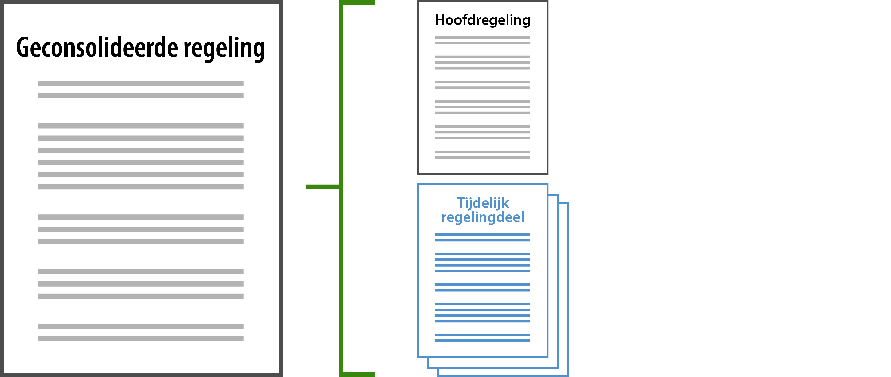
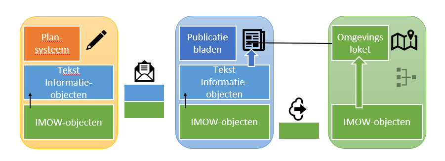
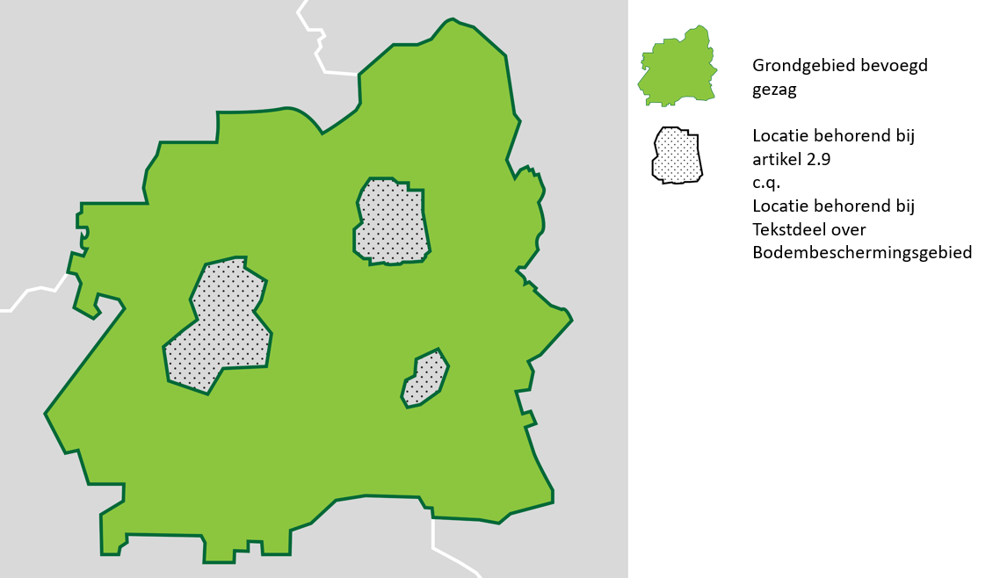
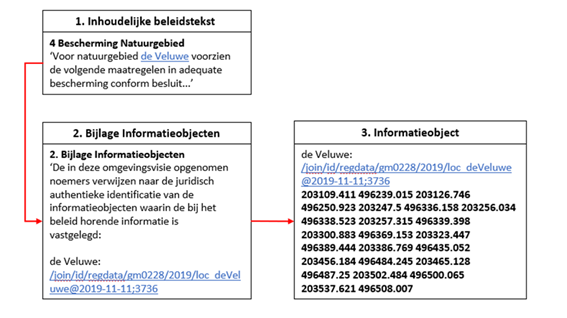
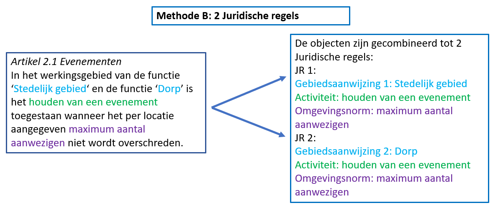
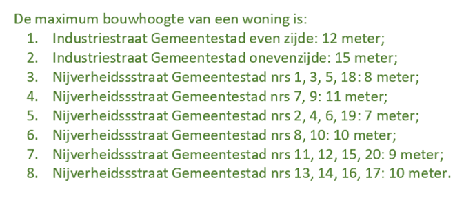
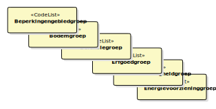
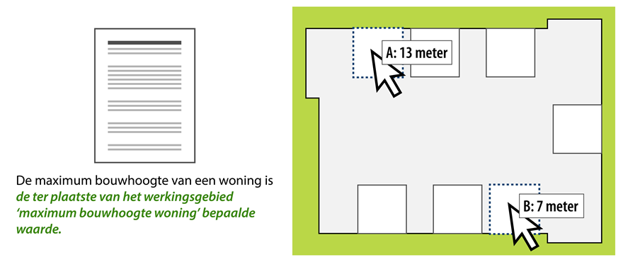
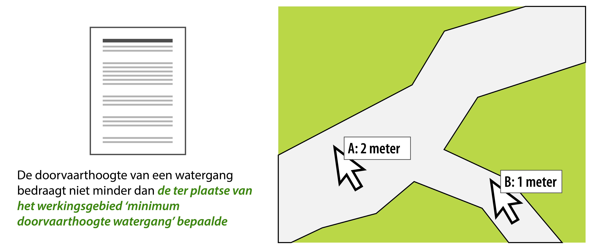
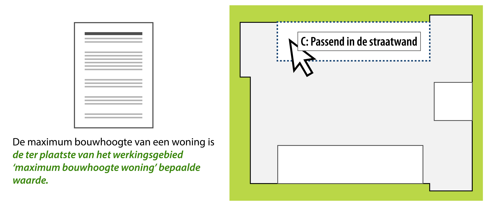

Het motto van de Omgevingswet is ‘Ruimte voor ontwikkeling, waarborgen voor kwaliteit’. De Omgevingswet staat voor een goede balans tussen het benutten en beschermen van de fysieke leefomgeving. Met benutten wordt bedoeld het doelmatig beheren, gebruiken en ontwikkelen van de fysieke leefomgeving om maatschappelijke behoeften te vervullen. Bij beschermen gaat het over het bereiken en in stand houden van een veilige en gezonde fysieke leefomgeving en een goede omgevingskwaliteit.
1.1.1.1 Nieuw stelsel omgevingsrecht
De Omgevingswet bundelt de wetgeving en regels voor ruimte, wonen, infrastructuur, milieu, natuur en water. Met de Omgevingswet wordt het huidige stelsel van ruimtelijke regels volledig herzien en wordt het fundament van het nieuwe stelsel voor het omgevingsrecht gelegd. Met het vernieuwen van het omgevingsrecht wil de wetgever vier verbeteringen bereiken:
Het omgevingsrecht is inzichtelijk, voorspelbaar en gemakkelijk in het gebruik.
De leefomgeving staat op een samenhangende manier centraal in beleid, besluitvorming en regelgeving.
Een actieve en flexibele aanpak biedt overheden meer afwegingsruimte om doelen voor de leefomgeving te bereiken.
Besluitvorming over projecten in de leefomgeving gaat sneller en beter.
Voor de realisatie van deze doelen biedt de wetgever diverse juridische instrumenten, waaronder de omgevingsdocumenten die verschillende bevoegde gezagen in staat stellen besluiten te nemen die ingrijpen in de leefomgeving. De belangrijkste omgevingsdocumenten zijn:
Algemene Maatregel van Bestuur (Rijk)
Ministeriële Regeling (Rijk)
Omgevingsvisie (Rijk, provincies en gemeenten)
Omgevingsverordening (Provincies)
Waterschapsverordening (Waterschappen)
Omgevingsplan (Gemeenten)
Projectbesluit (Rijk, provincies en waterschappen)
Programma (Rijk, provincies, gemeenten en waterschappen)
1.1.1.2 LVBB, overheid.nl en DSO-LV
Omgevingsdocumenten moeten om werking te kunnen hebben, worden bekendgemaakt respectievelijk gepubliceerd. Daartoe moeten ze worden aangeleverd aan de Landelijke Voorziening Bekendmaken en Beschikbaarstellen (verder: LVBB). De LVBB verzorgt vervolgens de bekendmaking van de besluiten en de consolidatie van wijzigingsbesluiten in de (geconsolideerde) Regeling. Beide worden geplaatst op het internetportaal overheid.nl: de bekendmaking van de besluiten komt op officielebekendmakingen.nl in het digitale publicatieblad van het bevoegde gezag en de geconsolideerde Regeling in de nationale respectievelijk lokale regelingenbank. De geconsolideerde Regeling (in STOP-termen: de Toestand) wordt doorgeleverd aan de hierna te bespreken DSO-LV. Deze processen en de resultaten daarvan zijn nader beschreven in paragraaf 1.3.8.
Digitalisering is een ander belangrijk instrument voor het behalen van de in paragraaf 1.1.1.1 genoemde verbeterdoelen. De Omgevingswet bevat de grondslagen voor de Landelijke Voorziening Digitaal Stelsel Omgevingswet (verder: DSO-LV). Daarmee is de juridische basis gelegd voor de ontwikkeling van DSO-LV en kunnen er regels worden gesteld over onder andere gemeenschappelijke definities in de standaarden en voorzieningen die onderdeel zijn van het stelsel.
DSO-LV zorgt voor samenhangende, eenduidige en toegankelijke informatie van goede kwaliteit en draagt bij aan de verbetering van het stelsel van het omgevingsrecht. Het stimuleert een snellere en integrale besluitvorming onder de Omgevingswet en vergroot het gebruikersgemak.
DSO-LV biedt het digitale loket waar initiatiefnemers, overheden en belanghebbenden snel kunnen zien wat kan en mag in de fysieke leefomgeving: het Omgevingsloket. Via het Omgevingsloket kunnen zij:
vergunningen aanvragen en meldingen doen;
zien welke regels en beleid van toepassing zijn op een locatie. De basis hiervoor zijn de omgevingsdocumenten, waaronder omgevingsvisies, omgevingsverordeningen en omgevingsplannen, projectbesluiten, AMvB’s, MR en programma’s;
(op termijn) informatie raadplegen over de kwaliteit van de fysieke leefomgeving, zoals gegevens over water- of luchtkwaliteit en geluidbelasting.
Om aan deze doelstellingen van DSO-LV te kunnen voldoen, is het nodig om de omgevingsdocumenten machineleesbaar te maken en de gebruikte gegevens uitwisselbaar te maken. Dat betekent dat de omgevingsdocumenten vanuit informatiekundig en technisch oogpunt moeten worden gestructureerd en gestandaardiseerd.
De Omgevingswet biedt daartoe de mogelijkheid door het stellen van regels over de inrichting en vormgeving van de omgevingsdocumenten, die worden vastgelegd in de Standaard Officiële Publicaties (STOP) en het onderhavige document. Bij ministeriële regeling zullen regels worden opgenomen rond het gebruik van deze standaard voor officiële overheidspublicaties.
De STOP/TPOD-standaard legt vast hoe tekst moet worden ingedeeld en geannoteerd, hoe tekst aan locaties moet worden gekoppeld, welke waardelijsten van toepassing zijn en hoe het resultaat vervolgens uitgewisseld moet worden. Het is aan de bevoegde gezagen om de inhoud te bepalen.
1.1.2 STOP, IMOW en TPOD
De Standaard voor Officiële Publicaties (verder: STOP) omvat de beschrijving van de manier waarop digitale officiële bekendmakingen worden opgesteld, uitgewisseld en gepresenteerd. STOP ondersteunt het beschikbaar stellen van alle officiële bekendmakingen. Het algemene doel is interoperabiliteit in dat proces van uitwisselen en beschikbaar stellen. STOP gaat daarbij niet over de inhoud van officiële bekendmakingen, maar beschrijft wel de mechanismen en bouwstenen om die inhoud digitaal vast te leggen.
Per domein kan een specificatie van STOP gemaakt worden. Voor de Omgevingswet is die specificatie gegeven in het Conceptueel InformatieModel Omgevingswet (verder: CIMOW) en het InformatieModel Omgevingswet (verder: IMOW). CIMOW is het conceptuele model waarop informatiemodellen in de keten gebaseerd worden. IMOW is afgeleid van CIMOW en is het logische model dat is toegespitst op de keten ‘Van plan tot publicatie’. IMOW richt zich met name op omgevingsdocumenten in DSO-LV. IMOW omvat implementatierichtlijnen en implementatie-afspraken voor de omgevingsdocumenten. Daarnaast omvat het per type omgevingsdocument een UML-klassediagram voor het annoteren van dat omgevingsdocument.
Op welke wijze STOP en IMOW moeten worden toegepast is per omgevingsdocument beschreven in een Toepassingsprofiel. Een Toepassingsprofiel is een nadere invulling c.q. beperking van de (algemene) STOP en bevat domeinspecifieke afspraken. De toepassingsprofielen geven voor het specifieke domein aan welke specifieke regels er gelden voor inhoud en metadata (eigenschappen en waardelijsten).
Voor de Omgevingswet is het gebruik van ToepassingsProfielen voor OmgevingsDocumenten (TPOD) vereist en is er voor elk soort omgevingsdocument een apart toepassingsprofiel. Een TPOD beschrijft de informatiekundige specificaties conform STOP en IMOW voor de (inhoudelijke) onderwerpen, de regels en richtlijnen die gelden voor het betreffende omgevingsdocument. Het is in feite de schakel tussen de juridisch(-inhoudelijke) bepalingen in de Omgevingswet en de technische specificaties voor het ontwikkelen van software ten behoeve van het opstellen van de afzonderlijke omgevingsdocumenten en de data die daarin wordt vastgelegd. Het TPOD is primair bedoeld voor informatie-specialisten, beleidsmedewerkers en juristen van de bevoegde gezagen, die de omgevingsdocumenten volgens de standaard inhoud en vorm zullen geven. De Wegwijzer voor het betreffende omgevingsdocument vult dit aan met aanwijzingen en voorbeelden voor de concrete toepassing van de standaard.
Dit TPOD geeft uitwerking aan het omgevingsplan en behoort bij een set van documenten die, als toepassing van STOP, ontwikkeld zijn voor het domein van de Omgevingswet:
Het Conceptueel Informatiemodel voor de Omgevingswet (CIMOW);
Het Informatiemodel Omgevingswet (IMOW);
XSD’s; schema’s voor implementatie van IMOW in XML-formaat;
Presentatiemodel;
Toepassingsprofielen (TPOD’s) voor de omgevingsdocumenten;
Waardelijsten behorende bij de TPOD’s;
Validatie- en conformiteitsregels;
Wegwijzer op basis van de TPOD’s.
1.1.3 Leeswijzer
Dit document is in drie delen verdeeld. Deel 1 beschrijft de uitgangspunten voor de modellering. In dit eerste hoofdstuk zijn de doelstellingen van de Omgevingswet en DSO-LV en de werking van LVBB en overheid.nl op hoofdlijnen toegelicht. Daarmee is het bredere kader en het doel van het TPOD geschetst. Hoofdstuk 1.2 beschrijft de juridische, inhoudelijke en procedurele aspecten van het omgevingsplan en -waar relevant- andere instrumenten die op het omgevingsplan inwerken. Ook het overgangsrecht en de eventuele overgangsfase na inwerkingtreden van de Omgevingswet komt aan de orde. Hoofdstuk 1.3 gaat in op de belangrijkste uitgangspunten voor de toepassingsprofielen. Ingegaan wordt op het proces van totstandkoming en bekendmaking, het verschil tussen omgevingsdocumenten met en omgevingsdocumenten zonder regels, het verschil tussen een initieel besluit, een wijzigingsbesluit en de geconsolideerde Regeling van het omgevingsplan; daarna worden de hoofdlijnen van annoteren, waardelijsten en Presentatiemodel toegelicht. Vervolgens wordt het onderwerp metadata kort benoemd. Tot slot wordt ingegaan op het proces van plan tot publicatie.
Deel 2 is volledig gewijd aan de modellering van het omgevingsplan. Hoofdstuk 2.1 beschrijft de besluitonderdelen waaruit een besluit tot vaststelling of wijziging van het omgevingsplan bestaat en het verschil tussen de actuele geldende versie van het omgevingsplan en de geconsolideerde Regeling daarvan. In hoofdstuk 2.2 wordt het STOP-tekstmodel beschreven en de toepassing daarvan op het omgevingsplan. Hoofdstuk 2.3 bevat een beschrijving van het IMOW. Hierin worden de drie hoofdcomponenten van IMOW beschreven, staat het IMOW-UML-klassediagram voor het omgevingsplan en wordt het annoteren van het omgevingsplan met IMOW-objecten gedetailleerd toegelicht. Tot slot worden de verplichte en onverplichte onderdelen van de standaard en hun juridische status beschreven.
In deel 3 komt een aantal aanleveringsaspecten aan de orde: de identificatie van omgevingsdocumenten met Doel; de vormgeving van Regeling en Besluit, oftewel de toepassing van de STOP-tekstmodellen voor Regeling en Besluit voor omgevingsdocumenten; het aangeven van de procedurestatus van een besluit tot vaststelling of wijziging van omgevingsdocumenten en de doorwerking daarvan in de geconsolideerde Regeling en tot slot het muteren van IMOW-objecten.
Dit toepassingsprofiel stelt een aantal (overwegend technische en structurerende) normen voor het opstellen van het omgevingsplan. Voorbeelden daarvan zijn het aantal besluitonderdelen waaruit een besluit tot vaststelling of wijziging van het omgevingsplan moet bestaan, de attributen die nodig zijn om een bepaalde annotatie vast te leggen en de manier waarop de relatie tussen tekst en werkingsgebied wordt vormgegeven. Uiteraard bevat het toepassingsprofiel ook een toelichting op die normen. Om volstrekt helder te maken wat tot de norm behoort, wordt in de tekst een duidelijk onderscheid gemaakt tussen beide teksttypen. De toelichtende teksten staan steeds in de subparagraaf Toelichting, de normen staan in de subparagraaf Norm. Het gaat hier om de functionele normen uit de standaard, niet om juridische normen die regels stellen. De subparagraaf Norm beschrijft hoe bij het opstellen van het omgevingsplan voldaan moet worden aan de TPOD-standaard. Doelstelling hiervan is dat de omgevingsdocumenten van verschillende bevoegde gezagen op eenzelfde manier geraadpleegd en bevraagd kunnen worden en het combineren van informatie uit verschillende omgevingsdocumenten over eenzelfde onderwerp vereenvoudigd wordt. Hiermee hebben deze normen een functionele invalshoek. Validatieregels die bepalen of een omgevingsplan kan worden bekendgemaakt en/of in DSO-LV getoond kan worden, kennen een technische invalshoek: kan het geautomatiseerde systeem het document verwerken?
1.2 Inhoudelijke aspecten van het omgevingsplan
Dit hoofdstuk beschrijft het instrument omgevingsplan en heeft als doel de functionele elementen in het toepassingsprofiel te kunnen identificeren.
Paragraaf 1.2.1 schetst het karakter van het omgevingsplan. Deze schets bevat informatie op hoofdlijnen, die van belang is voor de functionele elementen in het toepassingsprofiel. In paragraaf 1.2.2 staan algemene kenmerken van het omgevingsplan. Deze kenmerken geven de (juridische, procedurele, etc.) context weer van het omgevingsplan. Paragraaf 1.2.3 beschrijft domeinspecifieke kenmerken: de inhoud en werking van het omgevingsplan. Paragraaf 1.2.4 heeft als onderwerp de andere omgevingsdocumenten die het omgevingsplan kunnen wijzigen, te weten het voorbereidingsbesluit, de reactieve interventie en het projectbesluit, en het meervoudig bronhouderschap dat daarbij een rol speelt. Paragraaf 1.2.5 ten slotte gaat over het overgangsrecht en de overgangsfase waarin wordt gegaan van omgevingsplan van rechtswege naar het omgevingsplan dat is opgesteld conform de Omgevingswet.
1.2.1 Kenschets rechtsfiguur
Rijk, provincies, waterschappen en gemeenten stellen elk (integraal) beleid en regels vast en nemen vervolgens andere (uitvoerings)besluiten over de ontwikkeling, het gebruik, de bescherming en het beheer en onderhoud van de fysieke leefomgeving voor hun grondgebied. Zij leggen dit vast in één of meerdere omgevingsdocumenten.
Elk van deze bestuursorganen heeft in het stelsel voor het omgevingsrecht zijn eigen bevoegdheden en verantwoordelijkheden en daarmee samenhangende instrumenten, waaronder de omgevingsdocumenten.
De gemeente stelt regels over de fysieke leefomgeving en legt deze vast in één omgevingsplan voor haar gehele grondgebied. Het omgevingsplan bevat in de eerste plaats de regels die op grond van de Omgevingswet worden gesteld en daarnaast ook regels over de fysieke leefomgeving die worden gesteld op grond van de Gemeentewet en andere bijzondere wetten.
Het omgevingsplan bevat de regels die nodig zijn met het oog op een evenwichtige toedeling van functies aan locaties. Daarnaast kunnen in het omgevingsplan regels worden gesteld over activiteiten die gevolgen (kunnen) hebben voor de fysieke leefomgeving.
Het omgevingsplan is een normerend instrument dat voor eenieder rechten en plichten in het leven roept.
1.2.2 Algemene kenmerken omgevingsplan
In Tabel 1 tot en met Tabel 3 zijn de algemene kenmerken van het omgevingsplan opgenomen. Deze kenmerken leggen de algemene eigenschappen vast, waarmee informatie over het omgevingsplan wordt bijgehouden. Doel van deze tabellen is het weergeven van de meest essentiële algemene kenmerken van het instrument zodat de lezer het beter kan plaatsen en vergelijken met bestaande instrumenten, niet om een volledig sluitende beschrijving te geven. De in de tabellen aangehaalde artikelen zijn afkomstig uit de Omgevingswet (verder: Ow), tenzij anders vermeld.
Juridische kenmerken
Onderwerp
Specificatie
Grondslag rechtsfiguur
Artikel 2.4 Ow
Voorbereidingsprocedure
Verplichtingen:
kennisgeving van voornemen omgevingsplan vast te stellen (art. 16.29 Ow)
toepassen afdeling 3.4 Awb (art. 16.30 Ow)
Tijdstip bekendmaking/
terinzagelegging vastgesteld omgevingsplan
(art. 16.77b Ow) Bekendmaking niet eerder dan 2 weken na datum vaststelling, tenzij:
GS geen zienswijze over ontwerp hebben ingebracht,
t.o.v. ontwerp geen wijzigingen zijn aangebracht, of
GS hebben bepaald dat omgevingsplan eerder mag worden bekendgemaakt
Wijze van bekendmaking
Bekendmaking door plaatsing van het volledige besluit in het elektronisch publicatieblad van het bestuursorgaan dat het besluit heeft genomen
Tijdstip inwerkingtreding
Omgevingsplan treedt in werking 4 weken na dag van bekendmaking van het besluit, tenzij in omgevingsplan later tijdstip is bepaald (art. 16.78 Ow).
Aan regels omgevingsplan kan tijdelijke werking worden gegeven[1] NvT Omgevingsbesluit (juni 2017), Par. 3.2.4, pag. 36
Rechtsbescherming
Beroep bij Afdeling bestuursrechtspraak Raad van State
Geldt toepassingsprofiel ook voor ontwerpbesluit
Ja
Rechtsfiguur roept meldingsplicht of vergunningplicht in het leven
Ja (art. 4.4 Ow)
Rechtsfiguur bevat voor eenieder bindende regels
Ja
Kenmerken ten behoeve van metadata en annotaties
Onderwerp
Specificatie
Bevoegde bestuurslaag
bevoegd tot vaststellen:
gemeente (art. 2.4 Ow)
(via indeplaatsstelling) provincie (art. 124 Gemeentewet)
bevoegd tot wijzigen bij projectbesluit, voorbereidingsbesluit of reactieve interventie (meervoudig bronhouderschap[2] De Omgevingswet voorziet in (juridisch) meervoudig bronhouderschap. Bij inwerkingtreden van de Omgevingswet is meervoudig bronhouderschap in technische zin voor voorbereidingsbesluit en reactieve interventie nog niet mogelijk. Vooralsnog wordt daarvoor een andere technische oplossing geboden, die is beschreven in de toepassingsprofielen voor die instrumenten. ):
waterschap (art. 5.52 Ow)
provincie (artt. 4.16, 5.52, 16.21 Ow)
Rijk (artt. 4.16, 5.52 Ow)
Bestuursorgaan
bevoegd tot vaststellen:
gemeenteraad (art. 2.4 Ow)
burgemeester en wethouders (na delegatie, art. 2.8 Ow)
bevoegd tot wijzigen bij projectbesluit, voorbereidingsbesluit of reactieve interventie (meervoudig bronhouderschap[3] Zie vorige noot ):
dagelijks bestuur waterschap (art. 5.52 Ow)
gedeputeerde staten (artt. 4.16, 5.52, 16.21 Ow)
minister (artt. 4.16, 5.52 Ow)
Omgevingsdocument kan rechtstreeks ander omgevingsdocument wijzigen (meervoudig bronhouderschap[4] Zie noot 2 )
Nee
Ander omgevingsdocument kan rechtstreeks onderhavig omgevingsdocument wijzigen (meervoudig bronhouderschap[5] Zie noot 2 )
Ja, namelijk:
besluit GS dat een onderdeel omgevingsplan geen deel van het omgevingsplan uitmaakt (art. 16.21 Ow, reactieve interventie)
projectbesluit (art. 5.52 Ow)
voorbereidingsbesluit genomen door ander bestuursorgaan dat omgevingsplan wijzigt met voorbeschermingsregels (art. 4.16 Ow)
Rechtsfiguur kan gewijzigd worden door wijzigingsbesluiten
Ja
Vergelijking met huidige rechtsfiguren en RO Standaarden
Onderwerp
Specificatie
Vergelijkbaar met / voortzetting van huidige rechtsfiguur
bestemmingsplan, uitwerkingsplan, wijzigingsplan en inpassingsplan op basis van Wro
beheersverordening op basis van Wro
bestemmingsplan met verbrede reikwijdte op basis van Crisis- en herstelwet
welstandsnota op basis van Woningwet
erfgoedverordening op basis van Monumentenwet
algemene plaatselijke verordening op basis van Gemeentewet
…
Voortzetting van instrument in RO Standaarden
Ja, bestemmingsplan en beheersverordening
INSPIRE-thema
Planned Land Use: SpatialPlan
1.2.3 De inhoud van het omgevingsplan
De Omgevingswet geeft geen sluitend overzicht van onderwerpen waarover in het omgevingsplan regels gesteld moeten of kunnen worden. Wel is bepaald welke aspecten de fysieke leefomgeving in ieder geval omvat en welke gevolgen worden aangemerkt als gevolgen voor de fysieke leefomgeving.
In de wet staan vervolgens -soms expliciet, soms ook impliciet- specifiekere bepalingen over de inhoud van het omgevingsplan, zoals het aanwijzen van onderwerpen waarover regels alleen in een omgevingsplan mogen worden opgenomen.
In de Omgevingswet is bepaald dat bij AMvB gevallen kunnen worden aangewezen:
waarin regels over de fysieke leefomgeving alleen in het omgevingsplan mogen worden opgenomen;
waarin regels over de fysieke leefomgeving niet in het omgevingsplan mogen worden opgenomen.
Deze gevallen zijn aangewezen in artikel 2.1 van het Omgevingsbesluit. Naast de regels die, als ze worden gesteld, in het omgevingsplan moeten worden opgenomen en de regels over onderwerpen die daarin niet mogen worden opgenomen, ontstaat als vanzelf ook een categorie regels over onderwerpen die in het omgevingsplan kunnen worden opgenomen maar waarvan dat niet verplicht wordt gesteld. Over die onderwerpen kunnen regels ook in een (andere) verordening worden gesteld.
Tabel 4 biedt een overzicht van de belangrijkste regels en onderwerpen die het omgevingsplan op grond van de Omgevingswet moet, respectievelijk kan, bevatten.
Inhoudelijke kenmerken omgevingsplan
Onderwerp
Bron
Karakterisering/Toelichting
Vaststellen van omgevingswaarde
art 2.11 lid 1 Ow
Omgevingswaarden zijn normen die de gewenste staat of kwaliteit van de fysieke leefomgeving of een onderdeel daarvan als beleidsdoel vastleggen. Omgevingswaarden worden uitgedrukt in meetbare of berekenbare eenheden of anderszins in objectieve termen. Een omgevingswaarde leidt bij dreigende overschrijding tot verplichtingen voor de overheid en heeft geen rechtstreekse werking voor anderen.
NB: omgevingswaarden kunnen in aanvulling op of in afwijking van omgevingswaarden uit omgevingsverordening of AMvB worden vastgesteld, maar alleen als dat in omgevingsverordening of AMvB is bepaald.
Aanwijzen van programma en bestuursorgaan dat bevoegd is programma vast te stellen
art. 3.15 lid 2 en 5 jo art. 3.16 Ow
Het moet gaan om programma dat betrekking heeft op omgevingswaarden gemeente of andere doelstelling voor fysieke leefomgeving waarvoor in omgevingsplan een regel over verlenen of weigeren van omgevingsvergunning voor een omgevingsplanactiviteit is gesteld.
Met de term ‘aanwijzen van programma’s’ wordt ook bedoeld dat in het omgevingsplan kan worden bepaald dat een programma met programmatische aanpak moet worden vastgesteld.
Regels over betrekken omgevingswaarde of andere doelstelling uit programma bij uitoefening van taken en bevoegdheden en regels over welke bepalingen o.g.v. artt. 2.22 lid 1, 2.24 lid 1, 5.18, 5.19 lid 1 of 5.30 of welke regels over verlenen/weigeren omgevingsvergunning voor omgevingsplanactiviteit geheel/gedeeltelijk buiten toepassing blijven
art. 3.16 lid 2 Ow jo artt. 2.22 lid 1, 2.24 lid 1, 5.18, 5.19 lid 1 of 5.30 Ow
Regels over activiteiten die gevolgen hebben of kunnen hebben voor fysieke leefomgeving
art. 4.1 lid 1 Ow
NB: begrip ‘activiteit’: alle handelingen die de Omgevingswet reguleert (MvT op ontwerp-Omgevingswet, juni 2014)
Regels die nodig zijn met het oog op een evenwichtige toedeling van functies aan locaties
art. 4.2 lid 1 Ow
Verbod om zonder voorafgaande melding aan het bevoegd gezag een activiteit te verrichten
art. 4.4 lid 1 Ow
meldingsplicht
Verbod om zonder omgevingsvergunning een activiteit te verrichten
art. 4.4 lid 2 Ow
vergunningplicht
Aanwijzen van onderwerp waarvoor het bevoegd gezag maatwerkvoorschriften kan stellen of voorschriften aan omgevingsvergunning kan verbinden
art. 4.5 lid 1 Ow
Bepalen dat maatwerkvoorschriften of vergunningvoorschriften kunnen afwijken van regels omgevingsplan
art. 4.5 lid 2 Ow
Bepalen dat maatwerkvoorschrift niet kan worden gesteld als over onderwerp voorschrift aan omgevingsvergunning kan worden verbonden
art. 4.5 lid 3 Ow
Stellen van maatwerkregels
art. 4.6 Ow
Maatwerkregels: aanvullende of nadere regels of regels die afwijken van regels uit AMvB of omgevingsverordening over onderwerpen die in AMvB of omgevingsverordening daarvoor zijn aangewezen
NB: maatwerkregels kunnen afwijken van regels uit AMvB of omgevingsverordening, maar alleen als dat in AMvB of verordening is bepaald.
Voorschrijven dat een maatregel moet worden getroffen
art. 4.7 lid 1 Ow
Bepalen dat treffen gelijkwaardige maatregel is toegestaan zonder voorafgaande toestemming
art. 4. 7 lid 2 Ow
Verbod om gelijkwaardige maatregel toe te passen zonder voorafgaande melding
art. 4. 7 lid 2 Ow
Meldingsplicht
Stellen van nadere regels over treffen maatregel of gelijkwaardige maatregel
art. 4.7 lid 3 Ow
Uitsluiten dat gelijkwaardige maatregel wordt getroffen
art. 4.7 lid 3 Ow
Voorbeschermingsregels
art. 4.14 en 4.16 Ow
NB het predicaat voorbeschermingsregels zegt niets over de inhoud van de regel, wel over totstandkoming, bevoegd gezag dat regel heeft toegevoegd en de tijdelijkheid van de regel
Aanwijzen van locaties waar aanwezige bouwwerken moeten worden gemoderniseerd of vervangen door gelijksoortige bebouwing
art. 4.18 Ow
Uitgangspunt: dit is vorm van toedeling van functie aan locatie (MvT)
Regels over uiterlijk van bouwwerken
art. 4.19 Ow
In afwijking van AMvB bepalen dat activiteit vergunningplichtig dan wel vergunningvrij is in gevallen waarin dat o.g.v. AMvB is toegestaan
art. 5.2 lid 1 Ow
Regels over het verlenen of weigeren van de omgevingsvergunning voor de omgevingsplanactiviteit
art. 5.21 jo 5.18 Ow
Beoordelingsregels
Regels over verbinden van voorschriften aan omgevingsvergunning voor omgevingsplanactiviteit
art. 5.34 lid 3 Ow
Regels over kostenverhaal
art. 13.14 Ow, via Aanvullingswet grondeigendom)
Kostenverhaalregels
Aanwijzen van bestuursorganen en andere instanties die advies kunnen uitbrengen over aanvragen om omgevingsvergunning voor omgevingsplanactiviteit
art. 16.15 lid 2 Ow
Regels over bij aanvraag om omgevingsvergunning voor omgevingsplanactiviteit te verstrekken gegevens en bescheiden
art. 16.55 lid 4 Ow
Regels over monitoring
artt. 20.1 lid 3, 20.2, 20.14 lid 2 Ow
1.2.4 Andere omgevingsdocumenten die het omgevingsplan wijzigen
1.2.4.1 Voorbereidingsbesluit en reactieve interventie: tijdelijk regelingdeel en meervoudig bronhouderschap
In het algemeen is een bestuursorgaan verantwoordelijk voor het vaststellen en wijzigen van het omgevingsdocument waarvoor het op grond van de Omgevingswet is aangewezen als bevoegd gezag en worden omgevingsdocumenten alleen gewijzigd door wijzigingsbesluiten van hetzelfde type. In het geval van het omgevingsplan berust die bevoegdheid primair bij de gemeente, maar zijn er ook andere bestuursorganen die andere typen besluiten nemen die leiden tot wijziging van het omgevingsplan. Gedeputeerde Staten kunnen met een reactieve interventie besluiten dat een onderdeel van een besluit tot vaststelling of wijziging van het omgevingsplan geen deel van het omgevingsplan uitmaakt (artikel 16.21 Ow). Waterschap, provincie en Rijk kunnen een projectbesluit vaststellen dat het omgevingsplan wijzigt met regels die nodig zijn voor het uitvoeren en in werking hebben of in stand houden van het project (artikel 5.52 lid 1 Ow). Een voorbereidingsbesluit wijzigt het omgevingsplan met voorbeschermingsregels; zo’n voorbereidingsbesluit kan worden genomen door gemeente (artikel 4.14 Ow) of door provincie of Rijk (artikel 4.16 Ow). De wetgever heeft reactieve interventie, projectbesluit en voorbereidingsbesluit zo bedoeld dat het nemen ervan tot gevolg heeft dat het het omgevingsplan, dus een ander type omgevingsdocument, wijzigt. Technisch uitgedrukt zijn er bij een voorbereidingsbesluit op grond van artikel 4.16 Ow, een reactieve interventie en een projectbesluit meerdere bevoegde gezagen, oftewel bronhouders, die het omgevingsplan kunnen wijzigen. Dit wordt meervoudig bronhouderschap genoemd.
In juridische zin is meervoudig bronhouderschap niet heel ingewikkeld. Gebleken is echter dat meervoudig bronhouderschap in technische zin heel complex is. Enerzijds omdat iedere wijziging niet alleen tekst wijzigt, maar ook locaties, annotaties en geografische informatieobjecten (verder: GIO’s, zie hiervoor paragraaf 2.3.2.2.2) en ook gevolgen kan hebben voor de vragenbomen waarmee het omgevingsplan in het Omgevingsloket bevraagd kan worden. Anderzijds omdat niet eenduidig is hoe wijzigingen uitgevoerd moeten worden. Voor het omgevingsplan geldt namelijk een overgangsfase waarin gemeenten het omgevingsplan stapsgewijs kunnen opbouwen. In die periode bestaat het omgevingsplan uit het omgevingsplan van rechtswege (bestaande uit de geldende bestemmingsplannen c.a. die in Ruimtelijkeplannen.nl zijn gepubliceerd en dan via de overbruggingsfunctie getoond worden), het omgevingsplan van Rijkswege (oftewel de bruidsschatregels) en het omgevingsplan dat de gemeente zelf aan het opbouwen is. Om deze redenen is het niet haalbaar gebleken dat de plansystemen van bevoegde gezagen op de beoogde datum van inwerkingtreden van de Omgevingswet gereed zijn voor de vorm van tweerichtingsverkeer met de LVBB die voor het meervoudig bronhouderschap nodig is.
Daarom is er interbestuurlijk besloten om in de eerste periode na het in werking treden van de Omgevingswet geen meervoudig bronhouderschap in technische zin toe te passen, maar te kiezen voor alternatieve oplossingen om zo te komen tot complexiteitsreductie. Voor het projectbesluit bestaan de oplossingen in het overgangsrecht (gedurende de overgangstermijn geldt het projectbesluit als omgevingsvergunning voor de buitenplanse omgevingsplanactiviteit) en in afspraken over het wijzigen van het omgevingsplan tussen het bestuursorgaan dat het projectbesluit voorbereidt en vaststelt en de gemeente. Voor het voorbereidingsbesluit en de reactieve interventie is gekozen voor een alternatieve toepassing van het meervoudig bronhouderschap: het concept ‘tijdelijk regelingdeel’; bij de reactieve interventie aangevuld met de opdracht van provincie aan gemeente om de reactieve interventie in het omgevingsplan te verwerken.
Dit concept houdt in dat de juridische geconsolideerde regeling kan bestaan uit één hoofdregeling en 0 of meer tijdelijk regelingdelen. Tijdelijk regelingdelen maken tijdelijk deel uit van de regeling. Technisch zijn het twee losse delen. Schematisch ziet dit er zo uit:
Geconsolideerde regeling: 1 hoofdregeling en 0 of meer tijdelijk regelingdelen
Het concept tijdelijk regelingdeel wordt toegepast bij alle verschijningsvormen van het voorbereidingsbesluit, dus niet alleen bij de voorbereidingsbesluiten met meervoudig bronhouderschap (o.g.v. artikel 4.16 Ow), maar ook bij voorbereidingsbesluiten zonder meervoudig bronhouderschap (o.g.v. de artikelen 4.14 en 4.15 Ow). Bij die laatste categorie voorbereidingsbesluiten voegt het bevoegd gezag met het voorbereidingsbesluit voorbeschermingsregels toe aan het ‘eigen’ omgevingsplan of de ‘eigen’ omgevingsverordening. Er is een aantal redenen voor de keuze om het tijdelijk regelingdeel ook toe te passen bij voorbereidingsbesluiten zonder meervoudig bronhouderschap. Het zorgt voor de raadpleger voor uniformiteit: alle voorbeschermingsregels zijn op dezelfde manier vormgegeven en te benaderen. Verder geldt dat voorbeschermingsregels altijd vervallen, hetzij door een besluit hetzij door tijdsverloop. Door ze onder te brengen in het tijdelijk regelingdeel is het technisch eenvoudig om ze niet meer te laten tonen nadat ze zijn vervallen. Automatisch of na slechts een beperkte handeling zijn de voorbeschermingsregels dan niet meer zichtbaar in DSO-LV. Wanneer de voorbeschermingsregels rechtstreeks zijn opgenomen in de geconsolideerde versie van het omgevingsplan of de omgevingsverordening vraagt dat veel meer van plansoftware en administratie. Dan moet immers de volledige verwerking van de voorbeschermingsregels in het omgevingsplan of de omgevingsverordening worden teruggedraaid, waarbij eventueel ook nog tussentijdse wijzigingsbesluiten een rol kunnen spelen. Daarom is, in ieder geval voor de eerste periode na het inwerkingtreden van de Omgevingswet, gekozen voor een oplossing die voor de bevoegde gezagen een zo beperkt mogelijk aantal complicaties met zich meebrengt.
De regeling van het omgevingsplan bestaat op deze manier uit één hoofdregeling en nul of meer tijdelijke regelingdelen. Tijdelijke regelingdelen heten tijdelijk omdat ze tijdelijk bedoeld zijn: op een gegeven moment vervallen ze omdat ze niet meer geldig, niet meer van toepassing of niet meer nodig zijn. De hoofdregeling is het initiële besluit tot vaststelling van het omgevingsplan, geconsolideerd met alle wijzigingsbesluiten die de gemeente daarna heeft genomen. Het tijdelijk regelingdeel is een technisch afzonderlijk deel, dat niet wordt geconsolideerd in de hoofdregeling, maar wel samen met de hoofdregeling de geconsolideerde regeling vormt. Elk deel (zowel de hoofdregeling als ieder tijdelijk regelingdeel) is een apart 'work' (een eigenstandig deel) en kan worden beheerd door een ander bevoegd gezag. Ieder tijdelijk regelingdeel kan met wijzigingsbesluiten worden gewijzigd; dan ontstaat een consolidatie van dat tijdelijk regelingdeel; het tijdelijk regelingdeel heeft dus ook zijn eigen versies.
In het omgevingsplan worden tijdelijk regelingdelen toegevoegd door het voorbereidingsbesluit en de reactieve interventie; vooralsnog niet door het projectbesluit. Bij het voorbereidingsbesluit wordt het gebruikt om voorbeschermingsregels vorm te geven als een technisch van het omgevingsplan afgescheiden blokje dat in juridische zin onderdeel is van de geconsolideerde regeling van het omgevingsplan. Bij de reactieve interventie wordt het gebruikt om aan een raadpleger van overheid.nl en DSO-LV duidelijk te maken hoe de regels van het omgevingsplan luiden door toedoen van de reactieve interventie. Onderdeel van de reactieve interventie is de opdracht van provincie aan de gemeente om te zorgen voor verwerking van de reactieve interventie in (de hoofdregeling van) het omgevingsplan. Het tijdelijk regelingdeel vanuit een reactieve interventie maakt dus maar heel kort deel uit van de regeling van het omgevingsplan, namelijk tot de gemeente de reactieve interventie in het omgevingsplan heeft verwerkt.
Ieder voorbereidingsbesluit en iedere reactieve interventie leidt tot een afzonderlijk tijdelijk regelingdeel. Er kunnen dus tegelijkertijd voor het grondgebied van één gemeente of één provincie meerdere tijdelijk regelingdelen zijn, ieder ontstaan uit een afzonderlijk voorbereidingsbesluit of, in het geval van de gemeente, uit een afzonderlijke reactieve interventie. Het is dus niet zo dat er per gemeente respectievelijk provincie één tijdelijk regelingdeel is waarin alle reactieve interventies en de voorbeschermingsregels van alle genomen voorbereidingsbesluiten worden opgenomen.
Visueel gemaakt in een kaartbeeld zoals dat in bijvoorbeeld DSO-LV te zien kan zijn, ziet dat eruit als weergegeven in Figuur 2:
Schematisch kaartbeeld van geconsolideerde regeling bestaande uit hoofdregeling en tijdelijk regelingdelen van één gemeente
Opgemerkt wordt dat er toepasbare regels kunnen zijn bij regels uit de hoofdregeling die door het voorbereidingsbesluit zijn gewijzigd. Als die toepasbare regels in de Vergunningcheck- en Aanvraagmodules van DSO-LV aanwezig blijven, krijgt een raadpleger onjuiste informatie. Wanneer er zowel bij de hoofdregeling als bij het tijdelijk regelingdeel toepasbare regels zijn, krijgt een raadpleger dubbele informatie die deels juist en deels onjuist is. Er zullen bestuurlijke afspraken moeten worden gemaakt hoe hiermee omgegaan moet worden.
1.2.4.2 Omgevingsvergunning voor omgevingsplanactiviteit
Op grond van artikel 4.17 Ow moet in ieder geval vijf jaar na het onherroepelijk worden van een omgevingsvergunning voor een voortdurende buitenplanse omgevingsplanactiviteit, waarin niet is bepaald dat die vergunning geldt voor een daarbij gestelde termijn, het omgevingsplan in overeenstemming worden gebracht met die vergunning, als het gaat om:
een omgevingsplanactiviteit bestaande uit het in stand houden van een bouwwerk;
een andere omgevingsplanactiviteit die niet in overeenstemming is met een aan een locatie toegedeelde functie.
1.2.5 Overgangsrecht en overgangsfase
Na inwerkingtreden van de Omgevingswet vormen Chw-bestemmings- en -inpassingsplannen, regels over archeologisch onderzoek uit de verordening voor archeologische monumentenzorg, de verordening met betrekking tot afvloeiend hemelwater of grondwater, bestemmingsplannen, wijzigingsplannen, uitwerkingsplannen, inpassingsplannen, beheersverordeningen, exploitatieplannen, bepaalde voorbereidingsbesluiten, de kaarten met gegevens over de kwaliteit en functie van de bodem en de verleende ontheffingen om in afwijking van een bestemmingsplan voor een termijn van ten hoogste vijf jaar grond of een ander materiaal op te slaan indien dat met het oog op de voortgang van de bodemsanering noodzakelijk is tezamen het van rechtswege voor het gehele grondgebied van een gemeente geldende omgevingsplan (artt. 22.1 Ow en 4.6 Invoeringswet Omgevingswet).
Daarnaast zullen ook de regels die het Rijk decentraliseert als onderdeel van de zogenoemde ‘bruidsschat’ onderdeel gaan uitmaken van het omgevingsplan zoals dat geldt ten tijde van de inwerkingtreding van de Omgevingswet (art. 22.2 Ow). Het Rijk draagt er zorg voor dat de regels uit de bruidsschat als onderdeel van het omgevingsplan elektronisch geraadpleegd kunnen worden. Het omgevingsplan van rechtswege en de bruidsschatregels samen vormen het tijdelijke deel van het omgevingsplan.
De verplichting tot vaststelling van een omgevingsplan geldt pas vanaf een bij koninklijk besluit te bepalen tijdstip. Vanaf dat moment worden regels over de fysieke leefomgeving alleen nog in het omgevingsplan gesteld (art. 22.4 Ow).
Voor een uitvoerige beschrijving van de overgangsfase van bestemmingsplan naar een omgevingsplan dat aan alle eisen van de Omgevingswet voldoet, wordt verwezen naar paragraaf 5.2.3 van de Memorie van Toelichting van de Invoeringswet Omgevingswet (Kamerstukken II 2017/18, 34 986, nr. 3, blz. 97 e.v.).
De via ruimtelijkeplannen.nl elektronisch beschikbaar gestelde ruimtelijke plannen blijven via een overbruggingsfunctie in DSO-LV raadpleegbaar als onderdeel van het omgevingsplan van rechtswege. Het bevoegd gezag kan bij het aanleveren voor de bekendmaking van een besluit tot vaststelling of wijziging van het omgevingsplan aangeven of dat besluit een deel van het omgevingsplan van rechtswege vervangt. Het vervallen deel wordt dan in DSO-LV niet meer getoond. De extra informatie die daarvoor moet worden aangeleverd wordt de Pons genoemd. De werking en de technische specificaties zijn beschreven in paragraaf 2.3.4.28.
Ook de verplichting op grond van artikel 4.17 over het in overeenstemming brengen van het omgevingsplan met omgevingsvergunningen voor een buitenplanse omgevingsplanactiviteit geldt pas vanaf een bij koninklijk besluit te bepalen tijdstip.
1.3 Uitgangspunten voor de toepassingsprofielen voor omgevingsdocumenten
In dit hoofdstuk worden de uitgangspunten voor de toepassingsprofielen voor omgevingsdocumenten beschreven. Deze uitgangspunten zijn mede gebruikt als bouwstenen voor de ontwikkeling van de TPOD’s. Deze informatie is met name beschrijvend van aard en dient het doel achtergrond te bieden voor deel 2, dat de modellering van het omgevingsplan beschrijft en voortborduurt op de uitgangspunten beschreven in dit hoofdstuk. Dit hoofdstuk beschrijft generiek de toegepaste principes in algemene bewoording. Het is mogelijk dat onderdelen van die teksten voor het omgevingsplan niet van toepassing zijn.
1.3.1 Proces van totstandkoming en bekendmaking c.q. publicatie van omgevingsdocumenten
Het proces van opstellen van omgevingsdocumenten en daarbij toepassen van de STOP/TPOD-Standaarden begint intern bij het bevoegd gezag. Waar dat relevant is voor het instrument kan een informeel deel volgen dat bestaat uit participatie en (voor)overleg. Deze informele fase is vormvrij. In het informele deel van het proces kan een informele versie van het omgevingsdocument gebruikt worden die aan de STOP/TPOD-Standaarden voldoet, maar dat is niet verplicht. Met de standaarden kan een conceptversie van omgevingsdocumenten gemaakt worden.
Bij het opstellen van het omgevingsdocument ten behoeve van het formele deel van het proces moet gebruik gemaakt worden van de standaarden STOP en TPOD. De standaarden ondersteunen ook dit opstelproces. Na het opstellen van het omgevingsdocument volgen voor die instrumenten waarvoor dat van toepassing is publicatie en kennisgeving van het ontwerp van het omgevingsdocument en later publicatie of bekendmaking van het besluit op overheid.nl.
Op overheid.nl worden alleen ontwerp- en vastgestelde besluiten gepubliceerd respectievelijk bekendgemaakt. Op dit moment is nog niet bekend of, en zo ja waar, zal worden voorzien in een landelijk beschikbare omgeving waarin ook informele versies van de omgevingsdocumenten beschikbaar gesteld en geraadpleegd kunnen worden.
1.3.2 Omgevingsdocumenten met en zonder regels
Er is onderscheid tussen omgevingsdocumenten die regels bevatten, zoals het omgevingsplan, en omgevingsdocumenten die geen regels bevatten, zoals de omgevingsvisie.
Omgevingsdocumenten die regels bevatten, zullen vanuit de gebruikerstoepassing van het DSO het meest bevraagd worden. Daarom worden aan die omgevingsdocumenten extra eisen gesteld ten behoeve van de bekendmaking en zijn er extra mogelijkheden aan toegevoegd voor bevraging en raadpleging. Om deze reden besteden de standaarden bijzondere aandacht aan deze categorie als het gaat om tekststructuur, annotaties en weergave.
De omgevingsdocumenten zonder regels hebben een ander karakter. Ze hebben een vrijere opzet en kennen geen artikelsgewijze indeling. Hiervoor geldt dan ook een aantal eisen niet die wel voor de omgevingsdocumenten met regels gelden, zoals vaste tekststructuren.
De specificaties voor de tekststructuur zijn opgenomen in hoofdstuk 2.2.
1.3.3 Initieel besluit, wijzigingsbesluit en geconsolideerde Regeling
Omgevingsdocumenten komen in principe tot stand door het nemen van een initieel besluit (het eerste besluit waarbij een volledig omgevingsdocument wordt vastgesteld). Bij het omgevingsplan en de waterschapsverordening bestaat het initiële besluit uit een overgangsrechtelijke situatie en/of een regeling van rijkswege, zie daarvoor paragraaf . Daarna kunnen de omgevingsdocumenten door wijzigingsbesluiten gewijzigd worden. Voor omgevingsplannen, omgevingsverordeningen, waterschapsverordeningen, AMvB’s, MR en omgevingsvisies geldt de verplichting ze in geconsolideerde vorm beschikbaar te stellen. De LVBB zorgt er voor dat alle achtereenvolgens genomen wijzigingsbesluiten verwerkt worden tot een doorlopende versie van het omgevingsdocument: de geconsolideerde Regeling. In hoofdstuk 2.1 wordt dit nader beschreven. Zie voor het muteren door middel van wijzigingsbesluiten en het consolideren van die besluiten tot een (Toestand van) de Regeling ook hoofdstuk 3.1.
1.3.4 Annoteren
Onder annoteren verstaan we het toevoegen van gegevens aan (onderdelen van) besluiten en regelingen, gegevens die de besluiten en regelingen machineleesbaar maken. Dit zorgt ervoor dat het besluit of de regeling gestructureerd bevraagbaar is en dat locaties en andere gegevens op een kaart weergegeven worden. Het annoteren helpt ook bij het verbinden van toepasbare regels, oftewel vragenbomen, aan regels met locaties. De gegevens die bij het annoteren worden toegevoegd worden niet in de voor de mens leesbare tekst weergegeven. Voor degene die dat wil zijn ze wel terug te vinden. Het annoteren van omgevingsdocumenten met IMOW-objecten is beschreven in hoofdstuk 2.3. Daar wordt ook van ieder IMOW-object aangegeven wat het doel is van die annotatie, met andere woorden: wat levert de extra inspanning van het annoteren op aan meerwaarde voor gebruiker en opsteller?
1.3.5 Waardelijsten
Een waardelijst is een collectie van waarden die gebruikt kunnen worden bij het annoteren. Bij diverse attributen van annotaties hoort een waardelijst met vooraf gedefinieerde waarden. Waardelijsten zijn er in twee vormen: limitatieve waardelijsten en uitbreidbare waardelijsten. In de toepassingsprofielen voor de omgevingsdocumenten bedoelen we daar het volgende mee:
limitatieve waardelijst: een lijst met vooraf gedefinieerde waarden waaruit gekozen moet worden. Deze waardelijst wordt centraal beheerd en kan alleen beheermatig gewijzigd worden, aangezien een wijziging direct effect heeft op de werking en functionaliteiten van de applicaties van DSO-LV en LVBB;
uitbreidbare waardelijst: een lijst met vooraf gedefinieerde waarden. Wanneer de gewenste waarde op de waardelijst voorkomt, wordt die gebruikt. Als de gewenste waarde niet op de waardelijst voorkomt, definieert het bevoegd gezag een eigen waarde.
In paragraaf 2.3.4 is per objecttype is aangegeven voor welke attributen een waardelijst geldt en of deze limitatief of uitbreidbaar is.
1.3.6 Presentatiemodel
De inhoud van een omgevingsdocument dient kenbaar te zijn. Daarom moet een omgevingsdocument niet alleen machineleesbaar worden aangeboden, maar is ook een voor de mens te interpreteren presentatie noodzakelijk. Uitgangspunt is dat de tekst, de bijbehorende Locaties en de waarden die normen op de verschillende Locaties hebben zo overzichtelijk worden gepresenteerd dat de raadpleger ze kan interpreteren.
Het Presentatiemodel richt zich op de mensleesbare vorm van het presenteren. Onder presenteren verstaan we het weergeven en visualiseren van de inhoud van een besluit of regeling in een voorgedefinieerde vorm (gebruik van symbolen, kleur, lijndikte, arcering, karakterset) conform een afgesproken standaard. Het Presentatiemodel beschrijft daarbij de wijze van presenteren van tekst, locaties en waarden en het presenteren van wijzigingen in een wijzigingsbesluit.
De mensleesbare presentatie van tekst toont de hiërarchie van de structuurelementen van die tekst. De mensleesbare presentatie van Locaties maakt gebruik van de annotaties met IMOW-objecten, waardelijsten en symbolisatietabellen. Een symbolisatietabel bepaalt hoe Locaties, de bijbehorende annotaties en waarden op een kaartbeeld worden weergegeven. De tabel geeft de symbolisatie waarmee een annotatie wordt gepresenteerd. Hierbij wordt een waarde uit een limitatieve waardelijst aan de bijbehorende, afgesproken, symboolcode gekoppeld. Gebruik van de symbolisatietabel leidt tot een standaardweergave, ook wel geharmoniseerde weergave genoemd. Figuur 3 laat de werking van de standaardweergave zien voor een annotatie met een Gebiedsaanwijzing.
Presentatiemodel: annoteren met object, type en groep, in combinatie met symbolisatietabel, toepassing standaardweergave
Figuur 3 laat zien dat een tekst wordt gekoppeld aan een Locatie. Om de Locatie betekenisvol op een kaart weer te geven is geannoteerd met een Gebiedsaanwijzing, in dit geval van het type Natuur. Het bevoegd gezag heeft zelf een naam gekozen voor de Gebiedsaanwijzing (in dit geval ‘Gelders Natuurnetwerk’) en heeft aangegeven tot welke groep die specifieke Gebiedsaanwijzing hoort. De groep wordt gekozen uit de waardelijst ‘Natuurgroep’ die hoort bij de Gebiedsaanwijzing van het type Natuur. In het voorbeeld is uit de waardelijst de waarde ‘Natuurnetwerk Nederland’ gekozen. De groep is het onderdeel van de annotatie dat bepaalt hoe de Locatie op de kaart wordt weergegeven. Alle waarden voor groep van de waardelijst hebben in de symbolisatietabel die hoort bij het Presentatiemodel een code die bepaalt hoe de groep wordt weergegeven: de kleur, arcering, mate van transparantie en lijnstijl. Voor het bevoegd gezag is het voldoende om aan te geven welke groep van toepassing is. Een viewer kan dan geautomatiseerd met behulp van de symbolisatietabel de Locatie met de juiste standaardsymbolisatie weergeven.
Het bevoegd gezag heeft twee methoden om zelf invloed uit te oefenen op de weergave van objecten, Locaties en waarden op een kaart. De eerste methode is door te kiezen voor een eigen, specifieke symbolisatie in plaats van de standaardweergave. Dit maakt het bijvoorbeeld mogelijk om de activiteiten ‘het exploiteren van een discotheek’ en ‘het exploiteren van daghoreca’ ieder op een eigen manier weer te geven in plaats van met de standaardweergave die hoort bij de Activiteitengroep ‘exploitatieactiviteit horeca’. Figuur 4 laat daarvan (enigszins versimpeld) een voorbeeld zien. In IMOW is daarvoor een attribuut toegevoegd aan de objecten Activiteit (via ActiviteitLocatieaanduiding), Omgevingswaarde, Omgevingsnorm en de verschillende typen Gebiedsaanwijzing.
Gebleken is dat het in DSO-LV niet goed werkt om met een attribuut een symbolisatie mee te geven. Daarom is in IMOW versie 1.0.3 het objecttype SymbolisatieItem geïntroduceerd. Met SymbolisatieItem kan het bevoegd gezag een eigen, specifieke symbolisatie geven aan ActiviteitLocatieaanduiding, Normwaarde en (de verschillende typen) Gebiedsaanwijzing. In verband met de eis dat in de 1.0.x-versie van de standaard geen wijzigingen worden aangebracht die niet backwards compatible zijn, blijft het attribuut specifiekeSymbolisatie gehandhaafd, naast het nieuwe objecttype. In versie 1.1 van de TPOD-standaard zal het attribuut specifiekeSymbolisatie volledig vervallen. Om er voor te zorgen dat er dan geen omgevingsdocumenten zijn waarvan onderdelen niet meer door de standaard en de systemen van DSO-LV worden ondersteund, wordt dringend geadviseerd om, indien het wenselijk wordt geacht om met een eigen symbolisatie te werken, het objecttype SymbolisatieItem te gebruiken en geen gebruik te maken van het attribuut specifiekeSymbolisatie.
Presentatiemodel: annoteren met object en groep, in combinatie met symbolisatietabel, toepassing standaardweergave (links) en eigen weergave (rechts)
Figuur 4 laat het verschil zien tussen de toepassing van de standaardweergave en de eerste methode voor het bevoegd gezag om zelf invloed uit te oefenen op de weergave, namelijk door te kiezen voor een eigen, specifieke symbolisatie. Het bovenste deel van de afbeelding laat, net als in Figuur 1 maar dan voor een activiteit, zien dat een tekst wordt gekoppeld aan een Locatie, de activiteit een naam krijgt en een groep wordt gekozen. Het onderste deel van de figuur laat aan de linkerkant de toepassing van de standaardweergave zien. Dit is al beschreven in de toelichting op Figuur 1. De rechterkant toont de toepassing van de eigen, specifieke symbolisatie. Het bevoegd gezag kiest uit de symbolenbibliotheek de symboolcode die het beste past bij de manier waarop het het object wil weergeven. In dat geval gaat de specifieke symbolisatie boven de weergave-werking van de groep.
De tweede methode die het bevoegd gezag heeft om zelf invloed uit te oefenen op de weergave is het samenstellen van kaarten en kaartlagen. Daarmee geeft het bevoegd gezag zelf aan dat bepaalde informatie, of een set van informatie, op een kaart of kaartlaag wordt weergegeven. IMOW kent hiervoor de objecten Kaart en Kaartlaag, die in de paragrafen 2.3.4.30 en 2.3.4.31 zijn beschreven.
Naast de presentatie van tekst, Locaties en waarden legt het Presentatiemodel ook vast hoe wijzigingen in een wijzigingsbesluit worden gepresenteerd. In een wijzigingsbesluit moet in mensleesbare, inzichtelijke en begrijpelijke vorm getoond worden wat door het besluit verandert in de geconsolideerde Regeling; dit betreft zowel tekst, Locatie als waarden.
1.3.7 Metadata
Informatie en specificaties voor de metadata die moeten worden meegeleverd bij de aanlevering voor de bekendmaking c.q. publicatie van omgevingsdocumenten zijn te vinden in de STOP-documentatie.
1.3.8 Van plan tot publicatie
1.3.8.1 Het aanleverproces
Het bevoegd gezag levert via het digitale kanaal het digitale besluit aan via het bronhouderskoppelvlak. Het digitale besluit bestaat uit een generiek formeel deel met daarin de artikelen c.q. beleidstekst en informatieobjecten en een Omgevingswetdeel met specifieke objecten vanuit dit domein. In het geval van een wijzigingsbesluit levert het bevoegd gezag de consolidatie-instructies ten behoeve van het consolideren van het wijzigingsbesluit in de regeling. Beide delen vormen een gevalideerd consistent geheel. De LVBB verzorgt de publicatie van het formele deel van het besluit in het digitale publicatieblad van het bevoegde gezag op officiëlebekendmakingen.nl en consolideert het besluit in de regeling. De IMOW-objecten worden gedistribueerd naar DSO-LV ten behoeve van het Omgevingsloket.
Aanleverproces
1.3.8.2 Raadplegen
1.3.8.2.1 Raadplegen in het officiële publicatieblad
Op officielebekendmakingen.nl wordt het besluit formeel bekend gemaakt in het digitale publicatieblad van het bevoegde gezag. De authentieke tekst van het besluit wordt in PDF-formaat weergegeven en er is een zogeheten landingspagina voor de informatieobjecten. Tevens is er een web-versie van het besluit.
Daarnaast worden de consolidatie-instructies verwerkt in de geldende regeling van dat moment. Dit resulteert in een documentgerichte weergave van de regeling van waaruit de informatieobjecten kunnen worden benaderd. De informatieobjecten worden afzonderlijk getoond in een interactieve viewer en kunnen vanuit daar ook worden gedownload.
Raadplegen is alleen mogelijk per omgevingsdocument of regeling en dus ook alleen van één bevoegd gezag. Er is geen integraal overzicht van alle regels voor de leefomgeving.
1.3.8.2.2 Raadplegen in DSO-LV
DSO-LV ontvangt de geconsolideerde regeling met de IMOW-objecten. In het Omgevingsloket zijn diverse functies beschikbaar voor de gebruiker. Het biedt de mogelijkheid tot het oriënteren op de integrale regels of het integrale beleid over de fysieke leefomgeving via de kaart. Met een klik op de kaart zijn de daar geldende regels en het geldende beleid te raadplegen. De locaties uit de diverse regelingen worden via een legenda gesymboliseerd op de kaart. De tekst en kaart geven ook selectiemogelijkheden, bijvoorbeeld het tonen van regeltekst en locaties voor een specifieke activiteit, het uitsluitend tonen van regels die voor iedereen gelden of het tonen van beleid over een specifiek beleidsaspect met de bijbehorende locaties. De getoonde tekst komt uit de geconsolideerde Regelingen vanuit de officiële publicatiebladen.
Tot slot vormen de IMOW-objecten de basis voor de toepasbare regels (vragenbomen) in het Omgevingsloket, indien van toepassing. De locaties zijn gekoppeld aan de activiteiten in de vragenboom. De vragenbomen zelf worden via een apart kanaal aangeleverd.
2 Modellering van het omgevingsplan
Dit deel beschrijft de modellering van het omgevingsplan en voorziet in de vertaling van (een deel van) de kenmerken van de tabellen uit hoofdstuk 1.2 naar het model dat de kenmerken structureert en aan elkaar relateert. Het model legt uit hoe het omgevingsplan zodanig gestructureerd wordt, dat het machineleesbaar en op een gestandaardiseerde manier uitwisselbaar wordt.
Hoofdstuk 2.1 beschrijft besluit, besluitonderdelen en geldende en geconsolideerde Regeling van het omgevingsplan. In hoofdstuk 2.2 wordt het tekstmodel beschreven en de toepassing daarvan op het omgevingsplan. Hoofdstuk 2.3 beschrijft het Informatiemodel Omgevingswet (IMOW).
IMOW en de toepassing daarvan vormen een domeinspecifieke toepassing van STOP. Om een omgevingsdocument op te stellen en juridisch juist te kunnen bekendmaken is het uiteraard ook nodig om te voldoen aan de specificaties van STOP. Hoe dat moet is beschreven in de STOP-standaard.
2.1 Besluit, besluitonderdelen en omgevingsplan
Deze paragraaf geeft een beschrijving van de onderdelen waaruit het besluit waarbij een omgevingsplan of een wijziging daarvan wordt vastgesteld, bestaat.
2.1.1 Besluit en besluitonderdelen
2.1.1.1 Toelichting
Het besluit waarbij een omgevingsplan of een wijziging daarvan wordt vastgesteld, bestaat uit twee onderdelen. Facultatief kan daar een derde deel aan worden toegevoegd.
2.1.1.1.1 Deel één: vaststellingsdocumenten en motivering
Dit deel van het besluit bestaat uit de vaststellingsdocumenten en de motivering van het besluit tot vaststelling c.q. wijziging van het omgevingsplan. Het lijkt op een combinatie van het raadsbesluit, het raadsvoorstel, de zienswijzennota en de toelichting met bijlagen bij het bestemmingsplan op basis van de Wet ruimtelijke ordening.
Dit deel begint met de vaststellingsdocumenten: de overwegingen van het bestuur die leiden tot het nemen van het besluit, waaronder de wijze waarop met de ingekomen zienswijzen is omgegaan en het voorstel tot het nemen van dit besluit (vergelijkbaar met het raadsvoorstel en raadsbesluit tot vaststelling van het bestemmingsplan op grond van de Wet ruimtelijke ordening, inclusief de zienswijzennota). Daarna volgt de motivering: de inhoudelijke onderbouwing van het besluit (vergelijkbaar met de toelichting op het bestemmingsplan). Er wordt toegelicht op welke wijze gevolg is gegeven aan de toepasselijke instructieregels en instructies van de provincie en het Rijk en er wordt gemotiveerd om welke redenen het besluit bijdraagt aan een evenwichtige toedeling van functies aan locaties. In het geval van een wijzigingsbesluit wordt in dit deel onder andere beschreven op welke onderdelen het omgevingsplan wordt aangepast en waarom, en wordt verwezen naar voor die wijzigingen relevant beleid uit de omgevingsvisie van gemeente, provincie of Rijk.
Ter ondersteuning van de motivering kunnen bijlagen met onderzoeksgegevens en bescheiden bij dit eerste deel van het vaststellingsbesluit gevoegd zijn.
2.1.1.1.2 Deel twee: regels
Dit deel van het besluit bestaat uit de regels van het omgevingsplan. Het bestaat in ieder geval uit de Regeltekst(en) en de daarbij behorende geografische informatieobjecten die de Locaties vastleggen. Bij dit tweede deel kunnen bijlagen worden gevoegd (vergelijkbaar met de bijlagen bij de regels van het bestemmingsplan).
In het geval van een wijzigingsbesluit wordt in dit deel concreet aangegeven op welke wijze het omgevingsplan wordt aangepast. Aangegeven wordt welke artikelen, leden of onderdelen daarvan worden toegevoegd, geschrapt, gewijzigd of vervangen door andere. Dit deel van het wijzigingsbesluit is vergelijkbaar met de wijziging van een wet of een verordening. Bij een wijzigingsbesluit wordt dit deel weergegeven in ‘renvooiweergave’; een weergave waarin met visuele middelen wordt duidelijk gemaakt wat wordt toegevoegd of geschrapt.
2.1.1.1.3 Deel drie: artikelsgewijze en algemene toelichting
Dit deel kan aan het besluit worden toegevoegd als de gemeenteraad ervoor kiest om bij het omgevingsplan een artikelsgewijze toelichting te geven. De artikelsgewijze toelichting is facultatief, niet verplicht. Als er voor een artikelsgewijze toelichting is gekozen bestaat dit deel van het besluit uit de volledige artikelsgewijze toelichting (bij de eerste vaststelling van een omgevingsplan) dan wel uit de wijzigingen die worden aangebracht in de geconsolideerde artikelsgewijze toelichting (bij een besluit tot wijziging van het omgevingsplan). Dit deel zal dus overeenkomen met de artikelsgewijze toelichting zoals die bij wetten en verordeningen gebruikelijk is.
Aan deze artikelsgewijze toelichting kan ook een algemene toelichting worden toegevoegd met bijvoorbeeld gegevens over de gemeente en een beschouwing over de visie van de gemeente op het omgevingsplan (globaal, gedetailleerd, wijze waarop invulling is gegeven aan de gemeentelijke beleidsvrijheid etc.). Wanneer dat nodig is, kan bij een wijziging van de regels van het omgevingsplan ook de algemene toelichting worden geactualiseerd.
Als dat gewenst is kunnen ook aan dit deel bijlagen worden toegevoegd.
De besluitonderdelen zijn schematisch weergegeven in Figuur 6.
Schematische weergave besluitonderdelen
In paragraaf 3.1.2 wordt de toepassing voor omgevingsdocumenten van de tekstmodellen van STOP voor Regeling en Besluit beschreven.
2.1.1.2 Norm
Het besluit tot vaststelling of wijziging van het omgevingsplan bestaat uit ten minste twee en ten hoogste drie onderdelen, met de volgende inhoud:
Deel een: vaststellingsdocumenten en motivering, verplicht onderdeel
Deel twee: omgevingsplan, verplicht onderdeel
Deel drie: artikelsgewijze toelichting met optioneel algemene toelichting, onverplicht onderdeel.
Aan ieder van deze drie onderdelen kunnen bijlagen worden toegevoegd.
2.1.2 De actuele geldende versie van het omgevingsplan
De actuele geldende versie van het omgevingsplan waaraan rechten en plichten kunnen worden ontleend, bestaat uit de omgevingsplan-delen van alle opeenvolgende besluiten tot vaststelling of wijziging van het omgevingsplan. Het deel met vaststellingsdocumenten en motivering en eventueel daarbij behorende bijlagen maken daar geen deel van uit. Dat geldt ook voor de eventuele artikelsgewijze en algemene toelichting. Deze onderdelen van het besluit zijn niet juridisch bindend. Wel kunnen deze delen uiteraard een rol spelen bij de interpretatie van de regels van het omgevingsplan.
2.1.3 De geconsolideerde Regeling van het omgevingsplan
Naast de verzameling van omgevingsplan-delen van alle besluiten tot vaststelling of wijziging van het omgevingsplan die samen de juridisch geldende versie van het omgevingsplan vormen, is er ook een geconsolideerde Regeling van het omgevingsplan. Een (Toestand van een) geconsolideerde Regeling bevat de inhoud van een regeling zoals die geldt op een bepaald moment. De geconsolideerde Regeling wordt afgeleid uit het initiële besluit waarin steeds de (in werking getreden) wijzigingen uit de wijzigingsbesluiten zijn verwerkt tot een doorlopende versie van het omgevingsplan.
De geconsolideerde Regeling vormt de basis voor de weergave van de regeling op overheid.nl en van de versie van het omgevingsplan die in DSO-LV te raadplegen is. Wanneer bijlagen in de Regeling van het omgevingsplan zijn bijgevoegd worden die in de geconsolideerde Regeling opgenomen; wijzigingen die door het besluit in bestaande bijlagen worden aangebracht (aanpassingen in bestaande bijlagen of het geheel vervangen of verwijderen van één of meer bijlagen) worden in de geconsolideerde Regeling verwerkt.
In dit toepassingsprofiel zijn vooral de specificaties voor de geconsolideerde Regeling van het omgevingsplan beschreven. Hoe wijzigingsbesluiten er voor de bekendmaking en consolidatie uit moeten zien en hoe ze moeten worden aangeleverd, is beschreven in de STOP-documentatie. De mutatie van IMOW-objecten is beschreven in paragraaf 3.1.4.
De wijzigingen in de eventuele artikelsgewijze toelichting en de algemene toelichting worden verwerkt in de geconsolideerde, digitaal raadpleegbare artikelsgewijze en algemene toelichting op het omgevingsplan die ook via DSO-LV te raadplegen is.
2.2 Toepassing van het STOP-tekstmodel op omgevingsdocumenten
In STOP is een volledige beschrijving van de STOP-tekstmodellen opgenomen. De STOP-tekstmodellen benoemen tekstobjecten en beschrijven de structuur waarin die tekstobjecten toegepast kunnen worden. De tekstmodellen gelden voor alle officiële overheidspublicaties. Specifieke typen publicaties hebben een specifiek profiel op het STOP-tekstmodel.
In dit hoofdstuk wordt beschreven hoe de STOP-tekstmodellen in zijn algemeenheid op omgevingsdocumenten en vervolgens specifiek op het omgevingsplan moeten worden toegepast.
2.2.1 Soorten tekststructuur
STOP onderscheidt voor inhoudelijke tekst twee soorten tekststructuren:
Artikelstructuur: de tekststructuur van het lichaam[6] Lichaam van de regeling als bedoeld in Aanwijzing 3.53 van de Aanwijzingen voor de regelgeving en in STOP van een regeling die is opgebouwd uit één of meer artikelen;
Vrijetekststructuur: de tekststructuur die wordt gebruikt voor die onderdelen van regelingen die geen artikelen bevatten.
Er zijn omgevingsdocumenten waarvan het lichaam de Artikelstructuur heeft, zoals de omgevingsverordening, de waterschapsverordening en het omgevingsplan, en omgevingsdocumenten waarvan het lichaam geen artikelen bevat en dus de Vrijetekststructuur heeft, zoals de omgevingsvisie. In het vervolg van dit toepassingsprofiel worden omgevingsdocumenten waarvan het lichaam artikelen bevat ‘omgevingsdocumenten met Artikelstructuur’ genoemd en worden omgevingsdocumenten waarvan het lichaam de Vrijetekststructuur heeft (oftewel geen artikelen bevat) ‘omgevingsdocumenten met Vrijetekststructuur’ genoemd.
In omgevingsdocumenten komt Vrijetekststructuur (zoals bedoeld in STOP) voor in alle onderdelen die geen Artikelstructuur kennen: nagenoeg alle delen van een besluit tot vaststelling of wijziging van een omgevingsdocument met Vrijetekststructuur en die delen van een besluit tot vaststelling of wijziging van een omgevingsdocument met Artikelstructuur die geen artikelen bevatten. Dit geldt ook voor bijlagen bij alle onderdelen, dus ook voor bijlagen bij het onderdeel dat de Artikelstructuur heeft.
De specificatie van de STOP-Artikelstructuur is alleen van toepassing op omgevingsdocumenten met Artikelstructuur, en dan alleen op die onderdelen die de regels oftewel de artikelen bevatten. De specificatie van de STOP-Vrijetekststructuur is van toepassing op alle omgevingsdocumenten, te weten op al die onderdelen die geen regels oftewel artikelen bevatten.
2.2.2 Specificatie van de Artikelstructuur
Zoals in paragraaf 2.2.1 is beschreven is de Artikelstructuur de tekststructuur voor dat deel van juridisch authentieke omgevingsdocumenten met Artikelstructuur, zoals de omgevingsverordening, de waterschapsverordening en het omgevingsplan, dat de artikelen bevat. De specificaties voor de Artikelstructuur en de toepassing van die specificaties voor het omgevingsplan worden in de navolgende paragrafen beschreven.
2.2.2.1 De tekstelementen in het Artikelstructuurdeel van het omgevingsplan
2.2.2.1.1 Toelichting
De tekststructuren van STOP kennen structuurelementen, elementen met inhoud en de inhoud zelf. Structuurelementen zijn die elementen die de tekst structureren maar geen inhoud bevatten; voorbeelden zijn Hoofdstuk en Paragraaf. Elementen met inhoud zijn, zoals de term al zegt, die elementen die inhoud bevatten: Artikel en Lid. Voorbeelden van de inhoud zelf zijn Alinea, Tabel en Figuur. In de navolgende tekst gebruiken we ‘tekstelement’ als term voor de drie elementsoorten tezamen.
De structuurelementen die kunnen worden gebruikt voor de structurering van het omgevingsplan zelf, oftewel het onderdeel dat de artikelen bevat en dat geannoteerd kan worden met de IMOW-objecten die in paragraaf 2.3.4 zijn beschreven, zijn Hoofdstuk, Titel, Afdeling, Paragraaf, Subparagraaf, Subsubparagraaf, Artikel en Lid. Deze tekstelementen zijn ontleend aan de Aanwijzingen voor de regelgeving (aanwijzingen 3.54, 3.56, 3.57, 3.58, 3.59), met enige nadere specificaties en toevoegingen.
De indeling van de Regeling werkt als volgt:
Hoofdstuk en Artikel komen altijd voor.
Als er behoefte is om in een Hoofdstuk Artikelen te groeperen wordt Afdeling gebruikt.
In hoofdstukken waarin een onderverdeling in Afdelingen niet volstaat (bijvoorbeeld vanwege de omvang van het hoofdstuk of de verscheidenheid aan onderwerpen in het hoofdstuk) wordt Paragraaf gebruikt; dit tekstonderdeel komt tussen Afdeling en Artikel.
Een volgende onderverdeling ontstaat door Subparagraaf te gebruiken; dit tekstelement komt tussen Paragraaf en Artikel.
Bij behoefte aan nog verder gaande onderverdeling wordt Subsubparagraaf gebruikt; dit tekstelement komt tussen Subparagraaf en Artikel.
Een nog verder gaande onderverdeling kan vervolgens bereikt worden door gebruik te maken van Titel; dit tekstonderdeel komt dan tussen Hoofdstuk en Afdeling.
Artikelen kunnen worden onderverdeeld in Leden.
Leden kunnen niet worden onderverdeeld in Subleden, in het model komt Sublid namelijk niet voor.
Concrete tekst kan alleen voorkomen onder Artikel en Lid: de Inhoud. Wanneer een Artikel is onderverdeeld in Leden bevatten alleen de Leden Inhoud; het Artikel zelf brengt in dat geval structuur aan en kent zelf geen tekst oftewel Inhoud. Zie Figuur 7 voor een voorbeeld.
Inhoud bestaat uit onder andere Alinea, Figuur, Lijst en Tabel; deze kunnen alleen voorkomen onder Artikel en Lid. Een compleet overzicht van alle inhoud-elementen is te vinden in het IMOP-tekstschema met de bijbehorende documentatie. Het is niet toegestaan om het element Tussenkop te gebruiken.
Lijsten kunnen in meerdere niveaus gebruikt worden, zogenaamde geneste lijsten.
Voet- en eindnoten zijn niet toegestaan.
Voorbeeld van een Artikel dat is onderverdeeld in Leden, het Artikel zelf heeft geen Inhoud
Onder ieder structuurelement kan het element Gereserveerd worden geplaatst. Het is een leeg element waarmee bij weergave op overheid.nl de tekst ‘Gereserveerd’ wordt gegenereerd. Dit element maakt het mogelijk om alvast een structuur neer te zetten die is voorbereid op toekomstige aanvullingen; het bevoegd gezag kan het element niet zelf vullen met eigen tekst. Met latere wijzigingsbesluiten kan het element Gereserveerd worden vervangen door een structuurelement met daadwerkelijke inhoud.
2.2.2.1.2 Norm
Voor tekstelementen in het inhoudelijke deel van omgevingsdocumenten met Artikelstructuur gelden de regels uit Tabel 5.
Regels voor tekstelementen en hun invulling - Artikelstructuur
Overige inhoud-elementen zoals Figuur, Lijst en Tabel[7] Een compleet overzicht van alle inhoud-elementen is te vinden in het IMOP-tekstschema met de bijbehorende documentatie ; element Tussenkop is niet toegestaan
2.2.2.2 Opschrift en nummering tekstelementen Artikelstructuur van het omgevingsplan
Ten behoeve van de leesbaarheid en een goede oriëntatie in de tekst krijgt een groot deel van de tekstelementen van het omgevingsplan een Kop die bestaat uit een aantal Kopelementen.
2.2.2.2.1 Toelichting
Kopelementen bestaan uit een Label (de aanduiding van het type tekstelement, zoals Hoofdstuk en Artikel), een Nummer en een Opschrift (de tekstuele aanduiding van het tekstelement die aangeeft waar het onderdeel over gaat). Met uitzondering van Lid is het verplicht alle tekstelementen te voorzien van een Opschrift; over het algemeen kan het bevoegd gezag (de tekst van) het Opschrift zelf kiezen. Lijsten kunnen voorkomen in Artikelen en Leden. Een Lijst wordt altijd voorafgegaan door een inleidende tekst, oftewel de aanhef. Daarvoor moet verplicht gebruik gemaakt worden van het STOP-tekstelement Alinea. Er gelden regels voor het maximum aantal niveaus in Lijsten en de nummering van Lijsten.
De navolgende figuren tonen het verschil tussen Lid en Lijst, Leden met en zonder Opschrift en de werking van de aanhef bij een Lid met en een Lid zonder Opschrift.
Artikel, Leden met Opschrift, Lijst en aanhef
Figuur 8 toont een Artikel met Leden met Opschrift. Lid 2 bevat een Lijst. Duidelijk zichtbaar is dat de Lijst wordt voorafgegaan door een aanhef.
Artikel, Leden zonder Opschrift, Lijst en aanhef
Figuur 9 geeft een voorbeeld van een Artikel met Leden zonder Opschrift. Lid 1 bevat een Lijst, voorafgegaan door een aanhef die door het ontbreken van een Opschrift direct achter het nummer van het Lid staat.
Zoals uit de navolgende norm blijkt bestaat de nummering van Hoofdstuk, Titel, Afdeling, Paragraaf, Subparagraaf, Subsubparagraaf, Artikel en Lid uit Arabische cijfers. Bij ieder tekstelement is het toegestaan om aan die nummering letters toe te voegen.
Wanneer met een wijzigingsbesluit een nieuw tekstelement wordt ingevoegd tussen al bestaande tekstelementen, bijvoorbeeld een nieuw artikel tussen de artikelen 2.5 en 2.6, zijn daar twee methoden voor:
het ingevoegde tekstelement krijgt het nummer dat volgt op dat van het tekstelement waarna het wordt ingevoegd; de daarop volgende tekstelementen worden vernummerd (in het voorbeeld: het nieuwe artikel krijgt het nummer 2.6, de daarop volgende artikelen worden vernummerd naar 2.7 etc.);
het ingevoegde tekstelement krijgt hetzelfde nummer als het tekstelement waarna het wordt ingevoegd met daarachter (de eerstvolgende beschikbare) letter (in het voorbeeld: het nieuwe artikel krijgt het nummer 2.5a, de daarop volgende artikelen behouden hun oorspronkelijke nummering).
Het voordeel van methode 1 is dat de nummering van tekstelementen volledig geautomatiseerd door software kan worden uitgevoerd. Nadelen zijn dat het met een wijzigingsbesluit invoegen van een tekstelement kan leiden tot een omvangrijke vernummering met als gevolg een omvangrijke aanlevering van gewijzigde onderdelen in renvooiweergave en tot mogelijke problemen wanneer meerdere wijzigingsbesluiten tegelijk in procedure zijn.
Voordelen van methode 2 zijn dat het invoegen van een tekstelement niet leidt tot een omvangrijker aanlevering bij een wijzigingsbesluit dan vanwege inhoudelijke wijzigingen nodig is en dat zich minder nummeringsconflicten zullen voordoen in het geval meerdere wijzigingsbesluiten tegelijk in procedure zijn. Nadeel van deze methode is, naast het wellicht meer visuele aspect van een ondoorzichtige nummering door het toevoegen van letters, dat de nummering van tekstelementen niet volledig geautomatiseerd door software kan worden uitgevoerd; dat kan leiden tot fouten.
2.2.2.2.2 Norm
Koppen
De verschillende tekstelementen moeten worden voorzien van een Kop. Een Kop bevat de volgende Kop-elementen:
Label: de tekstuele aanduiding van het type van het tekstelement
Nummer: de identificatie van het tekstelement met een nummer of andere aanduiding
Opschrift: de tekstuele aanduiding van het tekstelement, waarmee de inhoud van het onderdeel beknopt wordt aangeduid[8] Ontleend aan Aanwijzing 3.57 van de Aanwijzingen voor de regelgeving .
Opgemerkt wordt dat STOP ook nog het Kop-element Subtitel kent. Dit element is in omgevingsdocumenten met Artikelstructuur niet toegestaan.
De opmaak van de tekst, waaronder die van de Koppen, op overheid.nl wordt bepaald door het Presentatiemodel en wordt geautomatiseerd toegepast in de LVBB. DSO-LV maakt gebruik van dezelfde opgemaakte tekst. Dit toepassingsprofiel bevat daarom geen voorschriften over de opmaak van de Koppen. Ten behoeve van de mensleesbare tekst in het proces van opstellen van en besluitvorming over het omgevingsdocument, voorafgaand aan de bekendmaking en consolidatie, kan de plansoftware -door leverancier of bevoegd gezag te bepalen- opmaak aan de tekst toevoegen.
STOP stelt het verplicht om ten minste één van de Kop-elementen Label, Nummer en Opschrift te gebruiken. Dit toepassingsprofiel stelt striktere eisen aan Kop. Toegepast op de tekstelementen die in het omgevingsplan zijn toegestaan gelden voor de Kop de onderstaande regels, waarbij geldt dat alle onderdelen verplicht zijn, tenzij expliciet anders is vermeld.
Hoofdstuk:
Label: Hoofdstuk
Nummer: Hoofdstukken worden oplopend genummerd in Arabische cijfers. Achter het cijfer mag een letter worden toegevoegd. Tussen cijfer en letter en achter het laatste karakter komt geen punt.
Opschrift:
Hoofdstuk 1 heeft het Opschrift Algemene bepalingen
Het bevoegd gezag is vrij in de keuze van het Opschrift van de overige hoofdstukken.
Titel:
Label: Titel
Nummer: De nummering van Titels begint met het volledige nummer van het Hoofdstuk waarin de Titel voorkomt, waar nodig inclusief de aan het cijfer toegevoegde letter, gevolgd door een punt, daarna oplopende nummering van de Titels in Arabische cijfers. Achter het laatste cijfer mag een letter worden toegevoegd. Tussen cijfer en letter en achter het laatste karakter komt geen punt.
Opschrift: Door het bevoegd gezag zelf te kiezen.
Afdeling:
Label: Afdeling
Nummer:
In het geval dat tussen Hoofdstuk en Afdeling Titel voorkomt: De nummering van Afdelingen begint met het volledige samengestelde nummer van de Titel waarin de Afdeling voorkomt, waar nodig inclusief de toegevoegde letter, gevolgd door een punt, daarna oplopende nummering van de Afdelingen in Arabische cijfers. Achter het laatste cijfer mag een letter worden toegevoegd. Tussen cijfer en letter en achter het laatste karakter komt geen punt.
In het geval dat tussen Hoofdstuk en Afdeling geen Titel voorkomt: De nummering van Afdelingen begint met het volledige nummer van het Hoofdstuk waarin de Afdeling voorkomt, waar nodig inclusief de toegevoegde letter, gevolgd door een punt, daarna oplopende nummering van de Afdelingen in Arabische cijfers. Achter het laatste cijfer mag een letter worden toegevoegd. Tussen cijfer en letter en achter het laatste karakter komt geen punt.
Opschrift: Door het bevoegd gezag zelf te kiezen.
Paragraaf:
Label: Paragraaf; in plaats daarvan kan het paragraafteken (§) gebruikt worden
Nummer: De nummering van Paragrafen begint met het volledige samengestelde nummer van de Afdeling waarin de Paragraaf voorkomt, waar nodig inclusief de toegevoegde letter, gevolgd door een punt, daarna oplopende nummering van de Paragrafen in Arabische cijfers. Achter het laatste cijfer mag een letter worden toegevoegd. Tussen cijfer en letter en achter het laatste karakter komt geen punt.
Opschrift: Door het bevoegd gezag zelf te kiezen.
Subparagraaf:
Label: Subparagraaf; in plaats daarvan kan het paragraafteken (§) gebruikt worden
Nummer: De nummering van Subparagrafen begint met het volledige samengestelde nummer van de Paragraaf waarin de Subparagraaf voorkomt, waar nodig inclusief de toegevoegde letter, gevolgd door een punt, daarna oplopende nummering van de Subparagrafen in Arabische cijfers. Achter het laatste cijfer mag een letter worden toegevoegd. Tussen cijfer en letter en achter het laatste karakter komt geen punt.
Opschrift: Door het bevoegd gezag zelf te kiezen.
Subsubparagraaf:
Label: Subsubparagraaf; in plaats daarvan kan het paragraafteken (§) gebruikt worden
Nummer: De nummering van Subsubparagrafen begint met het volledige samengestelde nummer van de Subparagraaf waarin de Subsubparagraaf voorkomt, waar nodig inclusief de toegevoegde letter, gevolgd door een punt, daarna oplopende nummering van de Subsubparagrafen in Arabische cijfers. Achter het laatste cijfer mag een letter worden toegevoegd. Tussen cijfer en letter en achter het laatste karakter komt geen punt.
Opschrift: Door het bevoegd gezag zelf te kiezen.
Artikel:
Label: Artikel
Nummer: De nummering van Artikelen begint met het volledige nummer van het Hoofdstuk waarin het Artikel voorkomt, waar nodig inclusief de toegevoegde letter, gevolgd door een punt, daarna oplopende nummering van de Artikelen in Arabische cijfers. Achter het laatste cijfer mag een letter worden toegevoegd. Tussen cijfer en letter en achter het laatste karakter komt geen punt. NB: De nummering van Artikel wordt dus alleen bepaald door de plaats van het Artikel in het Hoofdstuk en niet door de positie van het Artikel in Titel, Afdeling, Paragraaf, Subparagraaf of Subsubparagraaf.
Opschrift: Door het bevoegd gezag zelf te kiezen.
Lid:
Label: n.v.t., Lid heeft geen Label
Nummer: Leden worden per artikel oplopend genummerd in Arabische cijfers, waarbij het eerste lid van ieder artikel het nummer 1 krijgt. Achter het laatste cijfer mag een letter worden toegevoegd. Tussen cijfer en letter komt geen punt. Achter het laatste karakter komt een punt.
Opschrift: Bij Lid kan een Opschrift worden toegevoegd maar dat is niet verplicht. Wanneer gebruik gemaakt wordt van een Opschrift is dat door het bevoegd gezag zelf te kiezen.
Toekomstige functionaliteit
De TPOD-standaard gaat uit van de mogelijkheid dat Lid een Opschrift heeft. STOP maakt dat nog niet mogelijk. STOP zal op dit punt gewijzigd worden.
Lijsten
Voor Lijsten gelden de volgende regels:
Lijsten mogen voorkomen onder Artikel en Lid.
Een Lijst wordt altijd voorafgegaan door een inleidende tekst, oftewel de aanhef. Voor de aanhef moet verplicht gebruik gemaakt worden van het element Alinea uit de STOP-elementen voor Inhoud.
Lijsten mogen in ten hoogste drie niveaus gebruikt worden.
De onderdelen van de Lijst op het eerste niveau worden aangegeven met letters, op het tweede niveau met Arabische cijfers en op het derde niveau met Romeinse cijfers.
Het aantal Lijstitems per niveau is onbeperkt.
Een Lijst heeft geen opschrift.
2.2.3 Specificatie van de Vrijetekststructuur
Zoals in paragraaf 2.2.1 is beschreven is de Vrijetekststructuur van STOP de tekststructuur die wordt gebruikt voor alle onderdelen van Regelingen die geen artikelen bevatten. Vrijetekststructuur komt in omgevingsdocumenten voor in alle onderdelen die geen Artikelstructuur kennen: alle delen van een besluit tot vaststelling of wijziging van een omgevingsdocument met Vrijetekststructuur en die delen van een besluit tot vaststelling of wijziging van een omgevingsdocument met Artikelstructuur die geen artikelen bevatten. Dit geldt ook voor bijlagen bij alle onderdelen, dus ook voor bijlagen bij het onderdeel dat de Artikelstructuur heeft. De specificaties van de tekstelementen van de Vrijetekststructuur worden in de navolgende paragrafen beschreven.
Opgemerkt wordt dat aan DSO-LV alleen tekstonderdelen worden doorgeleverd die in de Regeling zijn opgenomen. DSO-LV kan dus ook alleen die onderdelen tonen. Bijlagen die onlosmakelijk onderdeel zijn van het omgevingsdocument zelf, zoals bijlagen bij de regels of de beleidstekst, moeten dus in de Regeling zelf worden opgenomen zijn om in DSO-LV getoond en gebruikt te kunnen worden.
2.2.3.1 Toelichting
De tekststructuren van STOP kennen structuurelementen, elementen met inhoud en de inhoud zelf. Structuurelementen zijn die elementen die de tekst structureren maar zelf geen inhoud bevatten; in de Vrijetekststructuur zijn dat Divisie en DivisieTekst. Het element met inhoud is Inhoud. Voorbeelden van de inhoud zelf zijn Alinea, Tabel en Figuur. In de navolgende tekst gebruiken we ‘tekstelement’ als term voor de drie elementsoorten tezamen. Er gelden enige specificaties, die tot een minimum beperkt zijn opdat bestuursorganen flexibel zijn om deze onderdelen zoveel mogelijk naar eigen inzicht vorm te geven.
Opgemerkt wordt dat het in deze paragraaf gaat over het STOP-tekstmodel voor de Vrijetekststructuur en niet over IMOW-objecten die zijn bedoeld voor het deel van omgevingsdocumenten met Vrijetekststructuur dat de daadwerkelijke inhoud van het omgevingsdocument bevat. Het STOP-tekstmodel kent het structuurelement Divisie. In IMOW komt Divisie voor als objecttype. Ze zijn niet hetzelfde. Het STOP-structuurelement Divisie wordt gebruikt voor alle onderdelen van besluiten en regelingen die geen artikelen bevatten. Dat is ruimer dan het IMOW-object Divisie, dat alleen kan voorkomen in het inhoudelijke deel van een omgevingsdocument met Vrijetekststructuur.
2.2.3.2 Norm
Voor de tekstelementen van de onderdelen van het omgevingsplan die de Vrijetekststructuur hebben, gelden de volgende specificaties:
Er zijn vier tekstelementen beschikbaar: Divisie, DivisieTekst, InleidendeTekst en Inhoud.
Divisie en DivisieTekst zijn de structuurelementen die gebruikt worden voor de structurering van de tekstonderdelen met een Vrijetekststructuur. De opsteller kan desgewenst de tekst naar eigen inzicht hiërarchisch indelen in verschillende niveaus van Divisie. In de hiërarchische indeling van de Divisies kunnen geen niveaus worden overgeslagen. DivisieTekst is het structuurelement van het laagste hiërarchische niveau.
Divisie bevat de volgende elementen:
Kop. Verplicht element. Komt 1 keer voor. Bevat ten minste één van de onderdelen Label, Nummer en Opschrift; ieder van deze onderdelen komt 0 of 1 keer voor.
Gereserveerd: leeg element waarmee bij weergave op overheid.nl de tekst ‘Gereserveerd’ wordt gegenereerd. Optioneel element, komt 0 of 1 keer voor. Dit element maakt het mogelijk om alvast een structuur neer te zetten die is voorbereid op toekomstige aanvullingen; het bevoegd gezag kan het element niet zelf vullen met eigen tekst. Met latere wijzigingsbesluiten kan het element Gereserveerd worden vervangen door een structuurelement met daadwerkelijke inhoud. Indien in een Divisie het element Gereserveerd wordt gebruikt mag in die Divisie geen van de elementen InleidendeTekst, Divisie of DivisieTekst voorkomen.
InleidendeTekst: element dat inleidende tekst op de Divisie bevat. Optioneel element, komt 0 of 1 keer voor. InleidendeTekst kan optioneel het element Kop bevatten en bevat ten minste één van de tekstelementen die STOP daarvoor kent; alle tekstelementen voor InleidendeTekst zijn toegestaan. Indien in een Divisie het element InleidendeTekst wordt gebruikt:
mag in die Divisie het element Gereserveerd niet voorkomen;
moet in die Divisie ten minste één van de elementen Divisie of DivisieTekst voorkomen.
Een verplichte keuze tussen:
Divisie (van een lagergelegen niveau)
DivisieTekst
DivisieTekst is het structuurelement van het laagste niveau. Het kan voorkomen onder een Divisie; dat kan zowel binnen als buiten het Lichaam. Het kan ook voorkomen zonder Divisie en staat dan rechtstreeks onder het Lichaam van omgevingsdocumenten met Vrijetekststructuur of (buiten het Lichaam) rechtstreeks onder een van de elementen Bijlage, Motivering, Toelichting of Algemene Toelichting. Let op: bij omgevingsdocumenten met Vrijetekststructuur is Divisie het koppelelement tussen de STOP- en de TPOD-standaard. De TPOD-standaard kent wel Divisie, maar kent DivisieTekst niet. Daarom is het annoteren met IMOW-objecten niet mogelijk bij DivisieTekst die rechtstreeks onder het Lichaam voorkomt. Annoteren van Divisie en van de tekst in DivisieTekst die onder een Divisie voorkomt is wel mogelijk. Afhankelijk van die positie bevat DivisieTekst de volgende elementen:
DivisieTekst die voorkomt onder een Divisie of rechtstreeks onder het Lichaam van omgevingsdocumenten met Vrijetekststructuur:
Kop. Verplicht element. Komt 1 keer voor. Bevat ten minste één van de onderdelen Label, Nummer en Opschrift; ieder van deze onderdelen komt 0 of 1 keer voor.
Een keuze tussen:
Gereserveerd: leeg element waarmee bij weergave op overheid.nl de tekst ‘Gereserveerd’ wordt gegenereerd. Optioneel element, komt 0 of 1 keer voor. Dit element maakt het mogelijk om alvast een structuur neer te zetten die is voorbereid op toekomstige aanvullingen; het bevoegd gezag kan het element niet zelf vullen met eigen tekst. Met latere wijzigingsbesluiten kan het element Gereserveerd worden vervangen door een structuurelement met daadwerkelijke inhoud.
Inhoud: element dat de inhoud van de (beleids)tekst bevat. Verplicht element. Komt (per DivisieTekst) 1 keer voor. Het element Inhoud bevat ten minste één van de tekstelementen die STOP daarvoor kent; alle tekstelementen voor Inhoud zijn toegestaan.
DivisieTekst die voorkomt rechtstreeks onder een van de elementen Bijlage, Motivering, Toelichting of Algemene Toelichting:
Kop:
Optioneel element wanneer er onder de Bijlage, Motivering, Toelichting of Algemene Toelichting slechts één element DivisieTekst voorkomt. Komt dan 0 of 1 keer voor. Bevat ten minste één van de onderdelen Label, Nummer en Opschrift; ieder van deze onderdelen komt 0 of 1 keer voor.
Verplicht element wanneer er onder de Bijlage, Motivering, Toelichting of Algemene Toelichting meer dan één element DivisieTekst voorkomt. Komt dan 1 keer voor. Bevat ten minste één van de onderdelen Label, Nummer en Opschrift; ieder van deze onderdelen komt 0 of 1 keer voor.
Een keuze tussen:
Gereserveerd: leeg element waarmee bij weergave op overheid.nl de tekst ‘Gereserveerd’ wordt gegenereerd. Optioneel element, komt 0 of 1 keer voor. Dit element maakt het mogelijk om alvast een structuur neer te zetten die is voorbereid op toekomstige aanvullingen; het bevoegd gezag kan het element niet zelf vullen met eigen tekst. Met latere wijzigingsbesluiten kan het element Gereserveerd worden vervangen door een structuurelement met daadwerkelijke inhoud.
Inhoud: element dat de inhoud van de Bijlage, Motivering, Toelichting of Algemene Toelichting bevat. Verplicht element. Komt (per DivisieTekst) 1 keer voor. Het element Inhoud bevat ten minste één van de tekstelementen die STOP daarvoor kent; alle tekstelementen voor Inhoud zijn toegestaan.
2.2.4 Bijlagen bij Besluit en Regeling
Er is informatie die onderdeel vormt van (een besluit tot vaststelling of wijziging van) een omgevingsdocument maar niet goed direct in het lichaam van besluit of regeling is op te nemen. Deze informatie wordt dan in een bijlage opgenomen (waarbij hier onder bijlage ook motivering en (algemene en/of artikelsgewijze) toelichting worden verstaan). Redenen daarvoor zijn functioneel (een artikelsgewijze toelichting heeft een eigen functie ten opzichte van de regels), leesbaarheid en vormgeving (denk aan lange lijsten en complexe tabellen). Ook kan een bijlage bestaan uit verwijzingen naar elders gepubliceerde (geografische) informatieobjecten of uit niet-tekstuele informatie.
Bijlagen kunnen worden gepubliceerd als:
bijlage als onderdeel van de tekst in STOP-XML;
informatieobject als bijlage.
2.2.4.1 Bijlage als onderdeel van de tekst in STOP-XML
Een bijlage die onderdeel is van de tekst wordt gecodeerd in XML overeenkomstig het STOP-tekstmodel voor Vrijetekststructuur dat is beschreven in 2.2.3. Een bijlage die onderdeel is van de regeling wordt geconsolideerd, een bijlage die onderdeel is van het besluit wordt niet geconsolideerd. Een voorbeeld van een bijlage die onderdeel is van de (XML-)tekst is een bijlage met de opsomming van activiteiten die hoort bij een omgevingsplan-artikel over de functie Bedrijventerrein dat voor de toegelaten activiteiten verwijst naar de bijlage.
Een bijlage die uit tekst bestaat en onderdeel is van het besluit of de regeling wordt gecodeerd als een van de elementen Bijlage, Toelichting of Motivering. Een Motivering geeft een onderbouwing van een besluit en kan daarom alleen worden toegepast in de tekstmodellen voor Besluit en wordt dus niet geconsolideerd. De elementen Motivering en Toelichting kunnen ook zelf weer Bijlages bevatten. Deze bijlages worden als onlosmakelijk deel van de tekst van de Motivering of Toelichting beschouwd. De consolidatieregels voor Toelichting en Motivering gelden derhalve onverkort voor hun Bijlages.
2.2.4.2 Informatieobject als bijlage
Een bijlage die niet in XML via het STOP-tekstmodel gecodeerd kan worden, is in STOP een informatieobject. Een informatieobject is een zelfstandige entiteit die onderdeel is van het besluit of de regeling waarin het vastgesteld wordt, maar niet is opgenomen in de (XML-) tekst van besluit of regeling.
Naast het geografisch informatieobject, dat wordt beschreven in paragraaf 2.3.2.2.2, kent STOP het document-informatieobject, dat wordt gebruikt voor tekstuele bijlagen. Bekende voorbeelden zijn onderzoeksrapportages zoals een bodemrapport en een milieueffectrapport. De tekst van de bijlage wordt in de vorm van een PDF-document met het besluit meegegeven, gemodelleerd als document-informatieobject. Als de bijlage bekendgemaakt en/of geconsolideerd moet worden, moet het PDF-document voldoen aan de eisen van PDF/A-1a of PDF/A-2a. Bij een latere wijziging van het document-informatieobject moet het gehele document worden vervangen. STOP kent namelijk geen voorziening om een document-informatieobject te muteren.
2.2.5 Standaardindeling omgevingsplan
Het omgevingsplan kent in beperkte mate een voorgeschreven inhoudsopgave. In de navolgende subparagrafen wordt dat toegelicht en wordt de norm geformuleerd die dit toepassingsprofiel op dit punt stelt.
2.2.5.1 Toelichting
Om het bestuursorgaan de mogelijkheid te bieden het omgevingsplan naar eigen inzicht in te delen schrijft dit toepassingsprofiel slechts een zeer beperkte vorm van standaardinhoudsopgave voor.
De eerste verplichting is dat een omgevingsplan een eerste hoofdstuk heeft met het opschrift ‘Algemene bepalingen’. Uitgangspunt is dat in hoofdstuk 1 ‘Algemene bepalingen’ alleen algemene bepalingen worden opgenomen waarvan het werkingsgebied het hele werkingsgebied van het omgevingsplan is. Doel van dit uitgangspunt is tweeledig. Enerzijds wordt het gehanteerd om er voor te zorgen dat een gebruiker alle regels die op een locatie gelden gepresenteerd krijgt. Anderzijds voorkomt dit uitgangspunt dat een gebruiker die de regels wil raadplegen die voor een bepaalde locatie gelden ook allerlei regels te zien krijgt die daar niet van toepassing zijn, alleen omdat ze als algemene bepaling zijn geformuleerd zonder er een specifieke locatie aan te koppelen. In hoofdstuk 1 ‘Algemene bepalingen’ komen verplicht een artikel Begripsbepalingen en een artikel Meet- en rekenbepalingen voor. Die artikelen bevatten alle begrippen en meet- en rekenbepalingen, dan wel een verwijzing naar de betreffende bijlagen wanneer de begrippen en/of de meet- en rekenbepalingen in een bijlage zijn opgenomen. Zie voor de begripsbepalingen paragraaf 2.2.6 en voor de meet- en rekenbepalingen paragraaf 2.2.7.
De tweede verplichting is dat het omgevingsplan een bijlage bevat waarin de noemers en identificatiecodes van de informatieobjecten (waarin de Locaties en normwaarden zijn vastgelegd) zijn opgenomen.
2.2.5.2 Norm
Het omgevingsplan kent in ieder geval de volgende onderdelen:
een hoofdstuk 1 Algemene bepalingen, met in dat hoofdstuk in ieder geval een artikel Begripsbepalingen en een artikel Meet- en rekenbepalingen;
een bijlage met noemers en identificatiecodes van de informatieobjecten.
2.2.6 Begripsbepalingen
2.2.6.1 Toelichting
Het doel van begripsbepalingen is om eenduidig vast te leggen wat wordt bedoeld met een term die in een regeling wordt gebruikt. Begripsbepalingen bestaan uit één of meer begrippen, die ieder bestaan uit een term en de definitie van die term.
Begripsbepalingen worden uitsluitend opgenomen in het artikel Begripsbepalingen in hoofdstuk 1 dan wel in een specifieke bijlage met begripsbepalingen en niet (ook) op andere plaatsen in de tekst. Dit zorgt er voor dat de begrippen goed vindbaar zijn en draagt bij aan de eenduidigheid van regels: voorkomen wordt dat eenzelfde begrip op meerdere plaatsen wordt gedefinieerd en dat voor eenzelfde begrip onbedoeld verschillende definities worden gebruikt. Op deze manier is voor een opsteller makkelijk terug te vinden of een begrip in het omgevingsdocument al gedefinieerd is; iets wat -indien van toepassing- ook meervoudig bronhouderschap kan vergemakkelijken. Ook wordt op deze manier voorkomen dat er onduidelijkheid ontstaat over bij welke locatie een begripsdefinitie hoort.
Het is dus niet toegestaan om op andere plaatsen dan in een specifiek daarvoor bestemd artikel in hoofdstuk 1 of in een specifieke bijlage in een omgevingsdocument begrippen te definiëren, waardoor het ook niet mogelijk is om eenzelfde begrip in verschillende tekstgedeelten verschillende betekenissen te geven. Wanneer er behoefte is aan verschillende betekenissen kan dat worden opgelost door de begrippen een wat specifiekere naam mee te geven. Een (willekeurig gekozen) voorbeeld is de bebouwde kom. Vanuit verschillende aspecten moeten c.q. kunnen regels worden gesteld waarvan het werkingsgebied de bebouwde kom is, waarbij de bebouwde kom niet steeds hetzelfde gebied is. Een oplossing zou kunnen zijn om het begrip te specificeren tot bijvoorbeeld ‘bebouwde kom bouwregels’, ‘bebouwde kom verkeersregels’.
Om het met wijzigingsbesluiten invoegen en verwijderen van begrippen eenvoudig te houden worden de begrippen in alfabetische volgorde geplaatst zonder gebruik te maken van opsommingstekens in de vorm van nummers of letters.
Het is mogelijk om met de systematiek voor Verwijzingen die in paragraaf 2.2.8 is beschreven, een verwijzing te maken van een term die in een regeltekst voorkomt naar een begrip in de begripsbepalingen waar die term wordt gedefinieerd. Die verwijzing maakt het, bijvoorbeeld op overheid.nl en in DSO-LV, mogelijk dat de raadpleger de definitie van een term te zien krijgt als die term in de regeltekst voorkomt. Het maken van zo’n verwijzing gebeurt in de software waarmee het omgevingsdocument wordt opgesteld en/of geannoteerd en vergt een menselijke handeling. Het gebeurt niet automatisch in bijvoorbeeld LVBB of DSO-LV en dus ook niet onbedoeld.
Begrippen die in een bijlage worden geplaatst maken onlosmakelijk deel uit van het juridische deel van het omgevingsplan. Om dat ook technisch te bewerkstelligen dienen dergelijke bijlagen in de Regeling te worden geplaatst en niet in een bijlage buiten de Regeling. Alles wat deel uitmaakt van een Regeling wordt doorgeleverd aan DSO-LV en is daar te raadplegen. Begrippen die in een bijlage buiten de Regeling worden geplaatst, zijn in DSO-LV niet te raadplegen.
2.2.6.2 Norm
Voor de begripsbepalingen gelden de volgende regels:
begripsbepalingen worden uitsluitend opgenomen in het artikel Begripsbepalingen in hoofdstuk 1 of in een specifieke bijlage met begripsbepalingen;
wanneer de begrippen in een bijlage worden geplaatst, wordt in het artikel Begripsbepalingen een tekstuele verwijzing naar de bijlage met begrippen opgenomen;
het artikel Begripsbepalingen dan wel de bijlage met begripsbepalingen begint met een introducerende zin;
ieder begrip bestaat uit een term en een definitie;
de begrippen worden in alfabetische volgorde opgenomen en krijgen geen opsommingstekens in de vorm van nummers of letters.
Om machineleesbaar te maken dat iets een begrip is wordt gebruik gemaakt van de STOP-systematiek Begrippenlijst: een specifieke vorm van een Lijst die gericht is op het coderen van een lijst met definities. Hiervoor wordt verwezen naar de betreffende STOP-documentatie.
2.2.7 Meet- en rekenbepalingen
2.2.7.1 Toelichting
In het omgevingsplan zullen regels voorkomen waarvan duidelijk moet zijn hoe er bij de toepassing ervan gemeten en/of gerekend moet worden. Dit zal onder andere het geval zijn bij omgevingswaarden (zie paragraaf 2.3.4.7) en omgevingsnormen (zie paragraaf 2.3.4.8). Hoe gemeten en/of gerekend moet worden, wordt vastgelegd in meet- en rekenbepalingen.
Bij elkaar in één artikel of een bijlage plaatsen van meet- en rekenbepalingen zorgt er voor dat ze goed vindbaar zijn en draagt bij aan de eenduidigheid van regels. Voorkomen wordt dat van eenzelfde onderwerp op meerdere plaatsen wordt vastgelegd hoe er bij de toepassing gemeten en/of gerekend moet worden en dat er daarbij onbedoeld verschillende wijzen van meten en/of rekenen worden voorgeschreven. Op deze manier is voor een opsteller makkelijk terug te vinden of een meet- of rekenbepaling al in het omgevingsplan is opgenomen; iets wat -indien van toepassing- ook meervoudig bronhouderschap kan vergemakkelijken. Ook wordt op deze manier voorkomen dat er onduidelijkheid ontstaat over bij welk werkingsgebied een meet- of rekenbepaling hoort. Zoals in paragraaf 2.2.4 is bepaald worden de meet- en rekenbepalingen bij deze methode in het artikel Meet- en rekenbepalingen in Hoofdstuk 1 dan wel in een specifieke bijlage met meet- en rekenbepalingen geplaatst.
Het kan echter ook voorkomen dat een meet- of rekenbepaling zo contextgebonden is dat deze slechts voor één of een beperkt aantal artikelen van toepassing is. In zo’n geval kan het bevoegd gezag het wenselijk vinden om de meet- of rekenbepaling niet in het artikel Meet- en rekenbepalingen in hoofdstuk 1 te plaatsen maar direct in of bij de artikelen waarop zij van toepassing is. Beide methoden zijn toegestaan.
Aanbevolen wordt om in ieder geval de meet- en rekenbepalingen die in meerdere artikelen van toepassing zijn, bij elkaar te zetten in het artikel Meet- en rekenbepalingen in Hoofdstuk 1, dan wel in de specifieke bijlage met meet- en rekenbepalingen.
Om het met wijzigingsbesluiten invoegen en verwijderen van meet- en rekenbepalingen eenvoudig te houden worden de meet- en rekenbepalingen die bij elkaar in het artikel Meet- en rekenbepalingen of in een specifieke bijlage met meet- en rekenbepalingen worden geplaatst, in alfabetische volgorde geplaatst zonder gebruik te maken van opsommingstekens in de vorm van nummers of letters.
Meet- en rekenbepalingen die in een bijlage worden geplaatst maken onlosmakelijk deel uit van het juridische deel van het omgevingsplan. Om dat ook technisch te bewerkstelligen dienen dergelijke bijlagen in de Regeling te worden geplaatst en niet in een bijlage buiten de Regeling. Alles wat deel uitmaakt van de Regeling wordt doorgeleverd aan DSO-LV en is daar te raadplegen. Meet- en rekenbepalingen die in een bijlage buiten de Regeling worden geplaatst, zijn in DSO-LV niet te raadplegen.
2.2.7.2 Norm
Wanneer er in het omgevingsplan meet- en rekenbepalingen voorkomen gelden daarvoor de volgende regels:
meet- en rekenbepalingen worden bij voorkeur opgenomen in het artikel Meet- en rekenbepalingen in hoofdstuk 1 of in een specifieke bijlage met meet- en rekenbepalingen; het is ook toegestaan ze direct in of bij de artikelen te plaatsen waarop zij van toepassing zijn;
wanneer de meet- en rekenbepalingen in een bijlage worden geplaatst, wordt in het artikel Meet- en rekenbepalingen een tekstuele verwijzing naar de bijlage met meet- en rekenbepalingen opgenomen;
het artikel Meet- en rekenbepalingen dan wel de specifieke bijlage met meet- en rekenbepalingen begint met een introducerende zin;
iedere meet- of rekenbepaling bestaat uit een term en een beschrijving van de te gebruiken meet- of rekenwijze;
wanneer de meet- en rekenbepalingen worden opgenomen in het artikel Meet- en rekenbepalingen in hoofdstuk 1 dan wel in de specifieke bijlage met meet- en rekenbepalingen worden ze in alfabetische volgorde opgenomen en krijgen ze geen opsommingstekens in de vorm van nummers of letters.
Om machineleesbaar te maken dat iets een meet- of rekenbepaling is, wordt gebruik gemaakt van de STOP-systematiek Begrippenlijst: een specifieke vorm van een Lijst die gericht is op het coderen van een lijst met definities. Hiervoor wordt verwezen naar de betreffende STOP-documentatie.
2.2.8 Verwijzing
2.2.8.1 Toelichting
Een stuk tekst kan een verwijzing naar een ander tekstelement of ander document bevatten. Voorbeelden hiervan zijn:
de verwijzing vanuit een begrip in een regel naar de begripsbepaling waarin dat begrip wordt gedefinieerd;
de verwijzing vanuit een beleidsregel over de toepassing van een open norm naar de regel waarin de open norm is vastgelegd;
de verwijzing vanuit een artikel naar de artikelsgewijze toelichting op dat artikel (en vice versa);
de verwijzing vanuit een regel naar een wettelijke bepaling;
de verwijzing vanuit een tekstelement in een omgevingsdocument met Vrijetekststructuur naar een ander tekstelement in datzelfde of een ander omgevingsdocument of in een ander besluit of regeling.
Het gaat hier om een simpele verwijzing; de verhouding tussen het ene tekstelement en het andere tekstelement of document is niet gekwalificeerd. Met de hier beschreven verwijzing wordt ook uitdrukkelijk niet de verwijzing vanuit een Juridische regel, Divisie of Tekstdeel naar een Locatie of een IMOW-object bedoeld.
Het model maakt het mogelijk de hier bedoelde verwijzing te maken. Hiervoor wordt gebruik gemaakt van de generieke XML-elementen IntRef (voor verwijzingen tussen tekstelementen binnen een omgevingsdocument) en ExtRef (voor verwijzingen vanuit een omgevingsdocument naar (tekstelementen in) andere documenten; dat kunnen omgevingsdocumenten maar ook andere typen documenten zijn). Een verwijzing kan gemaakt worden naar een tekstelement in het omgevingsplan zelf, maar ook naar (een tekstelement in) een ander document.
Bij een verwijzing naar een ander document is aandacht nodig voor de formulering van de verwijzing. Wanneer een algemene verwijzing naar het andere document wordt gemaakt, dus zonder te verwijzen naar een specifieke versie daarvan, zou een wijziging in het andere document onbedoeld kunnen leiden tot wijziging van het omgevingsplan zonder dat daar een besluit van het bevoegd gezag aan ten grondslag ligt. Zo’n algemene verwijzing zonder specifieke versie noemen we een dynamische verwijzing. Wanneer het ongewenst is dat een wijziging in het andere document doorwerkt in het omgevingsplan kan een statische verwijzing worden gemaakt. Er wordt dan expliciet verwezen naar een specifieke versie van dat andere document.
Ten behoeve van de goede raadpleegbaarheid van het omgevingsplan wordt sterk aanbevolen om in ieder geval gebruik te maken van de verwijzing vanuit een begrip in een regel naar de begripsbepaling waarin dat begrip wordt gedefinieerd.
2.2.8.2 Norm
Voor het maken van de verwijzing wordt gebruik gemaakt van de generieke XML-elementen IntRef (voor de verwijzing naar een ander tekstelement in hetzelfde document) en ExtRef (voor de verwijzing naar (tekstelementen in) een ander document).
2.3 Het Informatiemodel Omgevingswet
2.3.1 Inleiding
IMOW beschrijft vanuit informatiekundig én domeininhoudelijk perspectief de aspecten die van belang zijn voor het annoteren bij het opstellen van omgevingsdocumenten en ten behoeve van de informatieverschaffing in DSO-LV.
In dit hoofdstuk wordt de toepassing van IMOW voor het omgevingsplan toegelicht. Paragraaf 2.3.2 beschrijft de drie hoofdcomponenten van IMOW: tekst, locatie en annotatie. Paragraaf 2.3.3 bevat het IMOW-UML-klassediagram voor het omgevingsplan met een korte toelichting op het diagram. Paragraaf 2.3.4 beschrijft, na een introductie over de bedoeling van het annoteren met IMOW, in detail de IMOW-objecten en hun attributen en de toepassing van het annoteren met die objecten op het omgevingsplan. In de laatste drie paragrafen van dit hoofdstuk worden het niveau van annoteren, het werken met standaardfrases en de verplichte en onverplichte onderdelen van de standaard en hun juridische status beschreven.
Daar waar in dit hoofdstuk de naam van een IMOW-object gebruikt wordt, wordt die naam met een hoofdletter geschreven. De namen van attributen van objecten worden cursief gedrukt.
2.3.2 De drie hoofdcomponenten van IMOW: tekst, locatie en annotatie
De hoofdcomponenten van IMOW
Bovenstaande figuur toont de drie hoofdcomponenten van IMOW in hun samenhang. IMOW is een model waarmee van tekst kan worden vastgelegd op welke locatie deze geldig is en aan tekst en locatie met behulp van annotaties gegevens kunnen worden toegevoegd. Die gegevens maken tekst en locatie machineleesbaar waardoor ze bekendgemaakt kunnen worden, betekenisvol in een viewer weergegeven kunnen worden en waardoor onderdelen geselecteerd en bevraagd kunnen worden. Het vervolg van deze paragraaf beschrijft deze drie componenten in grote lijnen. In paragraaf 2.3.4 worden ze in detail beschreven.
Benadrukt wordt dat IMOW alleen van toepassing is op het inhoudelijke deel van omgevingsdocumenten, oftewel het onderdeel dat de artikelen respectievelijk de beleidsteksten bevat.
2.3.2.1 Tekst
Zoals in hoofdstuk 2.2 al is beschreven kent STOP twee soorten tekststructuur: Artikelstructuur en Vrijetekststructuur. In het STOP-tekstmodel is Artikelstructuur de tekststructuur voor het lichaam van een regeling die is opgebouwd uit één of meer artikelen en is Vrijetekststructuur de tekststructuur die wordt gebruikt voor die onderdelen van regelingen die geen artikelen bevatten.
IMOW maakt eveneens onderscheid tussen de Artikelstructuur en de Vrijetekststructuur. Het verschil met STOP is dat IMOW alleen wordt toegepast op het lichaam van omgevingsdocumenten, oftewel de delen 2 van besluiten tot vaststelling of wijziging van omgevingsdocumenten. IMOW wordt dus niet toegepast op de overige onderdelen, zoals vaststellingsdocumenten, motivering, artikelsgewijze toelichting en bijlagen. Twee voorbeelden: IMOW wordt wel toegepast op de regels van de omgevingsverordening maar niet op de motivering die onderdeel vormt van het besluit, wel op de beleidsteksten in de omgevingsvisie maar niet op een eventuele bijbehorende zienswijzennota of participatieverslag.
Voor tekst met Artikelstructuur onderscheidt IMOW de objecten Regeltekst en Juridische regel (beschreven in subparagraaf 6.2.1.1), voor het lichaam van omgevingsdocumenten met Vrijetekststructuur heeft IMOW de objecten Divisie en Tekstdeel (de onderwerpen van subparagraaf 2.3.2.1.2).
2.3.2.1.1 Regeltekst en Juridische regel
Regeltekst is de IMOW-term voor de kleinste zelfstandige eenheid van (een of meer) bij elkaar horende Juridische regels in een omgevingsdocument met Artikelstructuur: artikel en lid. De Regeltekst is in een tekst concreet aan te wijzen. Juridische regel is een abstract concept waarmee een regel met juridische werkingskracht wordt beschreven. Juridische regel wordt gebruikt om aan verschillende onderdelen van een Regeltekst locaties en annotaties met de domeinspecifieke IMOW-objecten (zie daarvoor paragraaf 2.3.4) te kunnen koppelen.
Regeltekst bevat altijd ten minste één Juridische regel; wanneer dat gewenst is kan Regeltekst meerdere Juridische regels bevatten. In een Regeltekst met meerdere Juridische regels zijn de individuele Juridische regels minder makkelijk als zelfstandige eenheden te identificeren. Bij bevraging in bijvoorbeeld DSO-LV zal altijd de volledige Regeltekst als resultaat worden weergegeven en niet de individuele Juridische regel.
Een voorbeeld waarin een Regeltekst één Juridische regel bevat:
Regeltekst met één Juridische regel
Twee voorbeelden waarin een Regeltekst meerdere juridische regels bevat:
Regeltekst met meerdere Juridische regels, omgevingsplan
In het voorbeeld van Figuur 12 kunnen de volgende Juridische regels worden onderscheiden:
JR1: Daar waar aan een locatie de functie ‘Centrumgebied’ is toegedeeld is het toegestaan om de activiteit ‘het exploiteren van een bedrijf’ te verrichten.
JR2: Daar waar aan een locatie de functie ‘Centrumgebied’ is toegedeeld is het toegestaan om de activiteit ‘het uitoefenen van detailhandel’ te verrichten.
Regeltekst met meerdere Juridische regels, AMvB
In het voorbeeld van Figuur 13 is het mogelijk de volgende Juridische regels te onderscheiden:
JR1: Het is verboden een bouwwerk of gedeelte daarvan te slopen als daarbij asbest wordt verwijderd, zonder dit ten minste vier weken voor het begin van de sloopwerkzaamheden te melden.
JR2: Het is verboden een bouwwerk of gedeelte daarvan te slopen als de hoeveelheid sloopafval naar redelijke inschatting meer dan 10 m3 bedraagt, zonder dit ten minste vier weken voor het begin van de sloopwerkzaamheden te melden.
Het is niet verplicht om een Regeltekst in meerdere Juridische regels onder te verdelen.
2.3.2.1.2 Divisie en Tekstdeel
Voor het onderdeel van omgevingsdocumenten met Vrijetekststructuur dat de daadwerkelijke inhoud van het omgevingsdocument bevat, onderscheidt IMOW de objecttypen Divisie en Tekstdeel. Divisie is de kleinste zelfstandige eenheid van tekst. Tekstdeel is een abstract concept waarmee een deel van een tekst wordt beschreven. Tekstdeel wordt gebruikt om aan verschillende onderdelen van een Divisie Locaties en annotaties met de domeinspecifieke IMOW-objecten (zie daarvoor paragraaf 2.3.4) te kunnen koppelen. Een Divisie bevat altijd ten minste één Tekstdeel; wanneer dat gewenst is kan een Divisie meerdere Tekstdelen bevatten.
Let op dat het STOP-tekstmodel het structuurelement Divisie kent en IMOW het objecttype Divisie. Ze zijn niet hetzelfde. Het STOP-structuurelement Divisie wordt gebruikt voor alle onderdelen van besluiten en regelingen die geen artikelen bevatten. Dat is ruimer dan het IMOW-object Divisie, dat alleen kan voorkomen in het inhoudelijke deel van een omgevingsdocument met Vrijetekststructuur.
2.3.2.2 Locatie
2.3.2.2.1 Werkingsgebied en Locatie
In de toelichtingen op Omgevingswet en Omgevingsbesluit wordt de term werkingsgebied gebruikt voor het gebied waar een regel zijn werking heeft. IMOW maakt ook gebruik van de term werkingsgebied. In de praktijk bestaat het werkingsgebied van een Regeltekst niet altijd uit één aaneengesloten gebied, maar vaak uit meerdere gebieden en soms ook uit punten of lijnen. IMOW gebruikt voor de afzonderlijke onderdelen van het werkingsgebied van een Regeltekst het object Locatie, dat de coördinaten bevat die het gebied begrenzen. Het werkingsgebied van de Regeltekst bestaat dus uit de optelling van alle Locaties van de Juridische regels die samen de Regeltekst vormen. Uit het juridisch systeem volgt dat van iedere Regeltekst duidelijk moet zijn waar deze geldt. Iedere Regeltekst heeft daarom verplicht een werkingsgebied en dus ook één of meer Locaties.
IMOW kent het werkingsgebied in de vorm van de relatie tussen de Regeltekst en de Locatie(s) van die Regeltekst, of, als de Regeltekst uit meerdere Juridische regels bestaat, alle Locaties van de Juridische regels in de Regeltekst. IMOW noemt de relatie tussen Regeltekst en Locatie(s) werkingsgebied. Deze relatie wordt door LVBB en in DSO-LV afgeleid, het bevoegd gezag hoeft geen afzonderlijke geometrie voor het werkingsgebied aan te leveren.
In een Juridische regel kan de term werkingsgebied gebruikt worden als term om aan te geven dat in die regel een gebied wordt vastgelegd waar die regel zijn werking heeft. Voorbeelden zijn: “Ter plaatse van het werkingsgebied ‘Stiltegebied’ is het verboden om een toestel te gebruiken dat het ervaren van de natuurlijke geluiden kan verstoren.” “Ter plaatse van het werkingsgebied van de omgevingswaarde ‘Duurzame energie’ wordt er naar gestreefd om in 2025 18 hectare zonnepanelen gerealiseerd te hebben.”
Locatie komt ook voor in het lichaam van omgevingsdocumenten met Vrijetekststructuur. Het wordt gebruikt om het gebied vast te leggen waarover een Tekstdeel gaat. Net als bij de Regeltekst wordt de optelling van alle Locaties van de Tekstdelen die samen de Divisie vormen werkingsgebied genoemd. Ook hier geldt dat de relatie door LVBB en in DSO-LV wordt afgeleid en het bevoegd gezag geen afzonderlijke geometrie voor het werkingsgebied hoeft aan te leveren.
Figuur 14 laat een voorbeeld zien: een artikel uit een omgevingsdocument met Artikelstructuur respectievelijk een Tekstdeel uit een omgevingsdocument met Vrijetekststructuur heeft drie Locaties die samen het werkingsgebied van dat artikel of Tekstdeel vormen.
Drie Locaties die samen een werkingsgebied vormen
Ook uit de tekst van Juridische regel of Tekstdeel moet duidelijk blijken welke Locatie er bij hoort. Daarom wordt in de tekst een verwijzing opgenomen naar de Locatie. Dit is een mensleesbare term of frase waarmee de Locatie wordt aangeduid, waaruit een lezer kan begrijpen waar de Locatie betrekking op heeft. In het object Locatie wordt de tekstuele verwijzing in de vorm van het attribuut noemer vastgelegd. Voorbeelden van de tekstuele verwijzing zijn (cursief weergegeven) zijn: “Ter plaatse van het werkingsgebied ‘Stiltegebied’ is het verboden om een toestel te gebruiken dat het ervaren van de natuurlijke geluiden kan verstoren.” “Ter plaatse van het werkingsgebied van de omgevingswaarde ‘Duurzame energie’ wordt er naar gestreefd om in 2025 18 hectare zonnepanelen gerealiseerd te hebben.”
Met het IMOW-objecttype Locatie de begrenzing vastgelegd van het gebied waarover een Juridische regel of een Tekstdeel gaat. Het kan wenselijk zijn om in een Juridische regel of een Tekstdeel een onderdeel van zo’n gebied in woorden te beschrijven, bijvoorbeeld met een geografische of vergelijkbare term (in het Stadspark, op de Veluwe, in ieder hoekpand), zonder de begrenzing van zo’n gebied of gebieden vast te leggen. LVBB en DSO-LV kunnen de ligging van zo’n in woorden beschreven gebied niet afleiden en ook niet tonen. Zij weten immers niet waar het Stadspark is of waar de hoekpanden zijn. Bij zo’n Juridische regel of Tekstdeel worden in zo’n geval de Locaties getoond die het werkingsgebied vormen van de Regeltekst of de Divisie waarin die Juridische regel of dat Tekstdeel voorkomt. Het wordt dan aan de lezer overgelaten om te interpreteren waar de regel wel en niet werking heeft.
In IMOW wordt Locatie niet alleen gekoppeld aan de Juridische regel of het Tekstdeel, maar ook aan de domeinspecifieke objecttypen Activiteit (via ActiviteitLocatieaanduiding), Omgevingswaarde, Omgevingsnorm en de verschillende typen Gebiedsaanwijzing. Met Locatie wordt vastgelegd waar de domeinspecifieke objecttypen van toepassing zijn. Locatie en de toepassing ervan worden in detail beschreven in paragraaf 2.3.4.4.
2.3.2.2.2 Vastleggen van Locatie met geografisch informatieobject
In besluiten en regelingen kan informatie worden vastgelegd die niet op een begrijpelijke manier in tekst te beschrijven is. De geometrische begrenzing van Locatie is daar een voorbeeld van; gedacht kan ook worden aan een geluidsfragment. STOP gebruikt het informatieobject als bedoeld in Aanwijzing 3.50 van de Aanwijzingen voor de regelgeving (waarin de voorwaarden staan waar verwijzingen naar informatie op internet aan moeten voldoen) om dergelijke informatie op een juridisch juiste manier vast te leggen en er vanuit de tekst van een besluit naar te verwijzen. Een informatieobject dat de geometrische begrenzing van een of meer Locaties vastlegt wordt een geografisch informatieobject genoemd.
Een informatieobject is een op zichzelf staand object voor het opslaan en via internet ontsluiten van de niet op een begrijpelijke manier in tekst te beschrijven informatie.
In de tekst moet met een tekstuele aanduiding worden verwezen naar het geografisch informatieobject. Daardoor wordt de inhoud ervan onderdeel van besluit en regeling. Voor die tekstuele aanduiding wordt de naam van het geografisch informatieobject c.q. de noemer van de Locatie gebruikt. Met deze tekstuele aanduiding van geografisch informatieobject en Locatie kan een lezer begrijpen op welke locatie de tekst betrekking heeft. De systematiek waarmee informatieobjecten machineleesbaar worden vastgelegd en de manier waarop in het besluit naar het informatieobject wordt verwezen zorgen er voor dat:
de informatie permanent via de verwijzing is terug te vinden;
de informatie met algemeen beschikbare software op een voor de mens begrijpelijke manier gepresenteerd kan worden;
de onveranderlijkheid van het informatieobject voldoende is gewaarborgd.
STOP bevat de eisen waaraan een geografisch informatieobject moet voldoen. Deze eisen zorgen voor de borging van de juridische bestendigheid van de geografische informatieobjecten.
Het informatieobject is geen onderdeel of bijlage bij de tekst van het besluit, maar is een zelfstandige entiteit. Het wordt tegelijk met het besluit in het publicatieblad van het betreffende bevoegd gezag op officielebekendmakingen.nl gepubliceerd. Door in de tekst van het besluit naar het informatieobject te verwijzen krijgt het informatieobject juridische status.
Voor de bekendmaking van omgevingsdocumenten is het verplicht om de Locatie of Locaties die het werkingsgebied van Juridische regel of Tekstdeel vormen, vast te leggen in een geografisch informatieobject. Het in de tekst van omgevingsdocumenten juridisch juist verwijzen naar het geografisch informatieobject gebeurt als volgt:
In de tekst van de Juridische regel of het Tekstdeel wordt de tekstuele aanduiding van Locatie en geografisch informatieobject opgenomen.
De Locatie wordt vastgelegd in een geografisch informatieobject.
In het Locatie-object wordt de tekstuele aanduiding opgenomen in de vorm van de noemer.
In de besluitbijlage Informatieobjecten wordt de tekstuele aanduiding (van de verwijzing naar het geografisch informatieobject) opgenomen op een manier vergelijkbaar met een begrip en zijn definitie: bij wijze van definitie komt achter de tekstuele aanduiding de volledige identificatie van het geografisch informatieobject.
De constructie met een tekstuele aanduiding in de lopende tekst waarna in de bijlage de aanduiding wordt gekoppeld aan de volledige identificatie van het geografisch informatieobject zorgt ervoor dat de lopende tekst goed leesbaar blijft, maar dat tevens de unieke identificatie van het geografisch informatieobject, waarmee de inhoud van het geografisch informatieobject altijd te vinden is, leesbaar in het besluit en de regeling te vinden is.
Het is praktisch wanneer de tekstuele aanduiding in de Juridische regel of het Tekstdeel wordt vormgegeven als link naar de betreffende tekstuele aanduiding in de bijlage met geografische informatieobjecten.
Figuur 15 laat een voorbeeld van deze verwijzing zien in een Juridische regel; Figuur 16 laat een voorbeeld zien van deze verwijzing in een Tekstdeel:
Tekstuele aanduiding en informatieobject in omgevingsdocument met ArtikelstructuurTekstuele aanduiding en informatieobject in omgevingsdocument met Vrijetekststructuur
Een geografisch informatieobject kan door meerdere regelingen en/of besluiten worden gebruikt. In het besluit wordt immers verwezen naar (de identificatie van) het geografisch informatieobject. Dat maakt het ook mogelijk om te verwijzen naar een geografisch informatieobject van het eigen bevoegd gezag dat voor een ander instrument is gecreëerd of naar een geografisch informatieobject van een ander bevoegd gezag. Voorwaarde is uiteraard dat het geografisch informatieobject voldoet aan de in STOP vastgelegde eisen aan een geografisch informatieobject.
De verwijzing naar een geografisch informatieobject kan statisch of dynamisch zijn. Bij een statische verwijzing wordt verwezen naar een specifieke versie van het geografisch informatieobject. Bij een dynamische verwijzing wordt versie-onafhankelijk verwezen naar een geografisch informatieobject. Wanneer dynamisch wordt verwezen naar een geografisch informatieobject van een ander bevoegd gezag is het mogelijk dat de Locatie van een regel wijzigt zonder dat het verwijzende bevoegde gezag daarover een besluit heeft genomen. Bij de keuze tussen dynamisch en statisch verwijzen naar een geografisch informatieobject dienen deze gevolgen afgewogen te worden.
2.3.2.3 Annotatie
De STOP/TPOD-standaarden maken het voor bevoegde gezagen mogelijk om zich te beperken tot het verbinden van Juridische regels of Tekstdelen met Locaties. Een computer weet dan dat beide bij elkaar horen maar kan geen verdere betekenis aan die relatie geven en kan de Locaties ook niet op een voor de mens betekenisvolle manier op een kaart weergeven.
Dat kan wel met het in paragraaf 1.3.4 al kort beschreven mechanisme annoteren: het toevoegen van gegevens aan besluiten en regelingen of onderdelen daarvan die de besluiten en regelingen machineleesbaar maken. Annoteren zorgt er voor dat het besluit of de regeling gestructureerd bevraagbaar is en dat Locaties en andere gegevens op een kaart weergegeven worden. Het annoteren kan ook helpen bij het verbinden van toepasbare regels, oftewel vragenbomen, aan regels en Locaties. In de volgende paragrafen wordt het annoteren van omgevingsdocumenten met IMOW-objecten toegelicht. Daarnaast gelden specificaties vanuit STOP. Die worden in de STOP-documentatie beschreven.
2.3.3 Het IMOW-UML-diagram voor het omgevingsplan
Figuur 17 toont het volledige IMOW-diagram in UML voor het deel van het omgevingsplan dat de Artikelstructuur heeft.
UML-klassediagram van IMOW toegepast op het deel van het omgevingsplan dat de Artikelstructuur heeft
In het diagram zijn in blauw de tekstobjecten weergegeven. Regeltekst en Juridische regel staan daarin centraal. In roze is Locatie met zijn verschijningsvormen weergegeven. De groene blokjes staan voor de domeinspecifieke annotatie-objecten Activiteit, Omgevingswaarde, Omgevingsnorm en Gebiedsaanwijzing. Dit zijn de hoofdcomponenten van IMOW die in paragraaf 2.3.2 al zijn beschreven. In de gele blokjes staan nadere specificaties. In het model is aangegeven welke waardelijsten van toepassing zijn. Het model bevat ook de attributen die het Presentatiemodel gebruikt om domeinspecifieke annotaties te kunnen presenteren op een kaart.
In paragraaf 2.3.4 worden de objecten in detail beschreven.
2.3.4 Annoteren met IMOW-objecten: bedoeling, objecten en attributen
Deze paragraaf beschrijft hoe het annoteren met IMOW-objecten in zijn werk gaat. Alvorens daar gedetailleerd op in te gaan, wordt begonnen met een beschrijving van hoe het annoteren met IMOW-objecten vanuit de standaard is bedoeld. De objecten, de bijbehorende attributen en waardelijsten worden gedetailleerd toegelicht.
Ieder onderdeel wordt volgens een vast stramien beschreven. Het begint met een toelichting op de toepassing: waarvoor en wanneer wordt het object of attribuut in de praktijk gebruikt. Daarna volgt een definitie van het object, om precies aan te geven waar het over gaat. In de volgende subparagraaf wordt aangegeven wat het doel van het objecttype is, met andere woorden: wat is het resultaat, wat levert de extra inspanning van het annoteren met dit object op? Vervolgens wordt de norm gesteld. Deze subparagraaf begint steeds met een uitsnede van het IMOW-diagram met daarin die objecten en relaties die relevant zijn. De norm somt de attributen op die horen bij dit IMOW-object, waarbij wordt aangegeven of het attribuut verplicht of optioneel is, hoe vaak het attribuut kan of moet voorkomen, of er een waardelijst voor het attribuut bestaat en of er constraints, oftewel voorwaarden voor de toepassing, gelden. De daaropvolgende subparagraaf geeft een toelichting op de attributen, de waardelijsten en de eventuele constraints die samen de norm vormen.
2.3.4.1 Introductie: de bedoeling van het annoteren met IMOW-objecten
Zoals hiervoor al is beschreven maakt IMOW het mogelijk om vast te leggen op welke Locatie een bepaalde tekst geldig is en om daar nadere gegevens aan toe te voegen. Het doel daarvan is om die Locaties betekenisvol op een kaart weer te geven en om de informatie in het omgevingsdocument raadpleegbaar te maken. De bedoeling van het annoteren met IMOW is dat de Locaties en de nadere gegevens een letterlijke vertaling of vastlegging van de regels respectievelijk de beleidstekst zijn. IMOW is niet bedoeld voor interpretaties, nadere afleidingen of het toevoegen van niet door regels of beleidsteksten vastgelegde gebieden. Ook is IMOW niet bedoeld voor a contrario-redeneringen, bijvoorbeeld dat het gebruik van een annotatie op de ene plek een betekenis geeft aan het ontbreken van die annotatie (of juist zijn tegenhanger) op een andere plek.
Dit wordt toegelicht aan de hand van twee voorbeelden, het eerste voor een omgevingsdocument met Artikelstructuur en het tweede voor een omgevingsdocument met Vrijetekststructuur. De afbeeldingen in de voorbeelden zijn bedoeld om het principe uit te leggen, niet om de werking van een specifiek instrument te tonen. De weergave is willekeurig gekozen, het Presentatiemodel is niet toegepast.
Voorbeeld bedoeling van IMOW, activiteit in omgevingsplan
Bovenstaande afbeelding toont het grondgebied van een gemeente en drie Locaties die horen bij de Juridische regel van artikel 2.10. Ter plaatse van deze Locaties is het -kort gezegd- toegestaan om zonder vergunning of melding een kinderopvanginstelling te exploiteren. De IMOW-objecten zijn niet bedoeld om vervolgens af te leiden dat in de rest van het grondgebied van deze gemeente het exploiteren van een kinderopvanginstelling verboden is, of dat daar voor die activiteit een vergunningplicht of meldingsplicht geldt. Dat is alleen zo wanneer het bevoegd gezag dat expliciet heeft bepaald, bijvoorbeeld door een Locatie voor de rest van het grondgebied op te nemen en daaraan een Juridische regel met een verbod, vergunningplicht of meldingsplicht te koppelen, met de bijbehorende annotatie.
Voorbeeld bedoeling van IMOW, omgevingsvisie
Bovenstaande afbeelding toont het grondgebied van een provincie en drie Locaties die horen bij een hoofdstuk in de omgevingsvisie over kantoorontwikkelingslocaties. In haar omgevingsvisie legt de provincie vast dat zij de haar ter beschikking staande middelen wil inzetten om deze Locaties te ontwikkelen tot kantoorlocaties. De IMOW-objecten zijn niet bedoeld om vervolgens af te leiden dat er in de rest van het grondgebied van deze provincie geen kantoren aanwezig zijn of geen nieuwe kantoren kunnen komen. Dat is alleen zo wanneer het bevoegd gezag dat expliciet heeft bepaald, bijvoorbeeld door een Locatie voor de rest van het grondgebied op te nemen en daarvoor als beleidsvoornemen te formuleren dat bestaande leegstaande kantoorruimte wordt omgevormd tot woonruimte en dat geen nieuwe kantoorgebouwen worden toegestaan.
2.3.4.2 Objecttype Regeltekst
2.3.4.2.1 Toelichting op de toepassing
Regeltekst is de STOP/TPOD-term voor de kleinste zelfstandige eenheid van ordening en informatie in een tekst met Artikelstructuur: artikel en lid. Regeltekst bevat altijd ten minste één Juridische regel; wanneer dat nodig is kan Regeltekst meerdere Juridische regels bevatten. Iedere Regeltekst heeft een werkingsgebied-relatie met Locatie, waarmee wordt aangegeven waar een Regeltekst zijn werking heeft.
Bij de Regeltekst kan als extra informatie worden aangegeven of de Regeltekst een bijzondere relatie met een andere Regeltekst heeft.
2.3.4.2.2 Definitie
Regeltekst is de kleinste zelfstandige eenheid van (een of meer) bij elkaar horende Juridische regels in (het lichaam van) omgevingsdocumenten met Artikelstructuur, te weten een artikel of een lid.
2.3.4.2.3 Doel
Doel van het objecttype Regeltekst is het leggen van de verbinding tussen de Juridische regel uit het Omgevingswet-domein en het artikel of lid uit STOP.
2.3.4.2.4 Norm
Uitsnede uit IMOW-diagram voor objecttype Regeltekst
Regeltekst kent de volgende attributen:
identificatie: de unieke identificatie waaronder elk object van dit type bekend is. Identificatie conform datatype NEN3610-ID. Verplicht attribuut. Komt 1 keer voor.
gerelateerdeRegeltekst: de verwijzing van een specifieke Regeltekst naar een andere Regeltekst die aangeeft dat er een bijzondere relatie bestaat tussen die twee Regelteksten. Optioneel attribuut. Komt zo vaak voor als gewenst.
Regeltekst kent geen waardelijsten.
Regeltekst kent de volgende constraints:
één type Juridische regel per Regeltekst; constraint geldig op het niveau van Artikel: alle Juridische regels in een Artikel en alle Juridische regels in alle Leden van een Artikel moeten van hetzelfde type zijn;
indien Artikel is onderverdeeld in Leden, annotaties alleen op Leden.
2.3.4.2.5 Toelichting op de norm
Attributen
gerelateerdeRegeltekst: een Regeltekst kan in een bijzondere relatie tot een andere Regeltekst staan waardoor het van belang is dat de gebruiker ook de andere Regeltekst leest of althans daarop wordt geattendeerd. gerelateerdeRegeltekst is met name bedoeld voor de gevallen waarin een Regeltekst een afwijking, aanvulling of uitzondering vormt op een andere Regeltekst. Zo’n relatie doet zich onder andere voor wanneer in een omgevingsplan, omgevingsverordening of waterschapsverordening met maatwerkregels wordt afgeweken van regels uit een AMvB. Een ander voorbeeld is de situatie waarin in een omgevingsdocument met regels algemene regels staan waarvan voor een bepaalde locatie of een bepaald onderwerp met een specifieke regel kan worden afgeweken of waarop een bepaalde uitzondering wordt gemaakt.
In de uitsnede van het diagram is ook de relatie werkingsgebied te zien. Deze relatie is de verwijzing van een specifieke Regeltekst naar (de identificatie van) de bijbehorende Locatie(s). De relatie is in een onderbroken lijn weergegeven omdat het een conceptuele relatie is. De relatie is impliciet inbegrepen in de relatie tussen Regeltekst, Juridische regel en Locatie en geeft aan wat het werkingsgebied van de Regeltekst is: het gebied waar het Artikel of Lid zijn werking heeft. De relatie wordt afgeleid door LVBB en in DSO-LV waarbij de som van de locaties van de onderliggende Juridische regels wordt gebruikt. Het is dus niet zo dat het bevoegd gezag ook nog een afzonderlijke geometrie voor het werkingsgebied moet aanleveren.
Regeltekst kent geen waardelijsten.
Constraints
‘één type Juridische regel per Regeltekst: deze constraint betekent dat alle Juridische regels in een Regeltekst van hetzelfde type moeten zijn. Deze voorwaarde dient het doel van het onderscheid in de verschillende typen Juridische regel, namelijk het als uitgangssituatie alleen tonen van die regels die op de betreffende doelgroep gericht zijn. De typen Juridische regel en de achterliggende doelgroepbenadering worden toegelicht bij Juridische regel in paragraaf 2.3.4.3.5. Deze constraint geldt op het niveau van Artikel: alle Juridische regels in een Artikel en alle Juridische regels in alle Leden van een Artikel moeten van hetzelfde type zijn.
indienArtikel is onderverdeeld inLeden, annotaties alleen opLeden: deze constraint houdt in dat als een Artikel is onderverdeeld in Leden, de annotaties alleen mogen verwijzen naar de Leden en niet naar het Artikel, oftewel annotaties worden dan alleen op Lid-niveau toegepast. Deze constraint heeft ook tot gevolg dat als een Artikel is onderverdeeld in Leden, alleen de Leden kunnen worden geannoteerd als Regeltekst en Artikel niet.
2.3.4.3 Objecttype Juridische regel
2.3.4.3.1 Toelichting op de toepassing
Juridische regel is een conceptuele constructie, die in IMOW wordt gebruikt om verschillende onderdelen van een Regeltekst, bijvoorbeeld de onderdelen van een Lijst of de verschillende activiteiten die in een Regeltekst worden genoemd, een eigen Locatie te kunnen geven. Ook maakt Juridische regel het mogelijk om verschillende onderdelen van een Regeltekst een eigen thema te geven en/of te annoteren met verschillende annotaties Activiteit, Omgevingsnorm, Omgevingswaarde en Gebiedsaanwijzing. Juridische regel is altijd onderdeel van een Regeltekst en, zoals we in de paragrafen 2.3.2.1 en 6.4.2 al hebben gezien, Regeltekst kan meerdere Juridische regels bevatten. In een Regeltekst met meerdere Juridische regels is een individuele Juridische regel minder makkelijk als zelfstandige eenheid te identificeren.
Bij de Juridische regel moet worden aangegeven hoe nauwkeurig het bevoegd gezag de Locatie van die Juridische regel bedoeld heeft en hoe Locatie geïnterpreteerd moet worden. Een Locatie kan exact bedoeld zijn, maar ook indicatief. Een voorbeeld van dat laatste is als een grens met een formule berekend is; de grens houdt dan geen rekening met de situering van objecten als woningen e.d. terwijl dat in de interpretatie wel zou moeten. Ook kan een Locatie in een omgevingsdocument bedoeld zijn als indicatie of zoekzone voor de plek voor een toekomstige ontwikkeling: pas later wordt de daadwerkelijke plek bepaald.
Met het IMOW-object Juridische regel kan extra informatie aan de Juridische regel worden gekoppeld: tot welke regelsoort de Juridische regel behoort, wat het thema is waarover de Juridische regel gaat en met welk IMOW-object of met welke IMOW-objecten de Juridische regel geannoteerd is.
Juridische regel heeft drie typen: Regel voor iedereen, Instructieregel en Omgevingswaarderegel. Doel van deze typen is het eenvoudig kunnen selecteren van regeltekst voor een specifieke gebruikersgroep, waardoor iedere gebruikersgroep als uitgangssituatie alleen die regels krijgt voorgelegd die voor die groep van belang zijn. Daartoe wordt onderscheid gemaakt tussen instructieregels, die alleen voor andere overheden zijn bedoeld, omgevingswaarderegels, die op zichzelf alleen werking hebben voor de bestuursorganen van het bevoegd gezag dat de omgevingswaarde heeft vastgesteld, en regels die voor iedereen van belang zijn. Uiteraard wordt alleen dat type gekozen dat in het betreffende omgevingsdocument kan voorkomen. Instructieregels kunnen alleen voorkomen in AMvB, ministeriële regeling en omgevingsverordening. Omgevingswaarden kunnen alleen in AMvB, omgevingsverordening en omgevingsplan voorkomen. Regels voor iedereen tot slot kunnen voorkomen in alle omgevingsdocumenten met regels. Het type Juridische regel geeft dus aan tot welke soort een Juridische regel behoort en voor wie de Juridische regel bedoeld is.
Instructieregels kunnen worden gesteld over de uitoefening van een bevoegdheid of een taak. Ze richten zich dus tot een bepaald instrument of een taakuitoefening. Om met behulp van een computer snel te kunnen selecteren welke instructieregels relevant zijn, wordt aan Instructieregel extra informatie toegevoegd: richt de instructieregel zich tot een instrument, en zo ja tot welk instrument, of gaat het over de uitoefening van een taak en zo ja wie moet die taak uitoefenen.
Bij Regeltekst is de voorwaarde opgenomen dat alle Juridische regels binnen één Regeltekst van hetzelfde type moeten zijn, zie hiervoor ook paragraaf 6.4.2. Op deze manier wordt voorkomen dat Juridische regels die voor verschillende doelgroepen bedoeld zijn bij elkaar in één lid respectievelijk artikel worden geplaatst. Dit komt het tonen van regels per doelgroep ten goede.
2.3.4.3.2 Definitie
Juridische regel is het objecttype, te gebruiken in die onderdelen van omgevingsdocumenten die de Artikelstructuur hebben, dat een regel met juridische werkingskracht beschrijft.
2.3.4.3.3 Doel
Doel van het objecttype Juridische regel is:
het kunnen verbinden van verschillende onderdelen van een Regeltekst met eigen Locaties;
het kunnen annoteren van verschillende onderdelen van een Regeltekst met thema en de domeinspecifieke annotaties Activiteit, Omgevingsnorm, Omgevingswaarde en de verschillende typen Gebiedsaanwijzing;
het kunnen leggen van relaties tussen de domeinspecifieke annotaties, waardoor de Juridische regel als geheel machineleesbaar wordt;
het, door middel van het attribuut thema, in samenhang kunnen tonen van verschillende Juridische regels;
het kunnen leggen van verbindingen tussen onderdelen van verschillende omgevingsdocumenten, bijvoorbeeld een omgevingsvisie en een omgevingsverordening, die met hetzelfde thema zijn geannoteerd;
het kunnen selecteren van Regelteksten naar doelgroep door middel van de keuze voor het type Juridische regel.
2.3.4.3.4 Norm
Uitsnede uit IMOW-diagram voor objecttype Juridische regel
Juridische regel kent de volgende attributen en waardelijsten:
identificatie: de unieke identificatie waaronder elk object van dit type bekend is. Identificatie conform datatype NEN3610-ID. Verplicht attribuut. Komt 1 keer voor.
idealisatie: attribuut dat vastlegt op welke manier de begrenzing van Locatie voor deze Juridische regel geïnterpreteerd moet worden en door het bevoegd gezag bedoeld is. Te kiezen uit de limitatieve waardelijst ‘Idealisatie’. Verplicht attribuut. Komt 1 keer voor.
thema: de naam van het thema van de Juridische regel. Het bevoegd gezag is vrij in de keuze van de naam van het thema, waarbij gebruik gemaakt kan worden van de uitbreidbare waardelijst ‘Thema’. Optioneel attribuut. Komt zo vaak voor als gewenst.
locatieaanduiding: de verwijzing van een specifieke Juridische regel naar (de identificatie van) de bijbehorende Locatie(s); attribuut dat een of meer specifieke Locatie(s) aanduidt waar deze Juridische regel van toepassing is. Verplicht attribuut. Komt ten minste 1 keer voor.
gebiedsaanwijzing: de verwijzing van een specifieke Juridische regel naar (de identificatie van) een Gebiedsaanwijzing; attribuut dat vastlegt dat de Juridische regel met (één van de typen van) het object Gebiedsaanwijzing geannoteerd is. Optioneel attribuut. Komt zo vaak voor als gewenst.
artikelOfLid: de verwijzing van een specifieke Juridische regel naar de Regeltekst oftewel het artikel of lid waar de Juridische regel onderdeel van is. Verplicht attribuut. Komt 1 keer voor.
Juridische regel kent drie typen:
Regel voor iedereen: een Juridische regel die voor eenieder relevant is of relevant kan zijn; te gebruiken voor iedere Juridische regel die geen Instructieregel of Omgevingswaarderegel is. Regel voor iedereen heeft alle attributen van Juridische regel, aangevuld met:
activiteitaanduiding: de verwijzing van een specifieke Juridische regel naar (de identificatie van) een Activiteit; attribuut dat vastlegt dat de Juridische regel met het object Activiteit geannoteerd is. Optioneel attribuut. Komt zo vaak voor als gewenst.
omgevingsnormaanduiding: de verwijzing van een specifieke Juridische regel van het type Regel voor iedereen naar (de identificatie van) een Omgevingsnorm; attribuut dat vastlegt dat de Juridische regel met het object Omgevingsnorm geannoteerd is. Optioneel attribuut. Komt zo vaak voor als gewenst.
Instructieregel: regel als bedoeld in paragraaf 2.5.1 Omgevingswet, gericht tot een ander bestuursorgaan of bestuurlijke organisatie. Instructieregel heeft alle attributen van Juridische regel, aangevuld met:
een verplichte keuze uit de volgende attributen:
instructieregelInstrument: de naam van het instrument waartoe de instructieregel zich richt. Te kiezen uit de limitatieve waardelijst ‘Instrument’. Onder voorwaarde verplicht attribuut: alleen te gebruiken wanneer de instructieregel zich richt tot een instrument; dan verplicht. Komt zo vaak voor als gewenst.
instructieregelTaakuitoefening: geeft het type bestuurslaag of organisatie aan dat de taak waarover de instructieregel gaat, moet uitvoeren. Te kiezen uit de limitatieve waardelijst ‘Adressaat’. Onder voorwaarde verplicht attribuut: alleen te gebruiken wanneer de instructieregel gaat over de uitoefening van een taak; dan verplicht. Komt zo vaak voor als gewenst.
omgevingsnormaanduiding: de verwijzing van een specifieke Juridische regel van het type Instructieregel naar (de identificatie van) een Omgevingsnorm; attribuut dat vastlegt dat de Juridische regel met het object Omgevingsnorm geannoteerd is. Optioneel attribuut. Komt zo vaak voor als gewenst.
Omgevingswaarderegel: regel over een omgevingswaarde als bedoeld in afdeling 2.3 Omgevingswet, die op zichzelf alleen gericht is tot de bestuursorganen van het bevoegd gezag dat de omgevingswaarde heeft vastgesteld. Omgevingswaarderegel heeft alle attributen van Juridische regel, aangevuld met:
omgevingswaardeaanduiding: de verwijzing van een specifieke Juridische regel van het type Omgevingswaarderegel naar (de identificatie van) een Omgevingswaarde; attribuut dat vastlegt dat de Juridische regel met het object Omgevingswaarde geannoteerd is. Optioneel attribuut. Komt zo vaak voor als gewenst.
Juridische regel kent de volgende constraint:
instructieregelInstrument of instructieregelTaakuitoefening.
Ook is voor Juridische regel relevant dat het objecttype Regeltekst de constraint heeft dat alle Juridische regels in een Regeltekst van hetzelfde type moeten zijn. Zie hiervoor paragraaf 2.3.4.2.4.
2.3.4.3.5 Toelichting op de norm
Attributen en waardelijsten
idealisatie: attribuut dat aangeeft op welke manier de begrenzing van Locatie voor een Juridische regel door het bevoegd gezag bedoeld is: is het een exacte of een indicatieve afbakening? Het attribuut idealisatie is in IMOW gepositioneerd als attribuut van Juridische regel. Dat lijkt misschien vreemd omdat het informatie geeft over de gewenste interpretatie van Locatie. Toch hoort idealisatie bij Juridische regel omdat het vertelt hoe de Locatie voor déze Juridische regel geïnterpreteerd moet worden. Op deze manier is het mogelijk om dezelfde Locatie ook voor een andere Juridische regel te (her)gebruiken en voor die Juridische regel een andere idealisatie te geven. De waardelijst ‘Idealisatie’ kent twee waarden: exact en indicatief. Hiermee kan worden aangegeven of de begrenzing van Locatie voor deze Juridische regel exact of indicatief bedoeld is. Wanneer wordt gekozen voor de waarde indicatief geeft dat alleen aan dat de begrenzing indicatief bedoeld is. Met idealisatie wordt niet vastgelegd met welke marge de indicatieve begrenzing bedoeld is.
thema: attribuut dat kernachtig de grondgedachte van de Juridische regel weergeeft. Vaak aanduiding van het sectorale aspect waar de Juridische regel over gaat. Het bevoegd gezag kan zelf een naam voor thema kiezen. Per Juridische regel kunnen net zoveel thema’s worden toegevoegd als gewenst is. Om harmonisatie tussen bevoegde gezagen en tussen instrumenten te bevorderen is er een uitbreidbare waardelijst voor thema. thema is een attribuut en geen object. Het kent daardoor geen eigen weergave. Met het attribuut thema kan het thema van een Juridische regel worden aangegeven. thema kan bijvoorbeeld worden gebruikt om alle Juridische regels over een bepaald thema in eenzelfde omgevingsdocument te selecteren, of om van verschillende omgevingsdocumenten de Juridische regels en/of Tekstdelen met hetzelfde thema te selecteren. Afhankelijk van de functionaliteit die een viewer biedt is het vervolgens ook mogelijk om de Locaties van alle Juridische regels en/of Tekstdelen met hetzelfde thema op een kaartbeeld weer te geven. Let op: bij thema hoort nu een uitbreidbare waardelijst met circa 150 waarden. Geconstateerd is dat, doordat de waardelijst zoveel waarden kent, uitbreidbaar is en waarden van heel verschillend karakter bevat, bevoegde gezagen thema niet eenduidig zullen gebruiken. Ook zal het daardoor niet mogelijk zijn om in de viewer van DSO-LV een zinvolle selectiefunctionaliteit voor het thema te realiseren. In de 1.1-versie van de standaard zal thema een andere vorm krijgen. De bij het attribuut thema behorende waardelijst Thema zal limitatief worden en zal nog slechts 15 waarden bevatten. Dit zijn de waarden Bodem, Bouwwerken, Cultureel erfgoed, Energie en natuurlijke hulpbronnen, Externe Veiligheid, Geluid, Gezondheid, Infrastructuur, Landgebruik, Landschap, Lucht, Milieu algemeen, Natuur en Water en watersystemen die rechtstreeks zijn ontleend aan artikel 1.2 Ow, aangevuld met de waarde Procedures. In Bijlage 2 wordt de relatie tussen artikel 1.2 Ow en de waarden van de waardelijst gelegd. Overwogen wordt om aan het objecttype Juridische regel een attribuut subthema toe te voegen waarmee het bevoegde gezag desgewenst binnen een thema een nadere specialisatie kan aanbrengen. Om te voorkomen dat er omgevingsdocumenten worden opgesteld die zijn geannoteerd met thema’s die bij overgang op de 1.1-versie niet meer bestaan, geldt de werkafspraak dat bij het annoteren met thema alleen gebruik gemaakt wordt van de 15 waarden waaruit de waardelijst Thema dan zal bestaan. Deze waarden zijn in de waardelijst als zodanig gemarkeerd.
locatieaanduiding: attribuut dat de verwijzing bevat naar de identificatie van de Locatie(s) die bij de Juridische regel horen én aangeeft wat de betekenis van die Locatie(s) is voor het object waar het bij hoort; in dit geval voor Juridische regel. Dit attribuut legt dus vast dat deze Locatie(s) de locatie(s) is (zijn) waar deze Juridische regel van toepassing is. Iedere Juridische regel heeft een verwijzing naar één of meer Locaties. Ook de objecten ActiviteitLocatieaanduiding, Omgevingsnorm, Omgevingswaarde en (de verschillende typen) Gebiedsaanwijzing hebben een verwijzing naar één of meer Locaties. Op deze manier is van iedere Juridische regel, ongeacht het object of de objecten waarmee het is geannoteerd, duidelijk voor welke Locatie(s) deze geldt. Doordat ieder specifiek voorkomen van de objecten ActiviteitLocatieaanduiding, Omgevingsnorm, Omgevingswaarde en (de verschillende typen) Gebiedsaanwijzing ook zelf een verwijzing naar één of meer Locaties heeft, kan van iedere Activiteit-ActiviteitLocatieaanduiding-combinatie, Omgevingsnorm, Omgevingswaarde en Gebiedsaanwijzing worden getoond voor welke Locatie(s) deze geldt, onafhankelijk van de Juridische regels waarin hij geldt.
artikelOfLid: attribuut voor de verwijzing van een Juridische regel naar de identificatie van de Regeltekst oftewel het artikel of lid waarin de Juridische regel voorkomt.
activiteitaanduiding, gebiedsaanwijzing,omgevingswaardeaanduiding en omgevingsnormaanduiding: de attributen die de verwijzing bevatten van de Juridische regel (of het type Juridische regel) naar de identificatie van de domeinspecifieke annotatie oftewel Activiteit, Gebiedsaanwijzing, Omgevingswaarde of Omgevingsnorm. Samen met die domeinspecifieke annotatie duidt dit attribuut aan waar de Juridische regel over gaat: over een activiteit, over een van de typen gebiedsaanwijzing, over een omgevingswaarde of een omgevingsnorm.
De drie typen van Juridische regel geven aan tot welke soort een Juridische regel behoort en geven daarvan indien nodig een nadere specificatie. Zoals in paragraaf 2.3.4.3.1 al is uitgelegd is het doel daarvan het eenvoudig kunnen selecteren van regels voor een specifieke gebruikersgroep, waardoor een gebruiker in principe alleen die regels krijgt voorgelegd die voor hem of haar van belang zijn. Daartoe wordt onderscheid gemaakt tussen instructieregels, die alleen voor andere overheden zijn bedoeld, omgevingswaarderegels, die op zichzelf alleen werking hebben voor de bestuursorganen van het bevoegd gezag dat de omgevingswaarde heeft vastgesteld, en regels die voor iedereen van belang zijn.
Wanneer de Juridische regel een instructieregel is, wordt gekozen voor het type ‘Instructieregel’. Instructieregels zijn regels die door provincie of Rijk bij omgevingsverordening of AMvB worden gesteld over de uitoefening van taken of bevoegdheden door bestuursorganen om te voldoen aan in de omgevingsverordening of AMvB vastgestelde omgevingswaarden of voor het bereiken van andere doelstellingen voor de fysieke leefomgeving. Ze zijn dus in de basis alleen voor andere overheden bedoeld en niet, of veel minder, voor iedereen van belang. Opgemerkt wordt dat beoordelingsregels in strikt juridische zin gezien zouden kunnen worden als een bijzondere vorm van instructieregel omdat het een opdracht van het ene aan het andere bestuursorgaan is om bij het beoordelen van een aanvraag om omgevingsvergunning bepaalde criteria te betrekken. In het kader van de standaarden worden beoordelingsregels niet als instructieregels gezien, maar als Regel voor iedereen. Dat is omdat ze voor eenieder van belang zijn om te bezien of een aanvraag tot een vergunning kan leiden of dat een aanpassing van de aanvraag leidt tot een grotere kans op een vergunning.
Bij een instructieregel moet worden gekozen tussen de attributen instructieregelInstrument en instructieregelTaakuitoefening. Met het attribuut instructieregelInstrument wordt gespecificeerd in welk instrument (of welke instrumenten) de instructieregel moet worden uitgewerkt. Bij dit attribuut hoort de (limitatieve) waardelijst ‘Instrument’, waarop alle instrumenten voorkomen waarover instructieregels gesteld kunnen worden. Het attribuut instructieregelTaakuitoefening wordt gebruikt als de instructieregel gaat over de uitoefening van taken. Dit attribuut kent de limitatieve waardelijst ‘Adressaat’. Op deze waardelijst staan de bestuurslagen en organisaties aan wie de uitoefening van taken door middel van een instructieregel kan worden opgedragen.
Het type ‘Omgevingswaarderegel’ is voor de Juridische regels die gaan over een omgevingswaarde. Dit type wordt gekozen voor Juridische regels over omgevingswaarden die alleen werking hebben voor de bestuursorganen van het bevoegd gezag dat de omgevingswaarde heeft vastgesteld. Voor regels die omgevingswaarden concreet maken, bijvoorbeeld regels met een vergunningplicht die bijdraagt aan het bereiken van de omgevingswaarde, is dit type niet bedoeld; dan moet worden gekozen voor het type ‘Regel voor iedereen’. Het type ‘Omgevingswaarderegel’ kent geen nadere specificatie of waardelijst.
Wanneer de Juridische regel geen instructieregel is en ook geen omgevingswaarderegel, moet het type ‘Regel voor iedereen’ gekozen worden.
In het model is vastgelegd met welke domeinspecifieke IMOW-objecten een type Juridische regel geannoteerd kan worden. Het object Activiteit kan alleen gebruikt worden in een Regel voor iedereen. Het object Omgevingsnorm kan worden toegepast in een Regel voor iedereen en een Instructieregel. Het object Omgevingswaarde kan alleen worden gebruikt in een Omgevingswaarderegel. Het object Gebiedsaanwijzing kan worden toegepast in alle typen Juridische regel. In het IMOW-diagram is dat te zien doordat het attribuut gebiedsaanwijzing verwijst van Juridische regel naar het object Gebiedsaanwijzing en niet vanuit een van de typen Juridische regel.
In AMvB, MR en omgevingsverordening kunnen alle drie de typen Juridische regel voorkomen. Het omgevingsplan kan de typen ‘Regel voor iedereen’ en ‘Omgevingswaarderegel’ bevatten. In de waterschapsverordening ten slotte kan alleen het type ‘Regel voor iedereen’ voorkomen.
Constraints
instructieregelInstrument of instructieregelTaakuitoefening: deze constraint, die geldt voor de Juridische regel van het type Instructieregel, houdt in dat er bij een instructieregel altijd één van de genoemde attributen gekozen moet worden, met andere woorden: het is verplicht dat er precies één van de twee voorkomt, niet minder en niet meer.
Opgemerkt wordt dat voor Regeltekst de constraint geldt ‘één type Juridische regel per Regeltekst’. Dat betekent dat alle Juridische regels in een Regeltekst van hetzelfde type moeten zijn. Deze constraint is toegelicht in paragraaf 2.3.4.2.5.
Zoals gezegd kan een Regeltekst één of meer Juridische regels bevatten. Een Juridische regel kan een of meer Gebiedsaanwijzingen, Activiteiten, Omgevingsnormen en/of Omgevingswaarden bevatten. Dit samen betekent dat IMOW het mogelijk maakt om een Juridische regel te annoteren met:
één of meer voorkomens van één objecttype (bijvoorbeeld één Activiteit);
combinaties van één of meer verschillende objecttypen (bijvoorbeeld meerdere Activiteiten, een Gebiedsaanwijzing en meerdere Omgevingsnormen).
Een Regeltekst kan daardoor één Juridische regel bevatten die is geannoteerd met meerdere objecten. Een Regeltekst kan ook meerdere Juridische regels bevatten die ieder zijn geannoteerd met één of meer objecten. IMOW maakt het zelfs mogelijk om in de Regeltekst net zoveel Juridische regels te onderscheiden als er objecten zijn. Het is aan het bevoegd gezag om hierin een keuze te maken. Uitgangspunt van IMOW is echter dat er een logische groepering van Juridische regel(s) en objecten wordt gemaakt die samen de machineleesbare variant van de tekstregel vormen. Het doel van die logische groepering is dat de regel via systemen beter toegankelijk en bevraagbaar is. De indeling heeft geen juridische betekenis.
In onderstaande figuren worden de mogelijkheden met een voorbeeld met drie uitwerkingen toegelicht.
Voorbeeld Regeltekst en objecten
In artikel 2.1 van dit voorbeeld komen 4 IMOW-objecten voor: 2 Gebiedsaanwijzingen, 1 Activiteit en 1 Omgevingsnorm. Voor het opdelen van deze Regeltekst in Juridische regels zijn verschillende methoden denkbaar.
Voorbeeld uitgewerkt: 1 Juridische regel met 4 objecten
Bij methode A is het artikel zo geannoteerd dat het bestaat uit één Juridische regel die is geannoteerd met 2 Gebiedsaanwijzingen, 1 Activiteit en 1 Omgevingsnorm, dus met 4 IMOW-objecten.
Voorbeeld uitgewerkt: 2 Juridische regels met ieder 3 objecten
Bij methode B is het artikel zo geannoteerd dat het bestaat uit twee Juridische regels, ieder geannoteerd met de combinatie van 1 van de Gebiedsaanwijzingen, de Activiteit en de Omgevingsnorm.
Voorbeeld uitgewerkt: 4 Juridische regel met ieder 1 object
Bij methode C is het artikel zo geannoteerd dat het bestaat uit vier verschillende Juridische regels, ieder met één IMOW-object.
De standaard maakt al deze en vergelijkbare methoden mogelijk. Met een groepering zoals die van methode C ontstaat echter geen logische groepering van Juridische regels en objecten. Daardoor zal de regel via systemen minder goed toegankelijk en bevraagbaar zijn.
2.3.4.4 Objecttype Locatie
2.3.4.4.1 Toelichting op de toepassing
Het IMOW-object Locatie geeft aan waar een Juridische regel of Tekstdeel en de domeinspecifieke annotaties Activiteit, Omgevingswaarde, Omgevingsnorm, de verschillende typen Gebiedsaanwijzing en de bijbehorende waarden van toepassing zijn. De optelling van alle Locaties van alle Juridische regels in een Regeltekst vormt het werkingsgebied van de Regeltekst; de optelling van alle Locaties van alle Tekstdelen in een Divisie vormt het werkingsgebied van de Divisie. Locatie wordt altijd vastgelegd in een geografisch informatieobject.
Locatie heeft zes verschijningsvormen: Gebied, Gebiedengroep, Lijn, Lijnengroep, Punt en Puntengroep. Optioneel kan de hoogteligging van het Gebied, de Lijn of de Punt worden vastgelegd. Toegestane geometrieën bij een Gebied zijn Vlak en Multivlak. Bij Multivlak worden meerdere Vlakken samengevoegd tot één onlosmakelijk geheel. Wanneer slechts een onderdeel gewijzigd moet worden, leidt dat toch tot een wijziging van het hele Multivlak. Een andere manier van groepering is het samenvoegen van twee of meer Gebieden, Lijnen of Punten tot een Gebiedengroep, Lijnengroep respectievelijk Puntengroep. Op deze manier is het mogelijk om één van de Gebieden van een Gebiedengroep, één van de Lijnen van een Lijnengroep of één van de Punten van een Puntengroep te wijzigen. Punt is noodzakelijk voor het als omgevingswaarde vaststellen van geluidproductieplafonds; die hebben de vorm van een puntlocatie. Voor het overige is het aan te bevelen om Punt en Lijn als Geometrie zoveel mogelijk te vermijden omdat bij raadplegen in een viewer een punt en een lijn lastig te vinden zijn.
Locaties kunnen onbeperkt gestapeld worden, dat wil zeggen dat Locaties elkaar geheel of gedeeltelijk kunnen overlappen. Dat geldt zowel voor Locaties met eenzelfde annotatie oftewel IMOW-object als voor Locaties met verschillende annotaties c.q. IMOW-objecten. Het is dus mogelijk om op exact dezelfde plek bijvoorbeeld de Locaties van verschillende Juridische regels of Tekstdelen, van een aantal Activiteiten, van een Omgevingswaarde, van een aantal Omgevingsnormen en diverse typen Gebiedsaanwijzing neer te leggen. Ook kunnen die Locaties elkaar gedeeltelijk overlappen. De navolgende figuren laten daarvan voorbeelden zien. De figuren laten mogelijke toepassingen in het omgevingsplan zien, maar zijn bedoeld om generiek voor omgevingsdocumenten het principe te illustreren.
Gedeeltelijke stapeling van Locaties van hetzelfde IMOW-object: de Locaties van 3 verschillende Gebiedsaanwijzingen van het type Functie die gedeeltelijk op dezelfde plek liggen
Volledige stapeling van locaties van hetzelfde IMOW-object: de Locaties van 3 verschillende Gebiedsaanwijzingen van het type Functie die op precies dezelfde plek liggen
Gedeeltelijke stapeling van Locaties van verschillende IMOW-objecten: de locaties van Omgevingswaarde, Functie en Activiteit die gedeeltelijk op dezelfde plek liggen
Volledige stapeling van Locaties van verschillende IMOW-objecten: de Locaties van Omgevingswaarde, Functie en Activiteit die precies op dezelfde plek liggen
Voorbeelden van stapeling van Locaties
2.3.4.4.2 Definitie
Locatie is het objecttype dat machineleesbaar vastlegt waar een Juridische regel, Tekstdeel en de bijbehorende objecten van toepassing zijn.
2.3.4.4.3 Doel
Doel van het objecttype Locatie is het met coördinaten vastleggen waar een Juridische regel, Tekstdeel, Activiteit, Omgevingsnorm, Omgevingswaarde, type Gebiedsaanwijzing en bij Omgevingsnorm en Omgevingswaarde behorende waarden van toepassing zijn.
2.3.4.4.4 Norm
Uitsnede uit IMOW-diagram voor objecttype Locatie
Locatie kent de volgende attributen:
identificatie: de unieke identificatie waaronder elk object van dit type bekend is. Verplicht attribuut. Komt 1 keer voor. identificatie is:
bij Ambtsgebied gelijk aan de bevoegd-gezag-code: de CBS-code respectievelijk de RVIG-code van het bevoegd gezag, inclusief de letteraanduiding in hoofdletters van de bestuurslaag;
bij de overige verschijningsvormen van Locatie conform datatype NEN3610-ID.
noemer: de mensleesbare term of frase waarmee een Locatie wordt aangeduid. Optioneel attribuut. Komt 0 of 1 keer voor.
Locatie kent zeven verschijningsvormen:
Gebied: op zichzelf staande geometrisch afgebakende ‘ruimte’ in een virtuele weergave van de fysieke leefomgeving. De geometrische afbakening is juridisch van aard. Voor de Geometrie van het Gebied moet een keuze gemaakt worden tussen Vlak en Multivlak. Gebied heeft alle attributen van Locatie, aangevuld met:
hoogte: de hoogte waarop het Gebied ligt, in meters. Optioneel attribuut. Komt 0 of 1 keer voor. Wordt vastgelegd met WaardeEenheid, dat bestaat uit de volgende elementen:
waarde: de numerieke waarde van de hoogte. Verplicht element indien het attribuut hoogte wordt gebruikt.
eenheid: de grootheid waarin de hoogte wordt uitgedrukt. Voor eenheid kan gebruik gemaakt worden van de uitbreidbare waardelijst 'Eenheid’. Verplicht element indien het attribuut hoogte wordt gebruikt.
geometrie: de verwijzing van een specifiek Gebied naar (de identificatie van) de bijbehorende Geometrie. Verplicht attribuut. Komt 1 keer voor.
Gebiedengroep: een groep of verzameling van bij elkaar behorende Gebieden, die samen de Locatie vormen. Gebiedengroep heeft alle attributen van Locatie, aangevuld met:
groepselement: de verwijzing van een Gebiedengroep naar de Gebieden die samen de Gebiedengroep vormen. Verplicht attribuut. Komt ten minste 1 keer voor.
Lijn: op zichzelf staande geometrisch afgebakende lijnlocatie in een virtuele weergave van de fysieke leefomgeving. De geometrische afbakening is juridisch van aard. Lijn heeft alle attributen van Locatie, aangevuld met:
hoogte: de hoogte waarop de Lijn ligt, in meters. Optioneel attribuut. Komt 0 of 1 keer voor. Wordt vastgelegd met WaardeEenheid, dat bestaat uit de volgende elementen:
waarde: de numerieke waarde van de hoogte. Verplicht element indien het attribuut hoogte wordt gebruikt.
eenheid: de grootheid waarin de hoogte wordt uitgedrukt. Voor eenheid kan gebruik gemaakt worden van de uitbreidbare waardelijst 'Eenheid’. Verplicht element indien het attribuut hoogte wordt gebruikt.
geometrie: de verwijzing van een specifieke Lijn naar (de identificatie van) de bijbehorende Geometrie. Verplicht attribuut. Komt 1 keer voor.
Lijnengroep: een groep of verzameling van bij elkaar behorende Lijnen, die samen de Locatie vormen. Lijnengroep heeft alle attributen van Locatie, aangevuld met:
groepselement: de verwijzing van een Lijnengroep naar de Lijnen die samen de Lijnengroep vormen. Verplicht attribuut. Komt ten minste 1 keer voor.
Punt: op zichzelf staande geometrisch afgebakende puntlocatie in een virtuele weergave van de fysieke leefomgeving. De geometrische afbakening is juridisch van aard. Punt heeft alle attributen van Locatie, aangevuld met:
hoogte: de hoogte waarop de Punt ligt, in meters. Optioneel attribuut. Komt 0 of 1 keer voor. Wordt vastgelegd met WaardeEenheid, dat bestaat uit de volgende elementen:
waarde: de numerieke waarde van de hoogte. Verplicht element indien het attribuut hoogte wordt gebruikt.
eenheid: de grootheid waarin de hoogte wordt uitgedrukt. Voor eenheid kan gebruik gemaakt worden van de uitbreidbare waardelijst 'Eenheid’. Verplicht element indien het attribuut hoogte wordt gebruikt.
geometrie: de verwijzing van een specifieke Punt naar (de identificatie van) de bijbehorende Geometrie. Verplicht attribuut. Komt 1 keer voor.
Puntengroep: een groep of verzameling van bij elkaar behorende Punten, die samen de Locatie vormen. Puntengroep heeft alle attributen van Locatie, aangevuld met:
groepselement: de verwijzing van een Puntengroep naar de Punten die samen de Puntengroep vormen. Verplicht attribuut. Komt ten minste 1 keer voor.
Ambtsgebied: bijzondere vorm van Gebied, zijnde een op zichzelf staande geometrisch afgebakende ‘ruimte’ in een virtuele weergave van de fysieke leefomgeving, die samenvalt met het ambtsgebied van een bepaald bevoegd gezag: het gebied waarover dat bevoegd gezag de bevoegdheid tot regeling en bestuur heeft. Ambtsgebied heeft alle attributen van Locatie, aangevuld met:
domein: de identificatie van de voorziening waarin de ambtsgebieden worden bijgehouden. Verplicht attribuut. Komt 1 keer voor. Wordt ingevuld met de verplichte waarde ‘NL.BI.BestuurlijkGebied’.
geldigOp: de datum waarop Ambtsgebied geldig is. Optioneel attribuut. Komt 0 of 1 keer voor. Wanneer het attribuut is ingevuld, is de verwijzing statisch: met de Locatie Ambtsgebied wordt dan bedoeld het ambtsgebied zoals dat gold op de ingevulde datum. Indien dit attribuut niet ingevuld is, is de verwijzing dynamisch: met de Locatie Ambtsgebied wordt dan bedoeld het ambtsgebied met inbegrip van eventuele wijzigingen daarvan die na de vaststelling van het omgevingsdocument tot stand zijn gekomen, oftewel het ambtsgebied zoals dat is op het moment van raadplegen van het omgevingsdocument.
Locatie kent geen waardelijsten en geen constraints.
Toekomstige functionaliteit
De TPOD-standaard gaat uit van de keuze tussen statisch en dynamisch verwijzen naar Ambtsgebied. In de DSO-keten wordt als eerste de mogelijkheid tot het statisch verwijzen gerealiseerd en pas later de mogelijkheid tot dynamisch verwijzen. Dynamisch verwijzen is daardoor voorlopig nog niet mogelijk.
2.3.4.4.5 Toelichting op de norm
identificatie: de unieke identificatie voor ieder object van dit type. Voor Gebied, Gebiedengroep, Lijn, Lijnengroep, Punt en Puntengroep moet de identificatie conform het datatype NEN3610-ID zijn. In afwijking daarvan is bij Ambtsgebied de identificatie gelijk aan de bevoegd-gezag-code. Voor gemeenten, provincies en waterschappen is dat de CBS-code, inclusief de letteraanduiding van de bestuurslaag. Een voorbeeld daarvan is GM0297 voor de gemeente Zaltbommel. Voor het Rijk wordt de RVIG-code gehanteerd. Aan de hand van deze code weet DSO-LV van welk bevoegd gezag het ambtsgebied uit de bestuurlijkeGrenzen-voorziening getoond moet worden.
noemer: de mensleesbare term of frase waarmee de Locatie wordt aangeduid en beschreven, waardoor er naar de Locatie kan worden verwezen. De noemer verbindt de tekst met de Locatie, die is vastgelegd in een juridisch vastgesteld geografisch informatieobject. Uit de noemer kan de lezer begrijpen waar de Locatie betrekking op heeft. De noemer komt voor in de tekst van de Juridische regel of het Tekstdeel, bij de Locatie én in het geografisch informatieobject. Hierdoor is (zowel machine- als mensleesbaar) duidelijk dat Locatie en Juridische regel of Tekstdeel bij elkaar horen. Het gebruik van noemer is optioneel omdat er Locaties zijn die niet met een term of frase te benoemen zijn. Dat geldt voor de Locatie bij Pons (objecttype dat alleen voor het omgevingsplan beschikbaar is). Het geldt ook voor de Locaties bij specifieke normwaarden (voor omgevingsdocumenten met Artikelstructuur). Het is immers niet zinvol om bijvoorbeeld alle Locaties met de normwaarde 5 meter een noemer te geven en alle Locaties met de normwaarde 7 meter een andere noemer. Voorbeelden van noemer voor omgevingsplan respectievelijk omgevingsverordening, waarbij de noemer in cursieve tekst is weergegeven, zijn: Ter plaatse van de functie Levendig stadscentrum zijn de volgende activiteiten toegestaan. Nieuwe luidruchtige activiteiten en gedragingen zijn in een stiltegebied verboden. Zie voor een beschrijving van noemer ook paragraaf 2.3.2.2.2.
hoogte: optioneel attribuut waarmee voor Gebied, Lijn en Punt de hoogteligging kan worden vastgelegd. hoogte wordt vastgelegd met WaardeEenheid, dat bestaat uit de elementen waarde en eenheid. waarde legt de hoogte in een getal vast, eenheid geeft aan in welke grootheid de hoogte moet worden gemeten. Voor eenheid kan gebruik gemaakt worden van de uitbreidbare waardelijst 'Eenheid’. hoogte kan bijvoorbeeld worden gebruikt om van (de omgevingswaarde) geluidproductieplafonds aan te geven op welke hoogte ze gelden; in dat geval wordt de eenheid meter gekozen. Een ander voorbeeld van de toepassing van hoogte is het vastleggen van de bouwlaag in een gebouw waar een bepaalde activiteit verricht mag worden. In dat geval wordt de eenheid bouwlaag gekozen; bovengrondse bouwlagen worden in een positief getal uitgedrukt, ondergrondse bouwlagen in een negatief getal.
geometrie: attribuut dat de verwijzing bevat van een specifiek Gebied, Lijn of Punt naar de identificatie van de bijbehorende Geometrie. Dit attribuut legt dus vast dat deze Geometrie bij het betreffende Gebied, Lijn of Punt hoort. Bij Ambtsgebied kan er geen geometrie worden meegeleverd.
domein: attribuut waardoor DSO-LV weet dat de inhoud van dit object te vinden is in een andere voorziening, alleen te gebruiken bij Ambtsgebied. Het bijhouden van het Ambtsgebied gebeurt in de bestuurlijkeGrenzen-voorziening. Daarom moet bij dit attribuut altijd de identificatie van die voorziening worden ingevuld.
geldigOp: attribuut waardoor DSO-LV weet welke versie van het ambtsgebied getoond moet worden. Wanneer dit attribuut is ingevuld, toont DSO-LV het Ambtsgebied zoals dat geldig was op de ingevulde datum. Als het attribuut niet is ingevuld, toont DSO-LV het actuele Ambtsgebied zoals dat geldig is op de datum van bevragen, oftewel de nieuwste versie van het Ambtsgebied die aanwezig is in de bestuurlijkeGrenzen-voorziening.
Met uitzondering van Locatie in de verschijningsvorm van Ambtsgebied wordt Locatie altijd vastgelegd in een geografisch informatieobject.
Uitgangspunt van regelgeving over de bekendmaking van besluiten is dat informatie die niet op een begrijpelijke manier in tekst te beschrijven is, wordt vastgelegd in een informatieobject. Daarom wordt de locatie waar een regel (of beleid) geldig is, vastgelegd met een geografisch informatieobject. Op deze manier is de locatie permanent terug te vinden en is de onveranderlijkheid van de locatie gewaarborgd (zie ook paragraaf 2.3.2.2.2). Door het nemen van het besluit stelt het bevoegd gezag het geografisch informatieobject vast en ‘ontstaat’ de locatie. Wanneer een regel geldt voor het hele ambtsgebied van het bevoegd gezag wordt het niet passend geacht als het bevoegd gezag dat ambtsgebied in de vorm van een geografisch informatieobject vast zou stellen. Ambtsgebieden worden immers door andere wetgeving (en in de meeste gevallen door een ander bevoegd gezag) vastgesteld. Daarom wordt Ambtsgebied als verschijningsvorm van Locatie niet vastgesteld en vastgelegd met een geometrie en een geografisch informatieobject, maar door een verwijzing op te nemen naar het ambtsgebied in de bestuurlijkeGrenzen-voorziening. Dit is de voorziening waarin de door die andere wetgeving vastgestelde bestuurlijke grenzen worden vastgelegd en beheerd.
Ambtsgebied wordt niet door het bevoegd gezag vastgelegd met het object Geometrie en heeft geen hoogteligging. Het kent daarom niet de attributen geometrie en hoogte.
Zoals in deze en de vorige paragraaf al besproken, kan op twee manieren naar Ambtsgebied worden verwezen: statisch en dynamisch. Bij het gebruik van Ambtsgebied als Locatie van een regel of beleid dient een bewuste keuze gemaakt te worden tussen die twee verwijsmethoden. Bij een dynamische verwijzing wordt na een bestuurlijke herindeling automatisch het nieuwe ambtsgebied getoond als werkingsgebied van de regel. Het kan daardoor zijn dat een regel voor een nieuw gebied gaat gelden, zonder dat betrokkenen in dat gebied de mogelijkheid hebben gehad om daartegen beroep in te stellen.
Toekomstige functionaliteit
In een volgende versie van dit toepassingsprofiel wordt beschreven in welke gevallen het beste dynamisch en in welke gevallen het beste statisch verwezen kan worden naar Ambtsgebied.
2.3.4.5 Objecttype Geometrie
2.3.4.5.1 Toelichting op de toepassing
De verschillende typen van Locatie, die in de vorige paragraaf zijn besproken, worden vastgelegd met Geometrie. Het object Geometrie legt de positie en vorm van een Gebied, Lijn of Punt vast door middel van coördinaten om het te kunnen begrenzen en op een kaart op de juiste positie te kunnen weergeven. Geometrie wordt door zowel IMOW als IMOP gebruikt. Geometrie wordt vastgelegd in de vorm van een GML-bestand dat in het geografisch informatieobject wordt opgenomen.
2.3.4.5.2 Definitie
Geometrie is het object dat de geometrische bepaling van een Gebied, Lijn of Punt door middel van coördinaten bevat.
2.3.4.5.3 Doel
Doel van het objecttype Geometrie is:
het vastleggen en begrenzen van Locatie door middel van coördinaten ten behoeve van het publiceren van geo-informatieobjecten;
het op een kaart of in een viewer op de juiste positie weergeven van Locaties.
2.3.4.5.4 Norm
Uitsnede uit IMOW-diagram voor objecttype Geometrie
Geometrie kent de volgende attributen:
id: het identificerend attribuut dat gebruikt wordt om naar de Geometrie te verwijzen. Verplicht attribuut. Komt 1 keer voor.
geometrie: het attribuut dat de coördinaten van de Geometrie bevat. Verplicht attribuut. Komt 1 keer voor.
Geometrie kent geen waardelijsten en constraints.
2.3.4.5.5 Toelichting op de norm
geometrie: dit attribuut bevat de coördinaten van de Geometrie. De geometrische typen die gebruikt worden binnen dit attribuut dienen overeen te komen met de gekozen verschijningsvorm van Locatie. Bij Gebied dient dit polygon of multipolygon te zijn, bij Lijn curve en bij Punt point.
2.3.4.6 Objecttype Activiteit
2.3.4.6.1 Toelichting op de toepassing
In het domein van de Omgevingswet is een activiteit ieder menselijk handelen waarbij, of ieder menselijk nalaten waardoor een verandering of effect in de fysieke leefomgeving wordt of kan worden bewerkstelligd. In de omgevingsdocumenten met regels zullen regels gesteld worden over veel verschillende activiteiten.
Regels over activiteiten zullen naar verwachting behoren tot de meest bevraagde regels in DSO-LV. De grootste groep gebruikers, die bestaat uit initiatiefnemers (zowel professionele als niet-professionele) en derde-belanghebbenden, wil weten welke regels over een bepaalde activiteit voor hem of haar gelden. Dat zijn alleen de rechtstreeks werkende regels over activiteiten: de regels die voor degene die een activiteit verricht én voor derde-belanghebbenden rechten en plichten vastleggen. Instructieregels over activiteiten zijn gericht tot een ander bevoegd gezag en zijn voor de genoemde groep gebruikers niet van rechtstreeks belang. Datzelfde geldt voor regels over activiteiten in het kader van omgevingswaarden, wanneer ze alleen werking hebben voor het bevoegde gezag zelf. Daarom maakt IMOW juist de rechtstreeks werkende regels over activiteiten extra machineleesbaar door middel van de annotatie Activiteit. Daarom zijn de objecten Activiteit en Juridische regel in IMOW zo gemodelleerd dat de annotatie met het IMOW-object Activiteit alleen kan worden toegepast in combinatie met een Juridische regel van het type Regel voor iedereen. De annotatie Activiteit kan dus niet worden gebruikt voor instructieregels die bepalen dat in het omgevingsplan regels over een bepaalde activiteit moeten worden opgenomen en ook niet voor Juridische regels van het type Omgevingswaarderegels.
Bij het object Activiteit hoort het object ActiviteitLocatieaanduiding. Dit object vormt de verbinding tussen de Juridische regel (van het type Regel voor iedereen), Activiteit en Locatie. ActiviteitLocatieaanduiding heeft het attribuut activiteitregelkwalificatie waarmee een regel die met Activiteit is geannoteerd nader wordt gekwalificeerd, bijvoorbeeld dat de Juridische regel een vergunningplicht of een meldingsplicht instelt. ActiviteitLocatieaanduiding zorgt voor ‘instanties’ van Activiteit: voor Activiteit A bepaalt Juridische regel B dat op Locatie C een vergunningplicht geldt; voor diezelfde Activiteit A bepaalt Juridische regel D dat op Locatie E het verrichten van die activiteit zonder vergunning of melding is toegestaan.
Er zullen regels over heel veel verschillende activiteiten gesteld worden. Er is geen symbolisatie (kleur, arcering, lijnstijl) voorhanden die een grote hoeveelheid activiteiten kan weergeven op een manier waarbij voor het menselijk oog voldoende onderscheid is tussen de verschillende activiteiten. Daarom is er ten behoeve van de weergave voor gekozen om activiteiten in activiteitengroepen in te delen. Iedere activiteitengroep heeft een eigen symbolisatie. Door te annoteren met het IMOW-object Activiteit met het attribuut groep en de juiste waarde van de waardelijst Activiteitengroep kunnen de Locaties van alle activiteiten in een (interactieve) viewer met de standaardweergave worden weergegeven op een kaart, bijvoorbeeld viewers van overheid.nl en DSO-LV. Het is dan mogelijk om een integraal beeld van de Locaties van alle activiteiten weer te geven, maar ook om de locaties van alle activiteiten van een bepaalde activiteitengroep weer te geven.
Juridische regels over activiteiten zullen in DSO-LV veel bevraagd worden. Daarvoor zal gebruik gemaakt worden van vragenbomen. De objecten Activiteit en ActiviteitLocatieaanduiding bevatten een aantal attributen die het opstellen van vragenbomen vergemakkelijken.
2.3.4.6.2 Definitie
Activiteit is het objecttype voor omgevingsdocumenten met Artikelstructuur dat machineleesbaar maakt dat een rechtstreeks werkende regel en de bijbehorende Locatie(s) gaan over een activiteit als bedoeld in de Omgevingswet: menselijk handelen waarbij, of menselijk nalaten waardoor een verandering of effect in de fysieke leefomgeving wordt of kan worden bewerkstelligd.
2.3.4.6.3 Doel
Doel van het objecttype Activiteit is:
machineleesbaar vastleggen dat een Juridische regel en de bijbehorende Locatie(s) gaan over een activiteit;
inzicht geven in de kwalificatie van de Juridische regel op een bepaalde Locatie, waardoor een gebruiker weet of op die Locatie het verrichten van de activiteit is toegestaan of dat daarvoor eerst een vergunning moet worden aangevraagd, een melding gedaan et cetera;
verbinding leggen met de functionele structuur en toepasbare regels door middel van gerelateerde en bovenliggende activiteiten;
betekenisvol presenteren van de Locaties waar de regels over de activiteit gelden;
kunnen filteren in een viewer of op een kaart.
2.3.4.6.4 Norm
Uitsnede uit IMOW-diagram voor objecttype Activiteit
Activiteit kent de volgende attributen:
identificatie: de unieke identificatie waaronder elk object van het type Activiteit bekend is. Identificatie conform datatype NEN3610-ID. Verplicht attribuut. Komt 1 keer voor.
naam: de naam van de activiteit die wordt overgenomen uit of ontleend aan de naam of omschrijving van de betreffende activiteit in de Juridische regel. Het bevoegd gezag is vrij in de keuze van de naam van de activiteit. Verplicht attribuut. Komt 1 keer voor.
groep: de categorie waartoe de activiteit behoort. Attribuut dat zorgt voor symbolisatie conform de standaardweergave. Te kiezen uit de limitatieve waardelijst ‘Activiteitengroep’. Verplicht attribuut. Komt 1 keer voor.
bovenliggendeActiviteit: de verwijzing van een specifieke activiteit naar (de identificatie van) een andere activiteit, die inhoudelijk generieker is dan de activiteit die wordt geannoteerd. Attribuut dat wordt gebruikt voor de werking van toepasbare regels. Verplicht attribuut. Komt 1 keer voor.
gerelateerdeActiviteit: de verwijzing van een specifieke activiteit naar (de identificatie van) een andere activiteit in het geval de regels voor die andere activiteit contextueel relevant zijn voor de specifieke activiteit. Optioneel attribuut. Komt zo vaak voor als gewenst.
Het attribuut activiteitaanduiding, attribuut van Juridische-regeltype Regel voor iedereen dat de verwijzing is van een specifieke Regel voor iedereen naar (de identificatie van) een Activiteit, kent specifieke gegevens die met het object ActiviteitLocatieaanduiding worden vastgelegd. Het object ActiviteitLocatieaanduiding kent de volgende attributen:
identificatie: de unieke identificatie waaronder elk object van het type ActiviteitLocatieaanduiding bekend is. Identificatie conform datatype NEN3610-ID. Verplicht attribuut. Komt 1 keer voor.
activiteitregelkwalificatie: de naam van de kwalificatie van de Juridische regel over een activiteit. Te kiezen uit de limitatieve waardelijst ‘Activiteitregelkwalificatie’. Verplicht attribuut. Komt 1 keer voor.
specifiekeSymbolisatie: de symbolisatie die door het bevoegd gezag is bepaald en afwijkt van de standaardsymbolisatie. De symbolisatie is door het bevoegd gezag zelf te kiezen uit de lijst van gestandaardiseerde symboolcodes, te vinden in de symbolenbibliotheek. Optioneel attribuut. Komt 0 of 1 keer voor.
locatieaanduiding: de verwijzing van een specifieke Activiteit-ActiviteitLocatieaanduiding-combinatie naar (de identificatie van) de bijbehorende Locatie(s); attribuut dat de specifieke Locatie(s) aanduidt waar deze annotatie Activiteit van toepassing is. Verplicht attribuut. Komt ten minste 1 keer voor.
Activiteit en ActiviteitLocatieaanduiding kennen geen constraints.
2.3.4.6.5 Toelichting op de norm
naam: de naam van de activiteit. Het aantal activiteiten waarover in omgevingsdocumenten regels gesteld zullen worden, zal nagenoeg onuitputtelijk zijn. Er geldt daarom geen waardelijst voor de naam van de activiteit; het bevoegd gezag kan zelf de naam van de activiteit bepalen. Uiteraard ligt het voor de hand om waar mogelijk aan te sluiten bij in de Omgevingswet (en bijbehorende regelgeving) en de bestaande praktijk gebruikte benamingen voor activiteiten. De naam kan worden overgenomen uit de Juridische regel. Wanneer de activiteit in de Juridische regel een lange naam of omschrijving heeft kan indien gewenst een verkorte versie daarvan in het attribuut naam worden opgenomen. De naam van de activiteit mag dezelfde zijn als de naam van de hierna genoemde activiteitengroep. Elke activiteit die gecreëerd wordt dient primair het doel om te voldoen aan de wettelijke vereiste om regels te stellen over activiteiten in de fysieke leefomgeving én heeft mede het doel een activiteitgerichte bevraging in verschillende componenten van de DSO-LV mogelijk te maken. Enerzijds wordt de activiteit gebruikt voor de oriëntatie-functie binnen DSO-LV. Anderzijds wordt de activiteit (en diens identificatie) opgeslagen in de functionele structuur, zijnde de taxonomie van activiteiten in het Register toepasbare regels. De functionele structuur voedt onder andere digitale voorzieningen voor het opstellen van vragenbomen.
groep: om een nagenoeg onuitputtelijk aantal activiteiten op een kaartbeeld binnen de oriëntatie-functie van DSO-LV te kunnen weergeven op een manier die voor het menselijk oog voldoende onderscheidend is, worden activiteiten gebundeld in groepen. De groep vormt het kenmerk waarop de symbolisatie (kleur, arcering, lijnstijl) van de standaardweergave wordt georganiseerd. De groepen die gebruikt kunnen worden zijn opgenomen in de limitatieve waardelijst ‘Activiteitengroep’. Om het mogelijk te maken ook activiteiten te annoteren die nu nog niet voorzien zijn, is de groep ‘overig’ aan de waardelijst toegevoegd.
bovenliggendeActiviteit: met dit attribuut wordt aangegeven hoe een specifieke activiteit die door een bevoegd gezag is gecreëerd, zich verhoudt tot een meer generieke activiteit. Met dit verplichte attribuut wordt aangegeven dat regels over een bovenliggende activiteit contextueel ook van toepassing zijn op deze activiteit. Met het attribuut bovenliggendeActiviteit kan van een specifieke activiteit die door een bevoegd gezag is gecreëerd, worden verwezen naar een bovenliggende activiteit die al bestaat in de functionele. Het attribuut bovenliggende activiteit is ingesteld ten behoeve van het opstellen en gebruiken van vragenbomen. Activiteiten en de relatie naar bovenliggende activiteiten, die door middel van het annoteren met het IMOW-object Activiteit worden aangebracht, komen terecht in de functionele structuur waarvan vragenbomen gebruik maken. Met bovenliggendeActiviteit moet worden verwezen naar een activiteit die voorkomt in hetzelfde omgevingsplan. De hoogste bovenliggende activiteit is de meest generieke activiteit die in het omgevingsdocument voorkomt, bijvoorbeeld: ‘Activiteit in omgevingsplan Gemeentestad’. Elke nieuwe bovenliggende activiteit moet een naam hebben. De activiteit die in de hiërarchie van een regeling de hoogste is, moet verwijzen naar een bovenliggende activiteit die reeds bestaat in de functionele structuur. Deze verwijzing is altijd een verwijzing naar de identificatie van de activiteit en niet naar diens naam. Elke bovenliggende relatie die tussen activiteiten wordt aangebracht, wordt ook opgenomen in de functionele structuur. Met bovenliggendeActiviteit mag niet verwezen worden naar een activiteit die lager in de hiërarchie ligt.
gerelateerdeActiviteit: attribuut dat aangeeft dat een specifieke activiteit een sterke relatie heeft met een andere activiteit. Met dit attribuut kan een bevoegd gezag aangeven dat voor een raadpleger de regels over de andere activiteit wellicht ook van belang zijn. Een voorbeeld is de activiteit ‘tanken van brandstof’ die een sterke relatie heeft met de activiteit ‘opslaan van brandstof’ omdat ze altijd samen zullen voorkomen. Het attribuut gerelateerdeActiviteit is optioneel, hoeft dus niet toegevoegd te worden. Dit attribuut maakt het opstellen van toepasbare regels eenvoudiger, het heeft geen juridische betekenis voor de inhoud van het omgevingsplan. De gerelateerde activiteit mag een activiteit zijn die door een ander besluit (dat kan ook een besluit van een bestuursorgaan van een andere bestuurslaag zijn) is vastgesteld. Met het attribuut gerelateerdeActiviteit kan van een specifieke activiteit die door een bevoegd gezag is gecreëerd, worden verwezen naar een gerelateerde activiteit die al bestaat in de functionele structuur die in de Stelselcatalogus aanwezig is en daar een identificatie heeft. Het is ook mogelijk om te verwijzen naar een gerelateerde activiteit die nog niet in de functionele structuur voorkomt. In dat geval moet de activiteit waarnaar verwezen wordt al wel zijn geannoteerd met het IMOW-object Activiteit in (de geconsolideerde regeling van) het omgevingsdocument dat wordt aangeboden.
Met het object ActiviteitLocatieaanduiding worden extra gegevens toegevoegd aan de relatie van Regel voor iedereen, een van de typen Juridische regel, met Activiteit en indirect ook met Locatie. Omdat dit object zeer sterk aan Activiteit gelieerd is en zonder Activiteit geen betekenis heeft, wordt het hier samen met Activiteit besproken en niet in een afzonderlijke subparagraaf. Het object ActiviteitLocatieaanduiding maakt het mogelijk om ‘instanties’ te maken van een Activiteit gecombineerd met de kwalificatie én de Locatie van die Activiteit. Daardoor is het mogelijk om bijvoorbeeld alle Juridische regels en alle Locaties te tonen waar voor een bepaalde activiteit een vergunningplicht geldt, of waar die activiteit verboden is. In het navolgende worden de attributen van het object ActiviteitLocatieaanduiding toegelicht.
identificatie: iedere ActiviteitLocatieaanduiding heeft een identificatie. Let op: ook Activiteit zelf heeft een identificatie.
activiteitregelkwalificatie: als de Juridische regel over een activiteit gaat en met het IMOW-object Activiteit wordt geannoteerd, worden regel, activiteit en Locatie met dit attribuut nog verder gespecificeerd. Hiervoor wordt gebruik gemaakt van de waardelijst 'Activiteitregelkwalificatie'. Voorbeelden van waarden van deze waardelijst zijn verbod, gebod en vergunningplicht. Deze waardelijst kent een beperkt aantal waarden, die allen zijn gericht op een zinvolle, snelle selectie in het Omgevingsloket. Wanneer de andere waarden van die waardelijst niet van toepassing zijn, wordt de waarde ‘anders geduid’ gebruikt. Deze waarde kan ook worden gebruikt wanneer de kwalificatie meer genuanceerd is. Een voorbeeld daarvan is dat voor een activiteit afhankelijk van condities die in de Juridische regel zijn vermeld een meldingsplicht of juist een vergunningplicht geldt. In de waardelijst 'Activiteitregelkwalificatie' zijn alle waarden voorzien van een definitie die uitlegt wat er mee bedoeld wordt en voor welke gevallen zo’n waarde is bedoeld. Iedere Juridische regel van het type Regel voor iedereen die is geannoteerd met het IMOW-object Activiteit krijgt dus een kwalificatie. De waarde ‘anders geduid’ geeft geen aanvullende informatie maar zorgt er wel voor dat activiteitregelkwalificatie altijd toegepast kan worden.
specifiekeSymbolisatie: het attribuut waarmee wordt aangegeven dat deze ActiviteitLocatieaanduiding moet worden weergegeven met een specifieke, door het bevoegd gezag gekozen symbolisatie in plaats van met de symbolisatie die hoort bij de standaardweergave. Voor de specifieke symbolisatie kiest het bevoegd gezag uit de symbolenbibliotheek de symboolcode die hoort bij de symbolisatie die overeenkomt met de wijze waarop het bevoegd gezag het object wil weergeven. In het geval van Activiteit en ActiviteitLocatieaanduiding is het met de specifieke symbolisatie bijvoorbeeld mogelijk om de activiteiten ‘het exploiteren van een discotheek’ en ‘het exploiteren van daghoreca’ ieder op een eigen manier weer te geven in plaats van met de standaardweergave die hoort bij de Activiteitengroep ‘exploitatieactiviteit horeca’. Ook is het met de specifieke symbolisatie mogelijk om de symbolisatie af te stemmen op de ‘instantie’ van de activiteit, oftewel de activiteitregelkwalificatie. De Locaties waar voor een bepaalde activiteit een vergunningplicht geldt worden dan bijvoorbeeld in een rode kleur weergegeven en de locaties waar die activiteit zonder vergunning of melding is toegestaan worden in een groene kleur weergegeven. Wanneer het attribuut specifiekeSymbolisatie is toegevoegd, is dat het attribuut dat voor de weergave zorgt. Het gaat dan dus boven de weergave-werking van het attribuut groep. Let op: in de 1.1-versie van de TPOD-standaard gaat dit attribuut vervallen. Het wordt dan vervangen door het objecttype SymbolisatieItem. Daarom wordt dringend geadviseerd om, indien het wenselijk wordt geacht om met een eigen symbolisatie te werken, geen gebruik te maken van het attribuut specifiekeSymbolisatie maar van het objecttype SymbolisatieItem. Zie hiervoor paragraaf 2.3.4.32.
locatieaanduiding: het attribuut dat de verwijzing bevat naar de identificatie van de specifieke Locatie(s) die bij deze ActiviteitLocatieaanduiding en dus bij deze Activiteit horen én aangeeft wat de betekenis van die Locatie(s) is voor het object waar het bij hoort; in dit geval voor Activiteit. Dit attribuut legt dus vast dat deze Locatie de locatie is waar de specifieke Activiteit-ActiviteitLocatieaanduiding-combinatie van toepassing is.
De eerste keer dat een specifieke activiteit (bij voorbeeld het exploiteren van een horeca-inrichting) in een omgevingsdocument in een Juridische regel voorkomt, wordt deze met de IMOW-objecten Activiteit en ActiviteitLocatieaanduiding geannoteerd, waardoor wordt verwezen naar de Locatie die bij dit voorkomen van de Activiteit hoort. In een volgende Juridische regel over diezelfde activiteit wordt verwezen naar het al bestaande Activiteit-object. Op deze manier is van iedere afzonderlijke Juridische regel over die activiteit te zien welke combinatie van Locatie en activiteitregelkwalificatie er bij de Juridische regel hoort. Een Activiteit heeft dus altijd met 1 of meer Juridische regels een relatie.
In paragraaf 6.4.1 is al toegelicht dat de bedoeling van IMOW is dat de locaties en de nadere gegevens een letterlijke vertaling of vastlegging van de regels zijn en dat IMOW niet bedoeld is om er interpretaties en a contrario-redeneringen uit af te leiden.
Wat dat betekent voor de annotatie met het IMOW-object Activiteit wordt aan de hand van het volgende voorbeeld nader uitgelegd. Het voorbeeld laat een activiteit in het omgevingsplan zien, maar is bedoeld om generiek het principe te illustreren.
Voorbeeld bedoeling van IMOW voor Activiteit
Bovenstaande afbeelding toont het grondgebied van een gemeente en drie Locaties die horen bij de Juridische regel van artikel 2.10. Ter plaatse van deze Locaties is het -kort samengevat- toegestaan om zonder vergunning of melding een kinderopvanginstelling te exploiteren. Regel en Locaties zijn geannoteerd met Activiteit en ActiviteitLocatieaanduiding met als waarde voor activiteitregelkwalificatie ‘toegestaan’. Het is niet de bedoeling om uit deze annotaties af te leiden dat in de rest van het grondgebied van deze gemeente het exploiteren van een kinderopvanginstelling verboden is, of dat voor die activiteit een vergunningplicht of meldingsplicht geldt. Dat kan alleen gelden wanneer dat expliciet in een Juridische regel is bepaald.
IMOW is zo opgezet dat een Juridische regel over een activiteit wordt geannoteerd met een Activiteit, waaraan door middel van het object ActiviteitLocatieaanduiding een kwalificatie wordt gegeven en een Locatie wordt gekoppeld. Daarmee ontstaat een instantie van de Activiteit: op deze Locatie geldt voor die Activiteit dat deze zonder vergunning of melding is toegestaan. De juridische bedoeling wordt expliciet in de Juridische regel vastgelegd; de annotaties zijn daarvan een letterlijke vertaling.
Wanneer het bevoegd gezag in het voorbeeld van Figuur 30 wil bewerkstelligen dat het exploiteren van een kinderopvanginstelling alleen is toegestaan ter plaatse van de drie Locaties en niet is toegestaan in de rest van het grondgebied kan dat op verschillende manieren. We noemen er twee. Een eerste manier is dat er een algemene regel wordt opgenomen, voor het hele grondgebied geldend, met de strekking dat het verrichten van activiteiten alleen is toegestaan waar dat expliciet is bepaald. Voor het exploiteren van een kinderopvanginstelling heeft die algemene regel de werking dat het buiten de Locaties van het voorbeeld verboden is om die activiteit te verrichten. Een tweede manier is het toevoegen van een tweede Juridische regel die bepaalt dat het is verboden om een kinderopvanginstelling te exploiteren, met als Locatie de rest van het grondgebied en de annotaties Activiteit en ActiviteitLocatieaanduiding met als waarde voor activiteitregelkwalificatie ‘verbod’.
Voor interpretatiekwesties kunnen eventueel toepasbare regels worden benut.
2.3.4.7 Objecttype Omgevingswaarde
2.3.4.7.1 Toelichting op de toepassing
In de Omgevingswet zijn diverse bepalingen opgenomen die duidelijk maken wat omgevingswaarden zijn. Omgevingswaarden zijn normen die voor (een onderdeel van) de fysieke leefomgeving de gewenste staat of kwaliteit, de toelaatbare belasting door activiteiten en/of de toelaatbare concentratie of depositie van stoffen als beleidsdoel vastleggen. De omgevingswaarden worden uitgedrukt in meetbare of berekenbare eenheden of anderszins in objectieve termen. Bij de vaststelling van een omgevingswaarde moet worden bepaald of de waarde een resultaatsverplichting, een inspanningsverplichting of een andere, daarbij te omschrijven verplichting met zich meebrengt. Ook moet vastgelegd worden op welke locaties de omgevingswaarde van toepassing is. Bij de vaststelling van een omgevingswaarde kan een termijn worden gesteld waarbinnen aan die verplichting moet zijn voldaan.
De Omgevingswet verbindt twee gevolgen aan het vaststellen van een omgevingswaarde:
Vastgestelde omgevingswaarden moeten door middel van een systeem van monitoring worden bewaakt en er moet worden beoordeeld of aan die omgevingswaarde wordt voldaan.
Wanneer niet wordt voldaan of naar verwachting niet zal worden voldaan aan een omgevingswaarde moet het bevoegd gezag een programma vaststellen: een pakket met beleids- of beheersmaatregelen om alsnog aan die waarde te voldoen.
Een omgevingswaarde leidt dus alleen tot verplichtingen voor de overheid en heeft geen rechtstreekse werking voor anderen. Omgevingswaarden kunnen in het omgevingsplan worden opgenomen voor zover provincie of Rijk voor dat specifieke beleidsveld geen omgevingswaarden hebben vastgesteld dan wel als zij bij het vaststellen van die omgevingswaarden hebben bepaald dat de gemeente aanvullende of afwijkende omgevingswaarden kan vaststellen.
Wanneer er in het omgevingsdocument slechts een beperkt aantal omgevingswaarden wordt vastgesteld, die omgevingswaarden voor het hele grondgebied van het bevoegd gezag gelden en iedere omgevingswaarde niet voor verschillende locaties verschillende waarden heeft, kan worden volstaan met voor de regels over omgevingswaarden te kiezen voor het type Juridische regel ‘Omgevingswaarderegel’ en daaraan als Locatie het hele grondgebied van het bevoegd gezag te koppelen. De standaarden maken het zelfs mogelijk om dit bij een omgevingswaarde met veel verschillende waarden voor verschillende locaties ver door te voeren door alle locaties en waarden in de tekst op te nemen. Een voorbeeld daarvan is –voor Omgevingsnorm- gegeven in Figuur 32 in paragraaf 2.3.4.8.1. Op deze manier is wel machineleesbaar dat de Juridische regels over omgevingswaarden gaan, maar wordt er geen verdere informatie aan toegevoegd en kunnen de omgevingswaarden niet betekenisvol op een kaart worden weergegeven.
Het bevoegd gezag kan er echter ook voor kiezen om in een omgevingsdocument omgevingswaarden op verschillende locaties verschillende waarden te geven en die bevraagbaar te maken en inzichtelijk weer te geven op een kaartbeeld. Dit is mogelijk door de Juridische regel te annoteren met het IMOW-object Omgevingswaarde.
Naar verwachting zullen er in omgevingsdocumenten veel verschillende omgevingswaarden worden vastgesteld. Vanwege de verwachte verscheidenheid van die omgevingswaarden is er voor de standaard geen waardelijst Omgevingswaarde gemaakt. Het bevoegd gezag kan dus de naam van iedere omgevingswaarde zelf bepalen. Er is geen symbolisatie (kleur, arcering, lijnstijl) voorhanden die een grote hoeveelheid omgevingswaarden kan weergeven op een manier waarbij voor het menselijk oog voldoende onderscheid is tussen de verschillende omgevingswaarden. Daarom is er ten behoeve van de weergave voor gekozen om omgevingswaarden in omgevingswaardegroepen in te delen. De groepen die gebruikt kunnen worden, zijn opgenomen in een limitatieve waardelijst. Iedere (omgevingswaarde)groep heeft een eigen symbolisatie. Door te annoteren met het IMOW-object Omgevingswaarde en daarbij de juiste waarde van de waardelijst Omgevingswaardegroep te kiezen, kunnen de Locaties van alle omgevingswaarden in een (interactieve) viewer met de standaardweergave worden weergegeven op een kaart. Het is dan mogelijk om een integraal beeld van de Locaties van alle omgevingswaarden weer te geven, maar ook om de locaties van alle omgevingswaarden van een bepaalde omgevingswaardegroep of van een bepaald type Omgevingswaarde weer te geven.
De waarden (oftewel de meetbare of berekenbare eenheden dan wel de anderszins objectieve termen waarin een omgevingswaarde volgens de wet moet worden uitgedrukt) die een omgevingswaarde kan aannemen, kunnen numeriek zijn, maar ook kwalitatief oftewel in woorden worden beschreven. De in woorden beschreven waarden kunnen in de Juridische regel worden opgenomen. Dat zal met name worden gedaan wanneer de omgevingswaarde slechts één waarde heeft die voor iedere Locatie dezelfde is. In woorden beschreven waarden kunnen ook in het geografisch informatieobject worden opgenomen. Die mogelijkheid kan worden toegepast wanneer het de bedoeling is dat op verschillende Locaties verschillende kwalitatief omschreven waarden gelden. Bij die laatste methode staan de in woorden beschreven waarden niet in de Juridische regel. Dit wordt in subparagraaf 2.3.4.7.5 verder toegelicht.
Welke verplichting een omgevingswaarde met zich meebrengt en de eventuele termijn waarbinnen aan die verplichting moet zijn voldaan worden in de tekst van de Juridische regel vastgelegd. IMOW kent daar geen attributen voor.
In paragraaf 2.3.4.3 is beschreven dat Juridische regel drie typen kent waarmee extra informatie kan worden toegevoegd over het soort regel. Zoals daar is beschreven wordt voor een Juridische regel over een omgevingswaarde het type Omgevingswaarderegel gekozen. Dit kan zowel als de regel is geannoteerd met het IMOW-object Omgevingswaarde als wanneer die annotatie niet is gebruikt.
Het object Omgevingswaarde is alleen bedoeld voor het annoteren van regels die daadwerkelijk een omgevingswaarde vaststellen en daar nadere bepalingen over geven. Daarom zijn de objecten Omgevingswaarde en Juridische regel in IMOW zo gemodelleerd dat de annotatie met het IMOW-object Omgevingswaarde alleen kan worden gebruikt in combinatie met een Juridische regel van het type Omgevingswaarderegel. De annotatie Omgevingswaarde kan dus niet worden gebruikt voor instructieregels die bepalen dat in het omgevingsplan een bepaalde omgevingswaarde moet worden vastgesteld en ook niet voor Juridische regels van het type Regel voor iedereen.
Let op: het IMOW-object Omgevingswaarde is alleen bedoeld voor gevallen die voldoen aan de beschrijving van omgevingswaarde in afdeling 2.3 van de Omgevingswet.
2.3.4.7.2 Definitie
Omgevingswaarde is het objecttype voor omgevingsdocumenten met Artikelstructuur dat machineleesbaar maakt dat een Juridische regel en de bijbehorende Locatie(s) gaan over een omgevingswaarde als bedoeld in de Omgevingswet: een norm die voor (een onderdeel van) de fysieke leefomgeving de gewenste staat of kwaliteit, de toelaatbare belasting door activiteiten en/of de toelaatbare concentratie of depositie van stoffen als beleidsdoel vastlegt.
2.3.4.7.3 Doel
Doel van het objecttype Omgevingswaarde is:
machineleesbaar vastleggen dat een Juridische regel en de bijbehorende Locatie(s) gaan over een omgevingswaarde als bedoeld in de Omgevingswet;
juridisch geborgd vastleggen welke waarde een omgevingswaarde op de verschillende Locaties heeft, zonder alle locaties en waarden in de Regeltekst op te moeten nemen;
betekenisvol presenteren van de Locaties waar de regels over de omgevingswaarde gelden in een viewer of op een kaart;
kunnen filteren in een viewer of op een kaart.
2.3.4.7.4 Norm
Uitsnede uit IMOW-diagram voor objecttype Omgevingswaarde
Omgevingswaarde is één van de verschijningsvormen van Norm. Samen kennen ze de volgende attributen:
identificatie: de unieke identificatie waaronder elk object van het type Omgevingswaarde bekend is. Identificatie conform datatype NEN3610-ID. Verplicht attribuut. Komt 1 keer voor.
naam: de naam van de omgevingswaarde die wordt overgenomen uit of ontleend aan de naam of omschrijving van de betreffende omgevingswaarde in de Juridische regel. Het bevoegd gezag is vrij in de keuze van de naam. Verplicht attribuut. Komt 1 keer voor.
type: het type van de norm waartoe de omgevingswaarde behoort. Te kiezen uit de uitbreidbare waardelijst 'Typenorm'. Verplicht attribuut. Komt 1 keer voor.
groep: de categorie waartoe de omgevingswaarde behoort. Attribuut dat zorgt voor symbolisatie conform de standaardweergave. Te kiezen uit de limitatieve waardelijst ‘Omgevingswaardegroep’. Verplicht attribuut. Komt 1 keer voor.
normwaarde: attribuut waarmee kan worden vastgelegd welke waarde een omgevingswaarde op een bepaalde locatie heeft. normwaarde kan kwantitatief (oftewel numeriek) of kwalitatief (oftewel in woorden) worden uitgedrukt of in de Regeltekst worden opgenomen. Verplicht attribuut. Komt zo vaak voor als gewenst. normwaarde wordt ingevuld met de gegevensgroep Normwaarde die de volgende attributen kent:
identificatie: de unieke identificatie waaronder elk voorkomen van Normwaarde bekend is. Identificatie conform datatype NEN3610-ID. Verplicht attribuut. Komt 1 keer voor.
een verplichte keuze uit de volgende attributen:
kwalitatieveWaarde: de kwalitatief oftewel in woorden beschreven waarde van de omgevingswaarde wanneer deze op verschillende locaties een verschillende waarde heeft en die waarden in het informatieobject zijn opgenomen. Het bevoegd gezag is vrij in de keuze van de beschrijving van de waarde. Optioneel attribuut. Komt 0 of 1 keer voor. De waarden worden in het IMOW-object én in een geografisch informatieobject vastgelegd. Dit attribuut kan alleen worden gebruikt wanneer de waarden niet in de Regeltekst staan.
kwantitatieveWaarde: de kwantitatief oftewel numeriek vastgelegde waarde van de omgevingswaarde. Optioneel attribuut. Komt 0 of 1 keer voor. Wordt vastgelegd door middel van een getal. De waarden worden in het IMOW-object én in een geografisch informatieobject vastgelegd. Dit attribuut kan alleen worden gebruikt wanneer de waarden niet in de Regeltekst staan.
waardeInRegeltekst: de kwalitatief oftewel in woorden beschreven waarde van de omgevingswaarde wanneer deze in de Regeltekst is opgenomen. Het bevoegd gezag is vrij in de keuze van de beschrijving van de waarde. Optioneel attribuut. Komt 0 of 1 keer voor. Dit attribuut kan alleen worden gebruikt wanneer de waarden in de Regeltekst staan. In dit geval wordt in het geografisch informatieobject alleen de Locatie vastgelegd en niet de waarde.
eenheid: de grootheid waarin de numerieke waarde van de Omgevingswaarde wordt uitgedrukt. Het bevoegd gezag is vrij in de keuze van de eenheid, waarbij gebruik gemaakt kan worden van de uitbreidbare waardelijst 'Eenheid'. Onder voorwaarde verplicht attribuut: alleen te gebruiken wanneer bij Normwaarde is gekozen voor het attribuut kwantitatieveWaarde; dan verplicht. Komt dan 1 keer voor.
specifiekeSymbolisatie: de symbolisatie die door het bevoegd gezag is bepaald en afwijkt van de standaardsymbolisatie. De symbolisatie is door het bevoegd gezag zelf te kiezen uit de lijst van gestandaardiseerde symboolcodes, te vinden in de symbolenbibliotheek. Optioneel attribuut. Komt 0 of 1 keer voor.
locatieaanduiding: de verwijzing van een specifieke Omgevingswaarde naar (de identificatie van) de bijbehorende Locatie(s); attribuut dat de specifieke Locatie(s) aanduidt waar deze annotatie Omgevingswaarde van toepassing is. Verplicht attribuut. Komt ten minste 1 keer voor.
Omgevingswaarde heeft de volgende constraints:
waarde is kwalitatief of kwantitatief of waardeInRegeltekst;
eenheid alleen bij kwantitatieve normwaarden.
2.3.4.7.5 Toelichting op de norm
Attributen en waardelijsten
naam: de naam van de omgevingswaarde. Het bevoegd gezag kan zelf de naam van de omgevingswaarde bepalen, er is geen waardelijst voor de naam van de omgevingswaarde. De naam kan worden overgenomen uit de Juridische regel. Wanneer de omgevingswaarde in de Juridische regel een lange naam of omschrijving heeft kan indien gewenst een verkorte versie daarvan in het attribuut naam worden opgenomen.
type: attribuut dat aangeeft tot welk type norm een omgevingswaarde behoort. Dit attribuut geeft een gedetailleerdere indeling van omgevingswaarden dan het attribuut groepdat hierna besproken wordt. Het speelt geen rol bij de weergave van omgevingswaarden. Dit attribuut is vergelijkbaar met de maatvoeringaanduidingen uit de RO Standaarden, maar dan voor het domein van de Omgevingswet. En voorbeeld is: maximum toelaatbare concentratie stikstofdioxide.
groep: om een groot aantal verschillende omgevingswaarden op een kaartbeeld te kunnen weergeven op een manier die voor het menselijk oog voldoende onderscheidend is, worden omgevingswaarden gebundeld in groepen. De groep vormt het kenmerk waarop de symbolisatie (kleur, arcering, lijnstijl) van de standaardweergave wordt georganiseerd. De groepen die gebruikt kunnen worden zijn opgenomen in de limitatieve waardelijst ‘Omgevingswaardegroep’. Om het mogelijk te maken ook omgevingswaarden te annoteren die nu nog niet voorzien zijn, is de groep ‘overig’ aan de waardelijst toegevoegd.
normwaarde: omgevingswaarden moeten worden uitgedrukt in meetbare of berekenbare eenheden of anderszins in objectieve termen. Met het attribuut normwaarde wordt vastgelegd welke specifieke waarden een omgevingswaarde-norm op specifieke locaties heeft en van welke soort die combinatie van norm en waarde voor een bepaalde omgevingswaarde is. Het attribuut normwaarde maakt gebruik van de gegevensgroep Normwaarde. In het navolgende worden de attributen van Normwaarde toegelicht.
identificatie: iedere Normwaarde heeft een identificatie. Let op: ook Omgevingswaarde zelf heeft een identificatie.
een keuze tussen de attributen kwalitatieveWaarde, kwantitatieveWaarde en waardeInRegeltekst:
kwalitatieveWaarde: dit attribuut wordt gekozen voor waarden die kwalitatief worden vastgelegd, oftewel in woorden worden omschreven, in het geval dat de Omgevingswaarde op verschillende locaties verschillende kwalitatieve waarden heeft, die in een geo-informatieobject worden vastgelegd. Een (fictief) voorbeeld voor de omgevingswaarde duurzame energie: ‘voldoende om in de energiebehoefte van alle huishoudens te voorzien’ voor locatie A, ‘voldoende om in de energiebehoefte van alle kleinschalige bedrijven te voorzien’ voor locatie B. De STOP/TPOD-standaard staat niet toe dat kwalitatieve waarden die bij een norm horen zowel in de tekst als in het normwaarde-attribuut van Omgevingswaarde en geografische informatieobjecten voorkomen. Er moet namelijk eenduidig vaststaan wat de bron van een waarde is. Dit uitgangspunt voorkomt ook dat in de tekst per abuis een andere waarde staat dan in het normwaarde-attribuut en het geografische informatieobject. Daarom kan het attribuut kwalitatieveWaarde alleen gebruikt worden wanneer de waarden niet in de Regeltekst staan.
kwantitatieveWaarde: dit attribuut wordt gekozen bij een kwantitatieve oftewel numerieke vastlegging van de omgevingswaarde. Bij het attribuut kwantitatieveWaarde worden de waarden die voor de verschillende locaties gelden in getallen vastgelegd. Wanneer dit attribuut is gekozen, moet ook het attribuut eenheid worden toegepast. Dat wordt verderop in deze subparagraaf toegelicht, zie daarvoor ook de toelichting op de betreffende constraint. De STOP/TPOD-standaard staat niet toe dat kwantitatieve waarden die bij een norm horen zowel in de tekst als in het normwaarde-attribuut van Omgevingswaarde en geografische informatieobjecten voorkomen. Er moet namelijk eenduidig vaststaan wat de bron van een waarde is. Dit uitgangspunt voorkomt ook dat in de tekst per abuis een andere waarde staat dan in het normwaarde-attribuut en het geografische informatieobject. Daarom kan het attribuut kwantitatieveWaarde alleen gebruikt worden wanneer de waarden niet in de Regeltekst staan.
waardeInRegeltekst: dit attribuut wordt gebruikt in die gevallen waarin het bevoegd gezag het wel wenselijk vindt om een omgevingswaarde met het IMOW-object Omgevingswaarde te annoteren maar niet de waarden van de omgevingswaarde aan de annotatie wil toevoegen en in een geografisch informatieobject wil vastleggen. De omgevingswaarde wordt dan wel op een kaart weergegeven en is ook in het Omgevingsloket als omgevingswaarde bevraagbaar. Deze optie kan bijvoorbeeld gebruikt worden wanneer een omgevingswaarde overal waar hij voorkomt dezelfde waarde heeft en bij heel complexe waarden. Een voorbeeld van dat laatste is deze Juridische regel: “Voor zwaveldioxide geldt als ten hoogste toelaatbare concentratie 350 μg/m3 als uurgemiddelde dat ten hoogste 24 maal per kalenderjaar wordt overschreden.” Bij de keuze voor waardeInRegeltekst verschijnt bij raadpleging in de viewer de tekst ‘waarde staat in regeltekst’. De STOP/TPOD-standaard staat niet toe dat kwantitatieve en kwalitatieve waarden die bij een norm horen zowel in de tekst als in het normwaarde-attribuut van Omgevingswaarde en geografische informatieobjecten voorkomen. Er moet namelijk eenduidig vaststaan wat de bron van een waarde is. Dit uitgangspunt voorkomt ook dat in de tekst per abuis een andere waarde staat dan in het normwaarde-attribuut en het geografische informatieobject. Wanneer de waarden in de Regeltekst staan kan dan ook alleen het attribuut waardeInRegeltekst gebruikt worden.
De waarden die worden vastgelegd met kwalitatieveWaarde en kwantitatieveWaarde worden vastgelegd in geografische informatieobjecten en krijgen daarmee hun juridische borging.
eenheid: met het attribuut eenheid wordt aangegeven in welke grootheid de numerieke waarde van de Normwaarde kwantitatieveWaarde is uitgedrukt, bijvoorbeeld μg/m3. Samen met het getal dat bij het attribuut kwantitatieveWaarde is ingevuld wordt dit bijvoorbeeld 200 μg/m3. Voor eenheid kan gebruik gemaakt worden van de waardelijst ‘Eenheid’. De waardelijst is uitbreidbaar: wanneer de gewenste eenheid in de waardelijst voorkomt, wordt die gebruikt. Wanneer de gewenste eenheid niet voorkomt in de waardelijst wordt een eigen eenheid gekozen. De plaatsing van het attribuut eenheid bij Norm verplicht er toe om alle voorkomens van een specifieke norm in dezelfde eenheid uit te drukken. Daardoor komen in een geo-informatieobject ook alleen waarden voor met dezelfde eenheid. Dit voorkomt bij voorbeeld dat een bepaalde omgevingswaarde de ene keer in meters en de andere keer in decimeters wordt uitgedrukt.
specifiekeSymbolisatie: het attribuut waarmee wordt aangegeven dat een bepaalde waarde (of een reeks of zelfs alle waarden) van deze omgevingswaarde moet worden weergegeven met een specifieke, door het bevoegd gezag gekozen symbolisatie in plaats van met de symbolisatie die hoort bij de standaardweergave. Voor de specifieke symbolisatie kiest het bevoegd gezag uit de symbolenbibliotheek de symboolcode die hoort bij de symbolisatie die overeenkomt met de wijze waarop het bevoegd gezag de waarde(n) van de omgevingswaarde wil weergeven. Het is bijvoorbeeld mogelijk om van een omgevingswaarde alle waarden die liggen tussen 0 en 5 met een rode kleur weer te geven en alle waarden die liggen tussen 6 en 10 met een blauwe kleur. Wanneer het attribuut specifiekeSymbolisatie is toegevoegd, is dat het attribuut dat voor de weergave zorgt. Het gaat dan dus boven de weergave-werking van het attribuut groep. Let op: in de 1.1-versie van de TPOD-standaard gaat dit attribuut vervallen. Het wordt dan vervangen door het objecttype SymbolisatieItem. Daarom wordt dringend geadviseerd om, indien het wenselijk wordt geacht om met een eigen symbolisatie te werken, geen gebruik te maken van het attribuut specifiekeSymbolisatie maar van het objecttype SymbolisatieItem. Zie hiervoor paragraaf 2.3.4.32.
locatieaanduiding: het attribuut dat de verwijzing bevat naar de identificatie van de specifieke Locatie die bij deze Omgevingswaarde hoort én aangeeft wat de betekenis van Locatie is voor het object waar het bij hoort; in dit geval voor Omgevingswaarde. Dit attribuut legt dus vast dat deze Locatie de locatie is waar de Omgevingswaarde van toepassing is.
Constraints
waarde is kwalitatief of kwantitatief of waardeInRegeltekst: deze constraint, die geldt voor Normwaarde, houdt in dat er bij Normwaarde altijd één van de genoemde attributen gekozen moet worden, met andere woorden: het is verplicht dat er precies één van de drie voorkomt, niet minder en niet meer.
eenheid alleen bij kwantitatieve normwaarden: deze constraint, die geldt voor het attribuut eenheid bij Norm, legt vast dat het attribuut eenheid alleen gebruikt mag worden indien bij Normwaarde is gekozen voor het attribuut kwantitatieveWaarde.
De eerste keer dat een specifieke omgevingswaarde (bij voorbeeld de omgevingswaarde ‘veiligheid primaire waterkeringen’) in een omgevingsdocument in een Juridische regel voorkomt, wordt deze met het IMOW-object Omgevingswaarde geannoteerd, met een verwijzing naar de Locatie die bij die Juridische regel hoort. Als in een volgende Juridische regel diezelfde omgevingswaarde wordt gebruikt, wordt in die Juridische regel volstaan met een verwijzing naar het betreffende al bestaande Omgevingswaarde-object, en wordt verwezen naar de Locatie die bij de nieuwe Juridische regel hoort. Op deze manier is van iedere afzonderlijke Juridische regel over die omgevingswaarde te zien welke Locatie er bij hoort en is ook zichtbaar welke Locaties horen bij de specifieke Omgevingswaarde. Een Omgevingswaarde heeft dus altijd met 1 of meer Juridische regels een relatie.
2.3.4.8 Objecttype Omgevingsnorm
2.3.4.8.1 Toelichting op de toepassing
In omgevingsdocumenten kunnen normen met bijbehorende waarden worden opgenomen. Dat kan gedaan worden door norm én waarden en een beschrijving van de locatie in de Juridische regel op te nemen. Een (fictief) voorbeeld daarvan voor het omgevingsplan is: ‘De geurbelasting door activiteiten op een geurgevoelig gebouw bedraagt in de hele gemeente niet meer dan 3,0 odour units’. Een voorbeeld voor de waterschapsverordening: ‘De boordiepte bij het plaatsen van pijlers in een watergang mag nooit meer zijn dan 15 meter.’ De standaarden staan er niet aan in de weg om dit ver door te voeren door alle locaties en waarden in de tekst op te nemen. Figuur 32 geeft daarvan een voorbeeld voor het omgevingsplan en Figuur 33 geeft een voorbeeld van die toepassing in de waterschapsverordening:
Weergave locaties en waarden in tekst, voorbeeld omgevingsplanWeergave locaties en waarden in tekst, voorbeeld waterschapsverordening
Vanuit het uitgangspunt dat iedere Regeltekst een werkingsgebied heeft, moet aan zo’n Regeltekst als Locatie het hele grondgebied van het bevoegd gezag worden gekoppeld. Dan is alleen machineleesbaar gemaakt dat Regeltekst en Locatie bij elkaar horen, maar niet dat het hier gaat om een norm met bijbehorende waarde en welke dat dan zijn.
Het bevoegd gezag kan er echter ook voor kiezen om in een omgevingsdocument dergelijke normen die in een waarde worden uitgedrukt, op verschillende locaties verschillende waarden te geven en die bevraagbaar te maken en inzichtelijk weer te geven op een kaartbeeld. Dit is mogelijk door de Juridische regel te annoteren met het IMOW-object Omgevingsnorm. De term omgevingsnorm is door de standaard geïntroduceerd en wordt alleen als annotatie gebruikt. De term heeft geen juridische betekenis en zal niet in de regeltekst van het omgevingsplan voorkomen. Omgevingsnorm is bedoeld voor norm-waarde-combinaties die niet bedoeld zijn als omgevingswaarde, dus niet voldoen aan de beschrijving van omgevingswaarde in afdeling 2.3 van de Omgevingswet.
Naar verwachting zullen er in omgevingsdocumenten veel verschillende omgevingsnormen worden vastgesteld. Vanwege de verwachte verscheidenheid van die omgevingsnormen is er voor de standaard geen waardelijst Omgevingsnorm gemaakt. Het bevoegd gezag kan dus de naam van iedere omgevingsnorm zelf bepalen. Er is geen symbolisatie (kleur, arcering, lijnstijl) voorhanden die een grote hoeveelheid omgevingsnormen kan weergeven op een manier waarbij voor het menselijk oog voldoende onderscheid is tussen de verschillende omgevingsnormen. Daarom is er ten behoeve van de weergave voor gekozen om omgevingsnormen in groepen in te delen. De groepen die gebruikt kunnen worden zijn opgenomen in een limitatieve waardelijst. Iedere (omgevingsnorm)groep heeft een eigen symbolisatie. Door te annoteren met het IMOW-object Omgevingsnorm en daarbij de juiste waarde van de waardelijst Omgevingsnormgroep te kiezen, kunnen de Locaties van alle omgevingsnormen in een (interactieve) viewer met de standaardweergave worden weergegeven op een kaart. Het is dan mogelijk om een integraal beeld van de Locaties van alle omgevingsnormen weer te geven, maar ook om de Locaties van alle omgevingsnormen van een bepaalde omgevingsnormgroep of van een bepaald type Omgevingsnorm weer te geven.
De waarden die een omgevingsnorm kan aannemen, kunnen numeriek zijn, maar ook kwalitatief oftewel in woorden worden beschreven. De in woorden beschreven waarden kunnen in de Juridische regel worden opgenomen. Dat zal met name worden gedaan wanneer de omgevingsnorm slechts één waarde heeft die voor iedere Locatie dezelfde is. In woorden beschreven waarden kunnen ook in het geografisch informatieobject worden opgenomen. Die mogelijkheid kan worden toegepast wanneer het de bedoeling is dat op verschillende Locaties verschillende kwalitatief omschreven waarden gelden. Bij die laatste methode staan de in woorden beschreven waarden niet in de Juridische regel. Dit wordt in subparagraaf 2.3.4.8.5 verder toegelicht..
Het objecttype Omgevingsnorm is primair bedoeld voor het annoteren van rechtstreeks werkende regels die daadwerkelijk een omgevingsnorm vaststellen en daar nadere bepalingen over geven. Het kan ook worden gebruikt in instructieregels om differentiatie aan te brengen in de waarden van omgevingsnormen die op grond van een instructieregel in een ander omgevingsdocument moeten worden opgenomen. Op die manier kunnen die waarden in de instructieregels door interactie met het kaartbeeld worden getoond en bevraagd. Een voorbeeld hiervan is de instructieregel die oplegt dat in een omgevingsplan voor gebied A de maximum inhoud van een agrarische bedrijfswoning niet meer mag zijn dan 400 m3 en in gebied B niet meer dan 600 m3. Daarom zijn de objecten Omgevingsnorm en Juridische regel in IMOW zo gemodelleerd dat de annotatie met het IMOW-object Omgevingsnorm kan worden gebruikt in combinatie met Juridische regels van het type Regel voor iedereen en van het type Instructieregel. Het is niet mogelijk om een Omgevingsnorm te gebruiken met Juridische regels van het type Omgevingswaarde.
2.3.4.8.2 Definitie
Omgevingsnorm is het objecttype voor omgevingsdocumenten met Artikelstructuur dat machineleesbaar maakt dat een Juridische regel en de bijbehorende Locatie(s) gaan over een norm over de fysieke leefomgeving die in een kwantitatieve of kwalitatieve waarde wordt uitgedrukt en geen omgevingswaarde is.
2.3.4.8.3 Doel
Doel van het objecttype Omgevingsnorm is:
machineleesbaar vastleggen dat een Juridische regel en de bijbehorende Locatie(s) gaan over een omgevingsnorm;
juridisch geborgd vastleggen welke waarde een omgevingsnorm op de verschillende Locaties heeft, zonder alle locaties en waarden in de Regeltekst op te moeten nemen;
betekenisvol presenteren van de Locaties waar de regels over de omgevingsnorm gelden in een viewer of op een kaart;
kunnen filteren in een viewer of op een kaart.
2.3.4.8.4 Norm
Uitsnede uit IMOW-diagram voor objecttype Omgevingsnorm
Omgevingsnorm is één van de verschijningsvormen van Norm. Samen kennen ze de volgende attributen:
identificatie: de unieke identificatie waaronder elk object van dit type bekend is. Identificatie conform datatype NEN3610-ID. Verplicht attribuut. Komt 1 keer voor.
naam: de naam van de omgevingsnorm die wordt overgenomen uit of ontleend aan de naam of omschrijving van de betreffende omgevingsnorm in de Juridische regel. Het bevoegd gezag is vrij in de keuze van de naam. Verplicht attribuut. Komt 1 keer voor.
type: het type van de norm waartoe de omgevingsnorm behoort. Te kiezen uit de uitbreidbare waardelijst 'Typenorm'. Verplicht attribuut. Komt 1 keer voor.
groep: de categorie waartoe de omgevingsnorm behoort. Attribuut dat zorgt voor symbolisatie conform de standaardweergave. Te kiezen uit de limitatieve waardelijst ‘Omgevingsnormgroep’. Verplicht attribuut. Komt 1 keer voor.
normwaarde: attribuut waarmee kan worden vastgelegd welke waarde een omgevingsnorm op een bepaalde locatie heeft. normwaarde kan kwantitatief (oftewel numeriek) of kwalitatief (oftewel in woorden) worden uitgedrukt of in de Regeltekst worden opgenomen. Verplicht attribuut. Komt zo vaak voor als gewenst. normwaarde wordt ingevuld met de gegevensgroep Normwaarde die de volgende attributen kent:
identificatie: de unieke identificatie waaronder elk voorkomen van Normwaarde bekend is. Identificatie conform datatype NEN3610-ID. Verplicht attribuut. Komt 1 keer voor.
een verplichte keuze uit de volgende attributen:
kwalitatieveWaarde: de kwalitatief oftewel in woorden beschreven waarde van de omgevingsnorm wanneer deze op verschillende locaties een verschillende waarde heeft en die waarden in het informatieobject zijn opgenomen. Het bevoegd gezag is vrij in de keuze van de beschrijving van de waarde. Optioneel attribuut. Komt 0 of 1 keer voor. De waarden worden in het IMOW-object én in een geografisch informatieobject vastgelegd. Dit attribuut kan alleen worden gebruikt wanneer de waarden niet in de Regeltekst staan.
kwantitatieveWaarde: de kwantitatief oftewel numeriek vastgelegde waarde van de omgevingsnorm. Optioneel attribuut. Komt 0 of 1 keer voor. Wordt vastgelegd door middel van een getal. De waarden worden in het IMOW-object én in een geografisch informatieobject vastgelegd. Dit attribuut kan alleen worden gebruikt wanneer de waarden niet in de Regeltekst staan.
waardeInRegeltekst: attribuut dat wordt gebruikt wanneer de kwalitatief oftewel in woorden beschreven waarde van de omgevingsnorm in de Regeltekst is opgenomen. Het bevoegd gezag is vrij in de keuze van de beschrijving van de waarde. Optioneel attribuut. Komt 0 of 1 keer voor. Dit attribuut kan alleen worden gebruikt wanneer de waarden in de Regeltekst staan. In dit geval wordt in het geografisch informatieobject alleen de Locatie vastgelegd en niet de waarde.
eenheid: de grootheid waarin de numerieke waarde van de Omgevingsnorm wordt uitgedrukt. Het bevoegd gezag is vrij in de keuze van de eenheid, waarbij gebruik gemaakt kan worden van de uitbreidbare waardelijst 'Eenheid'. Onder voorwaarde verplicht attribuut: alleen te gebruiken wanneer bij Normwaarde is gekozen voor het attribuut kwantitatieveWaarde; dan verplicht. Komt dan 1 keer voor.
specifiekeSymbolisatie: de symbolisatie die door het bevoegd gezag is bepaald en afwijkt van de standaardsymbolisatie. De symbolisatie is door het bevoegd gezag zelf te kiezen uit de lijst van gestandaardiseerde symboolcodes, te vinden in de symbolenbibliotheek. Optioneel attribuut. Komt 0 of 1 keer voor.
locatieaanduiding: de verwijzing van een specifieke Omgevingsnorm naar (de identificatie van) de bijbehorende Locatie; attribuut dat de specifieke Locatie aanduidt waar deze annotatie Omgevingsnorm van toepassing is. Verplicht attribuut. Komt ten minste 1 keer voor.
Omgevingsnorm heeft de volgende constraints:
waarde is kwalitatief of kwantitatief of waardeInRegeltekst;
eenheid alleen bij kwantitatieve normwaarden.
2.3.4.8.5 Toelichting op de norm
Attributen en waardelijsten
naam: de naam van de omgevingsnorm. Het bevoegd gezag kan zelf de naam van de omgevingsnorm bepalen, er is geen waardelijst voor de naam van de omgevingsnorm. De naam kan worden overgenomen uit de Juridische regel. Wanneer de omgevingsnorm in de Juridische regel een lange naam of omschrijving heeft kan indien gewenst een verkorte versie daarvan in het attribuut naam worden opgenomen.
type: attribuut dat aangeeft tot welk type een omgevingsnorm behoort. Dit attribuut geeft een gedetailleerdere indeling van omgevingsnormen dan het attribuut groep dat hierna besproken wordt. Het speelt geen rol bij de weergave van omgevingsnormen. Dit attribuut is vergelijkbaar met de maatvoeringaanduidingen uit de RO Standaarden, maar dan voor het domein van de Omgevingswet. Een voorbeeld is: maximum aantal rijstroken.
groep: om een groot aantal verschillende omgevingsnormen op een kaartbeeld te kunnen weergeven op een manier die voor het menselijk oog voldoende onderscheidend is, worden omgevingsnormen gebundeld in groepen. De groep vormt het kenmerk waarop de symbolisatie (kleur, arcering, lijnstijl) van de standaardweergave wordt georganiseerd. De groepen die gebruikt kunnen worden zijn opgenomen in de limitatieve waardelijst ‘Omgevingsnormgroep’. Om het mogelijk te maken ook omgevingsnormen te annoteren die nu nog niet voorzien zijn, is de groep ‘overig’ aan de waardelijst toegevoegd.
normwaarde: attribuut waarmee wordt vastgelegd welke specifieke waarden een omgevingsnorm op specifieke locaties heeft en van welke soort die combinatie van norm en waarde voor een bepaalde omgevingsnorm is. Het attribuut normwaarde maakt gebruik van de gegevensgroep Normwaarde. In het navolgende worden de attributen van Normwaarde toegelicht.
identificatie: iedere Normwaarde heeft een identificatie. Let op: ook Omgevingsnorm zelf heeft een identificatie.
een keuze tussen de attributen kwalitatieveWaarde, kwantitatieveWaarde en waardeInRegeltekst:
kwalitatieveWaarde: dit attribuut wordt gekozen voor waarden die kwalitatief worden vastgelegd, oftewel in woorden worden omschreven, in het geval dat de Omgevingsnorm op verschillende locaties verschillende kwalitatieve waarden heeft, die in een geo-informatieobject worden vastgelegd. Een (fictief) voorbeeld voor de omgevingswaarde maximum bouwhoogte: 'passend in het straatbeeld' voor locatie A, 'niet hoger dan de kerk' voor locatie B. De STOP/TPOD-standaard staat niet toe dat kwalitatieve waarden die bij een norm horen zowel in de tekst als in het normwaarde-attribuut van Omgevingsnorm en geografische informatieobjecten voorkomen. Er moet namelijk eenduidig vaststaan wat de bron van een waarde is. Dit uitgangspunt voorkomt ook dat in de tekst per abuis een andere waarde staat dan in het normwaarde-attribuut en het geografische informatieobject. Daarom kan het attribuut kwalitatieveWaarde alleen gebruikt worden wanneer de waarden niet in de Regeltekst staan.
kwantitatieveWaarde: dit attribuut wordt gekozen bij een kwantitatieve oftewel numerieke vastlegging van de omgevingsnorm. Bij het attribuut kwantitatieveWaarde worden de waarden die voor de verschillende locaties gelden in getallen vastgelegd. Wanneer dit attribuut is gekozen, moet ook het attribuut eenheid worden toegepast. Dat wordt verderop in deze subparagraaf toegelicht. De STOP/TPOD-standaard staat niet toe dat kwantitatieve waarden die bij een norm horen zowel in de tekst als in het normwaarde-attribuut van Omgevingsnorm en geografische informatieobjecten voorkomen. Er moet namelijk eenduidig vaststaan wat de bron van een waarde is. Dit uitgangspunt voorkomt ook dat in de tekst per abuis een andere waarde staat dan in het normwaarde-attribuut en het geografische informatieobject. Daarom kan het attribuut kwantitatieveWaarde alleen gebruikt worden wanneer de waarden niet in de Regeltekst staan.
waardeInRegeltekst: dit attribuut wordt gebruikt in die gevallen waarin het bevoegd gezag het wel wenselijk vindt om een omgevingsnorm met het IMOW-object Omgevingsnorm te annoteren maar niet de waarden van de omgevingsnorm aan de annotatie wil toevoegen en in een geografisch informatieobject wil vastleggen. De omgevingsnorm wordt dan wel op een kaart weergegeven en is ook in het Omgevingsloket als omgevingsnorm bevraagbaar. Deze optie kan bijvoorbeeld gebruikt worden wanneer een omgevingsnorm overal waar hij voorkomt dezelfde waarde heeft, en bij heel complexe waarden. Bij de keuze voor waardeInRegeltekst verschijnt bij raadpleging in de viewer de tekst 'waarde staat in regeltekst'. De STOP/TPOD-standaard staat niet toe dat kwantitatieve en kwalitatieve waarden die bij een norm horen zowel in de tekst als in het normwaarde-attribuut van Omgevingsnorm en geografische informatieobjecten voorkomen. Er moet namelijk eenduidig vaststaan wat de bron van een waarde is. Dit uitgangspunt voorkomt ook dat in de tekst per abuis een andere waarde staat dan in het normwaarde-attribuut en het geografische informatieobject. Wanneer de waarden in de Regeltekst staan kan dan ook alleen het attribuut waardeInRegeltekst gebruikt worden.
De waarden die worden vastgelegd met kwalitatieveWaarde en kwantitatieveWaarde worden vastgelegd in geografische informatieobjecten en krijgen daarmee hun juridische borging.
eenheid: met het attribuut eenheid wordt aangegeven in welke grootheid de numerieke waarde van de Normwaarde kwantitatieveWaarde is uitgedrukt, bijvoorbeeld μg/m3. Samen met het getal dat bij het attribuut kwantitatieveWaarde is ingevuld wordt dit bijvoorbeeld 200 μg/m3. Voor eenheid kan gebruik gemaakt worden van de waardelijst 'Eenheid'. De waardelijst is uitbreidbaar: wanneer de gewenste eenheid in de waardelijst voorkomt, wordt die gebruikt. Wanneer de gewenste eenheid niet voorkomt in de waardelijst wordt een eigen eenheid gekozen. Het attribuut eenheid is bij Norm geplaatst. Dat verplicht er toe om alle voorkomens van een specifieke norm in dezelfde eenheid uit te drukken. Daardoor komen in een geo-informatieobject ook alleen waarden voor met dezelfde eenheid. Dit voorkomt bij voorbeeld dat een bepaalde omgevingsnorm de ene keer in meters en de andere keer in decimeters wordt uitgedrukt.
specifiekeSymbolisatie: het attribuut waarmee wordt aangegeven dat een bepaalde waarde (of een reeks of zelfs alle waarden) van deze omgevingsnorm moet worden weergegeven met een specifieke, door het bevoegd gezag gekozen symbolisatie in plaats van met de symbolisatie die hoort bij de standaardweergave. Voor de specifieke symbolisatie kiest het bevoegd gezag uit de symbolenbibliotheek de symboolcode die hoort bij de symbolisatie die overeenkomt met de wijze waarop het bevoegd gezag de waarde(n) van de omgevingsnorm wil weergeven. Het is bijvoorbeeld mogelijk om van een omgevingsnorm alle waarden die liggen tussen 0 en 5 met een rode kleur weer te geven en alle waarden die liggen tussen 6 en 10 met een blauwe kleur. Wanneer het attribuut specifiekeSymbolisatie is toegevoegd, is dat het attribuut dat voor de weergave zorgt. Het gaat dan dus boven de weergave-werking van het attribuut groep. Let op: in de 1.1-versie van de TPOD-standaard gaat dit attribuut vervallen. Het wordt dan vervangen door het objecttype SymbolisatieItem. Daarom wordt dringend geadviseerd om, indien het wenselijk wordt geacht om met een eigen symbolisatie te werken, geen gebruik te maken van het attribuut specifiekeSymbolisatie maar van het objecttype SymbolisatieItem. Zie hiervoor paragraaf 2.3.4.32.
locatieaanduiding: het attribuut dat de verwijzing bevat naar de identificatie van de specifieke Locatie die bij deze Omgevingsnorm hoort én aangeeft wat de betekenis van Locatie is voor het object waar het bij hoort; in dit geval voor Omgevingsnorm. Dit attribuut legt dus vast dat deze Locatie de locatie is waar de Omgevingsnorm van toepassing is.
Constraints
waarde is kwalitatief of kwantitatief of waardeInRegeltekst: deze constraint, die geldt voor Normwaarde, houdt in dat er bij Normwaarde altijd één van de genoemde attributen gekozen moet worden, met andere woorden: het is verplicht dat er precies één van de drie voorkomt, niet minder en niet meer.
eenheid alleen bij kwantitatieve normwaarden: deze constraint, die geldt voor het attribuut eenheid bij Norm, legt vast dat het attribuut eenheid alleen gebruikt mag worden indien bij Normwaarde is gekozen voor het attribuut kwantitatieveWaarde.
De eerste keer dat een specifieke omgevingsnorm (bij voorbeeld de omgevingsnorm ‘maximum aantal parkeerplaatsen’ of ‘maximum boordiepte') in een omgevingsdocument in een Juridische regel voorkomt, wordt deze met het IMOW-object Omgevingsnorm geannoteerd, met een verwijzing naar de Locatie die bij die Juridische regel hoort. Als in een volgende Juridische regel diezelfde omgevingsnorm wordt gebruikt, wordt in die Juridische regel volstaan met een verwijzing naar het betreffende al bestaande Omgevingsnorm-object, en wordt verwezen naar de Locatie die bij de nieuwe Juridische regel hoort. Op deze manier is van iedere afzonderlijke Juridische regel over die omgevingsnorm te zien welke Locatie er bij hoort en is ook zichtbaar welke Locaties horen bij de specifieke Omgevingsnorm. Een Omgevingsnorm heeft dus altijd met 1 of meer Juridische regels een relatie.
2.3.4.9 Objecttype Gebiedsaanwijzing
2.3.4.9.1 Toelichting op de toepassing
In omgevingsdocumenten zullen over veel verschillende gebieden regels gesteld worden respectievelijk beleidsuitspraken gedaan worden waardoor die gebieden verbijzonderd worden. Voor het vastleggen van die gebieden kent IMOW het generieke objecttype Gebiedsaanwijzing. Gebiedsaanwijzing is een modelmatige constructie die het mogelijk maakt allerlei typen gebieden te gebruiken zonder steeds een nieuw object aan het model toe te hoeven voegen. Nieuwe typen gebieden kunnen eenvoudig worden toegevoegd door nieuwe waarden aan de waardelijst voor type toe te voegen. Gebiedsaanwijzing kent een groot aantal typen, waarmee het voor verschillende typen gebieden specifiek wordt gemaakt. Voorbeelden van die typen zijn Beperkingengebied, Bodem, Energievoorziening, Functie, Geluid en Ruimtelijk gebruik.
Thematische en niet-thematische Gebiedsaanwijzingtypen
Op zal vallen dat er Gebiedsaanwijzingen zijn met een thematisch karakter, zoals Bodem en Geluid, en drie Gebiedsaanwijzingen met een wat ander karakter: Functie, Beperkingengebied en Ruimtelijk gebruik. Dat onderscheid vindt zijn grond in het volgende.
De wetgever heeft er voor gekozen de borging van een aantal meer algemene belangen zoals het beperken van hinder van geluid, trillingen en geur niet langer via algemene rijksregels vorm te geven, maar voor de bescherming van deze belangen instructieregels voor omgevingsplan, omgevingsverordening en waterschapsverordening te stellen. De provincies kunnen hiervoor in hun omgevingsverordeningen nog aanvullende instructieregels stellen. Instructieregels kunnen heel concreet zijn, bijvoorbeeld wanneer de instructieregel een expliciet gebod bevat om een activiteit, nu of in de toekomst, mogelijk te maken (een voorbeeld daarvan is een reserveringsgebied voor buisleidingen). In veel gevallen gaat het juist om zachtere vormen van sturing, waarbij van bevoegde gezagen wordt gevraagd om, gegeven een activiteit of werk, rekening te houden met bepaalde belangen in de omgeving (voorbeelden daarvan zijn aandachtsgebieden voor geluid, luchtkwaliteit of externe veiligheid). De wetgever hanteert daarvoor termen als beperkingengebieden, reserveringsgebieden, aandachtsgebieden, beheergebieden en voorschriftengebieden. Thematische Gebiedsaanwijzingtypen zijn bedoeld om gebieden waarover (instructie)regels respectievelijk beleidsuitspraken met een sterk thematisch karakter worden gesteld c.q. gedaan, in een viewer op een kaartbeeld weer te kunnen geven en er zoek- en selecteeracties mee te kunnen doen.
De wetgever laat gemeenten voor het omgevingsplan nadrukkelijk ruimte om te werken met een (al dan niet globale) systematiek van functie-aanduidingen, met een activiteitgerichte opzet of met een combinatie van beide. Dat leidt ertoe dat de wetgever terughoudend is met het instrueren op het opnemen van concrete functie-aanduidingen, ook waar het gaat om de bescherming van specifieke rijksbelangen (bijvoorbeeld Defensie of rijksinfrastructuur). De wetgever vraagt eenzelfde terughoudendheid van de provincies, zowel waar het gaat om het in de omgevingsverordening stellen van instructieregels over functies als waar het gaat om het zelf in de omgevingsverordening toepassen van functies. Het Gebiedsaanwijzingtype Ruimtelijk gebruik is enerzijds bedoeld om provincies in staat te stellen om hun (instructie- en omgevingswaarde-)regels in een viewer op een kaartbeeld weer te geven. Anderzijds sluit het aan bij de door de VNG ontwikkelde staalkaarten voor het omgevingsplan en stelt het gemeenten in staat om tot een ordening van (combinaties van) activiteiten te komen, als alternatief voor het werken met functies.
Rijk en provincies worden geacht terughoudend te zijn met het toedelen van functies en/of het daarover stellen van instructieregels. Wanneer ze zelf gebiedsgerichte regels stellen, gebruiken ze daarvoor primair de thematische Gebiedsaanwijzingtypen. Dat geldt ook voor de waterschappen.
Omgekeerd ligt het in de rede dat gemeenten in het omgevingsplan terughoudend zijn bij het gebruik van de thematische Gebiedsaanwijzingtypen. Hen wordt aangeraden voor dat instrument primair gebruik te maken van de Gebiedsaanwijzingtypen Functie en Ruimtelijk gebruik. De gemeenten houden zo de ruimte om in het omgevingsplan keuzes te maken voor de eigen ordening van hun regels, hetzij functie-georiënteerd, hetzij activiteit-georiënteerd, en eventueel geordend naar Gebiedsaanwijzingtype. In een aantal gevallen zal een gemeente daarbij Locaties en annotaties overnemen die een andere bestuurslaag heeft gekozen (bijvoorbeeld een Natura 2000-gebied). Naarmate de afwegingsruimte voor gemeenten groter is, ligt een eigen invulling meer voor de hand.
Zoals in paragraaf 2.3.4.3.5 is beschreven kan in omgevingsdocumenten met Artikelstructuur de annotatie met het IMOW-object Gebiedsaanwijzing gecombineerd worden met alle typen Juridische regel. Dat maakt het mogelijk om met een Gebiedsaanwijzing een gebied aan te wijzen waarvoor een rechtstreeks werkende regel (dus een Juridische regel van het type Regel voor iedereen) wordt gesteld. Ook kan Gebiedsaanwijzing worden gebruikt om duidelijk te maken dat een instructieregel over een bepaald type gebied gaat waarbij dat gebied ook in de Juridische regel van de instructieregel wordt benoemd. Tot slot is het ook mogelijk om een omgevingswaarderegel te combineren met een Gebiedsaanwijzing.
2.3.4.9.2 Definitie
Gebiedsaanwijzing is het objecttype dat machineleesbaar maakt dat een Juridische regel of een Tekstdeel en de bijbehorende Locatie(s) een specifiek type gebied aanwijzen.
2.3.4.9.3 Doel
Doel van de verschillende typen Gebiedsaanwijzing is:
machineleesbaar vastleggen dat een Juridische regel of Tekstdeel en de bijbehorende Locatie(s) gaan over een specifiek type gebied;
betekenisvol presenteren van de Locaties waar de regels of het beleid over dat type gebied gelden;
kunnen filteren in een viewer of op een kaart.
Zoals in paragraaf 2.3.4.9.1 al is beschreven, is het generieke objecttype Gebiedsaanwijzing een modelmatige constructie die het mogelijk maakt allerlei typen gebieden te gebruiken zonder steeds een nieuw object aan het model toe te hoeven voegen. Het doel van het generieke objecttype Gebiedsaanwijzing is dus vooral het bieden van modelmatige flexibiliteit waardoor aanpassen en aanvullen met nieuwe typen wordt vereenvoudigd.
2.3.4.9.4 Norm
Uitsnede uit IMOW-diagram voor objecttype GebiedsaanwijzingGroepen bij een aantal van de verschillende typen Gebiedsaanwijzing
Gebiedsaanwijzing kent de volgende attributen:
identificatie: de unieke identificatie waaronder elk object van dit type bekend is. Verplicht attribuut. Komt 1 keer voor.
type: het type Gebiedsaanwijzing. Te kiezen uit de limitatieve waardelijst ‘TypeGebiedsaanwijzing’. Verplicht attribuut. Komt 1 keer voor.
naam: de naam van de specifieke vorm van een bepaald type Gebiedsaanwijzing. Het bevoegd gezag is vrij in de keuze van de naam. Verplicht attribuut. Komt 1 keer voor.
groep: de categorie waartoe de specifieke vorm van een bepaald type Gebiedsaanwijzing behoort. Te kiezen uit de voor het betreffende type Gebiedsaanwijzing van toepassing zijnde limitatieve waardelijst ‘[TypeGebiedsaanwijzing]groep’ (waarbij op de plaats van [TypeGebiedsaanwijzing] het betreffende type Gebiedsaanwijzing wordt ingevuld). Verplicht attribuut. Komt 1 keer voor.
specifiekeSymbolisatie: de symbolisatie die door het bevoegd gezag is bepaald en afwijkt van de standaardsymbolisatie. De symbolisatie is door het bevoegd gezag zelf te kiezen uit de lijst van gestandaardiseerde symboolcodes, te vinden in de symbolenbibliotheek. Optioneel attribuut. Komt 0 of 1 keer voor.
locatieaanduiding: de verwijzing van een specifieke vorm van een bepaald type Gebiedsaanwijzing naar (de identificatie van) de bijbehorende Locatie; attribuut waarmee de Locatie wordt aangeduid waar deze annotatie Gebiedsaanwijzing van toepassing is. Verplicht attribuut. Gebiedsaanwijzing heeft één of meer Locaties en één of meer locatieaanduiding-relaties met Locatie. De locatieaanduiding van een Gebiedsaanwijzing mag alleen verwijzen naar gebieden of gebiedengroepen.
Gebiedsaanwijzing kent geen constraints.
2.3.4.9.5 Toelichting op de norm
type: zoals gezegd is Gebiedsaanwijzing een generiek objecttype dat gespecificeerd wordt naar type Gebiedsaanwijzing. Het type wordt vastgelegd met het attribuut type. De typen die gebruikt kunnen worden zijn opgenomen in de limitatieve waardelijst ‘TypeGebiedsaanwijzing’.
naam: door het bevoegd gezag zelf te kiezen, er is geen waardelijst voor de naam van de gebiedsaanwijzingen. Het gaat hier om de naam van een specifiek voorkomen van een bepaald type gebiedsaanwijzing, bijvoorbeeld ‘Centrumgebied’ als voorkomen van het Gebiedsaanwijzingtype Functie of ‘Kantoorlocatie’ als voorkomen van het Gebiedsaanwijzingtype Ruimtelijk gebruik.
groep: om een groot aantal verschillende gebiedsaanwijzingen van een bepaald type op een kaartbeeld te kunnen weergeven op een manier die voor het menselijk oog voldoende onderscheidend is, wordt ieder type Gebiedsaanwijzing gebundeld in groepen. De groep vormt het kenmerk waarop de symbolisatie (kleur, arcering, lijnstijl) van de standaardweergave wordt georganiseerd. Ieder type Gebiedsaanwijzing heeft een eigen, limitatieve, waardelijst voor de groepen. Afhankelijk van het type wordt de bijbehorende waardelijst gekozen. Een voorbeeld van het Gebiedsaanwijzingtype Functie om het gebruik van Gebiedsaanwijzing te verduidelijken: De functie Supermarkt (naam) hoort tot de functiegroep detailhandel (groep) van het gebiedsaanwijzingtype Functie (type).
specifiekeSymbolisatie: het attribuut waarmee wordt aangegeven dat een specifieke vorm van een type Gebiedsaanwijzing moet worden weergegeven met een specifieke, door het bevoegd gezag gekozen symbolisatie in plaats van met de symbolisatie die hoort bij de standaardweergave. Voor de specifieke symbolisatie kiest het bevoegd gezag uit de symbolenbibliotheek de symboolcode die hoort bij de symbolisatie die overeenkomt met de wijze waarop het bevoegd gezag de gebiedsaanwijzing wil weergeven. Wanneer het attribuut specifiekeSymbolisatie is toegevoegd, is dat het attribuut dat voor de weergave zorgt. Het gaat dan dus boven de weergave-werking van het attribuut groep. Let op: in de 1.1-versie van de TPOD-standaard gaat dit attribuut vervallen. Het wordt dan vervangen door het objecttype SymbolisatieItem. Daarom wordt dringend geadviseerd om, indien het wenselijk wordt geacht om met een eigen symbolisatie te werken, geen gebruik te maken van het attribuut specifiekeSymbolisatie maar van het objecttype SymbolisatieItem. Zie hiervoor paragraaf 2.3.4.32.
locatieaanduiding: het attribuut dat de verwijzing bevat naar de identificatie van de specifieke Locatie die bij een specifieke vorm van een bepaald type Gebiedsaanwijzing hoort én aangeeft wat de betekenis van Locatie is voor het object waar het bij hoort. Dit attribuut legt dus vast dat deze Locatie de locatie is waar deze specifieke vorm van een bepaald type Gebiedsaanwijzing van toepassing is.
2.3.4.10 Gebiedsaanwijzingtype Beperkingengebied
2.3.4.10.1 Toelichting op de toepassing
Een beperkingengebied is, aldus de definitie van dat begrip in de begripsbepalingen van de Omgevingswet, een bij of krachtens de Omgevingswet aangewezen gebied waar, vanwege de aanwezigheid van een werk of object, regels gelden over activiteiten die gevolgen hebben of kunnen hebben voor dat werk of object. Een activiteit die in een beperkingengebied wordt verricht, wordt in het wettelijke systeem beperkingengebiedactiviteit genoemd.
Voor diverse omgevingsdocumenten met regels geldt op grond van de Omgevingswet een plicht om beperkingengebieden aan te wijzen en geometrisch te begrenzen, waar nodig in combinatie met het stellen van regels over beperkingengebiedactiviteiten.
Denkbaar is dat in het omgevingsdocument ook andere beperkingengebieden worden opgenomen. Voorwaarde daarbij is dat het moet gaan om een gebied waar beperkingen gelden vanwege en ter bescherming van een werk of een object. Ook moet bedacht worden dat het wettelijk systeem zo is dat iedere activiteit die in een beperkingengebied plaatsvindt, in principe tevens een beperkingengebiedactiviteit is waarvoor beperkende regels kunnen gelden. Voorbeelden zijn een beperkingengebied met betrekking tot een windmolen op land en een beperkingengebied met betrekking tot een molenbiotoop.
Om de geometrische begrenzing van beperkingengebieden te kunnen vastleggen en de verschillende beperkingengebieden op een kaartbeeld weer te geven kan gebruik gemaakt worden van de annotatie Beperkingengebied.
Op voorhand is niet te zeggen hoeveel en welke beperkingengebieden in de verschillende omgevingsdocumenten begrensd zullen worden, het is mogelijk dat het er veel verschillende zullen zijn. Er is geen symbolisatie (kleur, arcering, lijnstijl) voorhanden die een grote hoeveelheid beperkingengebieden kan weergeven op een manier waarbij voor het menselijk oog voldoende onderscheid is tussen de verschillende beperkingengebieden. Daarom is er ten behoeve van de weergave voor gekozen om beperkingengebieden in groepen in te delen. De beperkingengebieden zijn gegroepeerd naar het werk of het object waarop het beperkingengebied betrekking heeft. De beperkingengebiedgroepen die gebruikt kunnen worden, zijn opgenomen in een limitatieve waardelijst. Iedere groep heeft een eigen symbolisatie. Door te annoteren met de Gebiedsaanwijzing Beperkingengebied met het attribuut groep en de juiste waarde van de waardelijst Beperkingengebiedgroep kunnen de werkingsgebieden van alle beperkingengebieden in een (interactieve) viewer met de standaardweergave worden weergegeven op een kaart. Het is dan mogelijk om een integraal beeld van de Locaties van alle beperkingengebieden weer te geven, maar ook om de locaties van alle beperkingengebieden van een bepaalde groep weer te geven.
De annotatie met de Gebiedsaanwijzing Beperkingengebied wordt alleen gebruikt voor (rechtstreeks werkende) regels die daadwerkelijk een beperkingengebied in het leven roepen en daar nadere regels over stellen, niet voor instructieregels die bepalen dat in een ander omgevingsdocument een bepaald beperkingengebied moet worden opgenomen. Wel is het mogelijk om in een instructieregel of een omgevingswaarderegel gebruik te maken van een Locatie die met het IMOW-object Beperkingengebied is geannoteerd, omdat de instructie- of omgevingswaarderegel over hetzelfde gebied gaat.
Beperkingengebied moet alleen worden gebruikt voor beperkingengebieden als bedoeld in de Omgevingswet.
2.3.4.10.2 Definitie
Beperkingengebied is het objecttype voor omgevingsdocumenten met Artikelstructuur dat machineleesbaar maakt dat een Juridische regel en de bijbehorende Locatie(s) een gebied aanwijzen van het type Beperkingengebied als bedoeld in de Omgevingswet: een bij of krachtens de wet aangewezen gebied waar, vanwege de aanwezigheid van een werk of object, regels gelden over activiteiten die gevolgen hebben of kunnen hebben voor dat werk of object.
2.3.4.10.3 Doel
Doel van het objecttype Beperkingengebied is:
machineleesbaar vastleggen dat een Juridische regel of Tekstdeel en de bijbehorende Locatie(s) gaan over een beperkingengebied;
betekenisvol presenteren van de Locaties waar de regels of het beleid over het beperkingengebied gelden;
kunnen filteren in een viewer of op een kaart.
2.3.4.10.4 Norm
Beperkingengebied kent de volgende attributen:
identificatie: de unieke identificatie waaronder elk object van dit type bekend is. Identificatie conform datatype NEN3610-ID. Verplicht attribuut. Komt 1 keer voor.
type: het type Gebiedsaanwijzing. Te kiezen uit de limitatieve waardelijst ‘TypeGebiedsaanwijzing’. In dit geval altijd Beperkingengebied. Verplicht attribuut. Komt 1 keer voor.
naam: de naam van de specifieke vorm van de Gebiedsaanwijzing Beperkingengebied. Het bevoegd gezag is vrij in de keuze van de naam. Verplicht attribuut. Komt 1 keer voor.
groep: de categorie waartoe de specifieke vorm van de Gebiedsaanwijzing Beperkingengebied behoort. Attribuut dat zorgt voor symbolisatie conform de standaardweergave. Te kiezen uit de limitatieve waardelijst ‘Beperkingengebiedgroep’. Verplicht attribuut. Komt 1 keer voor.
specifiekeSymbolisatie: de symbolisatie die door het bevoegd gezag is bepaald en afwijkt van de standaardsymbolisatie. De symbolisatie is door het bevoegd gezag zelf te kiezen uit de lijst van gestandaardiseerde symboolcodes, te vinden in de symbolenbibliotheek. Optioneel attribuut. Komt 0 of 1 keer voor.
locatieaanduiding: de verwijzing van een specifieke vorm van de Gebiedsaanwijzing Beperkingengebied naar (de identificatie van) de bijbehorende Locatie; attribuut waarmee de Locatie wordt aangeduid waar deze annotatie Beperkingengebied van toepassing is. Verplicht attribuut. Beperkingengebied heeft één of meer Locaties en één of meer locatieaanduiding-relaties met Locatie. De locatieaanduiding van een gebiedsaanwijzing mag alleen verwijzen naar gebieden of gebiedengroepen.
Het Gebiedsaanwijzingtype Beperkingengebied kent geen constraints.
2.3.4.10.5 Toelichting op de norm
type: attribuut dat aangeeft van welk type deze specifieke Gebiedsaanwijzing is. In dit geval wordt uit de limitatieve waardelijst ‘TypeGebiedsaanwijzing’ altijd Beperkingengebied gekozen. Zie voor verdere toelichting paragraaf 2.3.4.9.
naam: door het bevoegd gezag zelf te kiezen. De naam mag dezelfde zijn als de naam van de Beperkingengebiedgroep.
groep: om een groot aantal verschillende specifieke vormen van de Gebiedsaanwijzing Beperkingengebied op een kaart te kunnen weergeven op een manier die voor het menselijk oog voldoende onderscheidend is, worden ze gebundeld in groepen. De groep vormt het kenmerk waarop de symbolisatie (kleur, arcering, lijnstijl) van de standaardweergave wordt georganiseerd. De groepen die gebruikt kunnen worden zijn opgenomen in de limitatieve waardelijst ‘Beperkingengebiedgroep’.
specifiekeSymbolisatie: het attribuut waarmee wordt aangegeven dat een specifieke vorm van dit type Gebiedsaanwijzing moet worden weergegeven met een specifieke, door het bevoegd gezag gekozen symbolisatie in plaats van met de symbolisatie die hoort bij de standaardweergave. Voor de specifieke symbolisatie kiest het bevoegd gezag uit de symbolenbibliotheek de symboolcode die hoort bij de symbolisatie die overeenkomt met de wijze waarop het bevoegd gezag de gebiedsaanwijzing wil weergeven. Wanneer het attribuut specifiekeSymbolisatie is toegevoegd, is dat het attribuut dat voor de weergave zorgt. Het gaat dan dus boven de weergave-werking van het attribuut groep. Let op: in de 1.1-versie van de TPOD-standaard gaat dit attribuut vervallen. Het wordt dan vervangen door het objecttype SymbolisatieItem. Daarom wordt dringend geadviseerd om, indien het wenselijk wordt geacht om met een eigen symbolisatie te werken, geen gebruik te maken van het attribuut specifiekeSymbolisatie maar van het objecttype SymbolisatieItem. Zie hiervoor paragraaf 2.3.4.32.
locatieaanduiding: het attribuut dat de verwijzing bevat naar de identificatie van de specifieke Locatie die bij deze specifieke vorm van de Gebiedsaanwijzing Beperkingengebied hoort én aangeeft wat de betekenis van Locatie is voor het object waar het bij hoort; in dit geval voor Beperkingengebied. Dit attribuut legt dus vast dat deze Locatie de locatie is waar deze specifieke vorm van de Gebiedsaanwijzing Beperkingengebied van toepassing is.
De eerste keer dat een specifieke vorm van de Gebiedsaanwijzing Beperkingengebied (bij voorbeeld beperkingengebied met betrekking tot een weg in beheer bij waterschap X) in een omgevingsdocument in een Juridische regel voorkomt, wordt deze met de Gebiedsaanwijzing Beperkingengebied geannoteerd, met een verwijzing naar de Locatie die bij die Juridische regel behoort. Als in een volgende Juridische regel diezelfde specifieke vorm van Beperkingengebied wordt gebruikt, wordt in die Juridische regel volstaan met een verwijzing naar het betreffende al bestaande Beperkingengebied-object, en wordt verwezen naar de Locatie die bij die andere Juridische regel hoort. Op deze manier is van iedere afzonderlijke Juridische regel over die specifieke vorm van Beperkingengebied te zien welke Locatie er bij hoort en is ook zichtbaar welke Locaties horen bij de specifieke vorm van Beperkingengebied. Beperkingengebied heeft dus altijd met 1 of meer Juridische regels een relatie.
2.3.4.11 Gebiedsaanwijzingtype Bodem
2.3.4.11.1 Toelichting op de toepassing
De Gebiedsaanwijzing van het type Bodem wordt gebruikt voor gebieden waar specifieke regels met het oog op de bescherming van de bodemkwaliteit gelden, zoals bodembeheergebieden en stortplaatsen. De Gebiedsaanwijzing Bodem kan ook worden gebruikt in visies en programma’s voor het aangeven van gebieden en objecten waar beleidsmatig bijzondere aandacht is voor de kwaliteit van de bodem, inclusief bodemdaling.
Provincies zullen de Gebiedsaanwijzing Bodem onder andere gebruiken voor bodembeheergebieden, veenkoloniaal gebied, gesloten of voormalige stortplaatsen, bodemdalingsgebieden en zones die vrij moeten blijven van boringen en/of warmte-koude-opslag. Ook gemeenten zullen in omgevingsvisie en omgevingsplan beleid en regels over bodem opnemen en kunnen daarvoor gebruik maken van de Gebiedsaanwijzing Bodem, maar uitgangspunt is dat zij in het omgevingsplan voor het toedelen van functies bij voorkeur gebruik maken van de Gebiedsaanwijzing van het type Functie.
Om de geometrische begrenzing van de Gebiedsaanwijzing Bodem te kunnen vastleggen en de verschillende gebieden van dit type op een kaartbeeld weer te geven wordt de annotatie Bodem gebruikt. Op voorhand is niet te zeggen hoeveel en welke specifieke vormen van de Gebiedsaanwijzing Bodem in de verschillende omgevingsdocumenten begrensd zullen worden, het is mogelijk dat het er veel verschillende zullen zijn. Er is geen symbolisatie (kleur, arcering, lijnstijl) voorhanden die een grote hoeveelheid verschillende specifieke vormen van het type Bodem kan weergeven op een manier waarbij voor het menselijk oog voldoende onderscheid is tussen de verschillende gebieden. Daarom is er ten behoeve van de weergave voor gekozen om de Gebiedsaanwijzing Bodem in groepen in te delen. De Bodemgroepen die gebruikt kunnen worden, zijn opgenomen in een limitatieve waardelijst. Iedere groep heeft een eigen symbolisatie. Door te annoteren met de Gebiedsaanwijzing Bodem met het attribuut groep en de juiste waarde van de waardelijst Bodemgroep kunnen de Locaties van alle specifieke vormen van de Gebiedsaanwijzing Bodem in een (interactieve) viewer met de standaardweergave worden weergegeven op een kaart. Het is dan mogelijk om een integraal beeld van alle locaties van de Gebiedsaanwijzing Bodem weer te geven, maar ook om alle locaties van de Gebiedsaanwijzing Bodem van een bepaalde groep weer te geven.
2.3.4.11.2 Definitie
Bodem is het objecttype dat machineleesbaar maakt dat een Juridische regel of een Tekstdeel en de bijbehorende Locatie(s) een gebied aanwijzen waar de regels of het beleid gericht zijn op de bescherming van de bodemkwaliteit.
2.3.4.11.3 Doel
Doel van het objecttype Bodem is:
machineleesbaar vastleggen dat een Juridische regel of Tekstdeel en de bijbehorende Locatie(s) gaan over een gebied waar regels of beleid gelden voor het aspect bodem;
betekenisvol presenteren van de Locaties waar de regels of het beleid over het aspect bodem gelden;
kunnen filteren in een viewer of op een kaart.
2.3.4.11.4 Norm
De Gebiedsaanwijzing Bodem kent de volgende attributen:
identificatie: de unieke identificatie waaronder elk object van dit type bekend is. Identificatie conform datatype NEN3610-ID. Verplicht attribuut. Komt 1 keer voor.
type: het type Gebiedsaanwijzing. Te kiezen uit de limitatieve waardelijst ‘TypeGebiedsaanwijzing’. In dit geval altijd Bodem. Verplicht attribuut. Komt 1 keer voor.
naam: de naam van de specifieke vorm van de Gebiedsaanwijzing Bodem. Het bevoegd gezag is vrij in de keuze van de naam. Verplicht attribuut. Komt 1 keer voor.
groep: de categorie waartoe een specifieke vorm van de Gebiedsaanwijzing Bodem behoort. Attribuut dat zorgt voor symbolisatie conform de standaardweergave. Te kiezen uit de limitatieve waardelijst ‘Bodemgroep’. Verplicht attribuut. Komt 1 keer voor.
specifiekeSymbolisatie: de symbolisatie die door het bevoegd gezag is bepaald en afwijkt van de standaardsymbolisatie. De symbolisatie is door het bevoegd gezag zelf te kiezen uit de lijst van gestandaardiseerde symboolcodes, te vinden in de symbolenbibliotheek. Optioneel attribuut. Komt 0 of 1 keer voor.
locatieaanduiding: de verwijzing van een specifieke vorm van de Gebiedsaanwijzing Bodem naar (de identificatie van) de bijbehorende Locatie; attribuut waarmee de Locatie wordt aangeduid waar deze annotatie Bodem van toepassing is. Verplicht attribuut. De Gebiedsaanwijzing Bodem heeft één of meer Locaties en één of meer locatieaanduiding-relaties met Locatie. De locatieaanduiding van een Gebiedsaanwijzing mag alleen verwijzen naar gebieden of gebiedengroepen.
Het Gebiedsaanwijzingtype Bodem kent geen constraints.
2.3.4.11.5 Toelichting op de norm
type: attribuut dat aangeeft van welk type deze specifieke Gebiedsaanwijzing is. In dit geval wordt uit de limitatieve waardelijst ‘TypeGebiedsaanwijzing’ altijd Bodem gekozen. Zie voor verdere toelichting paragraaf 2.3.4.9.
naam: door het bevoegd gezag zelf te kiezen, er is geen waardelijst voor de naam van specifieke vormen van de Gebiedsaanwijzing Bodem. De naam mag ook dezelfde zijn als de naam van de Bodemgroep.
groep: om een groot aantal verschillende specifieke vormen van de Gebiedsaanwijzing Bodem op een kaart te kunnen weergeven op een manier die voor het menselijk oog voldoende onderscheidend is, worden ze gebundeld in groepen. De groep vormt het kenmerk waarop de symbolisatie (kleur, arcering, lijnstijl) van de standaardweergave wordt georganiseerd. De groepen die gebruikt kunnen worden zijn opgenomen in de limitatieve waardelijst ‘Bodemgroep’.
specifiekeSymbolisatie: het attribuut waarmee wordt aangegeven dat een specifieke vorm van dit type Gebiedsaanwijzing moet worden weergegeven met een specifieke, door het bevoegd gezag gekozen symbolisatie in plaats van met de symbolisatie die hoort bij de standaardweergave. Voor de specifieke symbolisatie kiest het bevoegd gezag uit de symbolenbibliotheek de symboolcode die hoort bij de symbolisatie die overeenkomt met de wijze waarop het bevoegd gezag de gebiedsaanwijzing wil weergeven. Wanneer het attribuut specifiekeSymbolisatie is toegevoegd, is dat het attribuut dat voor de weergave zorgt. Het gaat dan dus boven de weergave-werking van het attribuut groep. Let op: in de 1.1-versie van de TPOD-standaard gaat dit attribuut vervallen. Het wordt dan vervangen door het objecttype SymbolisatieItem. Daarom wordt dringend geadviseerd om, indien het wenselijk wordt geacht om met een eigen symbolisatie te werken, geen gebruik te maken van het attribuut specifiekeSymbolisatie maar van het objecttype SymbolisatieItem. Zie hiervoor paragraaf 2.3.4.32.
locatieaanduiding: het attribuut dat de verwijzing bevat naar de identificatie van de specifieke Locatie die bij deze specifieke vorm van de Gebiedsaanwijzing Bodem hoort én aangeeft wat de betekenis van Locatie is voor het object waar het bij hoort; in dit geval voor Bodem. Dit attribuut legt dus vast dat deze Locatie de locatie is waar deze specifieke vorm van de Gebiedsaanwijzing Bodem van toepassing is.
De eerste keer dat een specifieke vorm van de Gebiedsaanwijzing Bodem in een omgevingsdocument in een Juridische regel of Tekstdeel voorkomt, wordt deze met de Gebiedsaanwijzing Bodem geannoteerd, met een verwijzing naar de Locatie die bij die Juridische regel of Tekstdeel hoort. Als in een volgende Juridische regel of Tekstdeel diezelfde specifieke vorm van Bodem wordt gebruikt, wordt in die Juridische regel of Tekstdeel volstaan met een verwijzing naar het betreffende al bestaande Bodem-object, en wordt verwezen naar de Locatie die bij de nieuwe Juridische regel of Tekstdeel hoort. Op deze manier is van iedere afzonderlijke Juridische regel of Tekstdeel over die specifieke vorm van Bodem te zien welke Locatie er bij hoort en is ook zichtbaar welke Locaties horen bij de specifieke vorm van Bodem. Bodem heeft dus altijd met 1 of meer Juridische regels of Tekstdelen een relatie.
2.3.4.12 Gebiedsaanwijzingtype Defensie
2.3.4.12.1 Toelichting op de toepassing
De Gebiedsaanwijzing van het type Defensie wordt gebruikt voor militaire gebieden, militaire objecten, (de omgeving van) schietterreinen en voor gebieden waar verstoring van radarapparatuur en zend- en ontvangstinstallaties moet worden voorkomen. Voor deze locaties worden bijzondere regels gesteld, onder andere door het Rijk. De Gebiedsaanwijzing Defensie kan ook worden gebruikt in visies en programma’s voor het aangeven van gebieden en objecten waar beleidsmatig bijzondere aandacht is voor defensie. Waar gemeenten in omgevingsvisie en omgevingsplan beleid en regels over defensie opnemen kunnen zij gebruik maken van de Gebiedsaanwijzing Defensie, maar uitgangspunt is dat zij in het omgevingsplan voor het toedelen van functies bij voorkeur gebruik maken van de Gebiedsaanwijzing van het type Functie.
Om de geometrische begrenzing van de Gebiedsaanwijzing Defensie te kunnen vastleggen en de verschillende gebieden van dit type op een kaartbeeld weer te geven wordt de annotatie Defensie gebruikt. Op voorhand is niet te zeggen hoeveel en welke specifieke vormen van de Gebiedsaanwijzing Defensie in de verschillende omgevingsdocumenten begrensd zullen worden, het is mogelijk dat het er veel verschillende zullen zijn. Er is geen symbolisatie (kleur, arcering, lijnstijl) voorhanden die een grote hoeveelheid verschillende specifieke vormen van het type Defensie kan weergeven op een manier waarbij voor het menselijk oog voldoende onderscheid is tussen de verschillende gebieden. Daarom is er ten behoeve van de weergave voor gekozen om de Gebiedsaanwijzing Defensie in groepen in te delen. De Defensiegroepen die gebruikt kunnen worden, zijn opgenomen in een limitatieve waardelijst. Iedere groep heeft een eigen symbolisatie. Door te annoteren met de Gebiedsaanwijzing Defensie met het attribuut groep en de juiste waarde van de waardelijst Defensiegroep kunnen de Locaties van alle specifieke vormen van de Gebiedsaanwijzing Defensie in een (interactieve) viewer met de standaardweergave worden weergegeven op een kaart. Het is dan mogelijk om een integraal beeld van alle locaties van de Gebiedsaanwijzing Defensie weer te geven, maar ook om alle locaties van de Gebiedsaanwijzing Defensie van een bepaalde groep weer te geven.
2.3.4.12.2 Definitie
Defensie is het objecttype dat machineleesbaar maakt dat een Juridische regel of een Tekstdeel en de bijbehorende Locatie(s) een gebied aanwijzen waar de regels of het beleid gericht zijn op de effecten, de bescherming en het tegengaan van verstoring van militaire gebieden en objecten.
2.3.4.12.3 Doel
Doel van het objecttype Defensie is:
machineleesbaar vastleggen dat een Juridische regel of Tekstdeel en de bijbehorende Locatie(s) gaan over een gebied waar regels of beleid gelden voor het aspect defensie;
betekenisvol presenteren van de Locaties waar de regels of het beleid over het aspect defensie gelden;
kunnen filteren in een viewer of op een kaart.
2.3.4.12.4 Norm
De Gebiedsaanwijzing Defensie kent de volgende attributen:
identificatie: de unieke identificatie waaronder elk object van dit type bekend is. Identificatie conform datatype NEN3610-ID. Verplicht attribuut. Komt 1 keer voor.
type: het type Gebiedsaanwijzing. Te kiezen uit de limitatieve waardelijst ‘TypeGebiedsaanwijzing’. In dit geval altijd Defensie. Verplicht attribuut. Komt 1 keer voor.
naam: de naam van de specifieke vorm van de Gebiedsaanwijzing Defensie. Het bevoegd gezag is vrij in de keuze van de naam. Verplicht attribuut. Komt 1 keer voor.
groep: de categorie waartoe een specifieke vorm van de Gebiedsaanwijzing Defensie behoort. Attribuut dat zorgt voor symbolisatie conform de standaardweergave. Te kiezen uit de limitatieve waardelijst ‘Defensiegroep’. Verplicht attribuut. Komt 1 keer voor.
specifiekeSymbolisatie: de symbolisatie die door het bevoegd gezag is bepaald en afwijkt van de standaardsymbolisatie. De symbolisatie is door het bevoegd gezag zelf te kiezen uit de lijst van gestandaardiseerde symboolcodes, te vinden in de symbolenbibliotheek. Optioneel attribuut. Komt 0 of 1 keer voor.
locatieaanduiding: de verwijzing van een specifieke vorm van de Gebiedsaanwijzing Defensie naar (de identificatie van) de bijbehorende Locatie; attribuut waarmee de Locatie wordt aangeduid waar deze annotatie Defensie van toepassing is. Verplicht attribuut. De Gebiedsaanwijzing Defensie heeft één of meer Locaties en één of meer locatieaanduiding-relaties met Locatie. De locatieaanduiding van een Gebiedsaanwijzing mag alleen verwijzen naar gebieden of gebiedengroepen.
Het Gebiedsaanwijzingtype Defensie kent geen constraints.
2.3.4.12.5 Toelichting op de norm
type: attribuut dat aangeeft van welk type deze specifieke Gebiedsaanwijzing is. In dit geval wordt uit de limitatieve waardelijst ‘TypeGebiedsaanwijzing’ altijd Defensie gekozen. Zie voor verdere toelichting paragraaf 2.3.4.9.
naam: door het bevoegd gezag zelf te kiezen, er is geen waardelijst voor de naam van specifieke vormen van de Gebiedsaanwijzing Defensie. De naam mag ook dezelfde zijn als de naam van de Defensiegroep.
groep: om een groot aantal verschillende specifieke vormen van de Gebiedsaanwijzing Defensie op een kaart te kunnen weergeven op een manier die voor het menselijk oog voldoende onderscheidend is, worden ze gebundeld in groepen. De groep vormt het kenmerk waarop de symbolisatie (kleur, arcering, lijnstijl) van de standaardweergave wordt georganiseerd. De groepen die gebruikt kunnen worden zijn opgenomen in de limitatieve waardelijst ‘Defensiegroep’.
specifiekeSymbolisatie: het attribuut waarmee wordt aangegeven dat een specifieke vorm van dit type Gebiedsaanwijzing moet worden weergegeven met een specifieke, door het bevoegd gezag gekozen symbolisatie in plaats van met de symbolisatie die hoort bij de standaardweergave. Voor de specifieke symbolisatie kiest het bevoegd gezag uit de symbolenbibliotheek de symboolcode die hoort bij de symbolisatie die overeenkomt met de wijze waarop het bevoegd gezag de gebiedsaanwijzing wil weergeven. Wanneer het attribuut specifiekeSymbolisatie is toegevoegd, is dat het attribuut dat voor de weergave zorgt. Het gaat dan dus boven de weergave-werking van het attribuut groep. Let op: in de 1.1-versie van de TPOD-standaard gaat dit attribuut vervallen. Het wordt dan vervangen door het objecttype SymbolisatieItem. Daarom wordt dringend geadviseerd om, indien het wenselijk wordt geacht om met een eigen symbolisatie te werken, geen gebruik te maken van het attribuut specifiekeSymbolisatie maar van het objecttype SymbolisatieItem. Zie hiervoor paragraaf 2.3.4.32.
locatieaanduiding: het attribuut dat de verwijzing bevat naar de identificatie van de specifieke Locatie die bij deze specifieke vorm van de Gebiedsaanwijzing Defensie hoort én aangeeft wat de betekenis van Locatie is voor het object waar het bij hoort; in dit geval voor Defensie. Dit attribuut legt dus vast dat deze Locatie de locatie is waar deze specifieke vorm van de Gebiedsaanwijzing Defensie van toepassing is.
De eerste keer dat een specifieke vorm van de Gebiedsaanwijzing Defensie in een omgevingsdocument in een Juridische regel of Tekstdeel voorkomt, wordt deze met de Gebiedsaanwijzing Defensie geannoteerd, met een verwijzing naar de Locatie die bij die Juridische regel of Tekstdeel hoort. Als in een volgende Juridische regel of Tekstdeel diezelfde specifieke vorm van Defensie wordt gebruikt, wordt in die Juridische regel of Tekstdeel volstaan met een verwijzing naar het betreffende al bestaande Defensie-object, en wordt verwezen naar de Locatie die bij de nieuwe Juridische regel of Tekstdeel hoort. Op deze manier is van iedere afzonderlijke Juridische regel of Tekstdeel over die specifieke vorm van Defensie te zien welke Locatie er bij hoort en is ook zichtbaar welke Locaties horen bij de specifieke vorm van Defensie. Defensie heeft dus altijd met 1 of meer Juridische regels of Tekstdelen een relatie.
2.3.4.13 Gebiedsaanwijzingtype Energievoorziening
2.3.4.13.1 Toelichting op de toepassing
De Gebiedsaanwijzing van het type Energievoorziening wordt gebruikt voor gebieden waar specifieke regels gelden met het oog op de energievoorziening, bijvoorbeeld locaties voor kernenergie of hoogspanningsverbindingen. De Gebiedsaanwijzing Energievoorziening kan ook worden gebruikt in visies en programma’s voor het aangeven van gebieden en objecten waar beleidsmatig bijzondere aandacht is voor de energievoorziening, zoals zoeklocaties voor windenergie.
Provincies zullen de Gebiedsaanwijzing Energievoorziening onder andere gebruiken voor gebieden voor bodemenergie, windturbines, zonne-energie en duurzame energie. Ook gemeenten zullen in omgevingsvisie en omgevingsplan beleid en regels over de energievoorziening opnemen en kunnen daarvoor gebruik maken van de Gebiedsaanwijzing Energievoorziening, maar uitgangspunt is dat zij in het omgevingsplan voor het toedelen van functies bij voorkeur gebruik maken van de Gebiedsaanwijzing van het type Functie.
Om de geometrische begrenzing van de Gebiedsaanwijzing Energievoorziening te kunnen vastleggen en de verschillende gebieden van dit type op een kaartbeeld weer te geven wordt de annotatie Energievoorziening gebruikt. Op voorhand is niet te zeggen hoeveel en welke specifieke vormen van de Gebiedsaanwijzing Energievoorziening in de verschillende omgevingsdocumenten begrensd zullen worden, het is mogelijk dat het er veel verschillende zullen zijn. Er is geen symbolisatie (kleur, arcering, lijnstijl) voorhanden die een grote hoeveelheid verschillende specifieke vormen van het type Energievoorziening kan weergeven op een manier waarbij voor het menselijk oog voldoende onderscheid is tussen de verschillende gebieden. Daarom is er ten behoeve van de weergave voor gekozen om de Gebiedsaanwijzing Energievoorziening in groepen in te delen. De Energievoorzieninggroepen die gebruikt kunnen worden, zijn opgenomen in een limitatieve waardelijst. Iedere groep heeft een eigen symbolisatie. Door te annoteren met de Gebiedsaanwijzing Energievoorziening met het attribuut groep en de juiste waarde van de waardelijst Energievoorzieninggroep kunnen de Locaties van alle specifieke vormen van de Gebiedsaanwijzing Energievoorziening in een (interactieve) viewer met de standaardweergave worden weergegeven op een kaart. Het is dan mogelijk om een integraal beeld van alle locaties van de Gebiedsaanwijzing Energievoorziening weer te geven, maar ook om alle locaties van de Gebiedsaanwijzing Energievoorziening van een bepaalde groep weer te geven.
2.3.4.13.2 Definitie
Energievoorziening is het objecttype dat machineleesbaar maakt dat een Juridische regel of een Tekstdeel en de bijbehorende Locatie(s) een gebied aanwijzen waar de regels of het beleid gericht zijn op de bescherming en bevordering van de energievoorziening.
2.3.4.13.3 Doel
Doel van het objecttype Energievoorziening is:
machineleesbaar vastleggen dat een Juridische regel of Tekstdeel en de bijbehorende Locatie(s) gaan over een gebied waar regels of beleid gelden voor het aspect energievoorziening;
betekenisvol presenteren van de Locaties waar de regels of het beleid over het aspect energievoorziening gelden;
kunnen filteren in een viewer of op een kaart.
2.3.4.13.4 Norm
De Gebiedsaanwijzing Energievoorziening kent de volgende attributen:
identificatie: de unieke identificatie waaronder elk object van dit type bekend is. Identificatie conform datatype NEN3610-ID. Verplicht attribuut. Komt 1 keer voor.
type: het type Gebiedsaanwijzing. Te kiezen uit de limitatieve waardelijst ‘TypeGebiedsaanwijzing’. In dit geval altijd Energievoorziening. Verplicht attribuut. Komt 1 keer voor.
naam: de naam van de specifieke vorm van de Gebiedsaanwijzing Energievoorziening. Het bevoegd gezag is vrij in de keuze van de naam. Verplicht attribuut. Komt 1 keer voor.
groep: de categorie waartoe de specifieke vorm van de Gebiedsaanwijzing Energievoorziening behoort. Attribuut dat zorgt voor symbolisatie conform de standaardweergave. Te kiezen uit de limitatieve waardelijst ‘Energievoorzieninggroep’. Verplicht attribuut. Komt 1 keer voor.
specifiekeSymbolisatie: de symbolisatie die door het bevoegd gezag is bepaald en afwijkt van de standaardsymbolisatie. De symbolisatie is door het bevoegd gezag zelf te kiezen uit de lijst van gestandaardiseerde symboolcodes, te vinden in de symbolenbibliotheek. Optioneel attribuut. Komt 0 of 1 keer voor.
locatieaanduiding: de verwijzing van een specifieke vorm van de Gebiedsaanwijzing Energievoorziening naar (de identificatie van) de bijbehorende Locatie; attribuut waarmee de Locatie wordt aangeduid waar deze annotatie Energievoorziening van toepassing is. Verplicht attribuut. Energievoorziening heeft één of meer Locaties en één of meer locatieaanduiding-relaties met Locatie. De locatieaanduiding van een Gebiedsaanwijzing mag alleen verwijzen naar gebieden of gebiedengroepen.
Gebiedsaanwijzing Energievoorziening kent geen constraints.
2.3.4.13.5 Toelichting op de norm
type: attribuut dat aangeeft van welk type deze specifieke Gebiedsaanwijzing is. In dit geval wordt uit de limitatieve waardelijst ‘TypeGebiedsaanwijzing’ altijd Energievoorziening gekozen. Zie voor verdere toelichting paragraaf 2.3.4.9.
naam: door het bevoegd gezag zelf te kiezen, er is geen waardelijst voor de naam van specifieke vormen van de Gebiedsaanwijzing Energievoorziening. De naam mag ook dezelfde zijn als de naam van de Energievoorzieninggroep.
groep: om een groot aantal verschillende specifieke vormen van de Gebiedsaanwijzing Energievoorziening op een kaart te kunnen weergeven op een manier die voor het menselijk oog voldoende onderscheidend is, worden ze gebundeld in groepen. De groep vormt het kenmerk waarop de symbolisatie (kleur, arcering, lijnstijl) van de standaardweergave wordt georganiseerd. De groepen die gebruikt kunnen worden zijn opgenomen in de limitatieve waardelijst Energievoorzieninggroep’.
specifiekeSymbolisatie: het attribuut waarmee wordt aangegeven dat een specifieke vorm van dit type Gebiedsaanwijzing moet worden weergegeven met een specifieke, door het bevoegd gezag gekozen symbolisatie in plaats van met de symbolisatie die hoort bij de standaardweergave. Voor de specifieke symbolisatie kiest het bevoegd gezag uit de symbolenbibliotheek de symboolcode die hoort bij de symbolisatie die overeenkomt met de wijze waarop het bevoegd gezag de gebiedsaanwijzing wil weergeven. Wanneer het attribuut specifiekeSymbolisatie is toegevoegd, is dat het attribuut dat voor de weergave zorgt. Het gaat dan dus boven de weergave-werking van het attribuut groep. Let op: in de 1.1-versie van de TPOD-standaard gaat dit attribuut vervallen. Het wordt dan vervangen door het objecttype SymbolisatieItem. Daarom wordt dringend geadviseerd om, indien het wenselijk wordt geacht om met een eigen symbolisatie te werken, geen gebruik te maken van het attribuut specifiekeSymbolisatie maar van het objecttype SymbolisatieItem. Zie hiervoor paragraaf 2.3.4.32.
locatieaanduiding: het attribuut dat de verwijzing bevat naar de identificatie van de specifieke Locatie die bij deze specifieke vorm van de Gebiedsaanwijzing Energievoorziening hoort én aangeeft wat de betekenis van Locatie is voor het object waar het bij hoort; in dit geval voor Energievoorziening. Dit attribuut legt dus vast dat deze Locatie de locatie is waar deze specifieke vorm van de Gebiedsaanwijzing Energievoorziening van toepassing is.
De eerste keer dat een specifieke vorm van de Gebiedsaanwijzing Energievoorziening in een omgevingsdocument in een Juridische regel of Tekstdeel voorkomt, wordt deze met de Gebiedsaanwijzing Energievoorziening geannoteerd, met een verwijzing naar de Locatie die bij die Juridische regel of Tekstdeel hoort. Als in een volgende Juridische regel of Tekstdeel diezelfde specifieke vorm van Energievoorziening wordt gebruikt, wordt in die Juridische regel of Tekstdeel volstaan met een verwijzing naar het betreffende al bestaande Energievoorziening-object, en wordt verwezen naar de Locatie die bij de nieuwe Juridische regel of Tekstdeel hoort. Op deze manier is van iedere afzonderlijke Juridische regel of Tekstdeel over die specifieke vorm van Energievoorziening te zien welke Locatie er bij hoort en is ook zichtbaar welke Locaties horen bij de specifieke vorm van Energievoorziening. Energievoorziening heeft dus altijd met 1 of meer Juridische regels of Tekstdelen een relatie.
2.3.4.14 Gebiedsaanwijzingtype Erfgoed
2.3.4.14.1 Toelichting op de toepassing
De Gebiedsaanwijzing van het type Erfgoed wordt gebruikt voor het weergeven van gebieden en objecten waar specifieke regels gelden met het oog op de bescherming van (cultureel) erfgoed. Het gaat hierbij bijvoorbeeld om werelderfgoederen, beschermde stads- en dorpsgezichten, monumenten en waardevolle cultuurlandschappen. De Gebiedsaanwijzing Erfgoed kan ook worden gebruikt in visies en programma’s voor het aangeven van gebieden en objecten waar beleidsmatig bijzondere aandacht is voor het erfgoed.
Provincies zullen de Gebiedsaanwijzing Erfgoed onder andere gebruiken voor archeologie, buitenplaatsen, cultuurhistorie, werelderfgoed en cultuurhistorisch waardevol gebied. Ook gemeenten zullen in omgevingsvisie en omgevingsplan beleid en regels over erfgoed opnemen en kunnen daarvoor gebruik maken van de Gebiedsaanwijzing Erfgoed, maar uitgangspunt is dat zij in het omgevingsplan voor het toedelen van functies bij voorkeur gebruik maken van de Gebiedsaanwijzing van het type Functie. Dat geldt in het bijzonder voor beschermde stads- en dorpsgezichten. Het vierde lid van artikel 2.34 Omgevingswet biedt het Rijk namelijk een expliciete grondslag voor het geven van een instructie aan de gemeenteraad tot het in het omgevingsplan voor een locatie opnemen van de functieaanduiding rijksbeschermd stads- of dorpsgezicht.
Om de geometrische begrenzing van de Gebiedsaanwijzing Erfgoed te kunnen vastleggen en de verschillende gebieden van dit type op een kaartbeeld weer te geven wordt de annotatie Erfgoed gebruikt. Op voorhand is niet te zeggen hoeveel en welke specifieke vormen van de Gebiedsaanwijzing Erfgoed in de verschillende omgevingsdocumenten begrensd zullen worden, het is mogelijk dat het er veel verschillende zullen zijn. Er is geen symbolisatie (kleur, arcering, lijnstijl) voorhanden die een grote hoeveelheid verschillende specifieke vormen van het type Erfgoed kan weergeven op een manier waarbij voor het menselijk oog voldoende onderscheid is tussen de verschillende gebieden. Daarom is er ten behoeve van de weergave voor gekozen om de Gebiedsaanwijzing Erfgoed in groepen in te delen. De Erfgoedgroepen die gebruikt kunnen worden, zijn opgenomen in een limitatieve waardelijst. Iedere groep heeft een eigen symbolisatie. Door te annoteren met de Gebiedsaanwijzing Erfgoed met het attribuut groep en de juiste waarde van de waardelijst Erfgoedgroep kunnen de Locaties van alle specifieke vormen van de Gebiedsaanwijzing Erfgoed in een (interactieve) viewer met de standaardweergave worden weergegeven op een kaart. Het is dan mogelijk om een integraal beeld van alle locaties van de Gebiedsaanwijzing Erfgoed weer te geven, maar ook om alle locaties van de Gebiedsaanwijzing Erfgoed van een bepaalde groep weer te geven.
2.3.4.14.2 Definitie
Erfgoed is het objecttype dat machineleesbaar maakt dat een Juridische regel of een Tekstdeel en de bijbehorende Locatie(s) een gebied aanwijzen waar de regels of het beleid gericht zijn op de bescherming van cultureel erfgoed.
2.3.4.14.3 Doel
Doel van het objecttype Erfgoed is:
machineleesbaar vastleggen dat een Juridische regel of Tekstdeel en de bijbehorende Locatie(s) gaan over een gebied waar regels of beleid gelden voor het aspect erfgoed;
betekenisvol presenteren van de Locaties waar de regels of het beleid over het aspect erfgoed gelden;
kunnen filteren in een viewer of op een kaart.
2.3.4.14.4 Norm
De Gebiedsaanwijzing Erfgoed kent de volgende attributen:
identificatie: de unieke identificatie waaronder elk object van dit type bekend is. Identificatie conform datatype NEN3610-ID. Verplicht attribuut. Komt 1 keer voor.
type: het type Gebiedsaanwijzing. Te kiezen uit de limitatieve waardelijst ‘TypeGebiedsaanwijzing’. In dit geval altijd Erfgoed. Verplicht attribuut. Komt 1 keer voor.
naam: de naam van de specifieke vorm van de Gebiedsaanwijzing Erfgoed. Het bevoegd gezag is vrij in de keuze van de naam. Verplicht attribuut. Komt 1 keer voor.
groep: de categorie waartoe de specifieke vorm van de Gebiedsaanwijzing Erfgoed behoort. Attribuut dat zorgt voor symbolisatie conform de standaardweergave. Te kiezen uit de limitatieve waardelijst ‘Erfgoedgroep’. Verplicht attribuut. Komt 1 keer voor.
specifiekeSymbolisatie: de symbolisatie die door het bevoegd gezag is bepaald en afwijkt van de standaardsymbolisatie. De symbolisatie is door het bevoegd gezag zelf te kiezen uit de lijst van gestandaardiseerde symboolcodes, te vinden in de symbolenbibliotheek. Optioneel attribuut. Komt 0 of 1 keer voor.
locatieaanduiding: de verwijzing van een specifieke vorm van de Gebiedsaanwijzing Erfgoed naar (de identificatie van) de bijbehorende Locatie; attribuut waarmee de Locatie wordt aangeduid waar deze annotatie Erfgoed van toepassing is. Verplicht attribuut. Erfgoed heeft één of meer Locaties en één of meer locatieaanduiding-relaties met Locatie. De locatieaanduiding van een Gebiedsaanwijzing mag alleen verwijzen naar gebieden of gebiedengroepen.
Het Gebiedsaanwijzingtype Erfgoed kent geen constraints.
2.3.4.14.5 Toelichting op de norm
type: attribuut dat aangeeft van welk type deze specifieke Gebiedsaanwijzing is. In dit geval wordt uit de limitatieve waardelijst ‘TypeGebiedsaanwijzing’ altijd Erfgoed gekozen. Zie voor verdere toelichting paragraaf 2.3.4.9.
naam: door het bevoegd gezag zelf te kiezen, er is geen waardelijst voor de naam van specifieke vormen van de Gebiedsaanwijzing Erfgoed. De naam mag ook dezelfde zijn als de naam van de Erfgoedgroep.
groep: om een groot aantal verschillende specifieke vormen van de Gebiedsaanwijzing Erfgoed op een kaart te kunnen weergeven op een manier die voor het menselijk oog voldoende onderscheidend is, worden ze gebundeld in groepen. De groep vormt het kenmerk waarop de symbolisatie (kleur, arcering, lijnstijl) van de standaardweergave wordt georganiseerd. De groepen die gebruikt kunnen worden zijn opgenomen in de limitatieve waardelijst ‘Erfgoedgroep’.
specifiekeSymbolisatie: het attribuut waarmee wordt aangegeven dat een specifieke vorm van dit type Gebiedsaanwijzing moet worden weergegeven met een specifieke, door het bevoegd gezag gekozen symbolisatie in plaats van met de symbolisatie die hoort bij de standaardweergave. Voor de specifieke symbolisatie kiest het bevoegd gezag uit de symbolenbibliotheek de symboolcode die hoort bij de symbolisatie die overeenkomt met de wijze waarop het bevoegd gezag de gebiedsaanwijzing wil weergeven. Wanneer het attribuut specifiekeSymbolisatie is toegevoegd, is dat het attribuut dat voor de weergave zorgt. Het gaat dan dus boven de weergave-werking van het attribuut groep. Let op: in de 1.1-versie van de TPOD-standaard gaat dit attribuut vervallen. Het wordt dan vervangen door het objecttype SymbolisatieItem. Daarom wordt dringend geadviseerd om, indien het wenselijk wordt geacht om met een eigen symbolisatie te werken, geen gebruik te maken van het attribuut specifiekeSymbolisatie maar van het objecttype SymbolisatieItem. Zie hiervoor paragraaf 2.3.4.32.
locatieaanduiding: het attribuut dat de verwijzing bevat naar de identificatie van de specifieke Locatie die bij deze specifieke vorm van de Gebiedsaanwijzing Erfgoed hoort én aangeeft wat de betekenis van Locatie is voor het object waar het bij hoort; in dit geval voor Erfgoed. Dit attribuut legt dus vast dat deze Locatie de locatie is waar deze specifieke vorm van de Gebiedsaanwijzing Erfgoed van toepassing is.
De eerste keer dat een specifieke vorm van de Gebiedsaanwijzing Erfgoed in een omgevingsdocument in een Juridische regel of Tekstdeel voorkomt, wordt deze met de Gebiedsaanwijzing Erfgoed geannoteerd, met een verwijzing naar de Locatie die bij die Juridische regel of Tekstdeel hoort. Als in een volgende Juridische regel of Tekstdeel diezelfde specifieke vorm van Erfgoed wordt gebruikt, wordt in die Juridische regel of Tekstdeel volstaan met een verwijzing naar het betreffende al bestaande Erfgoed-object, en wordt verwezen naar de Locatie die bij de nieuwe Juridische regel of Tekstdeel hoort. Op deze manier is van iedere afzonderlijke Juridische regel of Tekstdeel over die specifieke vorm van Erfgoed te zien welke Locatie er bij hoort en is ook zichtbaar welke Locaties horen bij de specifieke vorm van Erfgoed. Erfgoed heeft dus altijd met 1 of meer Juridische regels of Tekstdelen een relatie.
2.3.4.15 Gebiedsaanwijzingtype Externe veiligheid
2.3.4.15.1 Toelichting op de toepassing
De Gebiedsaanwijzing van het type Externe veiligheid wordt gebruikt voor gebieden waar met het oog op het waarborgen van de veiligheid specifieke regels gelden. Het gaat hierbij met name om de aandachtsgebieden externe veiligheid (groepsrisico) en de afstanden voor het plaatsgebonden risico. Dit zijn gebieden rond risicovolle activiteiten waarvoor het rijk instructieregels heeft gesteld. De Gebiedsaanwijzing Externe veiligheid kan ook worden gebruikt in visies en programma’s voor het aangeven van gebieden en objecten waar beleidsmatig bijzondere aandacht is voor de externe veiligheid.
Provincies zullen de Gebiedsaanwijzing Externe veiligheid vooral gebruiken voor belemmeringengebieden en risicogebieden. Ook gemeenten zullen in omgevingsvisie en omgevingsplan beleid en regels over de externe veiligheid opnemen en kunnen daarvoor gebruik maken van de Gebiedsaanwijzing Externe veiligheid, bijvoorbeeld voor het in het omgevingsplan opnemen van bouwvoorschriftengebieden en aandachtsgebieden externe veiligheid. Voor het overige is uitgangspunt dat zij in het omgevingsplan voor het toedelen van functies bij voorkeur gebruik maken van de Gebiedsaanwijzing van het type Functie.
Om de geometrische begrenzing van de Gebiedsaanwijzing Externe veiligheid te kunnen vastleggen en de verschillende gebieden van dit type op een kaartbeeld weer te geven wordt de annotatie Externe veiligheid gebruikt. Op voorhand is niet te zeggen hoeveel en welke specifieke vormen van de Gebiedsaanwijzing Externe veiligheid in de verschillende omgevingsdocumenten begrensd zullen worden, het is mogelijk dat het er veel verschillende zullen zijn. Er is geen symbolisatie (kleur, arcering, lijnstijl) voorhanden die een grote hoeveelheid verschillende specifieke vormen van het type Externe veiligheid kan weergeven op een manier waarbij voor het menselijk oog voldoende onderscheid is tussen de verschillende gebieden. Daarom is er ten behoeve van de weergave voor gekozen om de Gebiedsaanwijzing Externe veiligheid in groepen in te delen. De ExterneVeiligheidgroepen die gebruikt kunnen worden, zijn opgenomen in een limitatieve waardelijst. Iedere groep heeft een eigen symbolisatie. Door te annoteren met de Gebiedsaanwijzing Externe veiligheid met het attribuut groep en de juiste waarde van de waardelijst ExterneVeiligheidgroep kunnen de Locaties van alle specifieke vormen van de Gebiedsaanwijzing Externe veiligheid in een (interactieve) viewer met de standaardweergave worden weergegeven op een kaart. Het is dan mogelijk om een integraal beeld van alle locaties van de Gebiedsaanwijzing Externe veiligheid weer te geven, maar ook om alle locaties van de Gebiedsaanwijzing Externe veiligheid van een bepaalde groep weer te geven.
2.3.4.15.2 Definitie
Externe veiligheid is het objecttype dat machineleesbaar maakt dat een Juridische regel of een Tekstdeel en de bijbehorende Locatie(s) een gebied aanwijzen waar de regels of het beleid gericht zijn op het waarborgen van de veiligheid.
2.3.4.15.3 Doel
Doel van het objecttype Externe veiligheid is:
machineleesbaar vastleggen dat een Juridische regel of Tekstdeel en de bijbehorende Locatie(s) gaan over een gebied waar regels of beleid gelden voor het aspect externe veiligheid;
betekenisvol presenteren van de Locaties waar de regels of het beleid over het aspect externe veiligheid gelden;
kunnen filteren in een viewer of op een kaart.
2.3.4.15.4 Norm
De Gebiedsaanwijzing Externe veiligheid kent de volgende attributen:
identificatie: de unieke identificatie waaronder elk object van dit type bekend is. Identificatie conform datatype NEN3610-ID. Verplicht attribuut. Komt 1 keer voor.
type: het type Gebiedsaanwijzing. Te kiezen uit de limitatieve waardelijst ‘TypeGebiedsaanwijzing’. In dit geval altijd Externe veiligheid. Verplicht attribuut. Komt 1 keer voor.
naam: de naam van de specifieke vorm van de Gebiedsaanwijzing Externe veiligheid. Het bevoegd gezag is vrij in de keuze van de naam. Verplicht attribuut. Komt 1 keer voor.
groep: de categorie waartoe de specifieke vorm van de Gebiedsaanwijzing Externe veiligheid behoort. Attribuut dat zorgt voor symbolisatie conform de standaardweergave. Te kiezen uit de limitatieve waardelijst ‘ExterneVeiligheidgroep’. Verplicht attribuut. Komt 1 keer voor.
specifiekeSymbolisatie: de symbolisatie die door het bevoegd gezag is bepaald en afwijkt van de standaardsymbolisatie. De symbolisatie is door het bevoegd gezag zelf te kiezen uit de lijst van gestandaardiseerde symboolcodes, te vinden in de symbolenbibliotheek. Optioneel attribuut. Komt 0 of 1 keer voor.
locatieaanduiding: de verwijzing van een specifieke vorm van de Gebiedsaanwijzing Externe veiligheid naar (de identificatie van) de bijbehorende Locatie; attribuut waarmee de Locatie wordt aangeduid waar deze annotatie Externe veiligheid van toepassing is. Verplicht attribuut. Externe veiligheid heeft één of meer Locaties en één of meer locatieaanduiding-relaties met Locatie. De locatieaanduiding van een Gebiedsaanwijzing mag alleen verwijzen naar gebieden of gebiedengroepen.
Het Gebiedsaanwijzingtype Externe veiligheid kent geen constraints.
2.3.4.15.5 Toelichting op de norm
type: attribuut dat aangeeft van welk type deze specifieke Gebiedsaanwijzing is. In dit geval wordt uit de limitatieve waardelijst ‘TypeGebiedsaanwijzing’ altijd Externe veiligheid gekozen. Zie voor verdere toelichting paragraaf 2.3.4.9.
naam: door het bevoegd gezag zelf te kiezen, er is geen waardelijst voor de naam van specifieke vormen van de Gebiedsaanwijzing Externe veiligheid. De naam mag ook dezelfde zijn als de naam van de ExterneVeiligheidgroep.
groep: om een groot aantal verschillende het specifieke vormen van de Gebiedsaanwijzing Externe veiligheid op een kaart te kunnen weergeven op een manier die voor het menselijk oog voldoende onderscheidend is, worden ze gebundeld in groepen. De groep vormt het kenmerk waarop de symbolisatie (kleur, arcering, lijnstijl) van de standaardweergave wordt georganiseerd. De groepen die gebruikt kunnen worden zijn opgenomen in de limitatieve waardelijst ‘ExterneVeiligheidgroep’.
specifiekeSymbolisatie: het attribuut waarmee wordt aangegeven dat een specifieke vorm van dit type Gebiedsaanwijzing moet worden weergegeven met een specifieke, door het bevoegd gezag gekozen symbolisatie in plaats van met de symbolisatie die hoort bij de standaardweergave. Voor de specifieke symbolisatie kiest het bevoegd gezag uit de symbolenbibliotheek de symboolcode die hoort bij de symbolisatie die overeenkomt met de wijze waarop het bevoegd gezag de gebiedsaanwijzing wil weergeven. Wanneer het attribuut specifiekeSymbolisatie is toegevoegd, is dat het attribuut dat voor de weergave zorgt. Het gaat dan dus boven de weergave-werking van het attribuut groep. Let op: in de 1.1-versie van de TPOD-standaard gaat dit attribuut vervallen. Het wordt dan vervangen door het objecttype SymbolisatieItem. Daarom wordt dringend geadviseerd om, indien het wenselijk wordt geacht om met een eigen symbolisatie te werken, geen gebruik te maken van het attribuut specifiekeSymbolisatie maar van het objecttype SymbolisatieItem. Zie hiervoor paragraaf 2.3.4.32.
locatieaanduiding: het attribuut dat de verwijzing bevat naar de identificatie van de specifieke Locatie die bij deze specifieke vorm van de Gebiedsaanwijzing Externe veiligheid hoort én aangeeft wat de betekenis van Locatie is voor het object waar het bij hoort; in dit geval voor Externe veiligheid. Dit attribuut legt dus vast dat deze Locatie de locatie is waar deze specifieke vorm van de Gebiedsaanwijzing Externe veiligheid van toepassing is.
De eerste keer dat een specifieke vorm van de Gebiedsaanwijzing Externe veiligheid in een omgevingsdocument in een Juridische regel of Tekstdeel voorkomt, wordt deze met de Gebiedsaanwijzing Externe veiligheid geannoteerd, met een verwijzing naar de Locatie die bij die Juridische regel of Tekstdeel hoort. Als in een volgende Juridische regel of Tekstdeel diezelfde specifieke vorm van Externe veiligheid wordt gebruikt, wordt in die Juridische regel of Tekstdeel volstaan met een verwijzing naar het betreffende al bestaande ExterneVeiligheid-object, en wordt verwezen naar de Locatie die bij de nieuwe Juridische regel of Tekstdeel hoort. Op deze manier is van iedere afzonderlijke Juridische regel of Tekstdeel over die specifieke vorm van Externe veiligheid te zien welke Locatie er bij hoort en is ook zichtbaar welke Locaties horen bij de specifieke vorm van Externe veiligheid. Externe veiligheid heeft dus altijd met 1 of meer Juridische regels of Tekstdelen een relatie.
2.3.4.16 Gebiedsaanwijzingtype Functie
2.3.4.16.1 Toelichting op de toepassing
Op grond van artikel 4.2 lid 1 Omgevingswet bevat het omgevingsplan voor het gehele grondgebied van de gemeente de regels die nodig zijn voor een evenwichtige toedeling van functies aan locaties. De evenwichtige toedeling van functies aan locaties is in deze formulering bedoeld als een abstract criterium, vergelijkbaar met het eveneens abstracte criterium goede ruimtelijke ordening uit de Wet ruimtelijke ordening. Het zorgen voor een evenwichtige toedeling van functies aan locaties wordt in het omgevingsplan bereikt door het zodanig stellen van regels over activiteiten en de locaties waar die activiteiten wel of juist niet verricht mogen worden dat onderling evenwicht ontstaat.
De evenwichtige toedeling van functies aan locaties kan in het omgevingsplan worden vastgelegd door gebieden een functie te geven en die gebieden te begrenzen met coördinaten waardoor ze op een kaart als functie worden weergegeven, in combinatie met het stellen van regels over bij die functie behorende activiteiten. In navolging van de wetgever noemen we dit functie-aanduiding[9] Zie hiervoor paragraaf 2.2.1.1 Evenwichtige toedeling van functies aan locaties van de Memorie van Toelichting bij het wetsvoorstel Invoeringswet Omgevingswet van juli 2018. De hier bedoelde functie-aanduiding is een andere dan de functieaanduiding die in de RO Standaarden op basis van de Wet ruimtelijke ordening voorkomt, waar die functieaanduiding een specificatie van een bestemming geeft. . In deze zin is een functie het gebruiksdoel of de status (in de betekenis van bijzondere eigenschap) die een onderdeel van de fysieke leefomgeving op een bepaalde locatie heeft.
Het louter toedelen van functie-aanduidingen aan een locatie heeft geen zelfstandig rechtsgevolg en leidt op zichzelf niet tot een evenwichtige toedeling van functies aan locaties. Het rechtsgevolg en het evenwicht ontstaan pas door regels te stellen over activiteiten. Het bereiken van een evenwichtige toedeling van functies aan locaties kan ook door het stellen van regels over activiteiten zonder gebruik te maken van functie-aanduidingen.
Op deze manier kan een aantal varianten van het omgevingsplan ontstaan:
in het omgevingsplan wordt het hele grondgebied van de gemeente gevuld met functie-aanduidingen;
in het omgevingsplan komen geen functie-aanduidingen voor (er wordt alleen gereguleerd met activiteiten);
in het omgevingsplan komen functie-aanduidingen voor maar die zijn niet grondgebied-dekkend (er zijn delen waar niet met functie-aanduidingen maar alleen met activiteiten wordt gereguleerd).
Opgemerkt wordt dat de wetgever er in een aantal gevallen van uitgaat dat voor bepaalde aspecten van de fysieke leefomgeving met de systematiek van functie-aanduiding in het omgevingsplan wordt toegepast. Een voorbeeld is de begripsbepaling van beschermd monument in de begripsbepalingen van het Besluit bouwwerken leefomgeving: monument of archeologisch monument waaraan in het omgevingsplan de functie-aanduiding gemeentelijk monument is gegeven.
Bij het stellen van regels die zijn gerelateerd aan bepaalde typen gebieden kunnen gemeenten gebruik maken van de meer thematische Gebiedsaanwijzingtypen, maar uitgangspunt is dat zij in het omgevingsplan bij voorkeur gebruik maken van de Gebiedsaanwijzingtypen Functie en Ruimtelijk gebruik.
Bij het toepassen van de systematiek van functie-aanduidingen is het noodzakelijk om de annotatie met het IMOW-object Functie toe te voegen.
Naar verwachting zullen er veel verschillende functies voorkomen. Vanwege de verwachte verscheidenheid van die functies is er voor de standaard geen waardelijst Functie gemaakt. Het bevoegd gezag kan dus de naam van iedere functie zelf bepalen. Er is geen symbolisatie (kleur, arcering, lijnstijl) voorhanden die een grote hoeveelheid functies kan weergeven op een manier waarbij voor het menselijk oog voldoende onderscheid is tussen de verschillende functies. Daarom is er ten behoeve van de weergave voor gekozen om functies in groepen in te delen. De functiegroepen die gebruikt kunnen worden, zijn opgenomen in een limitatieve waardelijst. Iedere (functie)groep heeft een eigen symbolisatie. Door te annoteren met de Gebiedsaanwijzing van het type Functie met het attribuut groep en de juiste waarde van de waardelijst Functiegroep kunnen de locaties van alle functies in een (interactieve) viewer met de standaardweergave worden weergegeven op een kaart. Het is dan mogelijk om een integraal beeld van de Locaties van alle functies weer te geven, maar ook om de locaties van alle functies van een bepaalde functiegroep weer te geven.
De annotatie met de Gebiedsaanwijzing van het type Functie wordt alleen gebruikt voor de systematiek van functie-aanduidingen, niet voor instructieregels die gaan over de manier van reguleren door middel van functies in het omgevingsplan.
2.3.4.16.2 Definitie
Functie is het objecttype, beschikbaar voor omgevingsplan en omgevingsverordening, dat machineleesbaar maakt dat een Juridische regel en de bijbehorende Locatie(s) een gebied aanwijzen van het type Functie, waarmee het gebruiksdoel of de bijzondere eigenschap van een onderdeel van de fysieke leefomgeving op een bepaalde locatie wordt vastgelegd.
2.3.4.16.3 Doel
Doel van het objecttype Functie is:
machineleesbaar vastleggen dat aan een Locatie of Locaties met de systematiek van functie-aanduiding een functie is toegedeeld;
betekenisvol presenteren van de Locaties waaraan de functie is toegedeeld en de bijbehorende regels gelden;
kunnen filteren in een viewer of op een kaart.
2.3.4.16.4 Norm
De Gebiedsaanwijzing Functie kent de volgende attributen:
identificatie: de unieke identificatie waaronder elk object van dit type bekend is. Identificatie conform datatype NEN3610-ID. Verplicht attribuut. Komt 1 keer voor.
type: het type Gebiedsaanwijzing. Te kiezen uit de limitatieve waardelijst ‘TypeGebiedsaanwijzing’. In dit geval altijd Functie. Verplicht attribuut. Komt 1 keer voor.
naam: de naam van de specifieke vorm van de Gebiedsaanwijzing Functie. Het bevoegd gezag is vrij in de keuze van de naam. Verplicht attribuut. Komt 1 keer voor.
groep: de categorie waartoe de specifieke vorm van de Gebiedsaanwijzing Functie behoort. Attribuut dat zorgt voor symbolisatie conform de standaardweergave. Te kiezen uit de limitatieve waardelijst ‘Functiegroep’. Verplicht attribuut. Komt 1 keer voor.
specifiekeSymbolisatie: de symbolisatie die door het bevoegd gezag is bepaald en afwijkt van de standaardsymbolisatie. De symbolisatie is door het bevoegd gezag zelf te kiezen uit de lijst van gestandaardiseerde symboolcodes, te vinden in de symbolenbibliotheek. Optioneel attribuut. Komt 0 of 1 keer voor.
locatieaanduiding: de verwijzing van een specifieke vorm van de Gebiedsaanwijzing Functie naar (de identificatie van) de bijbehorende Locatie; attribuut dat de specifieke Locatie aanduidt waar deze annotatie Functie van toepassing is. Verplicht attribuut. Functie heeft één of meer Locaties en één of meer locatieaanduiding-relaties met Locatie. De locatieaanduiding van een Gebiedsaanwijzing mag alleen verwijzen naar gebieden of gebiedengroepen.
Het Gebiedsaanwijzingtype Functie kent geen constraints.
2.3.4.16.5 Toelichting op de norm
type: attribuut dat aangeeft van welk type deze specifieke Gebiedsaanwijzing is. In dit geval wordt uit de limitatieve waardelijst ‘TypeGebiedsaanwijzing’ altijd Functie gekozen. Zie voor verdere toelichting paragraaf 2.3.4.9.
naam: door het bevoegd gezag zelf te kiezen, er is geen waardelijst voor de naam van specifieke vormen van de Gebiedsaanwijzing Functie. De naam mag ook dezelfde zijn als de naam van de Functiegroep.
groep: om een groot aantal verschillende specifieke vormen van de Gebiedsaanwijzing Functie op een kaart te kunnen weergeven op een manier die voor het menselijk oog voldoende onderscheidend is, worden ze gebundeld in groepen. De groep vormt het kenmerk waarop de symbolisatie (kleur, arcering, lijnstijl) van de standaardweergave wordt georganiseerd. De groepen die gebruikt kunnen worden zijn opgenomen in de limitatieve waardelijst ‘Functiegroep’.
specifiekeSymbolisatie: het attribuut waarmee wordt aangegeven dat een specifieke vorm van dit type Gebiedsaanwijzing moet worden weergegeven met een specifieke, door het bevoegd gezag gekozen symbolisatie in plaats van met de symbolisatie die hoort bij de standaardweergave. Voor de specifieke symbolisatie kiest het bevoegd gezag uit de symbolenbibliotheek de symboolcode die hoort bij de symbolisatie die overeenkomt met de wijze waarop het bevoegd gezag de gebiedsaanwijzing wil weergeven. Wanneer het attribuut specifiekeSymbolisatie is toegevoegd, is dat het attribuut dat voor de weergave zorgt. Het gaat dan dus boven de weergave-werking van het attribuut groep. Let op: in de 1.1-versie van de TPOD-standaard gaat dit attribuut vervallen. Het wordt dan vervangen door het objecttype SymbolisatieItem. Daarom wordt dringend geadviseerd om, indien het wenselijk wordt geacht om met een eigen symbolisatie te werken, geen gebruik te maken van het attribuut specifiekeSymbolisatie maar van het objecttype SymbolisatieItem. Zie hiervoor paragraaf 2.3.4.32.
locatieaanduiding: het attribuut dat de verwijzing bevat naar de identificatie van de specifieke Locatie die bij deze specifieke vorm van de Gebiedsaanwijzing Functie hoort én aangeeft wat de betekenis van Locatie is voor het object waar het bij hoort; in dit geval voor Functie. Dit attribuut legt dus vast dat deze Locatie de locatie is waar deze specifieke vorm van de Gebiedsaanwijzing Functie van toepassing is.
De eerste keer dat een specifieke vorm van de Gebiedsaanwijzing Functie in een omgevingsdocument in een Juridische regel voorkomt, wordt deze met de Gebiedsaanwijzing Functie geannoteerd, met een verwijzing naar de Locatie die bij die Juridische regel of Tekstdeel hoort. Als in een volgende Juridische regel diezelfde specifieke vorm van Functie wordt gebruikt, wordt in die Juridische regel volstaan met een verwijzing naar het betreffende al bestaande Functie-object, en wordt verwezen naar de Locatie die bij de nieuwe Juridische regel hoort. Op deze manier is van iedere afzonderlijke Juridische regel over die specifieke vorm van Functie te zien welke Locatie er bij hoort en is ook zichtbaar welke Locaties horen bij de specifieke vorm van Functie. Functie heeft dus altijd met 1 of meer Juridische regels een relatie.
2.3.4.17 Gebiedsaanwijzingtype Geluid
2.3.4.17.1 Toelichting op de toepassing
De Gebiedsaanwijzing van het type Geluid wordt gebruikt voor gebieden waar met het oog op het tegengaan van geluidhinder specifieke regels gelden. Het gaat hierbij met name om de geluidaandachtsgebieden rond wegen, spoorwegen en industrieterreinen en de agglomeraties die vallen onder het bereik van de richtlijn Omgevingslawaai. Daarnaast kan het ook gaan om provinciale stiltegebieden. De Gebiedsaanwijzing Geluid kan ook worden gebruikt in visies en programma’s voor het aangeven van gebieden en objecten waar beleidsmatig bijzondere aandacht is voor geluid.
Provincies zullen de Gebiedsaanwijzing Geluid vooral gebruiken voor geluidaandachtsgebieden, geluidscontouren en stiltegebieden. Ook gemeenten zullen in omgevingsvisie en omgevingsplan beleid en regels over geluid opnemen en kunnen daarvoor gebruik maken van de Gebiedsaanwijzing Geluid. Dat geldt in ieder geval voor het in het omgevingsplan opnemen van geluidaandachtsgebieden. Wanneer alle bestuurslagen voor het reguleren van geluidaandachtsgebieden gebruik maken van de Gebiedsaanwijzing Geluid en de groep ‘geluidaandachtsgebied’ bevordert dat de vindbaarheid van geluidaandachtsgebieden. Voor het overige is uitgangspunt dat in het omgevingsplan voor het toedelen van functies bij voorkeur gebruik gemaakt wordt van de Gebiedsaanwijzing van het type Functie.
Om de geometrische begrenzing van de Gebiedsaanwijzing Geluid te kunnen vastleggen en de verschillende gebieden van dit type op een kaartbeeld weer te geven wordt de annotatie Geluid gebruikt. Op voorhand is niet te zeggen hoeveel en welke specifieke vormen van de Gebiedsaanwijzing Geluid in de verschillende omgevingsdocumenten begrensd zullen worden, het is mogelijk dat het er veel verschillende zullen zijn. Er is geen symbolisatie (kleur, arcering, lijnstijl) voorhanden die een grote hoeveelheid verschillende specifieke vormen van het type Geluid kan weergeven op een manier waarbij voor het menselijk oog voldoende onderscheid is tussen de verschillende gebieden. Daarom is er ten behoeve van de weergave voor gekozen om de Gebiedsaanwijzing Geluid in groepen in te delen. De Geluidgroepen die gebruikt kunnen worden, zijn opgenomen in een limitatieve waardelijst. Iedere groep heeft een eigen symbolisatie. Door te annoteren met de Gebiedsaanwijzing Geluid met het attribuut groep en de juiste waarde van de waardelijst Geluidgroep kunnen de Locaties van alle specifieke vormen van de Gebiedsaanwijzing Geluid in een (interactieve) viewer met de standaardweergave worden weergegeven op een kaart. Het is dan mogelijk om een integraal beeld van alle locaties van de Gebiedsaanwijzing Geluid weer te geven, maar ook om alle locaties van de Gebiedsaanwijzing Geluid van een bepaalde groep weer te geven.
2.3.4.17.2 Definitie
Geluid is het objecttype dat machineleesbaar maakt dat een Juridische regel of een Tekstdeel en de bijbehorende Locatie(s) een gebied aanwijzen waar de regels of het beleid gericht zijn op het tegengaan van geluidhinder.
2.3.4.17.3 Doel
Doel van het objecttype Geluid is:
machineleesbaar vastleggen dat een Juridische regel of Tekstdeel en de bijbehorende Locatie(s) gaan over een gebied waar regels of beleid gelden voor het aspect geluid;
betekenisvol presenteren van de Locaties waar de regels of het beleid over het aspect geluid gelden;
kunnen filteren in een viewer of op een kaart.
2.3.4.17.4 Norm
De Gebiedsaanwijzing Geluid kent de volgende attributen:
identificatie: de unieke identificatie waaronder elk object van dit type bekend is. Identificatie conform datatype NEN3610-ID. Verplicht attribuut. Komt 1 keer voor.
type: het type Gebiedsaanwijzing. Te kiezen uit de limitatieve waardelijst ‘TypeGebiedsaanwijzing’. In dit geval altijd Geluid. Verplicht attribuut. Komt 1 keer voor.
naam: de naam van de specifieke vorm van de Gebiedsaanwijzing Geluid. Het bevoegd gezag is vrij in de keuze van de naam. Verplicht attribuut. Komt 1 keer voor.
groep: de categorie waartoe de specifieke vorm van de Gebiedsaanwijzing Geluid behoort. Attribuut dat zorgt voor symbolisatie conform de standaardweergave. Te kiezen uit de limitatieve waardelijst ‘Geluidgroep’. Verplicht attribuut. Komt 1 keer voor.
specifiekeSymbolisatie: de symbolisatie die door het bevoegd gezag is bepaald en afwijkt van de standaardsymbolisatie. De symbolisatie is door het bevoegd gezag zelf te kiezen uit de lijst van gestandaardiseerde symboolcodes, te vinden in de symbolenbibliotheek. Optioneel attribuut. Komt 0 of 1 keer voor.
locatieaanduiding: de verwijzing van een specifieke vorm van de Gebiedsaanwijzing Geluid naar (de identificatie van) de bijbehorende Locatie; attribuut waarmee de Locatie wordt aangeduid waar deze annotatie Geluid van toepassing is. Verplicht attribuut. Geluid heeft één of meer Locaties en één of meer locatieaanduiding-relaties met Locatie. De locatieaanduiding van een Gebiedsaanwijzing mag alleen verwijzen naar gebieden of gebiedengroepen.
Het Gebiedsaanwijzingtype Geluid kent geen constraints.
2.3.4.17.5 Toelichting op de norm
type: attribuut dat aangeeft van welk type deze specifieke Gebiedsaanwijzing is. In dit geval wordt uit de limitatieve waardelijst ‘TypeGebiedsaanwijzing’ altijd Geluid gekozen. Zie voor verdere toelichting paragraaf 2.3.4.9.
naam: door het bevoegd gezag zelf te kiezen, er is geen waardelijst voor de naam van specifieke vormen van de Gebiedsaanwijzing Geluid. De naam mag ook dezelfde zijn als de naam van de Geluidgroep.
groep: om een groot aantal verschillende specifieke vormen van de Gebiedsaanwijzing Geluid op een kaart te kunnen weergeven op een manier die voor het menselijk oog voldoende onderscheidend is, worden ze gebundeld in groepen. De groep vormt het kenmerk waarop de symbolisatie (kleur, arcering, lijnstijl) van de standaardweergave wordt georganiseerd. De groepen die gebruikt kunnen worden zijn opgenomen in de limitatieve waardelijst ‘Geluidgroep’.
specifiekeSymbolisatie: het attribuut waarmee wordt aangegeven dat een specifieke vorm van dit type Gebiedsaanwijzing moet worden weergegeven met een specifieke, door het bevoegd gezag gekozen symbolisatie in plaats van met de symbolisatie die hoort bij de standaardweergave. Voor de specifieke symbolisatie kiest het bevoegd gezag uit de symbolenbibliotheek de symboolcode die hoort bij de symbolisatie die overeenkomt met de wijze waarop het bevoegd gezag de gebiedsaanwijzing wil weergeven. Wanneer het attribuut specifiekeSymbolisatie is toegevoegd, is dat het attribuut dat voor de weergave zorgt. Het gaat dan dus boven de weergave-werking van het attribuut groep. Let op: in de 1.1-versie van de TPOD-standaard gaat dit attribuut vervallen. Het wordt dan vervangen door het objecttype SymbolisatieItem. Daarom wordt dringend geadviseerd om, indien het wenselijk wordt geacht om met een eigen symbolisatie te werken, geen gebruik te maken van het attribuut specifiekeSymbolisatie maar van het objecttype SymbolisatieItem. Zie hiervoor paragraaf 2.3.4.32.
locatieaanduiding: het attribuut dat de verwijzing bevat naar de identificatie van de specifieke Locatie die bij deze specifieke vorm van de Gebiedsaanwijzing Geluid hoort én aangeeft wat de betekenis van Locatie is voor het object waar het bij hoort; in dit geval voor Geluid. Dit attribuut legt dus vast dat deze Locatie de locatie is waar deze specifieke vorm van de Gebiedsaanwijzing Geluid van toepassing is.
De eerste keer dat een specifieke vorm van de Gebiedsaanwijzing Geluid in een omgevingsdocument in een Juridische regel of Tekstdeel voorkomt, wordt deze met de Gebiedsaanwijzing Geluid geannoteerd, met een verwijzing naar de Locatie die bij die Juridische regel of Tekstdeel hoort. Als in een volgende Juridische regel of Tekstdeel diezelfde specifieke vorm van Geluid wordt gebruikt, wordt in die Juridische regel of Tekstdeel volstaan met een verwijzing naar het betreffende al bestaande Geluid-object, en wordt verwezen naar de Locatie die bij de nieuwe Juridische regel of Tekstdeel hoort. Op deze manier is van iedere afzonderlijke Juridische regel of Tekstdeel over die specifieke vorm van Geluid te zien welke Locatie er bij hoort en is ook zichtbaar welke Locaties horen bij de specifieke vorm van Geluid. Geluid heeft dus altijd met 1 of meer Juridische regels of Tekstdelen een relatie.
2.3.4.18 Gebiedsaanwijzingtype Geur
2.3.4.18.1 Toelichting op de toepassing
De Gebiedsaanwijzing van het type Geur wordt gebruikt voor gebieden waar met het oog op het tegengaan van geurhinder specifieke regels gelden. Het gaat hierbij met name om de in het omgevingsplan aangewezen bebouwingscontour geur en om de reconstructiegebieden voor veehouderijen. De Gebiedsaanwijzing Geur kan ook worden gebruikt in visies en programma’s voor het aangeven van gebieden en objecten waar beleidsmatig bijzondere aandacht is voor geur.
Gemeenten kunnen in omgevingsvisie en omgevingsplan beleid en (andere) regels over geur opnemen en kunnen daarvoor gebruik maken van de Gebiedsaanwijzing Geur. Voor het overige is uitgangspunt dat zij in het omgevingsplan voor het toedelen van functies bij voorkeur gebruik maken van de Gebiedsaanwijzing van het type Functie.
Om de geometrische begrenzing van de Gebiedsaanwijzing Geur te kunnen vastleggen en de verschillende gebieden van dit type op een kaartbeeld weer te geven wordt de annotatie Geur gebruikt. Op voorhand is niet te zeggen hoeveel en welke specifieke vormen van de Gebiedsaanwijzing Geur in de verschillende omgevingsdocumenten begrensd zullen worden, het is mogelijk dat het er veel verschillende zullen zijn. Er is geen symbolisatie (kleur, arcering, lijnstijl) voorhanden die een grote hoeveelheid verschillende specifieke vormen van het type Geur kan weergeven op een manier waarbij voor het menselijk oog voldoende onderscheid is tussen de verschillende gebieden. Daarom is er ten behoeve van de weergave voor gekozen om de Gebiedsaanwijzing Geur in groepen in te delen. De Geurgroepen die gebruikt kunnen worden, zijn opgenomen in een limitatieve waardelijst. Iedere groep heeft een eigen symbolisatie. Door te annoteren met de Gebiedsaanwijzing Geur met het attribuut groep en de juiste waarde van de waardelijst Geurgroep kunnen de Locaties van alle specifieke vormen van de Gebiedsaanwijzing Geur in een (interactieve) viewer met de standaardweergave worden weergegeven op een kaart. Het is dan mogelijk om een integraal beeld van alle locaties van de Gebiedsaanwijzing Geur weer te geven, maar ook om alle locaties van de Gebiedsaanwijzing Geur van een bepaalde groep weer te geven.
2.3.4.18.2 Definitie
Geur is het objecttype dat machineleesbaar maakt dat een Juridische regel of een Tekstdeel en de bijbehorende Locatie(s) een gebied aanwijzen waar de regels of het beleid gericht zijn op het tegengaan van geurhinder.
2.3.4.18.3 Doel
Doel van het objecttype Geur is:
machineleesbaar vastleggen dat een Juridische regel of Tekstdeel en de bijbehorende Locatie(s) gaan over een gebied waar regels of beleid gelden voor het aspect geur;
betekenisvol presenteren van de Locaties waar de regels of het beleid over het aspect geur gelden;
kunnen filteren in een viewer of op een kaart.
2.3.4.18.4 Norm
De Gebiedsaanwijzing Geur kent de volgende attributen:
identificatie: de unieke identificatie waaronder elk object van dit type bekend is. Identificatie conform datatype NEN3610-ID. Verplicht attribuut. Komt 1 keer voor.
type: het type Gebiedsaanwijzing. Te kiezen uit de limitatieve waardelijst ‘TypeGebiedsaanwijzing’. In dit geval altijd Geur. Verplicht attribuut. Komt 1 keer voor.
naam: de naam van de specifieke vorm van de Gebiedsaanwijzing Geur. Het bevoegd gezag is vrij in de keuze van de naam. Verplicht attribuut. Komt 1 keer voor.
groep: de categorie waartoe de specifieke vorm van de Gebiedsaanwijzing Geur behoort. Attribuut dat zorgt voor symbolisatie conform de standaardweergave. Te kiezen uit de limitatieve waardelijst ‘Geurgroep’. Verplicht attribuut. Komt 1 keer voor.
specifiekeSymbolisatie: de symbolisatie die door het bevoegd gezag is bepaald en afwijkt van de standaardsymbolisatie. De symbolisatie is door het bevoegd gezag zelf te kiezen uit de lijst van gestandaardiseerde symboolcodes, te vinden in de symbolenbibliotheek. Optioneel attribuut. Komt 0 of 1 keer voor.
locatieaanduiding: de verwijzing van een specifieke vorm van de Gebiedsaanwijzing Geur naar (de identificatie van) de bijbehorende Locatie; attribuut waarmee de Locatie wordt aangeduid waar deze annotatie Geur van toepassing is. Verplicht attribuut. Geur heeft één of meer Locaties en één of meer locatieaanduiding-relaties met Locatie. De locatieaanduiding van een Gebiedsaanwijzing mag alleen verwijzen naar gebieden of gebiedengroepen.
Het Gebiedsaanwijzingtype Geur kent geen constraints.
2.3.4.18.5 Toelichting op de norm
type: attribuut dat aangeeft van welk type deze specifieke Gebiedsaanwijzing is. In dit geval wordt uit de limitatieve waardelijst ‘TypeGebiedsaanwijzing’ altijd Geur gekozen. Zie voor verdere toelichting paragraaf 2.3.4.9.
naam: door het bevoegd gezag zelf te kiezen, er is geen waardelijst voor de naam van specifieke vormen van de Gebiedsaanwijzing Geur. De naam mag ook dezelfde zijn als de naam van de geurgroep.
groep: om een groot aantal verschillende specifieke vormen van de Gebiedsaanwijzing Geur op een kaart te kunnen weergeven op een manier die voor het menselijk oog voldoende onderscheidend is, worden ze gebundeld in groepen. De groep vormt het kenmerk waarop de symbolisatie (kleur, arcering, lijnstijl) van de standaardweergave wordt georganiseerd. De groepen die gebruikt kunnen worden zijn opgenomen in de limitatieve waardelijst ‘Geurgroep’.
specifiekeSymbolisatie: het attribuut waarmee wordt aangegeven dat een specifieke vorm van dit type Gebiedsaanwijzing moet worden weergegeven met een specifieke, door het bevoegd gezag gekozen symbolisatie in plaats van met de symbolisatie die hoort bij de standaardweergave. Voor de specifieke symbolisatie kiest het bevoegd gezag uit de symbolenbibliotheek de symboolcode die hoort bij de symbolisatie die overeenkomt met de wijze waarop het bevoegd gezag de gebiedsaanwijzing wil weergeven. Wanneer het attribuut specifiekeSymbolisatie is toegevoegd, is dat het attribuut dat voor de weergave zorgt. Het gaat dan dus boven de weergave-werking van het attribuut groep. Let op: in de 1.1-versie van de TPOD-standaard gaat dit attribuut vervallen. Het wordt dan vervangen door het objecttype SymbolisatieItem. Daarom wordt dringend geadviseerd om, indien het wenselijk wordt geacht om met een eigen symbolisatie te werken, geen gebruik te maken van het attribuut specifiekeSymbolisatie maar van het objecttype SymbolisatieItem. Zie hiervoor paragraaf 2.3.4.32.
locatieaanduiding: het attribuut dat de verwijzing bevat naar de identificatie van de specifieke Locatie die bij deze specifieke vorm van de Gebiedsaanwijzing Geur hoort én aangeeft wat de betekenis van Locatie is voor het object waar het bij hoort; in dit geval voor Geur. Dit attribuut legt dus vast dat deze Locatie de locatie is waar deze specifieke vorm van de Gebiedsaanwijzing Geur van toepassing is.
De eerste keer dat een specifieke vorm van de Gebiedsaanwijzing Geur in een omgevingsdocument in een Juridische regel of Tekstdeel voorkomt, wordt deze met de Gebiedsaanwijzing Geur geannoteerd, met een verwijzing naar de Locatie die bij die Juridische regel of Tekstdeel hoort. Als in een volgende Juridische regel of Tekstdeel diezelfde specifieke vorm van Geur wordt gebruikt, wordt in die Juridische regel of Tekstdeel volstaan met een verwijzing naar het betreffende al bestaande Geur-object, en wordt verwezen naar de Locatie die bij de nieuwe Juridische regel of Tekstdeel hoort. Op deze manier is van iedere afzonderlijke Juridische regel of Tekstdeel over die specifieke vorm van Geur te zien welke Locatie er bij hoort en is ook zichtbaar welke Locaties horen bij de specifieke vorm van Geur. Geur heeft dus altijd met 1 of meer Juridische regels of Tekstdelen een relatie.
2.3.4.19 Gebiedsaanwijzingtype Landschap
2.3.4.19.1 Toelichting op de toepassing
De Gebiedsaanwijzing van het type Landschap wordt gebruikt voor gebieden waar met het oog op de bescherming en de ontwikkeling van het landschap specifieke regels gelden. De Gebiedsaanwijzing Landschap kan ook worden gebruikt in visies en programma’s voor het aangeven van gebieden en objecten waar beleidsmatig bijzondere aandacht is voor het landschap. Daar waar Landschap beschouwd en beschermd moet worden als Erfgoed wordt gebruik gemaakt van de Gebiedsaanwijzing Erfgoed.
Ook gemeenten zullen in omgevingsvisie en omgevingsplan beleid en regels over de het landschap opnemen en kunnen daarvoor gebruik maken van de Gebiedsaanwijzing Landschap, maar uitgangspunt is dat zij in het omgevingsplan voor het toedelen van functies bij voorkeur gebruik maken van de Gebiedsaanwijzing van het type Functie.
Om de geometrische begrenzing van de Gebiedsaanwijzing Landschap te kunnen vastleggen en de verschillende gebieden van dit type op een kaartbeeld weer te geven wordt de annotatie Landschap gebruikt. Op voorhand is niet te zeggen hoeveel en welke specifieke vormen van de Gebiedsaanwijzing Landschap in de verschillende omgevingsdocumenten begrensd zullen worden, het is mogelijk dat het er veel verschillende zullen zijn. Er is geen symbolisatie (kleur, arcering, lijnstijl) voorhanden die een grote hoeveelheid verschillende specifieke vormen van het type Landschap kan weergeven op een manier waarbij voor het menselijk oog voldoende onderscheid is tussen de verschillende gebieden. Daarom is er ten behoeve van de weergave voor gekozen om de Gebiedsaanwijzing Landschap in groepen in te delen. De Landschapgroepen die gebruikt kunnen worden, zijn opgenomen in een limitatieve waardelijst. Iedere groep heeft een eigen symbolisatie. Door te annoteren met de Gebiedsaanwijzing Landschap met het attribuut groep en de juiste waarde van de waardelijst Landschapgroep kunnen de Locaties van alle specifieke vormen van de Gebiedsaanwijzing Landschap in een (interactieve) viewer met de standaardweergave worden weergegeven op een kaart. Het is dan mogelijk om een integraal beeld van alle locaties van de Gebiedsaanwijzing Landschap weer te geven, maar ook om alle locaties van de Gebiedsaanwijzing Landschap van een bepaalde groep weer te geven.
2.3.4.19.2 Definitie
Landschap is het objecttype dat machineleesbaar maakt dat een Juridische regel of een Tekstdeel en de bijbehorende Locatie(s) een gebied aanwijzen waar de regels of het beleid gericht zijn op de bescherming en de ontwikkeling van het landschap vanuit ander perspectief dan natuur en erfgoed.
2.3.4.19.3 Doel
Doel van het objecttype Landschap is:
machineleesbaar vastleggen dat een Juridische regel of Tekstdeel en de bijbehorende Locatie(s) gaan over een gebied waar regels of beleid gelden voor het aspect landschap;
betekenisvol presenteren van de Locaties waar de regels of het beleid over het aspect landschap gelden;
kunnen filteren in een viewer of op een kaart.
2.3.4.19.4 Norm
De Gebiedsaanwijzing Landschap kent de volgende attributen:
identificatie: de unieke identificatie waaronder elk object van dit type bekend is. Identificatie conform datatype NEN3610-ID. Verplicht attribuut. Komt 1 keer voor.
type: het type Gebiedsaanwijzing. Te kiezen uit de limitatieve waardelijst ‘TypeGebiedsaanwijzing’. In dit geval altijd Landschap. Verplicht attribuut. Komt 1 keer voor.
naam: de naam van de specifieke vorm van de Gebiedsaanwijzing Landschap. Het bevoegd gezag is vrij in de keuze van de naam. Verplicht attribuut. Komt 1 keer voor.
groep: de categorie waartoe de specifieke vorm van de Gebiedsaanwijzing Landschap behoort. Attribuut dat zorgt voor symbolisatie conform de standaardweergave. Te kiezen uit de limitatieve waardelijst ‘Landschapgroep’. Verplicht attribuut. Komt 1 keer voor.
specifiekeSymbolisatie: de symbolisatie die door het bevoegd gezag is bepaald en afwijkt van de standaardsymbolisatie. De symbolisatie is door het bevoegd gezag zelf te kiezen uit de lijst van gestandaardiseerde symboolcodes, te vinden in de symbolenbibliotheek. Optioneel attribuut. Komt 0 of 1 keer voor.
locatieaanduiding: de verwijzing van een specifieke vorm van de Gebiedsaanwijzing Landschap naar (de identificatie van) de bijbehorende Locatie; attribuut waarmee de Locatie wordt aangeduid waar deze annotatie Landschap van toepassing is. Verplicht attribuut. Landschap heeft één of meer Locaties en één of meer locatieaanduiding-relaties met Locatie. De locatieaanduiding van een Gebiedsaanwijzing mag alleen verwijzen naar gebieden of gebiedengroepen.
Het Gebiedsaanwijzingtype Landschap kent geen constraints.
2.3.4.19.5 Toelichting op de norm
type: attribuut dat aangeeft van welk type deze specifieke Gebiedsaanwijzing is. In dit geval wordt uit de limitatieve waardelijst ‘TypeGebiedsaanwijzing’ altijd Landschap gekozen. Zie voor verdere toelichting paragraaf 2.3.4.9.
naam: door het bevoegd gezag zelf te kiezen, er is geen waardelijst voor de naam van specifieke vormen van de Gebiedsaanwijzing Landschap. De naam mag ook dezelfde zijn als de naam van de Landschapgroep.
groep: om een groot aantal verschillende specifieke vormen van de Gebiedsaanwijzing Landschap op een kaart te kunnen weergeven op een manier die voor het menselijk oog voldoende onderscheidend is, worden ze gebundeld in groepen. De groep vormt het kenmerk waarop de symbolisatie (kleur, arcering, lijnstijl) van de standaardweergave wordt georganiseerd. De groepen die gebruikt kunnen worden zijn opgenomen in de limitatieve waardelijst ‘Landschapgroep’.
specifiekeSymbolisatie: het attribuut waarmee wordt aangegeven dat een specifieke vorm van dit type Gebiedsaanwijzing moet worden weergegeven met een specifieke, door het bevoegd gezag gekozen symbolisatie in plaats van met de symbolisatie die hoort bij de standaardweergave. Voor de specifieke symbolisatie kiest het bevoegd gezag uit de symbolenbibliotheek de symboolcode die hoort bij de symbolisatie die overeenkomt met de wijze waarop het bevoegd gezag de gebiedsaanwijzing wil weergeven. Wanneer het attribuut specifiekeSymbolisatie is toegevoegd, is dat het attribuut dat voor de weergave zorgt. Het gaat dan dus boven de weergave-werking van het attribuut groep. Let op: in de 1.1-versie van de TPOD-standaard gaat dit attribuut vervallen. Het wordt dan vervangen door het objecttype SymbolisatieItem. Daarom wordt dringend geadviseerd om, indien het wenselijk wordt geacht om met een eigen symbolisatie te werken, geen gebruik te maken van het attribuut specifiekeSymbolisatie maar van het objecttype SymbolisatieItem. Zie hiervoor paragraaf 2.3.4.32.
locatieaanduiding: het attribuut dat de verwijzing bevat naar de identificatie van de specifieke Locatie die bij deze specifieke vorm van de Gebiedsaanwijzing Landschap hoort én aangeeft wat de betekenis van Locatie is voor het object waar het bij hoort; in dit geval voor Landschap. Dit attribuut legt dus vast dat deze Locatie de locatie is waar deze specifieke vorm van de Gebiedsaanwijzing Landschap van toepassing is.
De eerste keer dat een specifieke vorm van de Gebiedsaanwijzing Landschap in een omgevingsdocument in een Juridische regel of Tekstdeel voorkomt, wordt deze met de Gebiedsaanwijzing Landschap geannoteerd, met een verwijzing naar de Locatie die bij die Juridische regel of Tekstdeel hoort. Als in een volgende Juridische regel of Tekstdeel diezelfde specifieke vorm van Landschap wordt gebruikt, wordt in die Juridische regel of Tekstdeel volstaan met een verwijzing naar het betreffende al bestaande Landschap-object, en wordt verwezen naar de Locatie die bij de nieuwe Juridische regel of Tekstdeel hoort. Op deze manier is van iedere afzonderlijke Juridische regel of Tekstdeel over die specifieke vorm van Landschap te zien welke Locatie er bij hoort en is ook zichtbaar welke Locaties horen bij de specifieke vorm van Landschap. Landschap heeft dus altijd met 1 of meer Juridische regels of Tekstdelen een relatie.
2.3.4.20 Gebiedsaanwijzingtype Leiding
2.3.4.20.1 Toelichting op de toepassing
De Gebiedsaanwijzing van het type Leiding wordt gebruikt voor het weergeven van gebieden waar met het oog op het waarborgen van de goede staat en instandhouding van hoogspanningsverbindingen en (buis)leidingen specifieke regels gelden. Het kan ook gaan om het behouden van ruimte voor toekomstige verbindingen. De Gebiedsaanwijzing Leiding kan ook worden gebruikt in visies en programma’s voor het aangeven van gebieden en objecten waar beleidsmatig bijzondere aandacht is voor de leiding, bijvoorbeeld als zoekgebied voor toekomstige tracés.
Ook gemeenten zullen in omgevingsvisie en omgevingsplan beleid en regels over kabels en leidingen opnemen en kunnen daarvoor gebruik maken van de Gebiedsaanwijzing Leiding, maar uitgangspunt is dat zij in het omgevingsplan voor het toedelen van functies bij voorkeur gebruik maken van de Gebiedsaanwijzing van het type Functie.
Om de geometrische begrenzing van de Gebiedsaanwijzing Leiding te kunnen vastleggen en de verschillende gebieden van dit type op een kaartbeeld weer te geven wordt de annotatie Leiding gebruikt. Op voorhand is niet te zeggen hoeveel en welke specifieke vormen van de Gebiedsaanwijzing Leiding in de verschillende omgevingsdocumenten begrensd zullen worden, het is mogelijk dat het er veel verschillende zullen zijn. Er is geen symbolisatie (kleur, arcering, lijnstijl) voorhanden die een grote hoeveelheid verschillende specifieke vormen van het type Leiding kan weergeven op een manier waarbij voor het menselijk oog voldoende onderscheid is tussen de verschillende gebieden. Daarom is er ten behoeve van de weergave voor gekozen om de Gebiedsaanwijzing Leiding in groepen in te delen. De Leidinggroepen die gebruikt kunnen worden, zijn opgenomen in een limitatieve waardelijst. Iedere groep heeft een eigen symbolisatie. Door te annoteren met de Gebiedsaanwijzing Leiding met het attribuut groep en de juiste waarde van de waardelijst Leidinggroep kunnen de Locaties van alle specifieke vormen van de Gebiedsaanwijzing Leiding in een (interactieve) viewer met de standaardweergave worden weergegeven op een kaart. Het is dan mogelijk om een integraal beeld van alle locaties van de Gebiedsaanwijzing Leiding weer te geven, maar ook om alle locaties van de Gebiedsaanwijzing Leiding van een bepaalde groep weer te geven.
2.3.4.20.2 Definitie
Leiding is het objecttype dat machineleesbaar maakt dat een Juridische regel of een Tekstdeel en de bijbehorende Locatie(s) een gebied aanwijzen waar de regels of het beleid gericht zijn op het waarborgen van de goede staat en instandhouding van leidingen.
2.3.4.20.3 Doel
Doel van het objecttype Leiding is:
machineleesbaar vastleggen dat een Juridische regel of Tekstdeel en de bijbehorende Locatie(s) gaan over een gebied waar regels of beleid gelden voor leidingen;
betekenisvol presenteren van de Locaties waar de regels of het beleid over leidingen gelden;
kunnen filteren in een viewer of op een kaart.
2.3.4.20.4 Norm
De Gebiedsaanwijzing Leiding kent de volgende attributen:
identificatie: de unieke identificatie waaronder elk object van dit type bekend is. Identificatie conform datatype NEN3610-ID. Verplicht attribuut. Komt 1 keer voor.
type: het type Gebiedsaanwijzing. Te kiezen uit de limitatieve waardelijst ‘TypeGebiedsaanwijzing’. In dit geval altijd Leiding. Verplicht attribuut. Komt 1 keer voor.
naam: de naam van de specifieke vorm van de Gebiedsaanwijzing Leiding. Het bevoegd gezag is vrij in de keuze van de naam. Verplicht attribuut. Komt 1 keer voor.
groep: de categorie waartoe de specifieke vorm van de Gebiedsaanwijzing Leiding behoort. Attribuut dat zorgt voor symbolisatie conform de standaardweergave. Te kiezen uit de limitatieve waardelijst ‘Leidinggroep’. Verplicht attribuut. Komt 1 keer voor.
specifiekeSymbolisatie: de symbolisatie die door het bevoegd gezag is bepaald en afwijkt van de standaardsymbolisatie. De symbolisatie is door het bevoegd gezag zelf te kiezen uit de lijst van gestandaardiseerde symboolcodes, te vinden in de symbolenbibliotheek. Optioneel attribuut. Komt 0 of 1 keer voor.
locatieaanduiding: de verwijzing van een specifieke vorm van de Gebiedsaanwijzing Leiding naar (de identificatie van) de bijbehorende Locatie; attribuut waarmee de Locatie wordt aangeduid waar deze annotatie Leiding van toepassing is. Verplicht attribuut. Leiding heeft één of meer Locaties en één of meer locatieaanduiding-relaties met Locatie. De locatieaanduiding van een Gebiedsaanwijzing mag alleen verwijzen naar gebieden of gebiedengroepen.
Het Gebiedsaanwijzingtype Leiding kent geen constraints.
2.3.4.20.5 Toelichting op de norm
type: attribuut dat aangeeft van welk type deze specifieke Gebiedsaanwijzing is. In dit geval wordt uit de limitatieve waardelijst ‘TypeGebiedsaanwijzing’ altijd Leiding gekozen. Zie voor verdere toelichting paragraaf 2.3.4.9.
naam: door het bevoegd gezag zelf te kiezen, er is geen waardelijst voor de naam van specifieke vormen van de Gebiedsaanwijzing Leiding. De naam mag ook dezelfde zijn als de naam van de Leidinggroep.
groep: om een groot aantal verschillende specifieke vormen van de Gebiedsaanwijzing Leiding op een kaart te kunnen weergeven op een manier die voor het menselijk oog voldoende onderscheidend is, worden ze gebundeld in groepen. De groep vormt het kenmerk waarop de symbolisatie (kleur, arcering, lijnstijl) van de standaardweergave wordt georganiseerd. De groepen die gebruikt kunnen worden zijn opgenomen in de limitatieve waardelijst ‘Leidinggroep’.
specifiekeSymbolisatie: het attribuut waarmee wordt aangegeven dat een specifieke vorm van dit type Gebiedsaanwijzing moet worden weergegeven met een specifieke, door het bevoegd gezag gekozen symbolisatie in plaats van met de symbolisatie die hoort bij de standaardweergave. Voor de specifieke symbolisatie kiest het bevoegd gezag uit de symbolenbibliotheek de symboolcode die hoort bij de symbolisatie die overeenkomt met de wijze waarop het bevoegd gezag de gebiedsaanwijzing wil weergeven. Wanneer het attribuut specifiekeSymbolisatie is toegevoegd, is dat het attribuut dat voor de weergave zorgt. Het gaat dan dus boven de weergave-werking van het attribuut groep. Let op: in de 1.1-versie van de TPOD-standaard gaat dit attribuut vervallen. Het wordt dan vervangen door het objecttype SymbolisatieItem. Daarom wordt dringend geadviseerd om, indien het wenselijk wordt geacht om met een eigen symbolisatie te werken, geen gebruik te maken van het attribuut specifiekeSymbolisatie maar van het objecttype SymbolisatieItem. Zie hiervoor paragraaf 2.3.4.32.
locatieaanduiding: het attribuut dat de verwijzing bevat naar de identificatie van de specifieke Locatie die bij deze specifieke vorm van de Gebiedsaanwijzing Leiding hoort én aangeeft wat de betekenis van Locatie is voor het object waar het bij hoort; in dit geval voor Leiding. Dit attribuut legt dus vast dat deze Locatie de locatie is waar deze specifieke vorm van de Gebiedsaanwijzing Leiding van toepassing is.
De eerste keer dat een specifieke vorm van de Gebiedsaanwijzing Leiding in een omgevingsdocument in een Juridische regel of Tekstdeel voorkomt, wordt deze met de Gebiedsaanwijzing Leiding geannoteerd, met een verwijzing naar de Locatie die bij die Juridische regel of Tekstdeel hoort. Als in een volgende Juridische regel of Tekstdeel diezelfde specifieke vorm van Leiding wordt gebruikt, wordt in die Juridische regel of Tekstdeel volstaan met een verwijzing naar het betreffende al bestaande Leiding-object, en wordt verwezen naar de Locatie die bij de nieuwe Juridische regel of Tekstdeel hoort. Op deze manier is van iedere afzonderlijke Juridische regel of Tekstdeel over die specifieke vorm van Leiding te zien welke Locatie er bij hoort en is ook zichtbaar welke Locaties horen bij de specifieke vorm van Leiding. Leiding heeft dus altijd met 1 of meer Juridische regels of Tekstdelen een relatie.
2.3.4.21 Gebiedsaanwijzingtype Lucht
2.3.4.21.1 Toelichting op de toepassing
De Gebiedsaanwijzing van het type Lucht wordt gebruikt voor gebieden waar met het oog op het beschermen van de kwaliteit van de buitenlucht specifieke regels gelden. Het gaat hierbij in elk geval om de gebieden die in het Besluit kwaliteit leefomgeving zijn aangewezen als gebieden waar niet kan worden uitgesloten dat er sprake is een van dreigende overschrijding van de rijksomgevingswaarden voor de kwaliteit van de buitenlucht. De Gebiedsaanwijzing Lucht kan ook worden gebruikt in visies en programma’s voor het aangeven van gebieden en objecten waar beleidsmatig bijzondere aandacht is voor de kwaliteit van de buitenlucht.
Provincies zullen de Gebiedsaanwijzing Lucht vooral gebruiken bij het stellen van regels over varend ontgassen. Ook gemeenten zullen in omgevingsvisie en omgevingsplan beleid en regels over (de kwaliteit van) lucht opnemen en kunnen daarvoor gebruik maken van de Gebiedsaanwijzing Lucht, maar uitgangspunt is dat zij in het omgevingsplan voor het toedelen van functies bij voorkeur gebruik maken van de Gebiedsaanwijzing van het type Functie.
Om de geometrische begrenzing van de Gebiedsaanwijzing Lucht te kunnen vastleggen en de verschillende gebieden van dit type op een kaartbeeld weer te geven wordt de annotatie Lucht gebruikt. Op voorhand is niet te zeggen hoeveel en welke specifieke vormen van de Gebiedsaanwijzing Lucht in de verschillende omgevingsdocumenten begrensd zullen worden, het is mogelijk dat het er veel verschillende zullen zijn. Er is geen symbolisatie (kleur, arcering, lijnstijl) voorhanden die een grote hoeveelheid verschillende specifieke vormen van het type Lucht kan weergeven op een manier waarbij voor het menselijk oog voldoende onderscheid is tussen de verschillende gebieden. Daarom is er ten behoeve van de weergave voor gekozen om de Gebiedsaanwijzing Lucht in groepen in te delen. De Luchtgroepen die gebruikt kunnen worden, zijn opgenomen in een limitatieve waardelijst. Iedere groep heeft een eigen symbolisatie. Door te annoteren met de Gebiedsaanwijzing Lucht met het attribuut groep en de juiste waarde van de waardelijst Luchtgroep kunnen de Locaties van alle specifieke vormen van de Gebiedsaanwijzing Lucht in een (interactieve) viewer met de standaardweergave worden weergegeven op een kaart. Het is dan mogelijk om een integraal beeld van alle locaties van de Gebiedsaanwijzing Lucht weer te geven, maar ook om alle locaties van de Gebiedsaanwijzing Lucht van een bepaalde groep weer te geven.
2.3.4.21.2 Definitie
Lucht is het objecttype dat machineleesbaar maakt dat een Juridische regel of een Tekstdeel en de bijbehorende Locatie(s) een gebied aanwijzen waar de regels of het beleid gericht zijn op de bescherming van de kwaliteit van de buitenlucht.
2.3.4.21.3 Doel
Doel van het objecttype Lucht is:
machineleesbaar vastleggen dat een Juridische regel of Tekstdeel en de bijbehorende Locatie(s) gaan over een gebied waar regels of beleid gelden voor het aspect lucht;
betekenisvol presenteren van de Locaties waar de regels of het beleid over het aspect lucht gelden;
kunnen filteren in een viewer of op een kaart.
2.3.4.21.4 Norm
De Gebiedsaanwijzing Lucht kent de volgende attributen:
identificatie: de unieke identificatie waaronder elk object van dit type bekend is. Identificatie conform datatype NEN3610-ID. Verplicht attribuut. Komt 1 keer voor.
type: het type Gebiedsaanwijzing. Te kiezen uit de limitatieve waardelijst ‘TypeGebiedsaanwijzing’. In dit geval altijd Lucht. Verplicht attribuut. Komt 1 keer voor.
naam: de naam van de specifieke vorm van de Gebiedsaanwijzing Lucht. Het bevoegd gezag is vrij in de keuze van de naam. Verplicht attribuut. Komt 1 keer voor.
groep: de categorie waartoe de specifieke vorm van de Gebiedsaanwijzing Lucht behoort. Attribuut dat zorgt voor symbolisatie conform de standaardweergave. Te kiezen uit de limitatieve waardelijst ‘Luchtgroep’. Verplicht attribuut. Komt 1 keer voor.
specifiekeSymbolisatie: de symbolisatie die door het bevoegd gezag is bepaald en afwijkt van de standaardsymbolisatie. De symbolisatie is door het bevoegd gezag zelf te kiezen uit de lijst van gestandaardiseerde symboolcodes, te vinden in de symbolenbibliotheek. Optioneel attribuut. Komt 0 of 1 keer voor.
locatieaanduiding: de verwijzing van een specifieke vorm van de Gebiedsaanwijzing Lucht naar (de identificatie van) de bijbehorende Locatie; attribuut waarmee de Locatie wordt aangeduid waar deze annotatie Lucht van toepassing is. Verplicht attribuut. Lucht heeft één of meer Locaties en één of meer locatieaanduiding-relaties met Locatie. De locatieaanduiding van een Gebiedsaanwijzing mag alleen verwijzen naar gebieden of gebiedengroepen.
Het Gebiedsaanwijzingtype Lucht kent geen constraints.
2.3.4.21.5 Toelichting op de norm
type: attribuut dat aangeeft van welk type deze specifieke Gebiedsaanwijzing is. In dit geval wordt uit de limitatieve waardelijst ‘TypeGebiedsaanwijzing’ altijd Lucht gekozen. Zie voor verdere toelichting paragraaf 2.3.4.9.
naam: door het bevoegd gezag zelf te kiezen, er is geen waardelijst voor de naam van specifieke vormen van de Gebiedsaanwijzing Lucht. De naam mag ook dezelfde zijn als de naam van de luchtgroep.
groep: om een groot aantal verschillende specifieke vormen van de Gebiedsaanwijzing Lucht op een kaart te kunnen weergeven op een manier die voor het menselijk oog voldoende onderscheidend is, worden ze gebundeld in groepen. De groep vormt het kenmerk waarop de symbolisatie (kleur, arcering, lijnstijl) van de standaardweergave wordt georganiseerd. De groepen die gebruikt kunnen worden zijn opgenomen in de limitatieve waardelijst ‘Luchtgroep’.
specifiekeSymbolisatie: het attribuut waarmee wordt aangegeven dat een specifieke vorm van dit type Gebiedsaanwijzing moet worden weergegeven met een specifieke, door het bevoegd gezag gekozen symbolisatie in plaats van met de symbolisatie die hoort bij de standaardweergave. Voor de specifieke symbolisatie kiest het bevoegd gezag uit de symbolenbibliotheek de symboolcode die hoort bij de symbolisatie die overeenkomt met de wijze waarop het bevoegd gezag de gebiedsaanwijzing wil weergeven. Wanneer het attribuut specifiekeSymbolisatie is toegevoegd, is dat het attribuut dat voor de weergave zorgt. Het gaat dan dus boven de weergave-werking van het attribuut groep. Let op: in de 1.1-versie van de TPOD-standaard gaat dit attribuut vervallen. Het wordt dan vervangen door het objecttype SymbolisatieItem. Daarom wordt dringend geadviseerd om, indien het wenselijk wordt geacht om met een eigen symbolisatie te werken, geen gebruik te maken van het attribuut specifiekeSymbolisatie maar van het objecttype SymbolisatieItem. Zie hiervoor paragraaf 2.3.4.32.
locatieaanduiding: het attribuut dat de verwijzing bevat naar de identificatie van de specifieke Locatie die bij deze specifieke vorm van de Gebiedsaanwijzing Lucht hoort én aangeeft wat de betekenis van Locatie is voor het object waar het bij hoort; in dit geval voor Lucht. Dit attribuut legt dus vast dat deze Locatie de locatie is waar deze specifieke vorm van de Gebiedsaanwijzing Lucht van toepassing is.
De eerste keer dat een specifieke vorm van de Gebiedsaanwijzing Lucht in een omgevingsdocument in een Juridische regel of Tekstdeel voorkomt, wordt deze met de Gebiedsaanwijzing Lucht geannoteerd, met een verwijzing naar de Locatie die bij die Juridische regel of Tekstdeel hoort. Als in een volgende Juridische regel of Tekstdeel diezelfde specifieke vorm van Lucht wordt gebruikt, wordt in die Juridische regel of Tekstdeel volstaan met een verwijzing naar het betreffende al bestaande Lucht-object, en wordt verwezen naar de Locatie die bij de nieuwe Juridische regel of Tekstdeel hoort. Op deze manier is van iedere afzonderlijke Juridische regel of Tekstdeel over die specifieke vorm van Lucht te zien welke Locatie er bij hoort en is ook zichtbaar welke Locaties horen bij de specifieke vorm van Lucht. Lucht heeft dus altijd met 1 of meer Juridische regels of Tekstdelen een relatie.
2.3.4.22 Gebiedsaanwijzingtype Mijnbouw
2.3.4.22.1 Toelichting op de toepassing
De Gebiedsaanwijzing van het type Mijnbouw wordt gebruikt voor gebieden waar met het oog op het kunnen uitvoeren van mijnbouwactiviteiten specifieke regels gelden. De Gebiedsaanwijzing Mijnbouw kan ook worden gebruikt in visies en programma’s voor het aangeven van gebieden en objecten waar beleidsmatig bijzondere aandacht is voor de mijnbouw.
Provincies zullen de Gebiedsaanwijzing Mijnbouw onder andere gebruiken voor beleid en het stellen van regels over de winning van schaliegas. Ook gemeenten zullen in omgevingsvisie en omgevingsplan beleid en regels over de mijnbouw opnemen en kunnen daarvoor gebruik maken van de Gebiedsaanwijzing Mijnbouw, maar uitgangspunt is dat zij in het omgevingsplan voor het toedelen van functies bij voorkeur gebruik maken van de Gebiedsaanwijzing van het type Functie.
Om de geometrische begrenzing van de Gebiedsaanwijzing Mijnbouw te kunnen vastleggen en de verschillende gebieden van dit type op een kaartbeeld weer te geven wordt de annotatie Mijnbouw gebruikt. Op voorhand is niet te zeggen hoeveel en welke specifieke vormen van de Gebiedsaanwijzing Mijnbouw in de verschillende omgevingsdocumenten begrensd zullen worden, het is mogelijk dat het er veel verschillende zullen zijn. Er is geen symbolisatie (kleur, arcering, lijnstijl) voorhanden die een grote hoeveelheid verschillende specifieke vormen van het type Mijnbouw kan weergeven op een manier waarbij voor het menselijk oog voldoende onderscheid is tussen de verschillende gebieden. Daarom is er ten behoeve van de weergave voor gekozen om de Gebiedsaanwijzing Mijnbouw in groepen in te delen. De Mijnbouwgroepen die gebruikt kunnen worden, zijn opgenomen in een limitatieve waardelijst. Iedere groep heeft een eigen symbolisatie. Door te annoteren met de Gebiedsaanwijzing Mijnbouw met het attribuut groep en de juiste waarde van de waardelijst Mijnbouwgroep kunnen de Locaties van alle specifieke vormen van de Gebiedsaanwijzing Mijnbouw in een (interactieve) viewer met de standaardweergave worden weergegeven op een kaart. Het is dan mogelijk om een integraal beeld van alle Locaties van de Gebiedsaanwijzing Mijnbouw weer te geven, maar ook om alle Locaties van de Gebiedsaanwijzing Mijnbouw van een bepaalde groep weer te geven.
2.3.4.22.2 Definitie
Mijnbouw is het objecttype dat machineleesbaar maakt dat een Juridische regel of een Tekstdeel en de bijbehorende Locatie(s) een gebied aanwijzen waar de regels of het beleid gericht zijn op het kunnen verrichten van mijnbouwactiviteiten.
2.3.4.22.3 Doel
Doel van het objecttype Mijnbouw is:
machineleesbaar vastleggen dat een Juridische regel of Tekstdeel en de bijbehorende Locatie(s) gaan over een gebied waar regels of beleid gelden voor het aspect mijnbouw;
betekenisvol presenteren van de Locaties waar de regels of het beleid over het aspect mijnbouw gelden;
kunnen filteren in een viewer of op een kaart.
2.3.4.22.4 Norm
De Gebiedsaanwijzing Mijnbouw kent de volgende attributen:
identificatie: de unieke identificatie waaronder elk object van dit type bekend is. Identificatie conform datatype NEN3610-ID. Verplicht attribuut. Komt 1 keer voor.
type: het type Gebiedsaanwijzing. Te kiezen uit de limitatieve waardelijst ‘TypeGebiedsaanwijzing’. In dit geval altijd Mijnbouw. Verplicht attribuut. Komt 1 keer voor.
naam: de naam van de specifieke vorm van de Gebiedsaanwijzing Mijnbouw. Het bevoegd gezag is vrij in de keuze van de naam. Verplicht attribuut. Komt 1 keer voor.
groep: de categorie waartoe de specifieke vorm van de Gebiedsaanwijzing Mijnbouw behoort. Attribuut dat zorgt voor symbolisatie conform de standaardweergave. Te kiezen uit de limitatieve waardelijst ‘Mijnbouwgroep’. Verplicht attribuut. Komt 1 keer voor.
specifiekeSymbolisatie: de symbolisatie die door het bevoegd gezag is bepaald en afwijkt van de standaardsymbolisatie. De symbolisatie is door het bevoegd gezag zelf te kiezen uit de lijst van gestandaardiseerde symboolcodes, te vinden in de symbolenbibliotheek. Optioneel attribuut. Komt 0 of 1 keer voor.
locatieaanduiding: de verwijzing van een specifieke vorm van de Gebiedsaanwijzing Mijnbouw naar (de identificatie van) de bijbehorende Locatie; attribuut waarmee de Locatie wordt aangeduid waar deze annotatie Mijnbouw van toepassing is. Verplicht attribuut. Mijnbouw heeft één of meer Locaties en één of meer locatieaanduiding-relaties met Locatie. De locatieaanduiding van een Gebiedsaanwijzing mag alleen verwijzen naar gebieden of gebiedengroepen.
Het Gebiedsaanwijzingtype Mijnbouw kent geen constraints.
2.3.4.22.5 Toelichting op de norm
type: attribuut dat aangeeft van welk type deze specifieke Gebiedsaanwijzing is. In dit geval wordt uit de limitatieve waardelijst ‘TypeGebiedsaanwijzing’ altijd Mijnbouw gekozen. Zie voor verdere toelichting paragraaf 2.3.4.9.
naam: door het bevoegd gezag zelf te kiezen, er is geen waardelijst voor de naam van specifieke vormen van de Gebiedsaanwijzing Mijnbouw. De naam mag ook dezelfde zijn als de naam van de mijnbouwgroep.
groep: om een groot aantal verschillende specifieke vormen van de Gebiedsaanwijzing Mijnbouw op een kaart te kunnen weergeven op een manier die voor het menselijk oog voldoende onderscheidend is, worden ze gebundeld in groepen. De groep vormt het kenmerk waarop de symbolisatie (kleur, arcering, lijnstijl) van de standaardweergave wordt georganiseerd. De groepen die gebruikt kunnen worden zijn opgenomen in de limitatieve waardelijst ‘Mijnbouwgroep’.
specifiekeSymbolisatie: het attribuut waarmee wordt aangegeven dat een specifieke vorm van dit type Gebiedsaanwijzing moet worden weergegeven met een specifieke, door het bevoegd gezag gekozen symbolisatie in plaats van met de symbolisatie die hoort bij de standaardweergave. Voor de specifieke symbolisatie kiest het bevoegd gezag uit de symbolenbibliotheek de symboolcode die hoort bij de symbolisatie die overeenkomt met de wijze waarop het bevoegd gezag de gebiedsaanwijzing wil weergeven. Wanneer het attribuut specifiekeSymbolisatie is toegevoegd, is dat het attribuut dat voor de weergave zorgt. Het gaat dan dus boven de weergave-werking van het attribuut groep. Let op: in de 1.1-versie van de TPOD-standaard gaat dit attribuut vervallen. Het wordt dan vervangen door het objecttype SymbolisatieItem. Daarom wordt dringend geadviseerd om, indien het wenselijk wordt geacht om met een eigen symbolisatie te werken, geen gebruik te maken van het attribuut specifiekeSymbolisatie maar van het objecttype SymbolisatieItem. Zie hiervoor paragraaf 2.3.4.32.
locatieaanduiding: het attribuut dat de verwijzing bevat naar de identificatie van de specifieke Locatie die bij deze specifieke vorm van de Gebiedsaanwijzing Mijnbouw hoort én aangeeft wat de betekenis van Locatie is voor het object waar het bij hoort; in dit geval voor Mijnbouw. Dit attribuut legt dus vast dat deze Locatie de locatie is waar deze specifieke vorm van de Gebiedsaanwijzing Mijnbouw van toepassing is.
De eerste keer dat een specifieke vorm van de Gebiedsaanwijzing Mijnbouw in een omgevingsdocument in een Juridische regel of Tekstdeel voorkomt, wordt deze met de Gebiedsaanwijzing Mijnbouw geannoteerd, met een verwijzing naar de Locatie die bij die Juridische regel of Tekstdeel hoort. Als in een volgende Juridische regel of Tekstdeel diezelfde specifieke vorm van Mijnbouw wordt gebruikt, wordt in die Juridische regel of Tekstdeel volstaan met een verwijzing naar het betreffende al bestaande Mijnbouw-object, en wordt verwezen naar de Locatie die bij de nieuwe Juridische regel of Tekstdeel hoort. Op deze manier is van iedere afzonderlijke Juridische regel of Tekstdeel over die specifieke vorm van Mijnbouw te zien welke Locatie er bij hoort en is ook zichtbaar welke Locaties horen bij de specifieke vorm van Mijnbouw. Mijnbouw heeft dus altijd met 1 of meer Juridische regels of Tekstdelen een relatie.
2.3.4.23 Gebiedsaanwijzingtype Natuur
2.3.4.23.1 Toelichting op de toepassing
De Omgevingswet verplicht ertoe om bepaalde gebieden en landschappen aan te wijzen. Het gaat dan bijvoorbeeld om Natura 2000-gebieden, gebieden behorend tot het natuurnetwerk Nederland, nationale parken en bijzondere nationale en provinciale natuurgebieden. Doelen van die aanwijzingen zijn het behoud of herstel van dier- en plantensoorten, van hun biotopen en (natuurlijke) habitats en de preventie en beheersing van de introductie en verspreiding van invasieve uitheemse soorten. Deze gebieden zullen worden aangewezen bij specifieke aanwijzingsbesluiten respectievelijk bij omgevingsverordening. In de omgevingsvisies van het Rijk en de provincies zullen de beleidsuitgangspunten en doelstellingen voor de aanwijzing van die gebieden beschreven worden. Hiervoor kan gebruik gemaakt worden van het IMOW-object Natuur, van het type Gebiedsaanwijzing. Ook voor andere gebieden zal, ter bescherming van de natuur, beleid geformuleerd worden en regels gesteld worden. Dat doen in ieder geval Rijk en provincie. Ook gemeenten zullen in omgevingsvisie en omgevingsplan beleid en regels over natuur opnemen en kunnen daarvoor gebruik maken van de Gebiedsaanwijzing Natuur, maar uitgangspunt is dat zij in het omgevingsplan voor het toedelen van functies bij voorkeur gebruik maken van de Gebiedsaanwijzing van het type Functie.
Om de geometrische begrenzing van Natuur te kunnen vastleggen en de verschillende gebieden van dit type op een kaartbeeld weer te geven wordt de annotatie Natuur gebruikt. Op voorhand is niet te zeggen hoeveel en welke gebieden van het Gebiedsaanwijzingtype Natuur in de verschillende omgevingsdocumenten begrensd zullen worden, het is mogelijk dat het er veel verschillende zullen zijn. Er is geen symbolisatie (kleur, arcering, lijnstijl) voorhanden die een grote hoeveelheid verschillende gebieden van het type Natuur kan weergeven op een manier waarbij voor het menselijk oog voldoende onderscheid is tussen de verschillende gebieden. Daarom is er ten behoeve van de weergave voor gekozen om Natuur in groepen in te delen. De Natuurgroepen die gebruikt kunnen worden, zijn opgenomen in een limitatieve waardelijst. Iedere groep heeft een eigen symbolisatie. Door te annoteren met het IMOW-object Natuur met het attribuut groep en de juiste waarde van de waardelijst Natuurgroep kunnen de werkingsgebieden van alle gebieden van het Gebiedsaanwijzingtype Natuur in een (interactieve) viewer met de standaardweergave worden weergegeven op een kaart. Het is dan mogelijk om een integraal beeld van de Locaties van alle gebieden van het Gebiedsaanwijzingtype Natuur weer te geven, maar ook om de Locaties van alle gebieden van het Gebiedsaanwijzingtype Natuur van een bepaalde groep weer te geven.
2.3.4.23.2 Definitie
Natuur is het objecttype dat machineleesbaar maakt dat een Juridische regel of een Tekstdeel en de bijbehorende Locatie(s) een gebied aanwijzen waar de regels of het beleid gericht zijn op de bescherming van natuur en landschap.
2.3.4.23.3 Doel
Doel van het objecttype Natuur is:
machineleesbaar vastleggen dat een Juridische regel of Tekstdeel en de bijbehorende Locatie(s) gaan over een gebied waar regels of beleid gelden voor het aspect natuur;
betekenisvol presenteren van de Locaties waar de regels of het beleid over het aspect natuur gelden;
kunnen filteren in een viewer of op een kaart.
2.3.4.23.4 Norm
De Gebiedsaanwijzing Natuur kent de volgende attributen:
identificatie: de unieke identificatie waaronder elk object van dit type bekend is. Identificatie conform datatype NEN3610-ID. Verplicht attribuut. Komt 1 keer voor.
type: het type Gebiedsaanwijzing. Te kiezen uit de limitatieve waardelijst ‘TypeGebiedsaanwijzing’. In dit geval altijd Natuur. Verplicht attribuut. Komt 1 keer voor.
naam: de naam van de specifieke vorm van de Gebiedsaanwijzing Natuur. Het bevoegd gezag is vrij in de keuze van de naam. Verplicht attribuut. Komt 1 keer voor.
groep: de categorie waartoe het een specifieke vorm van de Gebiedsaanwijzing Natuur behoort. Attribuut dat zorgt voor symbolisatie conform de standaardweergave. Te kiezen uit de limitatieve waardelijst ‘Natuurgroep’. Verplicht attribuut. Komt 1 keer voor.
specifiekeSymbolisatie: de symbolisatie die door het bevoegd gezag is bepaald en afwijkt van de standaardsymbolisatie. De symbolisatie is door het bevoegd gezag zelf te kiezen uit de lijst van gestandaardiseerde symboolcodes, te vinden in de symbolenbibliotheek. Optioneel attribuut. Komt 0 of 1 keer voor.
locatieaanduiding: de verwijzing van een specifieke vorm van de Gebiedsaanwijzing Natuur naar (de identificatie van) de bijbehorende Locatie; attribuut waarmee de Locatie wordt aangeduid waar deze annotatie Natuur van toepassing is. Verplicht attribuut. De Gebiedsaanwijzing Natuur heeft één of meer Locaties en één of meer locatieaanduiding-relaties met Locatie. De locatieaanduiding van een Gebiedsaanwijzing mag alleen verwijzen naar gebieden of gebiedengroepen.
Het Gebiedsaanwijzingtype Natuur kent geen constraints.
2.3.4.23.5 Toelichting op de norm
type: attribuut dat aangeeft van welk type deze specifieke Gebiedsaanwijzing is. In dit geval wordt uit de limitatieve waardelijst ‘TypeGebiedsaanwijzing’ altijd Natuur gekozen. Zie voor verdere toelichting paragraaf 2.3.4.9.
naam: door het bevoegd gezag zelf te kiezen, er is geen waardelijst voor de naam van specifieke vormen van de Gebiedsaanwijzing Natuur. De naam mag dezelfde zijn als de naam van de Natuurgroep.
groep: om een groot aantal verschillende specifieke vormen van de Gebiedsaanwijzing Natuur op een kaart te kunnen weergeven op een manier die voor het menselijk oog voldoende onderscheidend is, worden ze gebundeld in groepen. De groep vormt het kenmerk waarop de symbolisatie (kleur, arcering, lijnstijl) van de standaardweergave wordt georganiseerd. De groepen die gebruikt kunnen worden zijn opgenomen in de limitatieve waardelijst ‘Natuurgroep’
specifiekeSymbolisatie: het attribuut waarmee wordt aangegeven dat een specifieke vorm van dit type Gebiedsaanwijzing moet worden weergegeven met een specifieke, door het bevoegd gezag gekozen symbolisatie in plaats van met de symbolisatie die hoort bij de standaardweergave. Voor de specifieke symbolisatie kiest het bevoegd gezag uit de symbolenbibliotheek de symboolcode die hoort bij de symbolisatie die overeenkomt met de wijze waarop het bevoegd gezag de gebiedsaanwijzing wil weergeven. Wanneer het attribuut specifiekeSymbolisatie is toegevoegd, is dat het attribuut dat voor de weergave zorgt. Het gaat dan dus boven de weergave-werking van het attribuut groep. Let op: in de 1.1-versie van de TPOD-standaard gaat dit attribuut vervallen. Het wordt dan vervangen door het objecttype SymbolisatieItem. Daarom wordt dringend geadviseerd om, indien het wenselijk wordt geacht om met een eigen symbolisatie te werken, geen gebruik te maken van het attribuut specifiekeSymbolisatie maar van het objecttype SymbolisatieItem. Zie hiervoor paragraaf 2.3.4.32.
locatieaanduiding: het attribuut dat de verwijzing bevat naar de identificatie van de specifieke Locatie die bij deze specifieke vorm van de Gebiedsaanwijzing Natuur hoort én aangeeft wat de betekenis van Locatie is voor het object waar het bij hoort; in dit geval voor Natuur. Dit attribuut legt dus vast dat deze Locatie de locatie is waar deze specifieke vorm van de Gebiedsaanwijzing Natuur van toepassing is.
De eerste keer dat een specifieke vorm van de Gebiedsaanwijzing Natuur (bij voorbeeld natuurnetwerk Nederland) in een omgevingsdocument in een Juridische regel of Tekstdeel voorkomt, wordt deze met de Gebiedsaanwijzing Natuur geannoteerd, met een verwijzing naar de Locatie die bij die Juridische regel of Tekstdeel behoort. Als in een volgende Juridische regel of Tekstdeel dezelfde specifieke vorm van Natuur wordt gebruikt, wordt in die Juridische regel of Tekstdeel volstaan met een verwijzing naar het betreffende al bestaande Natuur-object, en wordt verwezen naar de Locatie die bij die andere Juridische regel of Tekstdeel hoort. Op deze manier is van iedere afzonderlijke Juridische regel of Tekstdeel over die specifieke vorm van het Gebiedsaanwijzingtype Natuur te zien welke Locatie er bij hoort en is ook zichtbaar welke Locaties horen bij de specifieke vorm van Natuur. Natuur heeft dus altijd met 1 of meer Juridische regels of Tekstdelen een relatie.
2.3.4.24 Gebiedsaanwijzingtype Recreatie
2.3.4.24.1 Toelichting op de toepassing
De Gebiedsaanwijzing van het type Recreatie wordt gebruikt voor gebieden waar specifieke regels gelden met het oog op recreatie, bijvoorbeeld locaties waar verblijfsrecreatie wel of juist niet is toegestaan. De Gebiedsaanwijzing Recreatie kan ook worden gebruikt in visies en programma’s voor het aangeven van gebieden en objecten waar beleidsmatig bijzondere aandacht is voor recreatie.
Provincies zullen de Gebiedsaanwijzing Recreatie onder andere gebruiken voor beleid en regels over verblijfsrecreatie en kleinschalige vormen van recreatie. Ook gemeenten zullen in omgevingsvisie en omgevingsplan beleid en regels over vormen van recreatie opnemen en kunnen daarvoor gebruik maken van de Gebiedsaanwijzing Recreatie, maar uitgangspunt is dat zij in het omgevingsplan voor het toedelen van functies bij voorkeur gebruik maken van de Gebiedsaanwijzing van het type Functie.
Om de geometrische begrenzing van de Gebiedsaanwijzing Recreatie te kunnen vastleggen en de verschillende gebieden van dit type op een kaartbeeld weer te geven wordt de annotatie Recreatie gebruikt. Op voorhand is niet te zeggen hoeveel en welke specifieke vormen van de Gebiedsaanwijzing Recreatie in de verschillende omgevingsdocumenten begrensd zullen worden, het is mogelijk dat het er veel verschillende zullen zijn. Er is geen symbolisatie (kleur, arcering, lijnstijl) voorhanden die een grote hoeveelheid verschillende specifieke vormen van het type Recreatie kan weergeven op een manier waarbij voor het menselijk oog voldoende onderscheid is tussen de verschillende gebieden. Daarom is er ten behoeve van de weergave voor gekozen om de Gebiedsaanwijzing Recreatie in groepen in te delen. De Recreatiegroepen die gebruikt kunnen worden, zijn opgenomen in een limitatieve waardelijst. Iedere groep heeft een eigen symbolisatie. Door te annoteren met de Gebiedsaanwijzing Recreatie met het attribuut groep en de juiste waarde van de waardelijst Recreatiegroep kunnen de Locaties van alle specifieke vormen van de Gebiedsaanwijzing Recreatie in een (interactieve) viewer met de standaardweergave worden weergegeven op een kaart. Het is dan mogelijk om een integraal beeld van alle locaties van de Gebiedsaanwijzing Recreatie weer te geven, maar ook om alle locaties van de Gebiedsaanwijzing Recreatie van een bepaalde groep weer te geven.
2.3.4.24.2 Definitie
Recreatie is het objecttype dat machineleesbaar maakt dat een Juridische regel of een Tekstdeel en de bijbehorende Locatie(s) een gebied aanwijzen waar de regels of het beleid gericht zijn op de beheersing en ontwikkeling van recreatie.
2.3.4.24.3 Doel
Doel van het objecttype Recreatie is:
machineleesbaar vastleggen dat een Juridische regel of Tekstdeel en de bijbehorende Locatie(s) gaan over een gebied waar regels of beleid gelden voor het aspect recreatie;
betekenisvol presenteren van de Locaties waar de regels of het beleid over het aspect recreatie gelden;
kunnen filteren in een viewer of op een kaart.
2.3.4.24.4 Norm
De Gebiedsaanwijzing Recreatie kent de volgende attributen:
identificatie: de unieke identificatie waaronder elk object van dit type bekend is. Identificatie conform datatype NEN3610-ID. Verplicht attribuut. Komt 1 keer voor.
type: het type Gebiedsaanwijzing. Te kiezen uit de limitatieve waardelijst ‘TypeGebiedsaanwijzing’. In dit geval altijd Recreatie. Verplicht attribuut. Komt 1 keer voor.
naam: de naam van de specifieke vorm van de Gebiedsaanwijzing Recreatie. Het bevoegd gezag is vrij in de keuze van de naam. Verplicht attribuut. Komt 1 keer voor.
groep: de categorie waartoe de specifieke vorm van de Gebiedsaanwijzing Recreatie behoort. Attribuut dat zorgt voor symbolisatie conform de standaardweergave. Te kiezen uit de limitatieve waardelijst ‘Recreatiegroep’. Verplicht attribuut. Komt 1 keer voor.
specifiekeSymbolisatie: de symbolisatie die door het bevoegd gezag is bepaald en afwijkt van de standaardsymbolisatie. De symbolisatie is door het bevoegd gezag zelf te kiezen uit de lijst van gestandaardiseerde symboolcodes, te vinden in de symbolenbibliotheek. Optioneel attribuut. Komt 0 of 1 keer voor.
locatieaanduiding: de verwijzing van een specifieke vorm van de Gebiedsaanwijzing Recreatie naar (de identificatie van) de bijbehorende Locatie; attribuut waarmee de Locatie wordt aangeduid waar deze annotatie Recreatie van toepassing is. Verplicht attribuut. Recreatie heeft één of meer Locaties en één of meer locatieaanduiding-relaties met Locatie. De locatieaanduiding van een Gebiedsaanwijzing mag alleen verwijzen naar gebieden of gebiedengroepen.
Het Gebiedsaanwijzingtype Recreatie kent geen constraints.
2.3.4.24.5 Toelichting op de norm
type: attribuut dat aangeeft van welk type deze specifieke Gebiedsaanwijzing is. In dit geval wordt uit de limitatieve waardelijst ‘TypeGebiedsaanwijzing’ altijd Recreatie gekozen. Zie voor verdere toelichting paragraaf 2.3.4.9.
naam: door het bevoegd gezag zelf te kiezen, er is geen waardelijst voor de naam van specifieke vormen van de Gebiedsaanwijzing Recreatie. De naam mag ook dezelfde zijn als de naam van de recreatiegroep.
groep: om een groot aantal verschillende specifieke vormen van de Gebiedsaanwijzing Recreatie op een kaart te kunnen weergeven op een manier die voor het menselijk oog voldoende onderscheidend is, worden ze gebundeld in groepen. De groep vormt het kenmerk waarop de symbolisatie (kleur, arcering, lijnstijl) van de standaardweergave wordt georganiseerd. De groepen die gebruikt kunnen worden zijn opgenomen in de limitatieve waardelijst ‘Recreatiegroep’.
specifiekeSymbolisatie: het attribuut waarmee wordt aangegeven dat een specifieke vorm van dit type Gebiedsaanwijzing moet worden weergegeven met een specifieke, door het bevoegd gezag gekozen symbolisatie in plaats van met de symbolisatie die hoort bij de standaardweergave. Voor de specifieke symbolisatie kiest het bevoegd gezag uit de symbolenbibliotheek de symboolcode die hoort bij de symbolisatie die overeenkomt met de wijze waarop het bevoegd gezag de gebiedsaanwijzing wil weergeven. Wanneer het attribuut specifiekeSymbolisatie is toegevoegd, is dat het attribuut dat voor de weergave zorgt. Het gaat dan dus boven de weergave-werking van het attribuut groep. Let op: in de 1.1-versie van de TPOD-standaard gaat dit attribuut vervallen. Het wordt dan vervangen door het objecttype SymbolisatieItem. Daarom wordt dringend geadviseerd om, indien het wenselijk wordt geacht om met een eigen symbolisatie te werken, geen gebruik te maken van het attribuut specifiekeSymbolisatie maar van het objecttype SymbolisatieItem. Zie hiervoor paragraaf 2.3.4.32.
locatieaanduiding: het attribuut dat de verwijzing bevat naar de identificatie van de specifieke Locatie die bij deze specifieke vorm van de Gebiedsaanwijzing Recreatie hoort én aangeeft wat de betekenis van Locatie is voor het object waar het bij hoort; in dit geval voor Recreatie. Dit attribuut legt dus vast dat deze Locatie de locatie is waar deze specifieke vorm van de Gebiedsaanwijzing Recreatie van toepassing is.
De eerste keer dat een specifieke vorm van de Gebiedsaanwijzing Recreatie in een omgevingsdocument in een Juridische regel of Tekstdeel voorkomt, wordt deze met de Gebiedsaanwijzing Recreatie geannoteerd, met een verwijzing naar de Locatie die bij die Juridische regel of Tekstdeel hoort. Als in een volgende Juridische regel of Tekstdeel diezelfde specifieke vorm van Recreatie wordt gebruikt, wordt in die Juridische regel of Tekstdeel volstaan met een verwijzing naar het betreffende al bestaande Recreatie -object, en wordt verwezen naar de Locatie die bij de nieuwe Juridische regel of Tekstdeel hoort. Op deze manier is van iedere afzonderlijke Juridische regel of Tekstdeel over die specifieke vorm van Recreatie te zien welke Locatie er bij hoort en is ook zichtbaar welke Locaties horen bij de specifieke vorm van Recreatie. Recreatie heeft dus altijd met 1 of meer Juridische regels of Tekstdelen een relatie.
2.3.4.25 Gebiedsaanwijzingtype Ruimtelijk gebruik
2.3.4.25.1 Toelichting op de toepassing
De Gebiedsaanwijzing van het type Ruimtelijk gebruik wordt gebruikt voor gebieden waarvoor regels gesteld worden over die vormen van ruimtelijk gebruik die niet onder een van de andere Gebiedsaanwijzingtypen te vatten zijn. Het gaat hierbij met name om specifieke stedelijke, landelijke, en recreatieve gebieden waar beperkingen gelden, maar eventueel ook ruimtelijke ontwikkeling mogelijk is. De Gebiedsaanwijzing Ruimtelijk gebruik kan ook worden gebruikt in visies en programma’s voor het aangeven van gebieden waarvoor het ruimtelijk gebruik beleidsmatig bijzondere aandacht vereist.
Provincies zullen de Gebiedsaanwijzing Ruimtelijk gebruik met name benutten voor het aangeven van specifieke vormen van ruimtelijk gebruik, zoals bebouwingscontouren, bedrijventerreinen, detailhandel, kantoorlocaties, landbouw en veehouderij. Voor gemeenten biedt de Gebiedsaanwijzing Ruimtelijk gebruik de mogelijkheid om een generalisatie van het feitelijke ruimtelijke gebruik weer te geven voor het gemeentelijke grondgebied of delen daarvan. Deze Gebiedsaanwijzing geeft ook aansluiting bij de door de VNG ontwikkelde staalkaarten voor het omgevingsplan. Een voorbeeld daarvan is ‘stedelijk gebied-buiten centrum’.
Om de geometrische begrenzing van de Gebiedsaanwijzing Ruimtelijk gebruik te kunnen vastleggen en de verschillende gebieden van dit type op een kaartbeeld weer te geven wordt de annotatie Ruimtelijk gebruik gebruikt. Op voorhand is niet te zeggen hoeveel en welke specifieke vormen van de Gebiedsaanwijzing Ruimtelijk gebruik in de verschillende omgevingsdocumenten begrensd zullen worden, het is mogelijk dat het er veel verschillende zullen zijn. Er is geen symbolisatie (kleur, arcering, lijnstijl) voorhanden die een grote hoeveelheid verschillende specifieke vormen van het type Ruimtelijk gebruik kan weergeven op een manier waarbij voor het menselijk oog voldoende onderscheid is tussen de verschillende gebieden. Daarom is er ten behoeve van de weergave voor gekozen om de Gebiedsaanwijzing Ruimtelijk gebruik in groepen in te delen. De RuimtelijkGebruikgroepen die gebruikt kunnen worden, zijn opgenomen in een limitatieve waardelijst. Iedere groep heeft een eigen symbolisatie. Door te annoteren met de Gebiedsaanwijzing Ruimtelijk gebruik met het attribuut groep en de juiste waarde van de waardelijst RuimtelijkGebruikgroep kunnen de Locaties van alle specifieke vormen van de Gebiedsaanwijzing Ruimtelijk gebruik in een (interactieve) viewer met de standaardweergave worden weergegeven op een kaart. Het is dan mogelijk om een integraal beeld van alle locaties van de Gebiedsaanwijzing Ruimtelijk gebruik weer te geven, maar ook om alle locaties van de Gebiedsaanwijzing Ruimtelijk gebruik van een bepaalde groep weer te geven.
2.3.4.25.2 Definitie
Ruimtelijk gebruik is het objecttype dat machineleesbaar maakt dat een Juridische regel of een Tekstdeel en de bijbehorende Locatie(s) een gebied aanwijzen waar de regels of het beleid gericht zijn op die vormen van ruimtelijk gebruik die niet onder een van de andere Gebiedsaanwijzingtypen te vatten zijn.
2.3.4.25.3 Doel
Doel van het objecttype Ruimtelijk gebruik is:
machineleesbaar vastleggen dat een Juridische regel of Tekstdeel en de bijbehorende Locatie(s) gaan over een gebied waar regels of beleid gelden voor het aspect ruimtelijk gebruik;
betekenisvol presenteren van de Locaties waar de regels of het beleid over het aspect ruimtelijk gebruik gelden;
kunnen filteren in een viewer of op een kaart.
2.3.4.25.4 Norm
De Gebiedsaanwijzing Ruimtelijk gebruik kent de volgende attributen:
identificatie: de unieke identificatie waaronder elk object van dit type bekend is. Identificatie conform datatype NEN3610-ID. Verplicht attribuut. Komt 1 keer voor.
type: het type Gebiedsaanwijzing. Te kiezen uit de limitatieve waardelijst ‘TypeGebiedsaanwijzing’. In dit geval altijd Ruimtelijk gebruik. Verplicht attribuut. Komt 1 keer voor.
naam: de naam van de specifieke vorm van de Gebiedsaanwijzing Ruimtelijk gebruik. Het bevoegd gezag is vrij in de keuze van de naam. Verplicht attribuut. Komt 1 keer voor.
groep: de categorie waartoe de specifieke vorm van de Gebiedsaanwijzing Ruimtelijk gebruik behoort. Attribuut dat zorgt voor symbolisatie conform de standaardweergave. Te kiezen uit de limitatieve waardelijst ‘RuimtelijkGebruikgroep’. Verplicht attribuut. Komt 1 keer voor.
specifiekeSymbolisatie: de symbolisatie die door het bevoegd gezag is bepaald en afwijkt van de standaardsymbolisatie. De symbolisatie is door het bevoegd gezag zelf te kiezen uit de lijst van gestandaardiseerde symboolcodes, te vinden in de symbolenbibliotheek. Optioneel attribuut. Komt 0 of 1 keer voor.
locatieaanduiding: de verwijzing van een specifieke vorm van de Gebiedsaanwijzing Ruimtelijk gebruik naar (de identificatie van) de bijbehorende Locatie; attribuut waarmee de Locatie wordt aangeduid waar deze annotatie Ruimtelijk gebruik van toepassing is. Verplicht attribuut. Ruimtelijk gebruik heeft één of meer Locaties en één of meer locatieaanduiding-relaties met Locatie. De locatieaanduiding van een Gebiedsaanwijzing mag alleen verwijzen naar gebieden of gebiedengroepen.
Het Gebiedsaanwijzingtype Ruimtelijk gebruik kent geen constraints.
2.3.4.25.5 Toelichting op de norm
type: attribuut dat aangeeft van welk type deze specifieke Gebiedsaanwijzing is. In dit geval wordt uit de limitatieve waardelijst ‘TypeGebiedsaanwijzing’ altijd Ruimtelijk gebruik gekozen. Zie voor verdere toelichting paragraaf 2.3.4.9.
naam: door het bevoegd gezag zelf te kiezen, er is geen waardelijst voor de naam van specifieke vormen van de Gebiedsaanwijzing Ruimtelijk gebruik. De naam mag ook dezelfde zijn als de naam van de RuimtelijkGebruikgroep.
groep: om een groot aantal verschillende specifieke vormen van de Gebiedsaanwijzing Ruimtelijk gebruik op een kaart te kunnen weergeven op een manier die voor het menselijk oog voldoende onderscheidend is, worden ze gebundeld in groepen. De groep vormt het kenmerk waarop de symbolisatie (kleur, arcering, lijnstijl) van de standaardweergave wordt georganiseerd. De groepen die gebruikt kunnen worden zijn opgenomen in de limitatieve waardelijst ‘RuimtelijkGebruikgroep’.
specifiekeSymbolisatie: het attribuut waarmee wordt aangegeven dat een specifieke vorm van dit type Gebiedsaanwijzing moet worden weergegeven met een specifieke, door het bevoegd gezag gekozen symbolisatie in plaats van met de symbolisatie die hoort bij de standaardweergave. Voor de specifieke symbolisatie kiest het bevoegd gezag uit de symbolenbibliotheek de symboolcode die hoort bij de symbolisatie die overeenkomt met de wijze waarop het bevoegd gezag de gebiedsaanwijzing wil weergeven. Wanneer het attribuut specifiekeSymbolisatie is toegevoegd, is dat het attribuut dat voor de weergave zorgt. Het gaat dan dus boven de weergave-werking van het attribuut groep. Let op: in de 1.1-versie van de TPOD-standaard gaat dit attribuut vervallen. Het wordt dan vervangen door het objecttype SymbolisatieItem. Daarom wordt dringend geadviseerd om, indien het wenselijk wordt geacht om met een eigen symbolisatie te werken, geen gebruik te maken van het attribuut specifiekeSymbolisatie maar van het objecttype SymbolisatieItem. Zie hiervoor paragraaf 2.3.4.32.
locatieaanduiding: het attribuut dat de verwijzing bevat naar de identificatie van de specifieke Locatie die bij deze specifieke vorm van de Gebiedsaanwijzing Ruimtelijk gebruik hoort én aangeeft wat de betekenis van Locatie is voor het object waar het bij hoort; in dit geval voor Ruimtelijk gebruik. Dit attribuut legt dus vast dat deze Locatie de locatie is waar deze specifieke vorm van de Gebiedsaanwijzing Ruimtelijk gebruik van toepassing is.
De eerste keer dat een specifieke vorm van de Gebiedsaanwijzing Ruimtelijk gebruik in een omgevingsdocument in een Juridische regel of Tekstdeel voorkomt, wordt deze met de Gebiedsaanwijzing Ruimtelijk gebruik geannoteerd, met een verwijzing naar de Locatie die bij die Juridische regel of Tekstdeel hoort. Als in een volgende Juridische regel of Tekstdeel diezelfde specifieke vorm van Ruimtelijk gebruik wordt gebruikt, wordt in die Juridische regel of Tekstdeel volstaan met een verwijzing naar het betreffende al bestaande Ruimtelijk-gebruik-object, en wordt verwezen naar de Locatie die bij de nieuwe Juridische regel of Tekstdeel hoort. Op deze manier is van iedere afzonderlijke Juridische regel of Tekstdeel over die specifieke vorm van Ruimtelijk gebruik te zien welke Locatie er bij hoort en is ook zichtbaar welke Locaties horen bij de specifieke vorm van Ruimtelijk gebruik. Ruimtelijk gebruik heeft dus altijd met 1 of meer Juridische regels of Tekstdelen een relatie.
2.3.4.26 Gebiedsaanwijzingtype Verkeer
2.3.4.26.1 Toelichting op de toepassing
De Gebiedsaanwijzing van het type Verkeer wordt gebruikt voor gebieden waar mobiliteit een belangrijk aspect is. Het kan hier bij gaan om spoorwegen, wegen en luchthavens en de gebieden daaromheen waar specifieke regels gelden over beheer, onderhoud en ontwikkeling van deze gebieden, maar ook bijvoorbeeld over het plaatsen van reclame-uitingen. De Gebiedsaanwijzing van het type Verkeer kan ook worden gebruikt in visies en programma’s voor het aangeven van gebieden en objecten waar beleidsmatig bijzondere aandacht is voor verkeer.
Provincies zullen de Gebiedsaanwijzing Verkeer onder andere gebruiken voor luchtvaart, wegen en spoorwegen. Ook gemeenten zullen in omgevingsvisie en omgevingsplan beleid en regels over verkeer opnemen en kunnen daarvoor gebruik maken van de Gebiedsaanwijzing Verkeer, maar uitgangspunt is dat zij in het omgevingsplan voor het toedelen van functies bij voorkeur gebruik maken van de Gebiedsaanwijzing Functie.
Om de geometrische begrenzing van de Gebiedsaanwijzing Verkeer te kunnen vastleggen en de verschillende gebieden van dit type op een kaartbeeld weer te geven wordt de annotatie Verkeer gebruikt. Op voorhand is niet te zeggen hoeveel en welke specifieke vormen van de Gebiedsaanwijzing Verkeer in de verschillende omgevingsdocumenten begrensd zullen worden, het is mogelijk dat het er veel verschillende zullen zijn. Er is geen symbolisatie (kleur, arcering, lijnstijl) voorhanden die een grote hoeveelheid verschillende specifieke vormen van het type Verkeer kan weergeven op een manier waarbij voor het menselijk oog voldoende onderscheid is tussen de verschillende gebieden. Daarom is er ten behoeve van de weergave voor gekozen om de Gebiedsaanwijzing Verkeer in groepen in te delen. De Verkeergroepen die gebruikt kunnen worden, zijn opgenomen in een limitatieve waardelijst. Iedere groep heeft een eigen symbolisatie. Door te annoteren met de Gebiedsaanwijzing Verkeer met het attribuut groep en de juiste waarde van de waardelijst Verkeergroep kunnen de Locaties van alle specifieke vormen van de Gebiedsaanwijzing Verkeer in een (interactieve) viewer met de standaardweergave worden weergegeven op een kaart. Het is dan mogelijk om een integraal beeld van alle locaties van de Gebiedsaanwijzing Verkeer weer te geven, maar ook om alle locaties van de Gebiedsaanwijzing Verkeer van een bepaalde groep weer te geven.
2.3.4.26.2 Definitie
Verkeer is het objecttype dat machineleesbaar maakt dat een Juridische regel of een Tekstdeel en de bijbehorende Locatie(s) een gebied aanwijzen waar de regels of het beleid gericht zijn op beheer, onderhoud en ontwikkeling van verkeer en mobiliteit.
2.3.4.26.3 Doel
Doel van het objecttype Verkeer is:
machineleesbaar vastleggen dat een Juridische regel of Tekstdeel en de bijbehorende Locatie(s) gaan over een gebied waar regels of beleid gelden voor het aspect verkeer;
betekenisvol presenteren van de Locaties waar de regels of het beleid over het aspect verkeer gelden;
kunnen filteren in een viewer of op een kaart.
2.3.4.26.4 Norm
De Gebiedsaanwijzing Verkeer kent de volgende attributen:
identificatie: de unieke identificatie waaronder elk object van dit type bekend is. Identificatie conform datatype NEN3610-ID. Verplicht attribuut. Komt 1 keer voor.
type: het type Gebiedsaanwijzing. Te kiezen uit de limitatieve waardelijst ‘TypeGebiedsaanwijzing’. In dit geval altijd Verkeer. Verplicht attribuut. Komt 1 keer voor.
naam: de naam van de specifieke vorm van de Gebiedsaanwijzing Verkeer. Het bevoegd gezag is vrij in de keuze van de naam. Verplicht attribuut. Komt 1 keer voor.
groep: de categorie waartoe de specifieke vorm van de Gebiedsaanwijzing Verkeer behoort. Attribuut dat zorgt voor symbolisatie conform de standaardweergave. Te kiezen uit de limitatieve waardelijst ‘Verkeergroep’. Verplicht attribuut. Komt 1 keer voor.
specifiekeSymbolisatie: de symbolisatie die door het bevoegd gezag is bepaald en afwijkt van de standaardsymbolisatie. De symbolisatie is door het bevoegd gezag zelf te kiezen uit de lijst van gestandaardiseerde symboolcodes, te vinden in de symbolenbibliotheek. Optioneel attribuut. Komt 0 of 1 keer voor.
locatieaanduiding: de verwijzing van een specifieke vorm van de Gebiedsaanwijzing Verkeer naar (de identificatie van) de bijbehorende Locatie; attribuut waarmee de Locatie wordt aangeduid waar deze annotatie Verkeer van toepassing is. Verplicht attribuut. Verkeer heeft één of meer Locaties en één of meer locatieaanduiding-relaties met Locatie. De locatieaanduiding van een Gebiedsaanwijzing mag alleen verwijzen naar gebieden of gebiedengroepen.
Het Gebiedsaanwijzingtype Verkeer kent geen constraints.
2.3.4.26.5 Toelichting op de norm
type: attribuut dat aangeeft van welk type deze specifieke Gebiedsaanwijzing is. In dit geval wordt uit de limitatieve waardelijst ‘TypeGebiedsaanwijzing’ altijd Verkeer gekozen. Zie voor verdere toelichting paragraaf 2.3.4.9.
naam: door het bevoegd gezag zelf te kiezen, er is geen waardelijst voor de naam van specifieke vormen van de Gebiedsaanwijzing Verkeer. De naam mag ook dezelfde zijn als de naam van de Verkeergroep.
groep: om een groot aantal verschillende specifieke vormen van de Gebiedsaanwijzing Verkeer op een kaart te kunnen weergeven op een manier die voor het menselijk oog voldoende onderscheidend is, worden ze gebundeld in groepen. De groep vormt het kenmerk waarop de symbolisatie (kleur, arcering, lijnstijl) van de standaardweergave wordt georganiseerd. De groepen die gebruikt kunnen worden zijn opgenomen in de limitatieve waardelijst ‘Verkeergroep’.
specifiekeSymbolisatie: het attribuut waarmee wordt aangegeven dat een specifieke vorm van dit type Gebiedsaanwijzing moet worden weergegeven met een specifieke, door het bevoegd gezag gekozen symbolisatie in plaats van met de symbolisatie die hoort bij de standaardweergave. Voor de specifieke symbolisatie kiest het bevoegd gezag uit de symbolenbibliotheek de symboolcode die hoort bij de symbolisatie die overeenkomt met de wijze waarop het bevoegd gezag de gebiedsaanwijzing wil weergeven. Wanneer het attribuut specifiekeSymbolisatie is toegevoegd, is dat het attribuut dat voor de weergave zorgt. Het gaat dan dus boven de weergave-werking van het attribuut groep. Let op: in de 1.1-versie van de TPOD-standaard gaat dit attribuut vervallen. Het wordt dan vervangen door het objecttype SymbolisatieItem. Daarom wordt dringend geadviseerd om, indien het wenselijk wordt geacht om met een eigen symbolisatie te werken, geen gebruik te maken van het attribuut specifiekeSymbolisatie maar van het objecttype SymbolisatieItem. Zie hiervoor paragraaf 2.3.4.32.
locatieaanduiding: het attribuut dat de verwijzing bevat naar de identificatie van de specifieke Locatie die bij deze specifieke vorm van de Gebiedsaanwijzing Verkeer hoort én aangeeft wat de betekenis van Locatie is voor het object waar het bij hoort; in dit geval voor Verkeer. Dit attribuut legt dus vast dat deze Locatie de locatie is waar deze specifieke vorm van de Gebiedsaanwijzing Verkeer van toepassing is.
De eerste keer dat een specifieke vorm van de Gebiedsaanwijzing Verkeer in een omgevingsdocument in een Juridische regel of Tekstdeel voorkomt, wordt deze met de Gebiedsaanwijzing Verkeer geannoteerd, met een verwijzing naar de Locatie die bij die Juridische regel of Tekstdeel hoort. Als in een volgende Juridische regel of Tekstdeel diezelfde specifieke vorm van Verkeer wordt gebruikt, wordt in die Juridische regel of Tekstdeel volstaan met een verwijzing naar het betreffende al bestaande Verkeer-object, en wordt verwezen naar de Locatie die bij de nieuwe Juridische regel of Tekstdeel hoort. Op deze manier is van iedere afzonderlijke Juridische regel of Tekstdeel over die specifieke vorm van Verkeer te zien welke Locatie er bij hoort en is ook zichtbaar welke Locaties horen bij de specifieke vorm van Verkeer. Verkeer heeft dus altijd met 1 of meer Juridische regels of Tekstdelen een relatie.
2.3.4.27 Gebiedsaanwijzingtype Water en watersysteem
2.3.4.27.1 Toelichting op de toepassing
De Gebiedsaanwijzing van het type Water en watersysteem wordt gebruikt voor gebieden en waterstaatswerken die van belang zijn voor het beheer van water en watersystemen. Voorbeelden zijn de ligging van oppervlaktewateren en waterstaatswerken en de begrenzing van het kustfundament, zwemlocaties, grondwaterbeschermingsgebieden en voor de reserveringsgebieden van grote rivieren. De Gebiedsaanwijzing van het type Water en watersysteem kan ook worden gebruikt in visies en programma’s voor het aangeven van gebieden en objecten waar beleidsmatig bijzondere aandacht is voor water en watersysteem.
Provincies en waterschappen zullen de Gebiedsaanwijzing Water en watersysteem vooral gebruiken voor waterbergingsgebieden, grondwater en grondwaterbeschermingsgebieden, oppervlaktewateren en (primaire en regionale) keringen. Voor de waterschapsverordening zal het Gebiedsaanwijzingtype Water en watersystemen het belangrijkste objecttype zijn. Ook gemeenten zullen in omgevingsvisie en omgevingsplan beleid en regels over water en watersystemen opnemen en kunnen daarvoor gebruik maken van de Gebiedsaanwijzing Water en watersysteem, maar uitgangspunt is dat zij in het omgevingsplan voor het toedelen van functies bij voorkeur gebruik maken van de Gebiedsaanwijzing Functie.
Om de geometrische begrenzing van de Gebiedsaanwijzing Water en watersysteem te kunnen vastleggen en de verschillende gebieden van dit type op een kaartbeeld weer te geven wordt de annotatie Water en watersysteem gebruikt. Op voorhand is niet te zeggen hoeveel en welke specifieke vormen van de Gebiedsaanwijzing Water en watersysteem in de verschillende omgevingsdocumenten begrensd zullen worden, het is mogelijk dat het er veel verschillende zullen zijn. Er is geen symbolisatie (kleur, arcering, lijnstijl) voorhanden die een grote hoeveelheid verschillende specifieke vormen van het type Water en watersysteem kan weergeven op een manier waarbij voor het menselijk oog voldoende onderscheid is tussen de verschillende gebieden. Daarom is er ten behoeve van de weergave voor gekozen om de Gebiedsaanwijzing Water en watersysteem in groepen in te delen. De WaterEnWatersysteemgroepen die gebruikt kunnen worden, zijn opgenomen in een limitatieve waardelijst. Iedere groep heeft een eigen symbolisatie. Door te annoteren met de Gebiedsaanwijzing Water en watersysteem met het attribuut groep en de juiste waarde van de waardelijst WaterEnWatersysteemgroepen kunnen de Locaties van alle specifieke vormen van de Gebiedsaanwijzing Water en watersysteem in een (interactieve) viewer met de standaardweergave worden weergegeven op een kaart. Het is dan mogelijk om een integraal beeld van alle locaties van de Gebiedsaanwijzing Water en watersysteem weer te geven, maar ook om alle locaties van de Gebiedsaanwijzing Water en watersysteem van een bepaalde groep weer te geven.
2.3.4.27.2 Definitie
Water en watersysteem is het objecttype dat machineleesbaar maakt dat een Juridische regel of een Tekstdeel en de bijbehorende Locatie(s) een gebied aanwijzen waar de regels of het beleid gericht zijn op het beheer van water en watersystemen.
2.3.4.27.3 Doel
Doel van het objecttype Water en watersysteem is:
machineleesbaar vastleggen dat een Juridische regel of Tekstdeel en de bijbehorende Locatie(s) gaan over een gebied waar regels of beleid gelden voor water en watersystemen;
betekenisvol presenteren van de Locaties waar de regels of het beleid voor water en watersystemen gelden;
kunnen filteren in een viewer of op een kaart.
2.3.4.27.4 Norm
De Gebiedsaanwijzing Water en watersysteem kent de volgende attributen:
identificatie: de unieke identificatie waaronder elk object van dit type bekend is. Identificatie conform datatype NEN3610-ID. Verplicht attribuut. Komt 1 keer voor.
type: het type Gebiedsaanwijzing. Te kiezen uit de limitatieve waardelijst ‘TypeGebiedsaanwijzing’. In dit geval altijd Water en watersysteem. Verplicht attribuut. Komt 1 keer voor.
naam: de naam van de specifieke vorm van de Gebiedsaanwijzing Water en watersysteem. Het bevoegd gezag is vrij in de keuze van de naam. Verplicht attribuut. Komt 1 keer voor.
groep: de categorie waartoe de specifieke vorm van de Gebiedsaanwijzing Water en watersysteem behoort. Attribuut dat zorgt voor symbolisatie conform de standaardweergave. Te kiezen uit de limitatieve waardelijst ‘WaterEnWatersysteemgroep’. Verplicht attribuut. Komt 1 keer voor.
specifiekeSymbolisatie: de symbolisatie die door het bevoegd gezag is bepaald en afwijkt van de standaardsymbolisatie. De symbolisatie is door het bevoegd gezag zelf te kiezen uit de lijst van gestandaardiseerde symboolcodes, te vinden in de symbolenbibliotheek. Optioneel attribuut. Komt 0 of 1 keer voor.
locatieaanduiding: de verwijzing van een specifieke vorm van de Gebiedsaanwijzing Water en watersysteem naar (de identificatie van) de bijbehorende Locatie; attribuut waarmee de locatie wordt aangeduid waar deze annotatie Water en watersysteem van toepassing is. Verplicht attribuut. Water en watersysteem heeft één of meer Locaties en één of meer locatieaanduiding-relaties met Locatie. De locatieaanduiding van een Gebiedsaanwijzing mag alleen verwijzen naar gebieden of gebiedengroepen.
Het Gebiedsaanwijzingtype Water en Watersystemen kent geen constraints.
2.3.4.27.5 Toelichting op de norm
type: attribuut dat aangeeft van welk type deze specifieke Gebiedsaanwijzing is. In dit geval wordt uit de limitatieve waardelijst ‘TypeGebiedsaanwijzing’ altijd Water en watersysteem gekozen. Zie voor verdere toelichting paragraaf 2.3.4.9.
naam: door het bevoegd gezag zelf te kiezen, er is geen waardelijst voor de naam van specifieke vormen van de Gebiedsaanwijzing Water en watersysteem. De naam mag ook dezelfde zijn als de naam van de WaterEnWatersysteemgroep.
groep: om een groot aantal verschillende specifieke vormen van de Gebiedsaanwijzing Water en watersysteem op een kaart te kunnen weergeven op een manier die voor het menselijk oog voldoende onderscheidend is, worden ze gebundeld in groepen. De groep vormt het kenmerk waarop de symbolisatie (kleur, arcering, lijnstijl) van de standaardweergave wordt georganiseerd. De groepen die gebruikt kunnen worden zijn opgenomen in de limitatieve waardelijst ‘WaterEnWatersysteemgroep’.
specifiekeSymbolisatie: het attribuut waarmee wordt aangegeven dat een specifieke vorm van dit type Gebiedsaanwijzing moet worden weergegeven met een specifieke, door het bevoegd gezag gekozen symbolisatie in plaats van met de symbolisatie die hoort bij de standaardweergave. Voor de specifieke symbolisatie kiest het bevoegd gezag uit de symbolenbibliotheek de symboolcode die hoort bij de symbolisatie die overeenkomt met de wijze waarop het bevoegd gezag de gebiedsaanwijzing wil weergeven. Wanneer het attribuut specifiekeSymbolisatie is toegevoegd, is dat het attribuut dat voor de weergave zorgt. Het gaat dan dus boven de weergave-werking van het attribuut groep. Let op: in de 1.1-versie van de TPOD-standaard gaat dit attribuut vervallen. Het wordt dan vervangen door het objecttype SymbolisatieItem. Daarom wordt dringend geadviseerd om, indien het wenselijk wordt geacht om met een eigen symbolisatie te werken, geen gebruik te maken van het attribuut specifiekeSymbolisatie maar van het objecttype SymbolisatieItem. Zie hiervoor paragraaf 2.3.4.32.
locatieaanduiding: het attribuut dat de verwijzing bevat naar de identificatie van de specifieke Locatie die bij deze specifieke vorm van de Gebiedsaanwijzing Water en watersysteem hoort én aangeeft wat de betekenis van Locatie is voor het object waar het bij hoort; in dit geval voor Water en watersysteem. Dit attribuut legt dus vast dat deze Locatie de locatie is waar deze specifieke vorm van de Gebiedsaanwijzing Water en watersysteem van toepassing is.
De eerste keer dat een specifieke vorm van de Gebiedsaanwijzing Water en watersysteem in een omgevingsdocument in een Juridische regel of Tekstdeel voorkomt, wordt deze met de Gebiedsaanwijzing Water en watersysteem geannoteerd, met een verwijzing naar de Locatie die bij die Juridische regel of Tekstdeel hoort. Als in een volgende Juridische regel of Tekstdeel diezelfde specifieke vorm van Water en watersysteem wordt gebruikt, wordt in die Juridische regel of Tekstdeel volstaan met een verwijzing naar het betreffende al bestaande Water-en-watersysteem-object, en wordt verwezen naar de Locatie die bij de nieuwe Juridische regel of Tekstdeel hoort. Op deze manier is van iedere afzonderlijke Juridische regel of Tekstdeel over die specifieke vorm van Water en watersysteem te zien welke Locatie er bij hoort en is ook zichtbaar welke Locaties horen bij de specifieke vorm van Water en watersysteem. Water en watersysteem heeft dus altijd met 1 of meer Juridische regels of Tekstdelen een relatie.
2.3.4.28 Objecttype Pons
2.3.4.28.1 Toelichting op de toepassing
In paragraaf , die over de overgangsfase van het omgevingsplan gaat, is beschreven dat diverse instrumenten op basis van de Wet ruimtelijke ordening, Crisis- en herstelwet en dergelijke na inwerkingtreden van de Omgevingswet samen het omgevingsplan van rechtswege vormen. Gedurende de overgangsfase wordt het omgevingsplan van rechtswege vervangen door het omgevingsplan op grond van de Omgevingswet.
De via ruimtelijkeplannen.nl elektronisch beschikbaar gestelde ruimtelijke plannen, onderdeel van het omgevingsplan van rechtswege, blijven via een overbruggingsfunctie in DSO-LV raadpleegbaar. Voor de gebruiker van DSO-LV is het van belang om te weten welke regels gelden: die uit het omgevingsplan van rechtswege, die uit het omgevingsplan conform Omgevingswet of allebei. Om die duidelijkheid te kunnen verschaffen kan het bevoegd gezag bij het aanleveren van een besluit tot vaststelling of wijziging van het omgevingsplan een stukje extra informatie aanleveren waarmee het aangeeft dat dat besluit een deel van het omgevingsplan van rechtswege vervangt. Met andere woorden: aangegeven kan worden of door het besluit één of meer delen van in de overbruggingsfunctie aanwezige bestemmingsplan(nen) vervallen. Als dat het geval is wordt met het besluit een geometrie meegeleverd van het vervallen deel. Dit deel wordt dan in DSO-LV niet meer getoond. Als door het besluit één of meer bestemmingsplannen volledig vervallen is dit niet nodig: dan verwijdert het bevoegd gezag het plan uit het Wro-manifest van de gemeente en wordt het langs die weg ook uit de overbruggingsfunctie verwijderd. Voor het aanleveren van de extra informatie wordt het object Pons gebruikt.
Met het vervallen van delen van een bestemmingsplan wordt in dit verband uitsluitend bedoeld de situatie waarin voor een deel van het plangebied het bestemmingsplan vervalt: alle in dat deel aanwezige bestemmingen, aanduidingen en regels vervallen. Er ontstaan daardoor gaten in de plankaart waar het bestemmingsplan niet meer geldt. Er wordt niet de situatie bedoeld waarin een of meer aanduidingen vervallen en/of een deel van de regels van een bestemming vervalt, of bijvoorbeeld alle regels over monumentale bomen.
2.3.4.28.2 Definitie
Pons is het object voor het omgevingsplan waarmee het bevoegd gezag aangeeft dat een of meer delen van een bestemmingsplan dat in de overbruggingsfunctie van DSO-LV aanwezig is, niet langer geldig zijn en dat er voor zorgt dat de overbruggingsfunctie van DSO-LV dat deel of die delen niet meer toont.
2.3.4.28.3 Doel
Doel van het objecttype Pons is het bieden van een instrument waarmee de overbruggingsfunctie van DSO-LV kan bepalen of aan een gebruiker regels uit het omgevingsplan cf. Omgevingswet of uit het tijdelijk deel van het omgevingsplan getoond moeten worden.
2.3.4.28.4 Norm
Uitsnede uit IMOW-diagram voor objecttype Pons
Het object Pons dient te worden aangeleverd wanneer het bevoegd gezag een besluit tot vaststelling of wijziging van het omgevingsplan heeft genomen waardoor één of meer delen van een bestemmingsplan dat in de overbruggingsfunctie aanwezig is, zijn vervallen: alle bestemmingen, aanduidingen en regels die in dat deel of die delen van toepassing waren, zijn vervallen. De overbruggingsfunctie hoeft de bestemmingsplandelen die zijn vervallen niet meer te tonen.
Pons kent de volgende attributen:
identificatie: de unieke identificatie waaronder elk object van dit type bekend is. Identificatie conform datatype NEN3610-ID. Verplicht attribuut. Komt 1 keer voor.
locatieaanduiding: de verwijzing van een Pons naar (de identificatie van) de bijbehorende Locatie; attribuut dat de specifieke Locatie aanduidt waar deze Pons van toepassing is. Verplicht attribuut. Komt 1 keer voor.
Pons kent geen waardelijsten en constraints.
2.3.4.28.5 Toelichting op de norm
locatieaanduiding: het attribuut dat de verwijzing bevat naar de identificatie van de specifieke Locatie die bij deze Pons hoort én aangeeft wat de betekenis van Locatie is voor het object waar het bij hoort; in dit geval voor Pons. Dit attribuut legt dus vast dat deze Locatie de locatie is waar de Pons van toepassing is. Voor Pons bevat Locatie de geometrie(ën) van de delen van een bestemmingsplan waarvoor alle bestemmingen, aanduidingen en regels zijn vervallen door het in werking treden van het besluit tot vaststelling of wijziging van het omgevingsplan.
Opgemerkt wordt dat aan de hand van de STOP-metadata de werking van Pons bepaald kan worden. De metadata bevatten de datum waarop een besluit tot vaststelling of wijziging van het omgevingsplan dat een of meer delen van een bestemmingsplan vervangt, in werking is getreden. Vanaf die datum zorgt Pons er voor dat in DSO-LV op de betreffende locaties het in werking getreden deel van het omgevingsplan wordt getoond en niet de delen van het bestemmingsplan die zijn vervangen. Het is mogelijk dat het besluit tot vaststelling of wijziging van het omgevingsplan dat een of meer delen van een bestemmingsplan vervangt, is geschorst, vernietigd of anderszins is vervallen. Vanaf deze datum heeft het deel of de delen van het bestemmingsplan dat het besluit beoogde te vervangen, weer juridische werking. Het schorsen, vernietigen of anderszins vervallen van het besluit tot vaststelling of wijziging van het omgevingsplan dient met een mutatie van de STOP-metadata aangegeven te worden. In zo’n geval moet ook een nieuwe of gewijzigde versie van Pons worden aangeleverd. Dit heeft tot gevolg dat in DSO-LV op de betreffende locaties de bestemmingsplandelen weer getoond worden; het geschorste, vernietigde of anderszins vervallen deel van het omgevingsplan wordt niet meer getoond.
2.3.4.29 Objecttype Regelingsgebied
2.3.4.29.1 Toelichting op de toepassing
Het objecttype Regelingsgebied is bedoeld om het volledige gebied waar de Regeling over gaat aan te geven. Dat volledige gebied wordt gevormd door de optelling van alle Locaties van de Juridische regels of Tekstdelen die in de Regeling voorkomen. Het object Regelingsgebied bestaat uit één Locatie die de buitengrens van de optelling van alle Locaties vormt. Wanneer het Regelingsgebied niet één aaneengesloten geheel vormt, kan de Locatie uiteraard bestaan uit de samenvoeging van twee of meer Gebieden tot een Gebiedengroep. Aan de hand van dit object, samen met de STOP-metadata die over de Regeling aangeven van welk bevoegd gezag de Regeling is (STOP-metadata-element ‘Eindverantwoordelijke’) en het type omgevingsdocument (STOP-metadata-element ‘Soort regeling’) kan DSO-LV bepalen welke regelingen op welke gebieden van toepassing zijn. Het objecttype Regelingsgebied is noodzakelijk voor DSO-LV om het omgevingsdocument te kunnen tonen.
Het bevoegd gezag dient eenmalig per Regeling het Regelingsgebied aan te leveren. In veel gevallen zal het Regelingsgebied samenvallen met het grondgebied van het bevoegd gezag, bijvoorbeeld bij omgevingsverordening, waterschapsverordening, omgevingsplan en omgevingsvisie. Bij een projectbesluit en programma zal dat anders zijn. Voor omgevingsplan en waterschapsverordening zal het Regelingsgebied samen met de bruidsschat door het Rijk worden aangeleverd en hoeven gemeente respectievelijk waterschap dat niet zelf te doen.
2.3.4.29.2 Definitie
Regelingsgebied is het objecttype dat machineleesbaar vastlegt waar de volledige Regeling van toepassing is.
2.3.4.29.3 Doel
Doel van het objecttype Regelingsgebied is het geheel van Locaties aan te geven waarover in een bepaalde Regeling regels dan wel beleid zijn vastgesteld.
2.3.4.29.4 Norm
Uitsnede uit IMOW-diagram voor objecttype Regelingsgebied
Regelingsgebied kent de volgende attributen:
identificatie: de unieke identificatie waaronder elk object van dit type bekend is. Identificatie conform datatype NEN3610-ID. Verplicht attribuut. Komt 1 keer voor.
locatieaanduiding: de verwijzing van een Regelingsgebied naar (de identificatie van) de bijbehorende Locatie; attribuut dat de specifieke Locatie aanduidt waar dit Regelingsgebied van toepassing is. Verplicht attribuut. Komt 1 keer voor.
Regelingsgebied kent geen waardelijsten en constraints.
2.3.4.29.5 Toelichting op de norm
locatieaanduiding: het attribuut dat de verwijzing bevat naar de identificatie van de specifieke Locatie die bij het Regelingsgebied hoort. Voor Regelingsgebied bevat Locatie de geometrie(ën) die de buitengrens van de regeling vormen.
2.3.4.30 Objecttype Kaart
2.3.4.30.1 Toelichting op de toepassing
Zoals in paragraaf 1.3.6 is beschreven heeft het bevoegd gezag twee methoden om zelf invloed uit te oefenen op de weergave van objecten, Locaties en waarden op een kaart. De eerste methode, die bestaat uit het kiezen van een eigen, specifieke symbolisatie, is beschreven in de paragrafen over de objecten Activiteit, Omgevingswaarde, Omgevingsnorm, Gebiedsaanwijzing en alle Gebiedsaanwijzingtypen.
De tweede methode die bevoegde gezagen ter beschikking staat, is het zelf samenstellen van kaarten en kaartlagen. Met deze methode kan het bevoegd gezag zelf aangeven dat bepaalde informatie, of een set van informatie, op een afzonderlijke kaart of kaartlaag moet worden weergegeven. Die tweede methode wordt beschreven in deze en in de volgende paragraaf.
Het objecttype Kaart kan gebruikt worden om vast te leggen dat een Juridische regel of een Tekstdeel wordt weergegeven op een specifieke kaart. Daarmee is het mogelijk om een kaart te genereren waarop alle Locaties en IMOW-objecten worden weergegeven die horen bij Juridische regels respectievelijk Tekstdelen die met het objecttype Kaart zijn geannoteerd.
Deze eigen weergavemogelijkheden gelden alleen voor DSO-LV en een eventuele eigen viewer van het bevoegd gezag, niet op overheid.nl
2.3.4.30.2 Definitie
Het objecttype Kaart is het object waarmee een bevoegd gezag aan kan geven dat de Locaties en IMOW-objecten behorend bij een specifieke Juridische regel respectievelijk een specifiek Tekstdeel moeten worden weergegeven op een specifieke kaart
2.3.4.30.3 Doel
Het doel van het objecttype Kaart is het kunnen genereren van een kaart waarop de Locaties en IMOW-objecten worden weergegeven die horen bij één of meer bepaalde Juridische regels of Tekstdelen zodat die in samenhang kunnen worden getoond.
2.3.4.30.4 Norm
Uitsnede uit IMOW-diagram voor objecttype Kaart
Kaart kent de volgende attributen:
identificatie: de unieke identificatie waaronder elk object van dit type bekend is. Identificatie conform datatype NEN3610-ID. Verplicht attribuut. Komt 1 keer voor.
naam: de naam van de kaart. Het bevoegd gezag is vrij in de keuze van de naam. Verplicht attribuut. Komt 1 keer voor.
nummer: het nummer van de kaart. Door het bevoegd gezag te kiezen. Verplicht attribuut. Komt 1 keer voor.
uitsnede: de ligging van de kaart. Verplicht attribuut. Komt 1 keer voor. Het attribuut uitsnede wordt ingevuld met de gegevensgroep Kaartextent die de volgende attributen kent:
minX: de laagste X-coördinaat, bepaalt de linkergrens van de kaart. Verplicht attribuut. Komt 1 keer voor.
minY: de laagste Y-coördinaat, bepaalt de ondergrens van de kaart. Verplicht attribuut. Komt 1 keer voor.
maxX: de hoogste X-coördinaat, bepaalt de rechtergrens van de kaart. Verplicht attribuut. Komt 1 keer voor.
maxY: de hoogste Y-coördinaat, bepaalt de bovengrens van de kaart. Verplicht attribuut. Komt 1 keer voor.
kaartlagen: de verwijzing van een specifieke Kaart naar (de identificatie van) de kaartlagen die deze kaart vormen. Verplicht attribuut. Komt 1 of meerdere keren voor.
Wanneer Kaart wordt gebruikt, wordt aan Juridische regel dan wel Tekstdeel het attribuut kaartaanduiding toegevoegd, dat aangeeft op welke Kaart de Juridische regel dan wel het Tekstdeel wordt weergegeven.
Kaart kent geen waardelijsten en geen constraints.
2.3.4.30.5 Toelichting op de norm
kaartuitsnede: met het attribuut kaartuitsnede kan het bevoegd gezag de exacte grenzen van een specifieke kaart aangeven. DSO-LV kan dit gebruiken in de weergave.
kaartlagen: het attribuut dat de verwijzing bevat van een specifieke kaart naar de identificatie van de afzonderlijke kaartlagen die de kaart opbouwen. De volgorde waarmee verwezen wordt naar de afzonderlijke kaartlagen heeft geen invloed aangezien de opbouw van de kaart bepaald wordt door het attribuut niveau van het object Kaartlaag.
2.3.4.31 Objecttype Kaartlaag
2.3.4.31.1 Toelichting op de toepassing
Op een kaart kan veel informatie voorkomen. Wanneer die informatie in verschillende kaartlagen wordt vastgelegd is het mogelijk om alle informatie van de kaart tegelijk weer te geven, om de informatie van één van de kaartlagen weer te geven en om de informatie van een deel van de kaartlagen in samenhang weer te geven.
2.3.4.31.2 Definitie
Kaartlaag is het objecttype waarmee de lagen worden gedefinieerd waaruit een kaart wordt opgebouwd.
2.3.4.31.3 Doel
Doel van het objecttype Kaartlaag is om het mogelijk te maken dat een kaart kan worden opgebouwd uit verschillende, door het bevoegd gezag te kiezen lagen en dat geselecteerd kan worden welke informatie van een kaart wordt weergegeven.
2.3.4.31.4 Norm
Uitsnede uit IMOW-diagram voor objecttype Kaartlaag
Kaartlaag kent de volgende attributen:
identificatie: de unieke identificatie waaronder elk object van dit type bekend is. Identificatie conform datatype NEN3610-ID. Verplicht attribuut. Komt 1 keer voor.
naam: de naam van de Kaartlaag. Het bevoegd gezag is vrij in de keuze van de naam. Optioneel attribuut. Komt 0 of 1 keer voor.
niveau: de plaats van een specifieke Kaartlaag in de volgorde van Kaartlagen waarmee een Kaart moet worden opgebouwd. Verplicht attribuut. Komt 1 keer voor. Wordt vastgelegd door middel van een positief geheel getal.
gebiedsaanwijzingweergave: de verwijzing van een specifieke Kaartlaag naar (de identificatie van) een Gebiedsaanwijzing die op de kaartlaag weergegeven dient te worden. Optioneel attribuut. Komt zo vaak voor als gewenst.
normweergave: de verwijzing van een specifieke Kaartlaag naar (de identificatie van) een Omgevingsnorm of Omgevingswaarde die op de kaartlaag weergegeven dient te worden. Optioneel attribuut. Komt zo vaak voor als gewenst.
activiteitlocatieweergave: de verwijzing van een specifieke Kaartlaag naar (de identificatie van) een ActiviteitLocatieaanduiding die op de kaartlaag weergegeven dient te worden. Optioneel attribuut. Komt zo vaak voor als gewenst.
Kaartlaag kent geen waardelijsten en geen constraints.
2.3.4.31.5 Toelichting op de norm
niveau: het niveau bepaalt de volgorde waarin de kaartlagen worden opgebouwd. Niveau 1 is de onderste Kaartlaag, de hier op volgende kaartlagen worden daarboven geprojecteerd.
activiteitlocatieweergave, gebiedsaanwijzingweergave, normweergave: de attributen die de verwijzing bevatten van de Kaartlaag naar de identificatie van een specifieke ActiviteitLocatieaanduiding, Gebiedsaanwijzing, Omgevingswaarde of Omgevingsnorm. Dit attribuut geeft aan welke van die objecten moet worden weergegeven op een bepaalde kaartlaag. Wanneer bij de specifieke ActiviteitLocatieaanduiding, Gebiedsaanwijzing, Omgevingswaarde of Omgevingsnorm het attribuut specifiekeSymbolisatie gevuld is, wordt het object op de kaartlaag weergegeven met de door het bevoegd gezag gekozen symbolisatie. Wanneer het attribuut specifiekeSymbolisatie niet gevuld is, wordt het object op de kaartlaag weergegeven met de standaardweergave van de groep die bij het specifieke object is aangegeven. Let op: in de 1.1-versie van de TPOD-standaard gaat het attribuut specifiekeSymbolisatie vervallen. Het wordt dan vervangen door het objecttype SymbolisatieItem, zie paragraaf 2.3.4.32. Daarom wordt dringend geadviseerd om, indien het wenselijk wordt geacht om met een eigen symbolisatie te werken, geen gebruik te maken van het attribuut specifiekeSymbolisatie maar van het objecttype SymbolisatieItem. In dat geval geldt dat wanneer gebruik is gemaakt van het objecttype SymbolisatieItem, de specifieke ActiviteitLocatieaanduiding, Gebiedsaanwijzing, Omgevingswaarde of Omgevingsnorm op de kaartlaag wordt weergegeven met de door het bevoegd gezag gekozen symbolisatie. Wanneer geen gebruik is gemaakt van het objecttype SymbolisatieItem, wordt het object op de kaartlaag weergegeven met de standaardweergave van de groep die bij het specifieke object is aangegeven.
2.3.4.32 Objecttype SymbolisatieItem
2.3.4.32.1 Toelichting op de toepassing
Zoals in paragraaf 1.3.6 is beschreven, heeft het bevoegd gezag twee methoden om zelf invloed uit te oefenen op de weergave van objecten, Locaties en waarden op een kaart. De eerste methode bestaat uit het kiezen van een eigen, specifieke symbolisatie voor een aantal objecttypen. Het bevoegd gezag kan de symbolisatie zelf kiezen uit de lijst van gestandaardiseerde symboolcodes, te vinden in de symbolenbibliotheek.
In IMOW is daarvoor het attribuut specifiekeSymbolisatie toegevoegd aan de objecttypen ActiviteitLocatieaanduiding, Normwaarde en (de verschillende typen) Gebiedsaanwijzing. Gebleken is dat het in DSO-LV niet goed werkt om met een attribuut een symbolisatie mee te geven. Daarom is in IMOW versie 1.0.3 het objecttype SymbolisatieItem geïntroduceerd. Met SymbolisatieItem kan het bevoegd gezag een eigen, specifieke symbolisatie geven aan ActiviteitLocatieaanduiding, Normwaarde en (de verschillende typen) Gebiedsaanwijzing. In verband met de eis dat in de 1.0.x-versie van de standaard geen wijzigingen worden aangebracht die niet backwards compatible zijn, blijft het attribuut specifiekeSymbolisatie gehandhaafd, naast het nieuwe objecttype. In versie 1.1 van de TPOD-standaard zal het attribuut specifiekeSymbolisatie volledig vervallen. Om er voor te zorgen dat er dan geen omgevingsdocumenten zijn waarvan onderdelen niet meer door de standaard en de systemen van DSO-LV worden ondersteund, wordt dringend geadviseerd om, indien het wenselijk wordt geacht om met een eigen symbolisatie te werken, het objecttype SymbolisatieItem te gebruiken en geen gebruik te maken van het attribuut specifiekeSymbolisatie.
De tweede methode, het zelf samenstellen van kaarten en kaartlagen, is beschreven in de paragrafen 2.3.4.30 en 2.3.4.31.
2.3.4.32.2 Definitie
SymbolisatieItem is het objecttype waarmee een bevoegd gezag zelf de symbolisatie van domeinspecifieke objecten kan bepalen, die daarmee voorrang krijgt boven de standaardsymbolisatie.
2.3.4.32.3 Doel
Doel van het objecttype SymbolisatieItem is om het bevoegd gezag de mogelijkheid te bieden om zelf de symbolisatie van objecten te bepalen.
2.3.4.32.4 Norm
Uitsnede uit IMOW-diagram voor objecttype SymbolisatieItem
SymbolisatieItem kent de volgende attributen:
symboolcode: een waarde uit de lijst van gestandaardiseerde symboolcodes, te vinden in de symbolenbibliotheek. Verplicht attribuut. Komt 1 keer voor.
activiteitLocatieaanduidingSymbolisatie: de Activiteitlocatieaanduiding die weergegeven dient te worden met de symbolisatie die door het bevoegd gezag is bepaald en afwijkt van de standaardsymbolisatie. Optioneel attribuut. Komt zo vaak voor als gewenst.
gebiedsaanwijzingSymbolisatie: de Gebiedsaanwijzing die weergegeven dient te worden met de stijl behorende bij de symboolcode. Optioneel attribuut. Komt zo vaak voor als gewenst.
normwaardeSymbolisatie: de normwaarde die weergegeven dient te worden met de stijl behorende bij de symboolcode. Optioneel attribuut. Komt zo vaak voor als gewenst.
SymbolisatieItem kent geen constraints.
2.3.4.32.5 Toelichting op de norm
symboolcode: het attribuut waarmee de gekozen symboolcode wordt vastgelegd. Het bevoegd gezag kiest de symboolcode uit de symbolenbibliotheek die hoort bij de symbolisatie die overeenkomt met de wijze waarop het bevoegd gezag de objecten wil weergeven. Wanneer het object SymbolisatieItem wordt gebruikt, is dat het object dat voor de weergave zorgt. Het gaat dan dus boven de weergave-werking van het attribuut groep.
activiteitLocatieaanduidingSymbolisatie, gebiedsaanwijzingSymbolisatie, normwaardeSymbolisatie: de attributen die de verwijzing bevatten van het SymbolisatieItem naar de identificatie van een specifieke ActiviteitLocatieaanduiding, Gebiedsaanwijzing of Normwaarde. Dit attribuut geeft aan welke van die objecten weergegeven wordt met de symboolcode uit het SymbolisatieItem. Wanneer er niet verwezen wordt naar de specifieke ActiviteitLocatieaanduiding, Gebiedsaanwijzing of Normwaarde wordt het object weergegeven met de standaardweergave van de groep die bij het specifieke object is aangegeven. Als er wel verwezen wordt naar het specifieke object, dan wordt het weergegeven met de bijbehorende symboolcode. Met activiteitLocatieaanduidingSymbolisatie is het mogelijk om de activiteiten ‘het exploiteren van een discotheek’ en ‘het exploiteren van daghoreca’ ieder op een eigen manier weer te geven in plaats van met de standaardweergave die hoort bij de Activiteitengroep ‘exploitatieactiviteit horeca’. Ook is het hiermee mogelijk om de symbolisatie af te stemmen op de ‘instantie’ van de activiteit, oftewel de activiteitregelkwalificatie. De Locaties waar voor een bepaalde activiteit een vergunningplicht geldt worden dan bijvoorbeeld in een rode kleur weergegeven en de locaties waar die activiteit zonder vergunning of melding is toegestaan worden in een groene kleur weergegeven. Met gebiedsaanwijzingSymbolisatie kunnen specifieke voorkomens van een type Gebiedsaanwijzing die tot dezelfde groep behoren, ieder op een manier worden weergegeven in plaats van met de standaardweergave die hoort bij de betreffende groep. Met normwaardeSymbolisatie is het bijvoorbeeld mogelijk om van een omgevingsnorm of omgevingswaarde alle waarden die liggen tussen 0 en 5 met een rode kleur weer te geven en alle waarden die liggen tussen 6 en 10 met een blauwe kleur.
2.3.5 Het niveau van annoteren
Een annotatie met een IMOW-object kan -in inhoudelijke zin- betrekking hebben op een hele Regeltekst respectievelijk een hele Divisie, of alleen op een Juridische regel of een Tekstdeel, en indien gewenst zelfs op een onderdeel daarvan. In de technische uitwerking worden annotaties gepositioneerd op het niveau van Regeltekst respectievelijk Divisie: iedere annotatie verwijst naar de identificatie van de Regeltekst dan wel de Divisie. De annotatie die inhoudelijk gaat over een onderdeel van een Regeltekst of Divisie verwijst dus niet exact naar het opsommingsonderdeel of het stukje tekst waarop de annotatie van toepassing is, maar naar (de identificatie van) de Regeltekst (oftewel het artikel of lid) of de Divisie waarin de annotatie voorkomt. Gevolg daarvan is dat DSO-LV bij een bevraging het hele Artikel of het hele Lid c.q. de hele Divisie toont en niet alleen de Juridische regel, Tekstdeel of het stukje tekst waar de annotatie inhoudelijk betrekking op heeft. Dat is ook wenselijk omdat op die manier de volledige context wordt getoond.
2.3.6 Annoteren wanneer een deel van norm of beleid in een bijlage staat
Zoals hiervoor al een aantal keren is opgemerkt wordt het annoteren met IMOW-objecten alleen toegepast op het inhoudelijke deel van omgevingsdocumenten, oftewel het onderdeel dat de artikelen respectievelijk de beleidsteksten bevat. Bij dat inhoudelijke deel kunnen bijlagen worden gevoegd, maar aan (onderdelen van) die bijlagen kunnen geen annotaties worden toegevoegd. In omgevingsdocumenten met Artikelstructuur kunnen de domeinspecifieke annotaties (Activiteit, Omgevingsnorm, Omgevingswaarde en Gebiedsaanwijzing) immers alleen gekoppeld worden aan het IMOW-object Juridische regel. Het object Juridische regel kan alleen in een artikel of een lid voorkomen en niet in een bijlage. Datzelfde geldt ook voor omgevingsdocumenten met Vrijetekststructuur: daar kan de domeinspecifieke annotatie (i.c. Gebiedsaanwijzing) alleen gekoppeld worden aan het IMOW-object Divisietekst. Het object Divisietekst kan voorkomen in de (beleids)tekst van het omgevingsdocument en niet in de bijlagen.
Er zijn situaties waarin het, bijvoorbeeld om redenen van leesbaarheid of vormgeving (denk aan lange lijsten en complexe tabellen), wenselijk is om onderdelen van een norm niet in het artikel van de norm maar in een bijlage te plaatsen. Voorbeelden van die onderdelen zijn de waarden van een omgevingsnorm of omgevingswaarde en de locaties waar een norm geldt. In zo’n geval wordt het annoteren toegepast door de annotaties aan het artikel (of lid) toe te voegen en niet aan de bijlage. De mensleesbare informatie staat dan in de bijlage; de machineleesbare informatie is gekoppeld aan het artikel of lid. Een gebruiker merkt dat niet.
Deze systematiek kan worden toegepast bij het annoteren met Activiteit. Een voorbeeld is een artikel in een omgevingsplan waarin staat dat het ter plaatse van de functie Bedrijventerrein toegestaan is om de activiteiten te verrichten die in de bijlage zijn opgesomd. Ook bij het annoteren met de IMOW-objecten Omgevingsnorm en Omgevingswaarde kan dit principe worden toegepast. Er moet dan echter wel rekening mee gehouden worden dat de STOP/TPOD-standaard niet toestaat dat numerieke en kwalitatieve waarden die bij een norm horen zowel in de tekst als in geografische informatieobjecten en het normwaarde-attribuut van Omgevingsnorm of Omgevingswaarde voorkomen. Wanneer de waarden in de tekst van de bijlage zijn geplaatst moet bij het annoteren met Omgevingsnorm of Omgevingswaarde gekozen worden voor het normwaarde-attribuut ‘waardeInRegeltekst’. Daarmee wordt een verwijzing gemaakt naar de tekst van het artikel dat de norm bevat; het artikel bevat dan weer de verwijzing naar de bijlage. De GIO bevat in zo’n geval alleen de geometrie en geen waarden (en ook geen verwijzing naar de tekst, die kent alleen de TPOD-standaard). Dit geldt overigens ook wanneer numerieke en kwalitatieve waarden in de tekst van het artikel staan; ook dan moet bij het annoteren met Omgevingsnorm of Omgevingswaarde gekozen worden voor het normwaarde-attribuut ‘waardeInRegeltekst’.
Hier kan nog worden opgemerkt dat het vanuit de standaard niet nodig is om te werken met waarden en locaties in een bijlage. De kenbaarheid is afdoende juridisch geborgd wanneer die informatie in de GIO is opgenomen. Vanuit dat principe volstaat het om de norm in het artikel op te nemen en de geometrie en de waarden in de GIO (en in het normwaarde-attribuut van Omgevingsnorm of Omgevingswaarde) vast te leggen.
2.3.7 Standaardfrase als verbinding tussen Regeltekst, Locatie en waarden
In omgevingsdocumenten met regels zullen normen voorkomen die in verschillende gebieden verschillende waarden hebben, denk hierbij bijvoorbeeld aan maximum bouwhoogte in het omgevingsplan of minimum doorvaarthoogte in de waterschapsverordening. Het is mogelijk om in de Regeltekst van het omgevingsdocument voor iedere norm zoveel regels op te nemen als er gebieden zijn, dan wel als er waarden zijn die de norm kan aannemen. Figuur 42 en Figuur 43 laten voor omgevingsplan en waterschapsverordening een stukje Regeltekst zien waarin deze systematiek is toegepast:
Beschrijving gebieden waar norm geldt én de waarden in Regeltekst opgenomen, voorbeeld omgevingsplanBeschrijving gebieden waar norm geldt én de waarden in Regeltekst opgenomen, voorbeeld waterschapsverordening
Om de leesbaarheid en raadpleegbaarheid te vergroten is het ook mogelijk om de Locaties waar regels gelden en de waarden die normen op de verschillende Locaties hebben, op een kaartbeeld weer te geven.
Voor die tweede methode biedt het model de mogelijkheid om de norm zodanig te formuleren dat deze voor de mens leesbaar en begrijpelijk is én de verbinding legt met de Locaties en alle waarden die de betreffende norm op de afzonderlijke Locaties van heeft. Hiertoe wordt in de norm een standaardfrase opgenomen. De standaardfrase is een in algemene bewoording geformuleerde verwijzing naar de Locaties. Het Presentatiemodel zorgt er vervolgens voor dat de waarden voor de betreffende norm op een kaartbeeld wordt getoond en dat na interactie met het kaartbeeld de op die locatie geldende waarde wordt getoond. Zoals in de paragrafen over het annoteren met de IMOW-objecten Omgevingswaarde en Omgevingsnorm is aangegeven, kunnen de waarden numeriek zijn, kwalitatief oftewel in woorden beschreven zijn. Ook kan de waarde een verwijzing naar de Regeltekst zijn. Het Presentatiemodel maakt het weergeven van alle varianten mogelijk.
Een voorbeeld van een norm met een standaardfrase die in het omgevingsplan kan voorkomen: "De maximum bouwhoogte van een woning is de ter plaatse van het werkingsgebied‘maximum bouwhoogte woning’bepaalde waarde." In dit voorbeeld is de standaardfrase in cursieve tekst aangegeven. Afhankelijk van de plaats die wordt geraadpleegd, wordt de op die plaats geldende waarde na interactie met het kaartbeeld getoond. Figuur 44 laat hiervan een voorbeeld zien:
Standaardfrase in Regeltekst, weergave van de waarden door interactie met kaart, omgevingsplan
Het resultaat van bevraging A is dat de waarde 13 meter wordt getoond. Het resultaat van bevraging B is dat de waarde 7 meter wordt getoond.
Een voorbeeld van een norm met een standaardfrase die in de waterschapsverordening kan voorkomen: "De doorvaarthoogte van een watergang bedraagt niet minder dan de ter plaatse van het werkingsgebied ‘minimumdoorvaarthoogtewatergang’ bepaalde waarde." In dit voorbeeld is de standaardfrase in cursieve tekst aangegeven. Afhankelijk van de plaats die wordt geraadpleegd, wordt de op die plaats geldende waarde na interactie met het kaartbeeld getoond. Figuur 45 laat hiervan een voorbeeld zien:
Standaardfrase in Regeltekst, weergave van de waarden door interactie met kaart, waterschapsverordening
Het resultaat van bevraging A is dat de waarde 2 meter wordt getoond. Het resultaat van bevraging B is dat de waarde 1 meter wordt getoond.
Dit kan ook met kwalitatief geformuleerde waarden, waarbij bijvoorbeeld locatie C de waarde
'passend in het straatbeeld' heeft en locatie D de waarde 'niet hoger dan de kerk':
Standaardfrase in Regeltekst, weergave van de waarden door interactie met kaart, kwalitatief, omgevingsplan
2.3.8 Verplichte en onverplichte onderdelen van de standaard en onderdelen die noodzakelijk zijn om omgevingsdocumenten met Artikelstructuur in DSO-LV te kunnen tonen
In hoofdstuk 2.2 en het voorgaande deel van hoofdstuk 2.3 is de modellering van het omgevingsplan beschreven: de tekststructuur en de toepassing van IMOW. Een deel hiervan is verplicht, een deel is niet verplicht en keuzes daarin hebben juridische gevolgen. Ook is een deel noodzakelijk om het omgevingsplan in DSO-LV te kunnen tonen. Dat wordt in deze paragraaf besproken.
Het inhoudelijke deel van het omgevingsplan dat de tekst van de regels bevat kent een Artikelstructuur. Het is verplicht om hierop het STOP-tekstmodel voor de Artikelstructuur zoals gespecificeerd voor het omgevingsplan, beschreven in paragraaf 2.2.2, toe te passen. Ook is het verplicht om het omgevingsplan in te delen overeenkomstig de standaardindeling voor het omgevingsplan, die is vastgelegd in paragraaf 2.2.4.
Het annoteren met Regeltekst en Juridische regel is niet verplicht. Wanneer dat wel wordt gedaan heeft iedere Regeltekst een werkingsgebied. Dit werkingsgebied wordt afgeleid van de Locatie(s) van de Regeltekst dan wel de Locaties van de Juridische regels in die Regeltekst. Het toepassen van de specificaties voor Locatie (zie hiervoor paragraaf 2.3.4.4) is verplicht. Locatie moet worden vastgelegd in de vorm van een geografisch informatieobject en in de Juridische regel moet een verwijzing naar het geografisch informatieobject gemaakt worden door daarin de tekstuele aanduiding van het geografisch informatieobject op te nemen. Door deze verwijzing in de Juridische regel krijgt het geografisch informatieobject juridische status.
Voor de bekendmaking van een besluit tot vaststelling of wijziging van het omgevingsplan in het officiële publicatieblad volstaat het, naast uiteraard het toepassen van een aantal algemene verplichtingen die uit STOP voortvloeien, om aan de hiervoor beschreven verplichtingen te voldoen. Zoals in paragraaf 2.3.2.3 gezegd: een computer weet met deze methode dat Regeltekst en Locatie bij elkaar horen maar kan geen verdere betekenis aan die relatie geven en kan de Locatie ook niet op een voor de mens betekenisvolle manier op een kaart weergeven. De mogelijkheden van DSO-LV worden met deze methode niet benut en het dienstverleningsniveau voor de gebruiker van het omgevingsplan is beperkt tot het niveau van de bekendmaking in het officiële publicatieblad.
Het is alleen mogelijk het afgesproken dienstverleningsniveau van DSO-LV te bereiken door aan de Juridische regels en de Locaties extra informatie toe te voegen door het annoteren met de IMOW-objecten Activiteit, Omgevingswaarde, Omgevingsnorm en de verschillende typen Gebiedsaanwijzing. Daarnaast kan het attribuut gerelateerdeRegeltekst worden toegevoegd. Door het gebruik van het relevante type Juridische regel wordt informatie over de beoogde doelgroep voor de Juridische regel toegevoegd. Deze annotaties zorgen er voor dat de regelteksten gestructureerd bevraagbaar zijn en dat de locaties waar die annotaties van toepassing zijn op een kaart kunnen worden gepresenteerd. Deze vorm van annoteren is niet verplicht gesteld. In principe vormen de annotaties met IMOW-objecten geen onderdeel van het besluit en hebben ze geen juridische betekenis. IMOW-objecten bevatten echter ook gegevens die ook in het juridisch bindende deel, bestaande uit de Juridische regel en het geografische informatieobject, voorkomen, zoals de naam van een activiteit. Die gegevens moeten in beide delen consistent zijn. Beide delen worden als een set gezien en gepubliceerd.
Wanneer het bevoegd bezag bepaalde normen op verschillende plekken verschillende waarden wil geven kan dat op twee manieren. De eerste manier is door voor alle adressen of percelen de bijbehorende waarden in de tekst van de regel op te nemen, zoals getoond in Figuur 42 in paragraaf 2.3.7. Doordat de waarden en de adressen of percelen waar die waarden gelden in de (mensleesbare) tekst staan, vormen ze rechtstreeks onderdeel van het besluit. Ze hebben daarmee juridische werking. Als het bevoegd gezag de gebruiker makkelijker inzicht wil geven in specifieke waarden voor verschillende locaties door middel van interactie met de kaart, dan kiest het bevoegd gezag voor de tweede manier: het annoteren met het IMOW-object Omgevingsnorm respectievelijk Omgevingswaarde. In dat geval moeten de Locaties en de bij de omgevingsnorm of omgevingswaarde behorende waarden in een geografisch informatieobject worden vastgelegd. In de tekst van de regel wordt met behulp van de noemer naar het geografisch informatieobject verwezen (zie Figuur 15 voor een illustratie). Door het vastleggen van de waarden in geografische informatieobjecten en daarnaar door middel van een noemer te verwijzen krijgen de waarden juridische werking en zijn ze onderdeel van het besluit.
Tot slot is het verplicht om, eenmalig per omgevingsdocument, het Regelingsgebied aan te leveren. Zoals in paragraaf 2.3.4.29 is beschreven is het objecttype Regelingsgebied noodzakelijk voor DSO-LV om het omgevingsdocument te kunnen tonen.
3 Aspecten van de aanlevering
In dit deel worden vier aanleveringsaspecten beschreven: de identificatie van Regelingsversies van omgevingsdocumenten door middel van Doel; de vormgeving van Regeling en Besluit, oftewel de toepassing van de STOP-tekstmodellen voor Regeling en Besluit voor omgevingsdocumenten; het aangeven van de procedurestatus van een besluit tot vaststelling of wijziging van omgevingsdocumenten en de doorwerking daarvan in de geconsolideerde Regeling en tot slot het muteren van IMOW-objecten.
3.1 Aanlevering van omgevingsdocumenten
3.1.1 Identificatie van een Regelingversie met Doel
3.1.1.1 Algemeen
Voor het bereiken van bepaalde doelen of voldoen aan bepaalde verplichtingen met betrekking tot de fysieke leefomgeving is het nodig om een van de juridische instrumenten van de Omgevingswet in te zetten. Wanneer zo’n doel of verplichting voldoende concreet is, start het bevoegd gezag met het opstellen van een bij het betreffende instrument behorend omgevingsdocument. Voorbeelden zijn het vaststellen of wijzigen van een omgevingsvisie, een projectbesluit of een waterschapsverordening. Het bevoegd gezag zorgt er voor dat de bij dat instrument behorende procedure wordt doorlopen. In de loop van die procedure worden een of meer versies van het besluit aan de LVBB aangeleverd. Na het aanleveren van de versie die het bevoegd gezag heeft vastgesteld is voor een aantal instrumenten de procedure afgelopen. In het geval van een besluit waartegen beroep kan worden ingesteld volgt nog een proceduregedeelte dat kan leiden tot wijzigingen in de geldigheid en zelfs tot wijzigingen in de inhoud van het besluit. Een wijziging in de geldigheid kan zich bijvoorbeeld voordoen wanneer een besluit naar aanleiding van een verzoek om voorlopige voorziening door de rechter wordt geschorst. Een wijziging in de inhoud is mogelijk wanneer de rechter een besluit geheel of gedeeltelijk vernietigt, dan wel zelf in de zaak voorziend het besluit wijzigt. Het uiteindelijke resultaat van het hele proces is dat er een nieuwe Regeling ontstaat, of een nieuwe versie van een bestaande Regeling.
Om van een omgevingsdocument vast te leggen dat tekst, informatieobjecten en IMOW-informatie bij elkaar horen, gedurende alle stadia van het proces van concipiëren, voorbereidingsprocedure, besluitvorming, bekendmaken en consolideren, is een unieke identificatie nodig. De STOP/TPOD-standaard noemt die identificatie Doel. De term Doel is afgeleid van het doel dat het bevoegd gezag voor ogen heeft als aanleiding voor de introductie van een specifiek nieuw omgevingsdocument of wijziging daarvan op één moment in de tijd. Voor degenen die met de RO-Standaarden en IMRO bekend zijn is Doel enigszins vergelijkbaar met het dossiernummer oftewel de IMRO-code van een plan of besluit op grond van de Wet ruimtelijke ordening.
Doel wordt in STOP gedefinieerd als de identificatie van een nieuw omgevingsdocument of de wijziging daarvan met één moment van inwerkingtreding en één (beoogd) moment waarop de regelgeving geldig wordt. De LVBB gebruikt het Doel om de consolidatie van omgevingsdocumenten te sturen.
Wanneer het bevoegd gezag constateert dat er een nieuw omgevingsdocument nodig is, of dat een bestaand omgevingsdocument gewijzigd moet worden, en de ideeën daarover zodanig concreet zijn dat gestart kan worden met het opstellen ervan, maakt het een nieuwe Regelingversie met een nieuw Doel oftewel identificatie aan. Afhankelijk van de gebruikte software kan het bevoegd gezag het aanmaken van de identificatie aan de software overlaten. Alles wat nodig is om de versie van de Regeling van het omgevingsdocument vast te leggen en te beschrijven wordt aan een Doel gekoppeld:
één versie van de tekst (inclusief afbeeldingen en dergelijke) voor het omgevingsdocument dat moet ontstaan of wordt gewijzigd (of eventueel één versie van de tekst voor elk omgevingsdocument dat moet ontstaan of gewijzigd wordt in het geval het besluit meerdere omgevingsdocumenten wijzigt);
één versie van elk informatieobject dat onderdeel is van het nieuwe of gewijzigde omgevingsdocument;
één versie van de IMOW-informatie die hoort bij het nieuwe of gewijzigde omgevingsdocument.
Ten behoeve van de publicatie of bekendmaking genereert de software van het bevoegd gezag een besluitversie die, met de mutatie-informatie, wordt aangeleverd aan de LVBB. Bij een Doel oftewel identificatie van een versie van regelgeving kunnen dus in de loop van de procedure meerdere besluitversies worden aangeleverd.
Zoals gezegd is Doel de identificatie van een nieuw omgevingsdocument of de wijziging daarvan met één moment van inwerkingtreding. De LVBB gebruikt Doel om de consolidatie van omgevingsdocumenten te sturen: per inwerkingtredingsdatum (of geldigheidsdatum in geval van terugwerkende kracht) kan op deze manier een Toestand van de Regeling gemaakt worden. Wanneer met één besluit verschillende onderdelen van een Regeling worden vastgesteld die op verschillende momenten in werking treden, krijgt iedere inwerkingtredingsmoment-onderdelencombinatie een eigen Doel. Ieder Doel hoort bij een instrumentversie van regeling en de bijbehorende geografische informatieobjecten. Een voorbeeld: Provinciale staten stellen bij besluit van 28 januari 2024 een wijziging van de omgevingsverordening vast. Hiervan treden 10 onderdelen op 12 februari in werking, de resterende onderdelen treden op 24 maart in werking. De onderdelen die op 12 februari in werking treden, worden in één RegelingVersie ondergebracht en krijgen Doel X, de onderdelen die op 24 maart in werking treden worden in een andere RegelingVersie ondergebracht en krijgen Doel Y. Een besluit met verschillende inwerkingtredingsmomenten voor verschillende onderdelen zou zich bijvoorbeeld kunnen voordoen wanneer het dagelijks bestuur een besluit heeft voorbereid en vervolgens aan het algemeen bestuur voorlegt, waarna dat algemeen bestuur besluit niet alle onderdelen tegelijkertijd in werking te laten treden. Zoals hiervoor beschreven noodzaakt dat er toe om verschillende RegelingVersies te maken. Uiteraard kunnen zich dit soort uitzonderingen voordoen, maar in zijn algemeenheid wordt aanbevolen (en soms is dat noodzakelijk) om in één besluit alleen onderdelen met eenzelfde inwerkingtredingsdatum op te nemen. Om diezelfde reden wordt ook aanbevolen om bijtijds na te denken over welke wijzigingen gecombineerd worden, zodat ze direct in één RegelingVersie met één Doel samengebracht kunnen worden.
De mogelijkheid bestaat dat er twee besluiten zijn voorbereid met ieder een eigen Doel omdat de verwachting was dat ze niet gelijktijdig in werking zouden treden, waarover toch gelijktijdig besluitvorming plaatsvindt waarna ze tegelijkertijd in werking kunnen treden. Het is dan niet nodig om de Doelen samen te voegen tot 1 Doel.
De identificatie van Doel wordt door de bronhouder bepaald en dient te voldoen aan de eisen die STOP daaraan stelt. De volledige eisen zijn te vinden in de STOP-documentatie.
STOP stelt aan de identificatie de volgende eisen:
de identificatie moet het volgende patroon volgen: /join/id/proces/" <overheid> "/" <datum> "/" <overig>
overheid: code van het bevoegde gezag volgens één van de waardelijsten voor Overheid
datum: datum van het ontstaan van het doel; dit mag een jaartal of een volledige datum zijn
overig: door het bevoegd gezag te bepalen; dit kan een betekenisloze code zijn of een betekenisvolle tekstuele beschrijving van (het resultaat van) het doel. Hiervoor gelden de volgende eisen:
alleen toegestaan: boven- en onderkast letters, cijfers en underscore;
te beginnen met een cijfer of letter;
maximale lengte:128 karakters.
Twee voorbeelden:
het Doel van de Instelling van de Omgevingsregeling door het Ministerie van BZK: /join/id/proces/mnre1034/2019/InstellingOmgevingsregeling
het Doel van een wijziging van de waterschapsverordening van het Waterschap Vallei en Veluwe: /join/id/proces/ws0662/2023/waterschapsverordening_w48
3.1.1.2 De toepassing van Doel bij het omgevingsplan
Bij het ter bekendmaking aanleveren van een omgevingsplan moet het bevoegd gezag het Doel met bijbehorende consolidatie-informatie aanleveren. Een voorbeeld van hoe dat er uit zou kunnen zien:
Doel van de beoogde Regeling: /join/id/proces/omgevingsplan wijziging 51
Soort tijdstempel: juridischWerkendVanaf
Datum tijdstempel: <datum inwerkingtreding omgevingsplan>
Verwijzingen naar:
de identificatie van het WijzigArtikel in het wijzigingsbesluit dat de verwijzing naar de WijzigBijlage bevat;
de identificatie van het artikel in het besluit waarin de inwerkingtreding van het besluit tot vaststelling of wijziging van het omgevingsplan is geregeld (in het voorbeeld van Figuur 48 in subparagraaf 3.1.2.3.2 is dat artikel II);
de AKN (identificatie) van (de regelingversie van) het omgevingsplan.
3.1.2 De vormgeving van Regeling en Besluit bij omgevingsdocumenten met Artikelstructuur
3.1.2.1 Model
3.1.2.1.1 Toelichting
Bij het opstellen en wijzigen van omgevingsdocumenten werkt het bevoegd gezag in de eigen software aan het omgevingsdocument in Regeling-vorm: de volledige inhoud van het omgevingsdocument. Met de volledige inhoud wordt bedoeld: alle artikelen (en boven- en onderliggende tekstelementen), alle informatieobjecten en alle IMOW-informatie. Voorafgaand aan de terinzagelegging van een ontwerpbesluit en voorafgaand aan (en eventueel ook na) het nemen van een definitief besluit genereert de software van het bevoegd gezag uit die Regeling een Besluit. In het geval van een besluit tot het instellen van een nieuwe Regeling genereert de software een Besluit met daarin de volledige nieuwe Regeling, in het geval van een wijzigingsbesluit genereert de software een Besluit dat in renvooiweergave de wijzigingen bevat van de bestaande Regelingversie naar de nieuwe Regelingversie, oftewel een overzicht van de wijzigingen die het besluit aanbrengt in de bestaande Regeling. Naast het onderdeel met de nieuwe Regeling of de wijzigingen in de Regeling, bevat het Besluit ook andere onderdelen, zoals de ondertekening, motivering en bijlagen. Het bevoegd gezag levert het Besluit aan de LVBB aan. De LVBB zorgt er voor dat het aangeleverde Besluit bekend gemaakt wordt en genereert met behulp van het Besluit een nieuwe RegelingVersie, oftewel een nieuwe geconsolideerde Regeling. Om het de LVBB mogelijk te maken om die verwerkingen te doen stelt STOP eisen aan de vormgeving van de tekst van Regeling en Besluit. Die eisen zijn vastgelegd in tekstmodellen voor Regeling en tekstmodellen voor Besluit.
STOP kent twee modellen voor documenten met Artikelstructuur: het compacte model en het klassieke model. Naast technische verschillen zijn er wellicht ook visuele of gevoelsmatige verschillen tussen het compacte model en het klassieke model:
Het compacte model kent een duidelijke scheiding tussen het nemen van besluiten en de inhoud waarover besloten is. In een compacte Regeling zitten alleen Regeling-onderdelen en geen elementen die tot de besluitvorming behoren. In het klassieke model bevat de Regeling naast Regeling-onderdelen ook enige besluitvormings-onderdelen, zoals Aanhef en Sluiting.
Bij het compacte Besluit-model staat de inhoud van het omgevingsdocument altijd in een (wijzig)bijlage bij het Besluit en niet in het lichaam. Bij het klassieke Besluit-model is het mogelijk om bij een initiële Regeling de inhoud van het omgevingsdocument in het Besluit zelf op te nemen.
Bij toepassing van het compacte model zijn Regeling en Besluit van het omgevingsdocument vergelijkbaar met Wro-instrumenten zoals bestemmingsplan en provinciale verordening en de besluiten tot vaststelling van die instrumenten. Het klassieke model leidt tot een resultaat dat vergelijkbaar is met de opzet van Rijksregelgeving voorafgaand aan de introductie van STOP.
3.1.2.1.2 Norm
Voor het omgevingsplan moet het compacte model voor Regeling en Besluit worden toegepast.
3.1.2.2 Regeling
3.1.2.2.1 Norm
Door toepassing van het compacte model is het eindresultaat een Regeling die voldoet aan de eisen van STOP voor het tekstmodel RegelingCompact. In dit model bevat de Regeling de volgende elementen:
RegelingOpschrift: element dat de officiële titel van het omgevingsdocument bevat. Verplicht element. Komt 1 keer voor.
Lichaam: element dat dat de artikelen van de nieuwe (versie van de) Regeling bevat. Verplicht element. Komt 1 keer voor. NB1: de artikelen in het lichaam moeten voldoen aan de specificaties voor de Artikelstructuur die zijn vastgelegd in paragraaf 2.2.2; NB2: dit is het deel waarop de annotaties met de in paragraaf 2.3.4 beschreven IMOW-objecten worden toegepast.
Bijlage: element dat een bijlage bij de Regeling bevat. Indien de bijlage zoals hier in de Regeling is opgenomen, wordt deze geconsolideerd. Optioneel element. Komt zo vaak voor als gewenst.
Toelichting: element dat de toelichting op de Regeling bevat. Dit element wordt gebruikt voor een toelichting die algemeen van aard is en voor een toelichting die zowel een algemeen deel als een artikelsgewijs deel heeft. Indien de Toelichting zoals hier in de Regeling is opgenomen, wordt deze geconsolideerd. Optioneel element. Komt 0 of 1 keer voor.
Artikelsgewijze toelichting: element dat de toelichting op de artikelen in de Regeling bevat. Dit element wordt gebruikt voor een toelichting die uitsluitend een artikelsgewijze toelichting is. Indien de Artikelsgewijze toelichting zoals hier in de Regeling is opgenomen, wordt deze geconsolideerd. Optioneel element. Komt 0 of 1 keer voor.
3.1.2.2.2 Voorbeeld
Door toepassing van tekstmodel RegelingCompact ziet de Regeling van een omgevingsdocument met Artikelstructuur er schematisch uit zoals aangegeven in Figuur 47.
Voorbeeld toepassing tekstmodel RegelingCompact op omgevingsverordening
3.1.2.3 Besluit
3.1.2.3.1 Norm
Voor een besluit tot vaststelling of wijziging van het omgevingsplan moet gebruik gemaakt worden van het model BesluitCompact. In dit model bevat het Besluit de volgende elementen:
RegelingOpschrift: element dat de officiële titel van het besluit bevat. Verplicht element. Komt 1 keer voor.
Aanhef: element dat een blok tekst aan het begin van een Regeling bevat. Optioneel element. Komt 0 of 1 keer voor.
Lichaam: verplicht element. Komt 1 keer voor. Bestaat voor zowel initieel besluit (besluit dat een regeling instelt) als wijzigingsbesluit (besluit dat een regeling wijzigt) uit de volgende onderdelen, waarbij geldt dat de hier aangegeven volgorde WijzigArtikel-Artikel gebruikelijk is maar dat daar indien gewenst van kan worden afgeweken:
WijzigArtikel (eventueel onderverdeeld in WijzigLeden). Verplicht element. Komt ten minste 1 keer voor. Ieder WijzigArtikel (of WijzigLid) moet de volgende onderdelen bevatten:
een tekstuele omschrijving van de vaststelling (in het geval van een initieel besluit) respectievelijk van de wijziging (in het geval van een wijzigingsbesluit); (Een voorbeeld van de tekstuele omschrijving van een vaststelling: “De omgevingsverordening Utrecht wordt vastgesteld zoals is aangegeven in Bijlage 1”. Een voorbeeld van de tekstuele omschrijving van een wijziging: “De omgevingsverordening Utrecht wordt gewijzigd zoals is aangegeven in Bijlage 1”.)
een verwijzing met IntRef naar de WijzigBijlage.
(regulier) Artikel. Verplicht element. Komt ten minste 1 keer voor. Dit kan onder andere een artikel zijn waarin de inwerkingtreding van het besluit wordt geregeld.
Sluiting: element dat het Besluit afsluit; bevat de optionele elementen slotformulier, dagtekening en ondertekening. Optioneel element. Komt 0 of 1 keer voor.
WijzigBijlage: element dat voor zowel initieel besluit als wijzigingsbesluit de inhoud van de instelling of de wijzigingen van een versie van de Regeling bevat. Verplicht element. Komt ten minste 1 keer voor. Iedere WijzigBijlage bevat:
Kop: Verplicht element. Komt 1 keer voor. Bevat ten minste één van de onderdelen Label, Nummer en Opschrift; ieder van deze onderdelen komt 0 of 1 keer voor.
Een verplichte keuze uit:
WijzigBijlage/RegelingCompact: element dat de tekst van de initiële regeling bevat. Onder voorwaarde verplicht element: alleen te gebruiken bij een initieel besluit; dan verplicht. Komt 0 of 1 keer voor. Dit onderdeel bevat alle elementen van RegelingCompact, zie daarvoor paragraaf 7.2.2.
WijzigBijlage/RegelingMutatie: element dat de wijzigingen tussen twee RegelingVersies in was-wordt oftewel renvooiweergave bevat. Onder voorwaarde verplicht element: alleen te gebruiken bij een wijzigingsbesluit; dan verplicht. Komt 0 of 1 keer voor. Per onderdeel moet een keuze gemaakt worden tussen:
VoegToe: element dat aangeeft dat een tekstonderdeel aan een bestaande Regeling wordt toegevoegd, op welke plaats en op welke wijze;
Vervang: element dat aangeeft dat het onderdeel een tekstonderdeel in een bestaande Regeling vervangt;
VervangKop: element dat aangeeft dat (de tekstuele inhoud van) een Kop wordt gewijzigd;
Verwijder: element dat aangeeft dat een tekstonderdeel uit een bestaande Regeling wordt verwijderd.
Bijlage: element dat een bijlage bij het Besluit bevat. Een bijlage bij het Besluit wordt niet geconsolideerd. Optioneel element. Komt zo vaak voor als gewenst.
Toelichting: element dat de toelichting op het Besluit bevat. Dit element wordt gebruikt voor een toelichting die algemeen van aard is en voor een toelichting die zowel een algemeen deel als een artikelsgewijs deel heeft. Een Toelichting op het Besluit wordt niet geconsolideerd. Optioneel element. Komt 0 of 1 keer voor.
Artikelsgewijze toelichting: element dat de toelichting op de artikelen in het Besluit bevat. Dit element wordt gebruikt voor een toelichting die uitsluitend een artikelsgewijze toelichting is. Een Artikelsgewijze toelichting op het Besluit wordt niet geconsolideerd. Optioneel element. Komt 0 of 1 keer voor.
Motivering: element dat de vaststellingsdocumenten en de motivering van het Besluit bevat. Een motivering wordt niet geconsolideerd. Optioneel element. Komt 0 of 1 keer voor.
Inhoudsopgave: element dat de inhoudsopgave van het Besluit bevat. Een inhoudsopgave wordt niet geconsolideerd. Optioneel element. Komt 0 of 1 keer voor.
3.1.2.3.2 Voorbeeld
Door toepassing van tekstmodel BesluitCompact ziet een besluit tot vaststelling van een omgevingsdocument met Artikelstructuur, oftewel een initieel besluit dat een initiële Regeling instelt, er schematisch uit zoals aangegeven in Figuur 48.
Voorbeeld toepassing tekstmodel BesluitCompact en WijzigBijlage/RegelingCompact op initieel besluit omgevingsverordening
Door toepassing van tekstmodel BesluitCompact ziet een besluit tot wijziging van een omgevingsdocument met Artikelstructuur, oftewel een wijzigingsbesluit, er schematisch uit zoals aangegeven in Figuur 49.
Voorbeeld toepassing tekstmodel BesluitCompact en WijzigBijlage/RegelingMutatie op wijzigingsbesluit omgevingsverordening
In het voorbeeld van het initieel besluit van Figuur 48 zijn WijzigArtikel en Artikel in het Lichaam van het Besluit-deel letterlijk opgevat door ze een Kop met Label Artikel te geven. Dat is niet verplicht, STOP verplicht er slechts toe dat de Kop van een Artikel ten minste één van de elementen Label, Nummer en Opschrift bevat. Het is dus ook mogelijk om in de kop van de betreffende artikelen alleen een nummer op te nemen. Het voorbeeld van Figuur 49 toont een toepassing van een WijzigArtikel en Artikel zonder gebruik te maken van Label en Opschrift.
3.1.3 Procedure-informatie en consolidatie
3.1.3.1 Algemeen
Nadat een bevoegd gezag is gestart met het opstellen van een bij het betreffende instrument behorend omgevingsdocument, of wijziging daarvan, doorloopt het de bij dat instrument behorende procedure. In de loop van die procedure worden een of meer versies van het besluit aan de LVBB aangeleverd. Nadat het bevoegd gezag het besluit heeft genomen en ter bekendmaking heeft aangeleverd, is voor een aantal instrumenten de procedure afgelopen. In het geval van een instrument waartegen beroep kan worden ingesteld, volgt nog een proceduregedeelte dat kan leiden tot wijzigingen in de geldigheid en zelfs tot wijzigingen in de inhoud van het besluit. Een wijziging in de geldigheid kan zich bijvoorbeeld voordoen wanneer een besluit naar aanleiding van een verzoek om voorlopige voorziening door de rechter wordt geschorst. Een wijziging in de inhoud is mogelijk wanneer de rechter een besluit geheel of gedeeltelijk vernietigt, dan wel zelf in de zaak voorziend het besluit wijzigt. Deze wijzigingen moeten worden doorvertaald naar de geconsolideerde Regeling van het omgevingsdocument. Om dit hele proces te kunnen verwerken en het resultaat en bijbehorende informatie correct aan DSO-LV door te kunnen leveren, heeft de LVBB informatie over de procedure en informatie voor de consolidatie nodig. Het bevoegd gezag levert die informatie deels aan samen met de aanlevering van de besluitversie; deels moet het die informatie in een later stadium aanleveren. Een volledig overzicht van de aan te leveren gegevens is te vinden in de STOP-documentatie.
Bij de aanlevering van een besluitversie levert het bevoegd gezag de benodigde informatie aan in de vorm van besluitmetadata, regelingmetadata en consolidatie-informatie. Daarbij moeten voor de hand liggende gegevens worden aangeleverd zoals van welk bevoegd gezag het besluit afkomstig is (eindverantwoordelijke) en het soort Regeling (oftewel om welk type omgevingsdocument gaat het).
Vervolgens moet de soort procedure worden gekozen. Aangegeven moet worden of een ontwerpbesluit of een definitief besluit wordt aangeleverd. De procedure-informatie wordt verder ingevuld met het element Procedurestappen. Dit is de verzameling van stappen in de procedure die het bevoegd gezag doorloopt in het opstellen van een BesluitVersie teneinde een bepaalde mijlpaal (eind van een Procedure) te bereiken. Het element Procedurestappen kan dus meerdere stappen bevatten, en ook in de loop van de tijd aan de hand van het verloop van de procedure worden aangevuld. Bij iedere stap wordt de bijbehorende datum ingevuld. De procedurestappen die als metadata kunnen worden aangeleverd betreffen alleen het formele deel van de procedure, dus vanaf de terinzagelegging van een ontwerpbesluit. Daaraan voorafgaande stappen, zoals participatie, conceptversies voor overleg en voorbereiding van de besluitvorming door het bestuursorgaan, worden niet door de LVBB verwerkt maar kunnen uiteraard wel door het bevoegd gezag in de eigen software worden bijgehouden.
Aan de hand van de soort procedure bepaalt de LVBB welke consolidatiemethode op het besluit wordt toegepast. De LVBB stelt de proefconsolidatie van het ontwerpbesluit respectievelijk de geconsolideerde Regeling (bij een definitief besluit) beschikbaar voor DSO-LV en levert de IMOW-objecten door aan DSO-LV. Uiteraard moet DSO-LV weten of de aangeleverde IMOW-objecten horen bij een ontwerpbesluit of een definitief besluit. Daarvoor kent ook IMOW proceduregegevens.
3.1.3.2 Ontwerpbesluit
Indien sprake is van een ontwerpbesluit levert het bevoegd gezag het ontwerpbesluit aan bij de LVBB met als soortProcedure ‘ontwerpbesluit’. Bij de procedurestappen voegt het bevoegd gezag in ieder geval de procedurestap ‘einde inzagetermijn’ met de bijbehorende datum toe. De LVBB voegt daar zelf nog gegevens aan toe zoals de datum van publicatie.
Van de terinzagelegging van een ontwerpbesluit moet op grond van de Awb een voorafgaande kennisgeving in het officiële publicatieblad van het bevoegd gezag gedaan worden. Onderzocht wordt nog of het bevoegd gezag die kennisgeving samen met het ontwerpbesluit moet aanleveren, of dat de LVBB die uit het ontwerpbesluit kan afleiden.
Na ontvangst van een ontwerpbesluit voert de LVBB een proefconsolidatie uit met als resultaat een proefversie: de consolidatie van het ontwerpbesluit in de op dat moment bestaande regeling, alsof het ontwerpbesluit al in werking was getreden. De LVBB stelt de proefversie beschikbaar voor DSO-LV en levert de IMOW-objecten door aan DSO-LV. DSO-LV weet dat het gaat om IMOW-objecten behorend bij een ontwerpbesluit omdat in dat geval bij de IMOW-objecten als procedurestatus ‘ontwerp’ is aangegeven.
3.1.3.3 Definitief besluit
Nadat het bestuursorgaan een besluit over een omgevingsdocument heeft genomen, levert het dat besluit aan bij de LVBB met als soortProcedure ‘definitief besluit’. Bij de procedurestappen voegt het bevoegd gezag in ieder geval de procedurestap ‘vaststelling’ met de bijbehorende datum toe. De LVBB voegt daar zelf nog gegevens aan toe zoals de datum van publicatie. Uit de meegeleverde consolidatie-informatie haalt de LVBB de datum van inwerkingtreden van het besluit en de nieuwe RegelingVersie op. In de loop van de procedure worden, in ieder geval bij besluiten waartegen beroep kan worden ingesteld, nieuwe procedurestappen toegevoegd. In de STOP-documentatie zijn daarvoor alvast procedurestappen opgenomen. In een volgende versie van de toepassingsprofielen zal dat per omgevingsdocument gedetailleerd worden beschreven.
Toekomstige functionaliteit
In een volgende versie van STOP worden de waardelijsten voor de procedurestappen gecompleteerd. In dit toepassingsprofiel wordt dan beschreven hoe die procedurestappen moeten worden toegepast.
Toekomstige functionaliteit
In de STOP/TPOD-standaard en de LVBB moet worden uitgewerkt hoe uitspraken van de rechter moeten worden verwerkt. Hiervoor moeten zowel mutatiescenario’s als procedure(status)informatie worden onderzocht en gespecificeerd. De wijze van verwerking, wie dit moet doen en het aanleveren van informatie over de procedurestatus wordt dan in dit toepassingsprofiel beschreven.
3.1.3.4 Procedurestatus van onderdelen van de Regeling
Wanneer van een (wijzigings)besluit de inwerkingtredingsdatum bekend is, consolideert de LVBB het besluit in de Regeling en geeft de LVBB de nieuwe toestand van de geconsolideerde regeling door aan de regelingenbank op overheid.nl en aan DSO-LV. Diverse omgevingsdocumenten treden direct na het nemen van het besluit in werking en zijn dan ook direct onherroepelijk. Wijzigingsbesluiten waartegen beroep kan worden ingesteld worden geconsolideerd terwijl nog niet zeker is of ze (geheel of gedeeltelijk) blijvend onderdeel van het omgevingsdocument uitmaken. Voor een raadpleger van de geconsolideerde regeling is het van belang om van ieder onderdeel van de regeling te weten wat de status daarvan is om te kunnen bepalen welke rechten en verplichtingen zij/hij daaraan kan ontlenen. Dat geldt voor alle tekstonderdelen, geografische informatieobjecten en IMOW-objecten. De (procedure)status moet dan in de regelingenbank en DSO-LV ook raadpleegbaar zijn. In een aantal gevallen dient het bevoegd gezag wijzigingen in de procedurestatus door te geven.
Toekomstige functionaliteit
Uitgewerkt wordt welke procedurestatussen nodig zijn, wanneer en op welke manier een bevoegd gezag gegevens over de procedurestatus moet doorgeven, in welke onderdelen en op welke manier de procedurestatus in de onderdelen van de regeling wordt verwerkt en op welke manier de procedurestatus van die onderdelen in DSO-LVB te raadplegen is.
3.1.4 Kennisgeving
Op grond van de Awb zoals deze zal luiden na inwerkingtreden van de Wet elektronische publicaties, moet het bestuursorgaan bij toepassing van de uniforme openbare voorbereidingsprocedure van afdeling 3.4 het ontwerp van het besluit ter inzage leggen. Voorafgaand aan de terinzagelegging moet het bestuursorgaan kennis geven van het ontwerpbesluit in het officiële publicatieblad van dat bestuursorgaan op overheid.nl. De kennisgeving bestaat uit een zakelijke weergave van de inhoud van het (ontwerp-)besluit en vermeldt in ieder geval:
de wijze waarop en de periode waarin de stukken waar de kennisgeving betrekking op heeft voor eenieder ter inzage liggen;
wie in de gelegenheid worden gesteld om zienswijzen naar voren te brengen en op welke wijze dit kan geschieden.
Wanneer bij de voorbereiding van het besluit de uniforme openbare voorbereidingsprocedure van afdeling 3.4 is toegepast en tegen het besluit bezwaar kan worden gemaakt of beroep open staat, zoals het (besluit tot vaststelling of wijziging van) het omgevingsplan, de reactieve interventie en het projectbesluit, moet het bestuursorgaan tegelijk met de bekendmaking van het besluit kennis geven van de terinzagelegging van de op de zaak betrekking hebbende stukken in het officiële publicatieblad van dat bestuursorgaan op overheid.nl. De kennisgeving bestaat uit een zakelijke weergave van de inhoud van het besluit en vermeldt in ieder geval:
de wijze waarop en de periode waarin de stukken waar de kennisgeving betrekking op heeft voor eenieder ter inzage liggen;
dat tegen het besluit bezwaar kan worden gemaakt of beroep kan worden ingesteld, door wie, binnen welke termijn en bij welk orgaan.
De bekendmaking van het besluit zelf gebeurt door plaatsing van de volledige inhoud van het besluit in het officiële publicatieblad van dat bestuursorgaan op overheid.nl.
NB: voor overige besluiten en rechtsfiguren, zoals omgevingsverordening, waterschapsverordening en omgevingsvisie, volstaat het om ze bekend te maken door plaatsing van de volledige inhoud van het besluit in het officiële publicatieblad van dat bestuursorgaan op overheid.nl, daarvan wordt geen kennisgeving gedaan.
De kennisgeving is in STOP gemodelleerd. Daarin is de kennisgeving een apart 'work' (een eigenstandig deel). De kennisgeving zit niet in hetzelfde aanleverpakketje als het besluit waar het bij hoort, maar moet apart worden aangeleverd nadat het besluit-pakketje is aangeleverd. De tekst van de kennisgeving bevat een zakelijke mededeling over een ander work, meestal een Besluit. Met behulp van metadata wordt informatie die in de tekst van een kennisgeving staat, in een machineleesbare vorm opgenomen bij de kennisgeving.
De kennisgeving heeft de Vrijetekststructuur. De vormgeving en elementen van de kennisgeving zijn als volgt:
RegelingOpschrift: verplicht element, komt 1 keer voor.
Lichaam: verplicht element, komt 1 keer voor.
DivisieTekst: verplicht element, komt zo vaak voor als gewenst. Bevat de volgende elementen:
Kop:
Optioneel element wanneer er in het Lichaam van de kennisgeving slechts één element DivisieTekst voorkomt. Komt dan 0 of 1 keer voor. Bevat ten minste één van de onderdelen Label, Nummer en Opschrift; ieder van deze onderdelen komt 0 of 1 keer voor.
Verplicht element wanneer er in het Lichaam van de kennisgeving meer dan één element DivisieTekst voorkomt. Komt dan 1 keer voor. Bevat ten minste één van de onderdelen Label, Nummer en Opschrift; ieder van deze onderdelen komt 0 of 1 keer voor.
Inhoud: element dat de inhoud van de kennisgeving bevat. Verplicht element. Komt (per DivisieTekst) 1 keer voor. Het element Inhoud bevat ten minste één van de tekstelementen die STOP daarvoor kent; alle tekstelementen voor Inhoud zijn toegestaan.
De specificatie van de metadata staat in STOP. De belangrijkste metadata zijn:
Mededeling over: De verwijzing vanuit een kennisgeving naar het instrument of de instrumentversie (vaak een besluit) waarover de kennisgeving zakelijke mededelingen bevat.
Begin inzagetermijn op: De datum waarop de inzagetermijn van een ontwerpbesluit start.
Einde inzagetermijn op: De datum waarop de inzagetermijn van een ontwerpbesluit eindigt. Dit is de eerste dag waarop géén zienswijzen op het ontwerpbesluit meer kunnen worden ingediend.
Einde bezwaartermijn op: De datum van de eerste dag waarop géén bezwaren tegen het besluit meer kunnen worden ingediend.
Einde beroeptermijn op: De datum van de eerste dag waarop géén beroep tegen het besluit meer kan worden ingesteld.
3.1.5 Muteren van IMOW-objecten
Een wijzigingsbesluit kan ook gevolgen hebben voor de IMOW-objecten in de geconsolideerde regeling. Het bevoegd gezag kan het omgevingsdocument zo wijzigen dat de IMOW-objecten wijzigen of dat er andere IMOW-objecten nodig zijn. Ook is het mogelijk dat een bevoegd gezag overgaat op een rijkere vorm van annoteren dan het in een eerder stadium heeft gedaan. Voor het wijzigen van IMOW-objecten zijn er in grove lijnen drie scenario’s: het wijzigen van een bestaand IMOW-object, het laten vervallen van een bestaand IMOW-object en het toevoegen van een nieuw IMOW-object.
Wanneer door of samen met het wijzigingsbesluit een bestaand IMOW-object wijzigt, voegt het bevoegd gezag bij de aanlevering van het bekend te maken besluit de gewijzigde attributen met de bestaande identificatie van een al bestaand OW-object toe. DSO-LV herkent het IMOW-object op basis van de identificatie en verwerkt de attributen.
In het geval dat door of samen met het wijzigingsbesluit een bestaand IMOW-object moet vervallen (in mutatietermen: het object wordt beëindigd), voegt het bevoegd gezag bij de aanlevering van het bekend te maken besluit het IMOW-object met een bestaande identificatie toe met de status ‘beëindigen’. DSO-LV herkent de identificatie van het IMOW-object en verwerkt het op basis van de status ‘beëindigen’: (het effect van) het IMOW-object wordt niet meer getoond.
Wanneer door of samen met het wijzigingsbesluit een nieuw IMOW-object ontstaat, levert het bevoegd gezag bij de aanlevering van het bekend te maken besluit het nieuwe IMOW-object aan. Er wordt dan een IMOW-object meegeleverd met een identificatie die in DSO-LV nog niet bekend is. DSO-LV beschouwt het als een nieuw IMOW-object en voegt het toe op dezelfde manier als bij de aanlevering van een initieel besluit.
4 Bijlagen
Ontwerpkeuzen
Voor het omgevingsplan zijn geen ‘van de standaard’ afwijkende ontwerpkeuzen van toepassing.
De relatie tussen artikel 1.2 Omgevingswet en de waardelijst voor thema
Zoals in paragraaf 2.3.4.3.5 is aangegeven zal in de 1.1-versie van de standaard de waardelijst voor het attribuut thema nog 15 waarden bevatten. Daarvan zijn 14 waarden rechtstreeks aan artikel 1.2 Omgevingswet ontleend. In onderstaande tabel is aangegeven hoe de relatie is tussen dat artikel en de waarden van de waardelijst.
Onderdelen vanartikel1.2 Ow
Waarden uit de waardelijstThema
Aanhef
Deze wet gaat over:
Lid 1
a. de fysieke leefomgeving, en
b. activiteiten die gevolgen hebben of kunnen hebben voor de fysieke leefomgeving.
Lid 2
De fysieke leefomgeving omvat in ieder geval:
a. bouwwerken,
Bouwwerken
b. infrastructuur,
Infrastructuur
c. watersystemen,
Water en watersystemen
d. water,
Water en watersystemen
e. bodem,
Bodem
f. lucht,
Lucht
g. landschappen,
Landschap
h. natuur,
Natuur
i. cultureel erfgoed,
j. werelderfgoed.
Cultureel erfgoed
Lid 3
Als gevolgen voor de fysieke leefomgeving worden in ieder geval aangemerkt gevolgen die kunnen voortvloeien uit:
a. het wijzigen van onderdelen van de fysieke leefomgeving of het gebruik daarvan,
Landgebruik[10] Wanneer zoals wordt overwogen aan de objecttypen Juridische regel en Tekstdeel een attribuut subthema wordt toegevoegd kan de (Thema-)waarde Landgebruik nader worden gespecialiseerd met subthema’s als landbouw, recreatie, wonen, verkeer etc.
b. het gebruik van natuurlijke hulpbronnen,
Energie en natuurlijke hulpbronnen
c. activiteiten waardoor emissies, hinder of risico’s worden veroorzaakt,
Gezondheid
Milieu algemeen
Externe veiligheid
Geluid
d. het nalaten van activiteiten.
Lid 4
Als gevolgen voor de fysieke leefomgeving worden ook aangemerkt gevolgen voor de mens, voor zover deze wordt of kan worden beïnvloed door of via onderdelen van de fysieke leefomgeving.